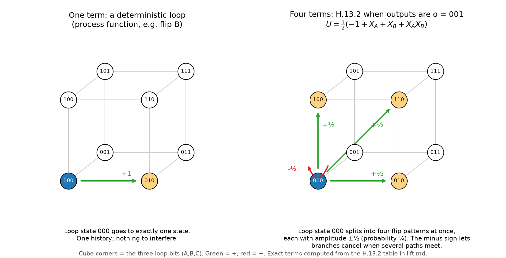

Purifiable classical processes need not be mixtures of process functions
Subtitle: every process function lifts to a unitary process, but quantum purifiability strictly enlarges the classical-process set beyond the process-function hull (three binary parties).
Draft note. Not submitted. Not refereed. Canonical source of the paper; lift.pdf is built from this file.
Abstract
A classical process (a point of the Baumeler-Wolf polytope) is purifiable in the sense of Araujo et al. (2017) if it arises from a pure process, one that stays unitary under all local unitaries with ancillas, by restricting to classical interventions. Mixtures of process functions are purifiable, and it was natural to ask whether nothing else is; we had conjectured so. The main result of this note is that this is false. Theorem H.12.1 gives a three-party binary classical process p, induced by an explicit Switchboard with eight 8x8 boards whose entries lie in Z[i]/8 and a source state with phases in Q(zeta_8), such that p is valid, the machine is pure, and p violates a facet inequality of the process-function (PF) hull: L(p) = 1/4 - (3/16) sqrt 2 < 0, while L ≥ 0 on all 744 process functions. The verification is exact. It has been re-derived independently from the paper text alone (code/stochastic/cyclic/switchboard/verify_h12), and the statement purification_conjecture_false : ∃ p, Valid p ∧ Purifiable p ∧ p ∉ convexHull ℝ PFset is checked by the Lean 4 proof assistant with Mathlib (https://github.com/drewarrowood/process-function-unitary-lift/blob/main/lean/PFUL/Counterexample.lean; standard axioms only, no sorry, no native_decide). The two gaps stated in earlier versions (finite-dimensional ancillas; self-contained definitions not linked to the process-matrix framework) are now closed in Lean. The theorem is restated with validity and purity defined through process matrices, CPTP Choi matrices and the link product (purification_conjecture_false_choi). The Switchboard is proved pure with ancillas in arbitrary Hilbert spaces, and valid under normal CPTP local channels on ancillas of any cardinality (H.19, H.20). Round 13 (H.20) closes in Lean the four formal gaps left by Round 12: for every process, purity against finite ancillas implies purity against ancillas in arbitrary Hilbert spaces; pure process matrices are exactly the valid Choi projectors of unitaries (AFNB's Theorem 2, for equal local input and output dimensions); the Kraus theorem and normal-CPTP validity hold without countability; and validity and purity defined with a link product over ancillas of any cardinality agree with the finite-ancilla definitions. The caveats that remain are listed in Section 9. The paper has not been peer reviewed.
The counterexample sits exactly where earlier structural results said it must. If some party is first at the operator level in a purification, the process is a PF blend (H.6); in the counterexample no party is first, and every party's input depends on another party's output. For two parties every valid classical process is a PF blend (Appendix G), so three parties are needed. Classically reversible purification gives exactly the PF hull (D.6), so the gap is a quantum effect. Exact non-purifiability certificates for Eex1 and two vertex orbits (C.2) show the purifiable set is still a proper subset of the valid processes.
The first part of the note proves the lifting theorem that the purification question starts from. A process function is a classical map w from the outputs of several parties to their inputs such that every choice of local deterministic interventions has exactly one fixed point. Baumeler, Costa, Ralph, Wolf and Zych showed that every process function extends to a bijection by adding a source and a sink, and left open whether every such bijection quantizes to a valid unitary quantum process; Daher Ahmed and Kunjwal (2026) state this as a conjecture and prove it for a subclass. We give a short argument that it holds for every process function with finite alphabets: the permutation unitary U|o,e⟩ = |w(o)+e, o⟩ composed with arbitrary local unitaries induces a unitary from source to sink. The key combinatorial fact, that two distinct output strings always disagree at some party whose input w assigns equally, is the pairwise-exclusivity property of Dourdent et al. (2026). The identity M M† = 1 and the validity chain are machine-checked in Lean 4 (PFUL.induced_unitary, PFUL.valid_kraus, PFUL.valid_instrument, PFUL.Choi.bornC_anc_eq_one, PFUL.Choi.afnb_iff_density, PFUL.Choi.isCP_iff_choi, PFUL.Choi.validity_package; standard axioms only), and Appendix F extends it to countable alphabets (PFUL.Countable.induced_unitary_l2). The Choi form in infinite dimensions is formalised as a convergent Born-pairing series (Section 9), and continuous alphabets are settled only partly (F.5: point-map local operations, or causal w). The philosophical sections read the lifting theorem as saying that fixed-point consistency is already a quantization condition, and Section 10 reads H.12 as saying that purity does not, in addition, single out mixtures of deterministic loops. Section 9 states exactly what is proved, certified, numerical, or open.
0. Introduction and contributions
Process functions are the deterministic classical processes without global causal order: every local choice has exactly one consistent history. Their mixtures form a polytope, conv(PF), inside the larger polytope of valid classical processes. Purity (unitarity under all local operations, Araujo et al. 2017) is the standard candidate for the physically admissible processes. Two questions follow: does every process function purify, and are mixtures of process functions the only classical processes that do? This note answers the first yes and the second no.
Contributions, in the order of the evidence for them:
- A purifiable classical process outside the PF hull (Theorem H.12.1) [proved; exact; independently re-derived; Lean-checked, in the process-matrix framework and with infinite-dimensional ancillas; the Round 12 formal gaps (a)–(d) are closed in Lean (H.20); remaining caveats in Section 9]. Three binary parties, an explicit X-type Switchboard and source state, a facet inequality of conv(PF) violated by 1/4 - (3/16) sqrt 2. Section 9 and H.12 list what each check covers.
- Every process function lifts to a unitary process (Section 1, Appendix A) [proved; Lean-checked in finite dimensions; countable alphabets in Appendix F].
- Where purifiable non-blends can and cannot live [proved]. Mixtures of PFs are purifiable (C.1). Two parties: every valid classical process is a PF blend (Appendix G). Three parties: a party last, or a party first with valid conditionals, forces a PF blend (H.1, H.2), and so does a party that is first at the operator level in some purification (H.6). Switchboard structure: the purity conditions are an operator form of pairwise exclusivity, ancillas add nothing, and commuting or two-term boards give PF blends (H.8, H.10.6).
- Limits of the purifiable set [certified exact]. Eex1 and vertex orbits 7 and 50 are not purifiable (C.2), so the purifiable set lies strictly between conv(PF) and the valid polytope.
- The complete facet list of the three-party binary PF hull (29,344 facets in 93 orbits, D.7), negative results for several certificate routes (D.8, Appendix E, C.5, C.6), and numerical surveys, all labelled as such.
Glossary. Appendix K defines the main technical terms in alphabetical order, with notation, the section where each is defined, the source in the reference list, and notes where the paper's usage differs from the literature.
Earlier versions of this note stated the "only if" direction as a conjecture and collected evidence for it. That material is kept as a record and marked superseded where H.12 overturns it; nothing in it is used in the proof of H.12.1.
Novelty and prior work (literature check of Oct 23 2026). Status of each main claim, as far as we could find:
- Purifiable classical processes beyond conv(PF) (H.12.1, H.13.2) and convexity of Purif (H.13.1): new, as far as we can tell. The inclusion conv(PF) ⊆ Purif was asserted earlier by Baumeler, Gilani and Rashid (Quantum 6, 673 (2022), ref. 27), without a separate proof for the coherent operator. We found no published statement of the converse ("purifiable classical = mixture of PFs"); it appears to be our own conjecture (C.3), and we found no earlier proof or counterexample. AFNB 2017 ask a different question (are all extensibly causal processes purifiable?). The nearest open question is Kunjwal and Oreshkov's (arXiv:2307.02565, ref. 36): can correlations from unitarily extendible process matrices be antinomic? We do not answer it. The H.13.2 correlation lies inside the (3,2,2) nomic polytope (H.13.5).
- Update after H.15.7e (literature recheck, Oct 23 2026; see H.15.8).
- The H.13.2 board is not new. Up to Hadamards and Pauli-X flips on the agent wires (and unitaries on source and sink), it is the time-reversed Lugano process |wr⟩. Guérin and Brukner (NJP 20, 103031 (2018), arXiv:1805.12429, Sec. IV and App. D; ref. 38) define it, prove that it is a valid pure process, and show numerically that it violates a causal inequality.
- What we did not find stated anywhere is the classical fact: read in the Hadamard basis on the agent wires, this known pure process induces a classical process outside conv(PF). Read in the computational basis, it induces a PF mixture (H.15.8).
- So the claim "purifiable classical processes beyond conv(PF)" stands, as far as we can tell. For H.13.2, however, it rests on a known board read in a non-standard basis, not on a new board.
- The H.12 board is not of this form in the Hadamard frame (H.15.8). Whether it is equivalent to a time-reversed PF purification in some other local frame is OPEN. Update (H.21.2): H.12 is the frame-rotated time reverse of the √X-Lugano process, the Lugano purification with Bob's flip replaced by √X. That process is a member of VOKB's Lugano family (CITED), but not a PF purification.
- Update after H.15.7e (literature recheck, Oct 23 2026; see H.15.8).
- Every process function lifts to a unitary process (Section 1, Appendix A; countable alphabets, Appendix F): partly known. Baumeler, Gilani and Rashid asserted it without a coherent-level proof. It was proved for the Lugano process (AFNB 2017, Section 7), for an n-party family (Araújo, Guérin and Baumeler, PRA 96, 052315 (2017), Appendix B, ref. 37), and for MECC unitaries (Daher Ahmed and Kunjwal, arXiv:2610.00579, Theorem VII.1, ref. 24). Those last authors state the general case as Conjecture VII.1. Our general proof appears to settle it (Section 6). We found no earlier treatment of countable alphabets.
- The X-type term threshold (H.14.1: boards with at most three terms always give PF blends; four terms can leave the hull): new. It is stated in terms of this note's Switchboard definitions, and we found nothing comparable.
- No single-use fine-grained model for H.13.2 (H.15.7b): an application of known results. That single-use acyclic and QC-QC realisations give causal correlations is due to Wechs, Dourdent, Abbott and Branciard (PRX Quantum 2, 030335 (2021)) and related work. What is ours is the exact causal-inequality certificate for this particular purifiable non-blend. Lugano, a PF, already violates causal inequalities, so "purifiable but not QC-QC" is not new in itself. Moreover, the board of H.13.2 is locally equivalent to the time-reversed Lugano process, and Guérin and Brukner (2018, ref. 38) already found a causal-inequality violation for that process (a numerical seesaw, I₁ ≈ −1/4, with a uniform-superposition source). Our contribution there is only an exact certificate in a different frame, with a different inequality and source. Likewise, the valid routed graph for H.13.2 (H.15.7e) is a direct corollary of VOKB's Lugano graph plus time reversal. VOKB themselves define the adjoint (time-reversed) routed graph and build both validity principles symmetrically from it, so "the reverse of a valid graph is valid" is immediate from their definitions. We found no explicit statement of it, and no treatment of reversed Lugano, in 2206.10042v3 or in Vanrietvelde's thesis (H.15.9(A)).
Coverage caveat: we searched by web search and read the primary sources cited here. We did not run a systematic citation-graph or Google Scholar search, and preprints from the last few weeks may be missing.
1. Result and short proof
Setting. Parties k = 1..n. Party k has a finite input alphabet Ik, identified with the cyclic group Z|Ik|, and a finite output alphabet Ok. A process function is w = (wk): prod Ok → prod Ik such that for every tuple of local functions fk : Ik → Ok the map o → (fk(wk(o)))k has exactly one fixed point. The source has output space P = prod Ik, the sink has input space F = prod Ok, and
U |o⟩O |e⟩P = |w(o) + e⟩I |o⟩F (componentwise addition mod |Ik|).
U is a permutation of basis states, hence unitary, for every map w (Baumeler et al. 2019, Theorem 2).
Lemma (exclusivity). If w is a process function and s ≠ s' in prod Ok, there is a party k with sk ≠ s'k and wk(s) = wk(s').
Proof. Otherwise, for every k, wk(s) = wk(s') implies sk = s'k. Define fk(x) = sk if x = wk(s), fk(x) = s'k if x = wk(s') (and arbitrary otherwise); the two clauses agree when wk(s) = wk(s'). Then s and s' are two distinct fixed points of the same intervention, a contradiction. (This is the forward direction of Dourdent et al. 2026, Theorem 7.)
Theorem. Let Vk be any unitary from Ik ⊗ Xk to Ok ⊗ Yk, with local ancilla spaces Xk, Yk (|Ik||Xk| = |Ok||Yk|). Composing U with the Vk (feeding each Ik into Vk and each Ok back into U) gives the operator M from P ⊗ X to F ⊗ Y with entries
M[(s,y),(e,x)] = ∏k Vk[(sk, yk), (wk(s) + ek, xk)].
M is unitary.
Proof. (M M†)[(s,y),(s',y')] = sum over e, x of the product over k, which factorises as ∏k ∑ek, xk Vk[(sk,yk),(wk(s)+ek, xk)] conj Vk[(s'k,y'k),(wk(s')+ek, xk)]. If wk(s) = wk(s'), substituting i = wk(s) + ek turns the k-th factor into the inner product of rows (sk,yk) and (s'k,y'k) of the unitary Vk, i.e. a Kronecker delta. If s = s' every factor is of this kind, giving deltay,y'. If s ≠ s', the Lemma gives a party with wk(s) = wk(s') and sk ≠ s'k, whose factor is 0. So M M† = 1, and M is square, hence unitary.
In the language of Araújo, Feix, Navascués and Brukner (2017, Definition 1), the process |U⟩⟩⟨⟨U| is therefore pure. Section 2 spells out why this implies validity for arbitrary local CPTP maps and instruments, including ancillas shared or entangled with outside systems. Fixing the source to |0⟩ and tracing the sink recovers the diagonal process matrix of w.
Converse (numerical only). If w is not a process function, the exclusivity property fails (Dourdent et al. 2026, Theorem 7); we have not proved that unitarity then fails in general, but numerically (code/check.py) every non-process function in the 2- and 3-party binary cases fails unitarity for random local unitaries. The "open/closed" contrast is the point: U is a bijection for every w; closing the loop is unitary exactly when w is consistent.
Checks. code/check.py enumerates all 12 binary 2-party and 744 binary 3-party process functions, verifies ||MM† - 1|| < 1e-13 for Haar-random local unitaries (with and without qubit ancillas) and for ternary 2-party examples, and verifies that non-process functions fail. Lean status is in lean/STATUS.md.
2. From unitarity to validity
Section 1 shows that the lift is pure in the sense of Araújo et al. (unitaries in, unitary out). Appendix A derives full process validity from this (any local CPTP maps, local and shared/entangled ancillas, instruments) using Stinespring dilation. Appendix B covers input and output alphabets of different sizes. Appendix C treats stochastic classical processes: mixtures of process functions are purifiable, but a non-deterministic extremal point of the Baumeler–Wolf polytope provably is not (exact certificate).
3. Backward causation, before the formalism
The linguistic objection to backward causation is that a cause is, by definition, earlier than its effect. Dummett argued in 1954 and again in 1964 that this is a stipulation about the word, not a discovery about the world. Black's bilking argument is the better objection. If an earlier event is supposed to be the effect of a later one, an agent who sees the earlier event can intervene so as to prevent the later one. Either the agent cannot intervene, which wants an explanation, or the later event was not necessary for the earlier one. Lewis's reply splits the modal: one can, relative to the local facts and the laws, and one cannot, relative to the whole past. That dissolves a verbal paradox. It does not say which histories the laws admit.
General relativity makes the question physical. Gödel's 1949 solution has closed timelike curves. Morris, Thorne and Yurtsever showed that a traversable wormhole, if one could be held open, can be converted into a time machine by relative motion of the mouths. The Cauchy problem on the resulting spacetime is the grandfather paradox in differential equations. Friedman, Morris, Novikov, Thorne and collaborators proposed, in 1990, that only self-consistent solutions occur. Echeverria, Klinkhammer and Thorne then studied a hard-sphere billiard ball on a wormhole. For every "dangerous" initial trajectory they examined, one aimed so that the ball would knock its younger self off course, they found at least one self-consistent continuation, and many initial data admit several, some infinitely many. They did not prove that consistent solutions exist for all initial data, but they found no case without one. Carlini, Frolov, Mensky, Novikov and Solodukhin derived a version of self-consistency from stationarity of the action in a model, and found the same underdetermination. Novikov's principle removes inconsistent solutions. It does not choose among consistent ones. Earman's survey of the classical problem remains the right warning: a consistency condition that is imposed after the dynamics is not a dynamics.
4. Three quantum replies, and why none is the criterion
Deutsch's 1991 model asks for a fixed point of the partial trace around the curve. In finite dimension a fixed point exists, so no particular action is forbidden, and the grandfather paradox becomes a mixed state. The cost is nonlinearity. The model clones unknown states. Aaronson and Watrous showed that the computational power is PSPACE. Bennett, Leung, Smith and Smolin argued that the power is an artefact of demanding a fixed point for a distribution that an ordinary preparation would not produce. Tolksdorf and Verch showed that the Deutsch condition can be met to arbitrary precision in quantum field theory on a spacetime with no closed timelike curve at all. A Deutsch fixed point is not diagnostic of a loop.
Lloyd, Maccone and collaborators replace the fixed point by post-selection, the P-CTC model. Inconsistent branches are the ones that fail the post-selection. The grandfather paradox is resolved by the experiment not happening. Process functions sit inside this class: the event list appears conditional on the post-selection succeeding. That is a simulation. It is not an account of why the inconsistent branch was never a physical option. Post-selection is a filter on samples, of the same shape as a measure-zero axiom.
The process-matrix formalism of Oreshkov, Costa and Brukner is the third reply, and the one this note uses. A process is a map from local instruments to probabilities, required to give a probability for every choice of instruments, with no global causal order assumed. Classical deterministic processes in that class are process functions. Baumeler and Wolf described the polytope. Three parties suffice for a violation of a causal inequality. The Lugano function, found by Araújo and Feix and studied by Baumeler and Wolf,
w(a,b,c) = (not b and c, not c and a, not a and b),
is the standard witness. Each party's input depends on the other two outputs. The dependence graph is a cycle. Every deterministic intervention has exactly one fixed point. Two parties are not enough: the twelve binary two-party process functions are all causally ordered. Tobar and Costa extended the characterisation to any number of parties.
5. What the fixed-point clause is doing
The clause is an attempt at the criterion the filters do not give. A map from outputs to inputs is admitted only when every local function, freely chosen, composes with it to give exactly one fixed point. No fixed point is the grandfather case: the intervention has nowhere to land. More than one is the bootstrap: the loop underdetermines its own contents. The freedom is the content of the no-new-physics principle in Baumeler, Costa, Ralph, Wolf and Zych. Any operation possible in an ordinary region remains possible in a region that does not itself contain the closed curve. Consistency is not allowed to forbid the operation. It is allowed only to constrain the global solution.
Dourdent, Leitherer, Boghiu, Simonov, Kunjwal and Acín have since said the same thing without quantifying over interventions. A list of events is the event list of a process function exactly when it is complete and pairwise exclusive. If any two of several questions can be answered jointly, so can all of them. That is a multipartite form of Specker's principle. It is a constraint on the process, not an extra axiom that paradoxical histories have measure zero. Cyclic causation is not the enemy. Cyclic signalling is.
6. Reversibility, and the quantization question
Reversibility is not free on the original alphabet. The Lugano function is two-to-one. Of the 256 binary two-party maps, twelve are process functions and none equals its input-output reverse. Baumeler, Costa, Ralph, Wolf and Zych, Theorem 2, restore reversibility by a source, a region with trivial input, and a sink, a region with trivial output. The extended process can be read backwards. The form used here is the permutation unitary
U |o, e⟩ = |w(o) + e, o⟩.
The inverse reads the sink as the output string and the source as the difference between the input and w(o). A bijection of a finite set is a unitary. A unitary on a fixed basis is not yet a quantum process. Parties must be able to insert instruments that are not diagonal in that basis. A Hadamard is the test case. If the induced map from source to sink ceases to be trace-preserving, the classical consistency clause has not lifted, and quantum theory needs an extra filter. If it remains trace-preserving for every instrument, the fixed-point clause was already the quantum consistency clause.
Daher Ahmed and Kunjwal (arXiv:2610.00579, 30 September 2026, ref. 24) state as Conjecture VII.1: "Any process function can be purified to a unitary process." They support it numerically and prove it for unitaries with mutually exclusive control conditions (MECC; their Theorem VII.1), and under a second sufficient condition, unambiguity. They note that the bare permutation unitary of the reversible extension may fail to be a valid process. The argument below is that it does not fail. As far as we can tell, it settles Conjecture VII.1 for all process functions with finite alphabets, and Appendix F extends it to countable alphabets (Hilbert spaces ℓ²). Earlier special cases are the Lugano process (AFNB 2017, Section 7, below) and an n-party family of AF/BW-type processes, for which Araújo, Guérin and Baumeler (PRA 96, 052315 (2017), Appendix B, ref. 37) prove validity of the coherent purification. Araújo, Feix, Navascués and Brukner had already written down, in 2017, a purification of the Lugano process by exactly this construction (the standard |x,y⟩ → |x, y + f(x)⟩ trick, credited there to Baumeler and Wolf); a routed-circuit reconstruction is due to Vanrietvelde, Ormrod, Kristjánsson and Barrett. Baumeler, Gilani and Rashid (2022) proved that the diagonal (dephased) process matrix of every process function is valid, and remarked, without a separate proof for the coherent operator, that the reversible extensions are therefore unitarily extensible. The contribution claimed here is a short general proof for the coherent permutation unitary, for every process function.
7. Time symmetry and retrocausality
Price has argued that a time-symmetric ontology for quantum theory should be retrocausal, on the assumption that the quantum state is real. Leifer and Pusey replaced that assumption with lambda-mediation: correlations between a preparation and a later measurement are mediated by the ontic state of the system. No retrocausality, operational time symmetry, and lambda-mediation then imply a timelike Bell factorization, which sequential measurements violate. Maudlin's reply is that the operational time-reverse of an experiment is not always itself an experiment of the same kind. The no-go is conditional.
The dilation in this note is adjacent to that argument, not a solution of it. A process function that violates a causal inequality already has each party's input depending on another party's output. The later setting is an argument of the earlier input. Lambda-mediation, in the strict past-screening sense, fails because of the cycle, not because a retrocausal hidden variable was added by hand. Read forwards, the source is an input and the sink is an output. Read backwards, they exchange roles, and the inverse of the permutation unitary is the reversed process. The objection that the bare Lugano function is not an involution on its own three bits is an objection to refusing the source and the sink. Whether the dependence is the retrocausality Price asked for, or only an operational time-reverse, is a reading of the same operator. The mathematics does not choose the reading. It does remove one cheap reply: one cannot say that the cyclic classical model dies when instruments become unitary.
8. What this does not settle
Embeddability is untouched. A unitary process on a finite alphabet is not a solution of Einstein's equation, and it is not a local Hamiltonian flow on a wormhole. The billiard has the wrong multiplicity. Post-selection realises the event list conditional on the post-selection succeeding. The theorem says the list has a unitary dilation. It does not say the dilation is a spacetime.
Purifiability in the sense of open quantum problem 43, whether every extensibly causal process is purifiable, is related but not identical. The theorem puts every process function, including those that violate causal inequalities, inside the unitarily extendible fragment. It does not classify processes that are not deterministic classical functions.
Freedom is not settled. Nothing here decides whether an agent whose output is an argument of an earlier input has a choice. The fixed-point clause says the choice, if made, completes uniquely. It does not say the choice was open. Whether this is an adequate reply to Black depends on whether consistency conditions may rule out interventions, or only rule out histories given the interventions. The note takes the second reading: consistency rules out histories given the interventions, never the interventions themselves (Section 5), and the formalism is built for it.
The combinatorial lemma is finite for any fixed alphabet and is the piece an attacker has to break. The linear algebra after it is row orthogonality. See lean/STATUS.md for exactly what is and is not machine-checked.
9. Status: what is proved about purifiable classical processes
Former conjecture. A classical process is purifiable if and only if it is a mixture of process functions (a "PF blend").
Theorem 9.1 (= H.12.1) [proved]. The "if" half holds (C.1). The "only if" half is false: there is a valid three-party binary classical process that is purifiable and lies outside conv(PF).
What supports Theorem 9.1, in decreasing order of independence:
- Exact paper proof (H.12, code/stochastic/cyclic/switchboard/c1/exact_cex.py). Exact arithmetic in Q(zeta_8): unitarity of the boards, the Pauli rule of H.8.1, validity under all 64 deterministic interventions, and the facet value 1/4 - (3/16) sqrt 2 < 0. Purity then follows from the paper proofs of H.7.1, H.8.1 and H.8.2.
- Independent re-derivation (verify_h12/verify.py, verify.log), written from the paper text only. It checks purity directly through an exact multi-affine criterion over 125 slot combinations, with no use of H.7.1 or H.8. It re-enumerates the 744 PFs by brute force over 88 maps and uses its own rational separating inequality, value 1 - (3/4) sqrt 2 < 0, together with an infeasible membership LP. It also runs 1,200 random float trials (residual ≤ 2.4e-15) with a perturbed control.
- Lean 4 proof (https://github.com/drewarrowood/process-function-unitary-lift/blob/main/lean/PFUL/Counterexample.lean, CounterexampleData.lean; lean/STATUS.md Round 6). The statement
purification_conjecture_false : ∃ p, Valid p ∧ Purifiable p ∧ p ∉ convexHull ℝ PFsetis proved. The only axioms are propext, Classical.choice and Quot.sound. There is nosorryand nonative_decide; the finite computations usedecide +kernel. Purity is proved for all finite ancillas and local unitaries (isPure_Vsb), validity for all stochastic local interventions (valid_pcl), and non-membership through the facet functional (pcl_not_mem_convexHull). Framework link and infinite ancillas (Rounds 9–13; H.12.3, H.19, H.20). The theorem is restated with process-matrix definitions only (purification_conjecture_false_choi).Valid pis equivalent to AFNB validity of the diagonal process matrix Wp under all CPTP local operations with finite ancillas (isValidPM_Wcl_iff).IsPure Vis equivalent to unitarity of the link product of |V⟩⟩⟨⟨V| with local unitaries (isPure_iff_unitaryLink). |Vsb⟩⟩⟨⟨Vsb| is a valid and pure process matrix (isPurePM_choiMat_Vsb). The deterministic valid process matrices are exactly the process functions (isValidPM_Wcl_pfPoint_iff). The Switchboard is pure with ancillas in arbitrary Hilbert spaces (isPureHilbert_Vsb) and valid under normal CPTP local channels on countable ancillas (valid_normalCPTP_Vsb). Former formal gaps (a)–(d), closed in Lean in Round 13 (H.20; lean/STATUS.md Round 13; standard axioms only). - (a) Infinite-ancilla link product [PROVED (Lean)].
IsValidPMInfandIsPurePMInflet the local Choi kernels and unitary kernels live on ancilla types of any cardinality.isValidPMInf_iff : IsValidPMInf W ↔ IsValidPM Wholds for every finite W, andisPurePMInf_iff σ : IsPurePMInf W ↔ IsPurePM Wwhenever each party's input and output types are in bijection (σ). The counterexample is restated with these predicates (purification_conjecture_false_choiInf). Caveat: the link product is entrywise, on kernels whose finite sections are PSD and whose partial traces converge unconditionally; it is not an operator identity for non-trace-class Choi operators (H.20.4). - (b) Finite purity implies Hilbert purity, every V [PROVED (Lean)]:
isPureHilbert_of_isPure, andisPure_iff_isPureHilbert,isPure_iff_isUnitaryKer(H.19.4, H.20.1). - (c) AFNB Theorem 2 [PROVED (Lean), with hypotheses]:
isPurePM_iff σ hPF W : IsPurePM W ↔ IsValidPM W ∧ ∃ U, IsUnitaryM U ∧ W = choiPM U, for Ik ≃ Ok and |P| = |F| (H.20.2). - (d) Normal CPTP validity without countability [PROVED (Lean)]:
isNormalCPTP_iff_kraus_any,valid_normalCPTP_Vsb_any(H.20.3).
Remaining caveats [OPEN as stated]. (1) An operator-level link product for Choi operators that are not trace class; the kernel form of (a) is what is proved. (2) AFNB Thm 2 for unequal local input/output dimensions, and its converse for |P| ≠ |F|. (3) The joint space CP ⊗ K1 ⊗ K2 ⊗ K3 is modelled as any Hilbert space with a basis indexed by P × ∏κ_k, because Mathlib has no completed Hilbert tensor product; the local spaces C² ⊗ Kk are now Mathlib's tensor product (isPure_qubitTensor, H.20.5). (4) Automatic boundedness of positive trace-preserving maps on the trace class (the normality hypothesis of IsNormalCPTP) is still assumed (H.20.6). (Round 15, H.22.4: Mathlib's spectral theorem for compact self-adjoint operators is available, so this is unformalised rather than obstructed.) (Round 16, H.23.2: closed in Lean, PFUL.TraceClass.IsCPTP.isNormalCPTP; caveat (4) no longer applies.) None of these affects Theorem 9.1.
None of this has been peer reviewed.
Where the gap lives. It needs three parties (Appendix G), a purification with no operator-first party (H.6), and boards that are neither commuting nor two-term (H.8.4, H.10.6). The H.12 machine has all three features.
This section is a map of the current status. Labels follow the appendices: [proved], [certified exact] (rational certificate, not Lean), [numerical], [cited]. Proofs live in the appendices and are not restated here.
Proved.
- Process functions lift (Section 1, Appendix A). Every process function lifts to a unitary process. The core identity and the validity chain are machine-checked in Lean in finite dimensions (PFUL.induced_unitary; PFUL.Choi.validity_package). Countable alphabets: Appendix F (PFUL.Countable.induced_unitary_l2). Continuous alphabets (F.5): measure preservation for every measurable process function and unitarity for point-map local unitaries (all local unitaries if w is causal, or if w is finitely controlled, F.5.9, or countably controlled, F.5.10) are proved in the paper, with the combinatorial core in Lean (PFUL.Continuous); for uniform limits of countably controlled w the closed loop is a canonical isometry (F.5.11); its unitarity, and w that are not such limits, are open.
- Blends lift (C.1). Every mixture of process functions is purifiable, and convex combinations of purifiable processes are purifiable. This is the "if" half of the former conjecture.
- Classical version (D.6). A classical process is classically reversibly purifiable iff it is a PF blend. Together with H.12 this shows that quantum purifiability does add something: the quantum purifiable set strictly contains the classical one.
- Two parties (Appendix G, Theorem G.1). Every bipartite valid classical process, with any finite alphabets, is a blend of causally ordered process functions. So for two parties purifiable = PF blend = valid; the gap of H.12 needs three parties. This is known in substance [cited: Oreshkov-Costa-Brukner 2012, Suppl.; Baumann-Brukner 2016].
- Three parties, a party last (Theorem H.1). If some party's output influences nothing, the process is a PF blend.
- Three parties, causally separable (Theorem H.2). If some party is first and every conditional bipartite process is valid, the process is a PF blend. So every classically causally separable three-party process is a blend of causally ordered process functions, so no gap can occur on that class.
- Three parties, a party first in the purification (Lemma H.6.1, Theorem H.6.2). If some purification of W has a party whose input is prepared from the source alone (operator-level first: V factorises through that party's input), then every conditional bipartite process is valid and purifiable, and W is a PF blend. So a purifiable process outside the hull can only have purifications in which every party's input is influenced by some party output. Lugano has no purification with an operator-first party.
- Switchboard structure (H.8). The H.7.1 purity conditions are equivalent to a Pauli-span condition, Ko,o' in the span of the operators trivial on some party whose output changed, which is the operator form of exclusivity. Checked in exact arithmetic. Ancillas add no conditions, so H.7.1 is full purity. Operator-first and operator-last parties are read off K. Monomial or commuting switchboards give PF blends for every source state (H.8.1-H.8.5).
- Attacks on (C1) (H.10). Two natural routes are closed. No twirl that preserves p can reduce to the commuting case, and the degree-2 (Shor) relaxation in the board entries is vacuous. Exhaustive check: pairwise exclusivity is equivalent to being a PF for three binary parties (744). Two-term boards Xw1(o) exp(i t Xd(o)) are classified exactly (39,512 non-trivial pairs, 34,304 with non-commuting projectors).
- Toward (C2) (H.11). Input copying preserves purity. Generalized switchboards (extra sink F') obey the block-wise Pauli rule. (C2) reduces to whether the sink can be made to record o on every source state (open).
- Robustness, trivial halves (I.1-I.3). Being eps-close to a blend implies being eps-close to purifiable. A quantitative converse would have been equivalent to the conjecture, and is therefore false (H.12). In family C the machine residual bounds the operator purity defect.
- Structure of purifications (D.1, D.2, D.5). The sink records (o, i) orthogonally. Constraints on the fixed source state are vacuous. Validity under quantum-controlled interventions holds for every classical process.
Certified exact non-purifiable. Eex1, and vertex orbits 7 and 50 (one of which contains Eex1): exact inertia certificates (C.2; code/stochastic/cert). So the purifiable set, while larger than conv(PF), is still a proper subset of the valid classical processes.
Settled negatively (routes that provably do not work).
- Hidden source label (D.3/D.4). The single-classical-label strengthening D.3 is false: a causal circuit is an exact counterexample.
- Fixed-source certificates (D.8). No certificate that uses only the fixed source sector can rule out purification of any classical process.
- Marginally-first reduction (H.5). Purifiability plus "party A's input marginal is output-independent" does not force valid conditionals. The operator-level version does (H.6). An exact counterexample is a 4-term PF blend. So H.2 cannot be extended this way to Eex1 and orbits 7, 8, 50, even though all of them are marginally first in some party (H.1 numerics).
- Form-based certificates for orbits 8/10/20 (C.5). Every linear or block-Hermitian combination of the constraint forms tried stalls at lambda_16 ~ +1e-4. Adding the Gram normalisation provably adds nothing. The obstruction is non-convex. The earlier estimate that "about half" of the open orbits are certifiable by the current pipeline is withdrawn.
- Moment relaxation (Appendix E). The degree-2 relaxation is feasible for Eex1, so it is weaker than single-form inertia.
- Degree-4 single-vector certificates for orbit 8 (C.6) [numerical]. Random 67-dim (even 60-dim) subspaces of VW, with the radical removed, contain jointly isotropic vectors (loss 1e-9 to 2e-7, against a baseline of 0.1). So the C.5 degree-4 proposal fails for random L, and full-frame level-2 Lasserre is about 3.4e6 in size. No paid compute was used.
- Single-vector determinantal bound for orbit 8 (H.2 route B) [numerical]. The jointly isotropic cone contains vectors with rank K(u) of about 51-55, so the bound gives only dim ≤ ~28-32, not < 16.
Numerical observations (not proof; recorded before H.12 and partly read at the time as support for the conjecture, which H.12 shows they were not).
- GPU sweep (C.4). None of the 49 remaining sampled non-deterministic vertex orbits lifted. Best residuals were 12.97-59.35; the same code reaches 1e-16 on Lugano.
- Isotropic dimension (C.5). For orbits 8, 10 and 20, constraint-isotropic subspaces appear to exist up to dimension ~10 and fail by 12. A purification needs 16.
- Facets (D.7). Facet orbit 82 is violated by Eex1 and by all 51 sampled non-deterministic vertex orbits.
- Boundary (D.8). Along Lugano → Eex1, purifiability appears to stop where the PF hull does.
- Two-term boards (H.10.4). All 237 symmetry classes, 7 values of t and all 29,344 facets give operator facet values ≥ -1.7e-14. So they lie in conv(PF) for every source state, including the non-commuting ones. No counterexample. Float64, not exact.
- Switchboard robustness (H.8, I.4). Minimising the exact purity residual R at prescribed facet-82 violation v always gave R ≥ 0.31 v2, i.e. violation ≤ 1.79 sqrt(R): 108 runs, v from 0.01 to 0.9. No counterexample in family C was found by this local search; H.12 lies in family C, so the floor is withdrawn (Appendix I).
- Unitary-side hunt (H.3). Optimising unitaries for purity, classicality and facet violation found no purifiable process outside the hull (the H.12 example needed the restriction to X-type boards). From Lugano, facet violation of ~0.01 costs a purity residual of 0.1-2.4.
Refuted / superseded (Oct 22 2026). The only-if half of the conjecture and the Switchboard conjecture (C1) are false (H.12.1). The Appendix I floor R ≥ 0.31 v2 was a local-optimisation artefact and is withdrawn. Evidence items above that were read as support for the conjecture (C.4, D.7, D.8, H.3, H.7, the Switchboard robustness item) remain true as statements about what was found, not as evidence for it.
Proved (Oct 22, later). Coset-transport theorem (H.10.6): X-type boards whose class-constant selections are all PFs give PF blends for every source state, with an explicit decomposition. Exhaustive exact check: all two-term boards are PF blends. Recording (H.11.4): a coherent-control purification shows that o need not be recorded on every source state.
10. Conclusion, interpretation, and open problems
What purity singles out. For process functions purity is automatic (Section 1): fixed-point consistency already guarantees a unitary dilation. For classical processes in general it is a genuine restriction, since Eex1 and orbits 7 and 50 are valid but not purifiable (C.2). But it is not the restriction "mixture of deterministic consistent loops". The purifiable classical processes form a convex set strictly between conv(PF) and the valid polytope (C.3, H.12). Classically, reversible purification gives exactly conv(PF) (D.6). So the extra processes are a quantum effect. A coherent superposition of board operations, none of which is a classical bijection, yields classical statistics that no mixture of process functions reproduces.
No operator-first party is needed, and none is allowed. H.6 shows that if any party is first at the operator level in some purification, the process is a PF blend. Every purifiable non-blend must therefore be "cyclic all the way down": in every purification, each party's input depends on some party's output. The H.12 machine is of this kind (operator-first residuals 0.31 / 0.25 / 0.31, complete causal graph). The gap is not produced by an exotic ingredient such as a party acting before the loop. It comes from the loop itself.
The two-party contrast. With two parties every valid classical process is a blend of causally ordered process functions (Appendix G), so valid = purifiable = conv(PF). The separation first appears at three parties, the smallest setting in which process functions without causal order (Lugano) exist.
Interpretation (philosophical, not a result). Read a process function as a deterministic consistent time loop. Before H.12, the hoped-for reading was that every reversible quantum loop with classical statistics is an ignorance mixture of such loops: chance in a loop would only be ignorance of which loop obtains. H.12 shows this reading fails. Quantum reversibility admits classical loops whose chance is not ignorance over deterministic loops, though it still excludes some classically consistent ones (Eex1). The earlier version of this paragraph assumed the conjecture. It is superseded, as is its claim that reversibility excludes basic chance from loops; D.4's caveat about contextual "which-loop" variables no longer bears on the main question.
Open problems.
- Characterise the purifiable set. Is it a polytope, or even closed? What are its extreme points? Are vertex orbits 8, 10, 20 and the other 46 sampled orbits that are numerically non-purifiable (C.4, C.5) truly non-purifiable? Exact certificates exist only for orbits 7 and 50.
- Minimal counterexamples. Find the smallest facet violation and the fewest non-PF board terms. Which facet orbits can be violated? The H.12 example uses facet 1741 of the normaliz list. What is the reach of X-type boards? The H.12 boards reach L1 distance 0.828 = 2(sqrt 2 - 1) from conv(PF) at their best source state [numerical]. Are three-term boards enough?
- Other scenarios. Larger alphabets, more parties, unequal alphabets (Appendix B), the countable case (Appendix F), and which causal-inequality violations the new processes reach.
- Close the remaining formal caveats (Section 9, (1)–(4)). Gaps (a)–(d) were closed in Round 13 (H.20). What is left is an operator-level link product for Choi operators that are not trace class, AFNB Thm 2 for unequal local dimensions, a completed Hilbert tensor product for the joint space, and automatic boundedness of positive trace-preserving maps (closed in Round 16, H.23.2).
- Structure of purifications. The reduction (C2) of a general three-party purification to Switchboard form (H.11) is open, and so is any facet description of the purifiable set derived from purity.
- Spacetime realisations. Both counterexamples now have explicit circuits on time-delocalised subsystems and valid routed graphs (H.18, H.21): they are the frame-rotated time reverses of the Lugano process and of its √X variant. Open: how far H.12 can violate the causal inequality yA (now known to lie in [−1.16564, −0.70580], H.21.8, H.22.1 and H.23.3), and realisations with more than three parties.
Appendix A. Unitarity under local unitaries implies validity
Definitions (AFNB 2017, Sec. 2). A process with source P, sink F and parties k is an operator W ≥ 0 on P ⊗ F ⊗ ∏k (Ik ⊗ Ok). For local maps Ak : L(Ik ⊗ Xk) → L(Ok ⊗ Yk), the induced map is the link product GA = W * (A1 ⊗ ... ⊗ An), a map L(P ⊗ X) → L(F ⊗ Y) with X = ⊗k Xk and Y = ⊗k Yk. W is valid if GA is CPTP whenever every Ak is CPTP, for all finite-dimensional local ancillas Xk, Yk. W is pure (their Definition 1) if GA is unitary whenever every Ak is unitary. Their Theorem 2 says W is pure iff W = |U⟩⟩⟨⟨U| for a unitary U. For pure Choi vectors the link product composes operators: if Ak(rho) = Vk rho Vk†, then GA(rho) = M rho M†, where M is the operator of Section 1.
Claim. W = |U⟩⟩⟨⟨U| with U the permutation lift of a process function w is a valid process.
Step 1 (local unitaries). By the Theorem of Section 1, GA is conjugation by a unitary M whenever every Ak is conjugation by a unitary Vk. This holds for any ancilla dimensions with |Ik||Xk| = |Ok||Yk|. (Machine-checked, both sides, including the dimension count: PFUL.induced_mul_conjTranspose, PFUL.induced_conjTranspose_mul, PFUL.induced_unitary; see lean/STATUS.md.)
Step 2 (local CPTP maps, via Stinespring). Let Ak : L(Ik Xk) → L(Ok Yk) be CPTP. Stinespring dilation gives an isometry Sk : Ik Xk → Ok Yk Ek with Ak(rho) = TrEk[Sk rho Sk†]. Pad the input with E'k of dimension |Ok||Yk||Ek| and the output with E''k of dimension |Ik||Xk|. The two sides then have equal dimension, and the isometry psi ⊗ |0⟩ → (Sk psi) ⊗ |0⟩, defined on the |0⟩-slice, extends to a unitary Vk : Ik Xk E'k → Ok Yk Ek E''k by completing orthonormal bases. So Ak(rho) = TrEk E''k[Vk (rho ⊗ |0⟩⟨0|E'k) Vk†]. The ancillas E', E, E'' never enter U, and the link product is multilinear and commutes with appending fixed states and with partial traces on systems it does not contract. Hence
GA(rho) = TrE E''[ M (rho ⊗ |0⟩⟨0|E') M† ],
where M is the operator of Step 1 for the unitaries Vk, with enlarged local ancillas Xk E'k and Yk Ek E''k. Appending a state, a unitary conjugation and a partial trace are each CPTP, so GA is CPTP.
Step 3 (shared and entangled ancillas). An ancilla R that is shared between parties, or entangled with any outside system, is covered by complete positivity. The joint state lives on P X R; GA ⊗ idR is CPTP because GA is; outputs are normalised states, and every probability that a later measurement on F Y R assigns is non-negative and sums to 1. Pre-shared entanglement between laboratories is the special case in which part of Xj and part of Xk start in an entangled state supplied through the source. It is also covered, because Step 2 already allows arbitrary input states on P ⊗ X.
Step 4 (instruments). Let {Akak} be CP maps summing to a CPTP map Ak. The link product of positive operators (Choi operators) is positive, so each Ga = W * ⊗k Akak is CP. Multilinearity gives ∑a Ga = GA, which is CPTP by Step 2. Then p(a) = Tr Ga(rho) ≥ 0 and ∑a p(a) = 1 for every input rho. This is the validity condition of Oreshkov, Costa and Brukner, applied to the process seen by the parties once the source is prepared and the sink discarded. Fixing the source in |0⟩ and tracing the sink yields Ww = ∑o |o⟩⟨o|O ⊗ |w(o)⟩⟨w(o)|I, the classical process matrix of w.
So purity gives validity with no further assumption. The only input specific to process functions is Step 1.
Lean (finite dimensions). All four steps are machine-checked, standard axioms only.
-
Step 1, isometries:
PFUL.induced_isometry. If every local map is an isometry (Vk† Vk = 1, not necessarily square), then M† M = 1. It rests on the column identity with constant row sums (PFUL.Column.sum_prod_eq_prod). -
Step 2, Stinespring:
PFUL.krausDilP_isometryandPFUL.ptrace_krausDil. Any Kraus family has the isometric dilation V = ∑j Kj ⊗ |j⟩, which reproduces the channel.PFUL.Choi.kraus_of_choigives a Kraus family from any PSD Choi matrix (spectral theorem), complete when the map is TP. -
Step 3, ancillas:
PFUL.valid_kraus(withPFUL.validfor unitaries). For any joint density matrix of source and ancillas (entangled or shared), the global output and the sink state are density matrices. -
Step 4, instruments:
PFUL.valid_instrument. Outcome-conditioned sink states are PSD and sum to a density matrix, so the probabilities sum to 1. -
Process-matrix form:
PFUL.Choi.procMatdefines W = |U⟩⟩⟨⟨U|.PFUL.Choi.born_eq_traceshows Tr[W (rho ⊗ 1F ⊗ ⊗k Ck)T] = Tr[M rho M†].PFUL.Choi.bornC_eq_onegives the AFNB/OCB normalisation = 1 for every source state and all local CPTP Choi matrices. -
Ancillas, converse, Choi's theorem:
PFUL.Choi.born_anc_eq_oneandbornC_anc_eq_onegive the Choi-form normalisation with party ancillas (local maps Ik Xk → Ok Yk, ancilla state folded into the source state).PFUL.Choi.procMat_posSemidefshows W is PSD.PFUL.Choi.afnb_iff_densityshows AFNB normalisation is equivalent to the density-matrix condition.PFUL.Choi.isCP_iff_choiis Choi's theorem (CP iff PSD Choi matrix), so CP is a theorem rather than a definition.
Bookkeeping: PFUL.Choi.bornAnc_eq_one needs no structure on the ancilla types. PFUL.Choi.bornSplit_eq_one and PFUL.Choi.afnb_iff_density_split use exactly the index layout of ValidWith. PFUL.Choi.validity_package bundles unitary validity, Kraus-channel validity and AFNB normalisation in one theorem. Infinite dimensions (countable alphabets). The unitary layer there is PFUL.Countable.induced_unitary_l2. Mathlib has no trace-class or Hilbert-Schmidt operators on infinite-dimensional Hilbert spaces, so the project builds them against its pinned Mathlib (lean/PFUL/TraceClass.lean, no sorry, standard axioms only). Hilbert-Schmidt operators have a basis-independent norm (PFUL.TraceClass.hsSq_indep). The trace class is the span of products A†B of Hilbert-Schmidt maps. Its trace Tr T = Σ⟨ei, T ei⟩ converges for every Hilbert basis to the same value (hasSum_trace). It is linear (traceL), cyclic against bounded operators (trace_comp_comm), nonnegative on positive operators (trace_nonneg), gives Tr|x⟩⟨y| = ⟨y, x⟩ (trace_rankOne), is invariant under isometric conjugation (trace_conj), and obeys |Tr T| ≤ ‖T‖₁ < ∞ with ‖T‖₁ = sup over ‖C‖ ≤ 1 of |Tr(CT)| (enorm_trace_le_traceNorm, traceNorm_ne_top). The trace class is a two-sided ideal (comp_mem_left, comp_mem_right). The partial trace over J is defined on H ⊗ ℓ²(J), realised as ℓ²(J; H), and on ℓ²(I × J) ≅ ℓ²(J; ℓ²(I)) (l2ProdEquiv). It is the unique trace-class operator with Tr(TrJ(T) C) = Tr(T (C ⊗ 1)) for all bounded C (trace_ptrace_comp, ptrace_unique, trace_ptraceR_comp). It is linear, preserves positivity and the trace (ptrace_add, ptrace_smul, ptrace_isPositive, trace_ptrace), and sends |x⊗y⟩⟨x'⊗y'| to ⟨y', y⟩|x⟩⟨x'| (ptrace_rankOne_tensor). With these, PFUL.Countable.valid_density_l2 restates validity on countable alphabets in trace form. For every density operator ρ on ℓ²(sources × input ancillas), entangled ancillas included, the output ΦρΦ† of the unitary from induced_unitary_l2 and the sink state TrY(ΦρΦ†) are density operators, so Tr = 1. The Choi form Tr[W(MA ⊗ MB ⊗ …)] = 1 is also formalised for countable alphabets (lean/PFUL/BornPairing.lean). There neither W nor a local Choi operator is trace class (a channel's Choi operator has partial trace equal to the identity), so the pairing is not a trace of a product of trace-class operators. Instead W = |U⟩⟩⟨⟨U| is kept as the family of its row vectors ur, with entries ur(c) = conj M(r, c) and M(r, c) = ∏_k Vk(…) (rowVec_apply). The pairing with an input density operator ρ is the series Σr ⟨ur, ρ ur⟩ over sink outcomes r = (o, y), which is the limit of its finite truncations; in finite dimensions it is exactly the Born rule Tr[W(ρ ⊗ 1 ⊗ ⨂ Ck)ᵀ] (PFUL.Choi.born_eq_trace). PFUL.Countable.valid_born_l2 proves that this series has nonnegative terms, converges unconditionally to 1, and equals Tr[TrY(ΦρΦ†)] from valid_density_l2. PFUL.Countable.valid_kraus_l2 (lean/PFUL/KrausL2.lean) extends this to arbitrary local channels with countably many Kraus operators: Vk(o, y)(i, x) = ⟨o|Ky|i, x⟩ with the Kraus index y as output ancilla, so completeness Σy Ky†Ky = 1 is orthonormality of the columns of Vk (an isometry, not a unitary). The induced operator is then an isometry (induced_isometry_l2); its columns are orthonormal by a polarization argument that reduces the Gram identity to the unit-column theorem (induced_gram). For every density operator ρ, ΦρΦ† and TrY(ΦρΦ†) are density operators, and the Born pairing converges to 1. The polar decomposition is formalised for every bounded operator (lean/PFUL/Polar.lean). With |T| = √(T†T) (Mathlib's continuous functional calculus), there is a partial isometry V, isometric on the closure of the range of |T| and zero on its orthogonal complement, with T = V|T|, V†V the projection onto that closure, and V†T = |T| (PFUL.Polar.polar, adjoint_partialIso_comp, adjoint_partialIso_comp_self). For trace-class T, |T| is trace class and ‖T‖₁ = Tr|T| (absOp_mem, traceNorm_eq_trace_abs). Conversely, T is trace class iff Σi ⟨ei, |T| ei⟩ converges in some Hilbert basis (mem_traceClass_iff). V is a partial isometry, VV†V = V (IsPartialIsometry, isPartialIsometry_partialIso). The decomposition is unique: if T = WA with A positive, W isometric on the range of A and zero on its orthogonal complement, then A = |T| and W = V (polar_unique). A self-contained, Mathlib-style version of the polar decomposition, with no project dependencies, is in lean/MathlibPR/PolarDecomposition.lean. The trace-class files are universe-polymorphic: a Hilbert space H may live in any universe Type u, with Hilbert-Schmidt factors and basis index types in the same universe. The countable-alphabet theorems (valid_density_l2, valid_born_l2, valid_kraus_l2) are universe-polymorphic too, as are the finite-alphabet combinatorial files. Trace-class operators are compact (PFUL.TraceClass.isCompactOperator_of_mem, via Hilbert-Schmidt operators as norm limits of finite-rank truncations), and every trace-class T has a Schmidt decomposition (PFUL.Polar.schmidt): a Hilbert basis v of eigenvectors of |T| with eigenvalues sn ≥ 0, vectors un orthonormal where sn ≠ 0, T x = Σ sn⟨vn, x⟩un, and Σ sn = Tr|T| = ‖T‖₁. For a local channel given by its Kraus kernel, the Choi kernel J(o,a;o',a') = Σy V(o,y)(a) conj V(o',y)(a') converges, satisfies the trace-preservation condition Σo J(o,a;o,a') = δ_{aa'}, and is positive semidefinite on every finite section (PFUL.Countable.choiKernel_tp, choiKernel_psd, lean/PFUL/ChoiL2.lean). Conversely, every kernel on countable alphabets whose finite sections are positive semidefinite and which satisfies the trace-preservation condition is the Choi kernel of a Kraus kernel over a countable Kraus index with Σy Ky†Ky = 1, so valid_kraus_l2 applies to every such Choi-specified channel (PFUL.Countable.exists_kraus_of_choi, lean/PFUL/ChoiConverse.lean; Mathlib's Moore–Aronszajn reproducing-kernel Hilbert space, then Gram–Schmidt over an enumeration). PFUL.TraceClass.IsCPTP is a standalone predicate for maps on trace-class operators: they preserve the trace class, are linear there, preserve the trace, and Φ ⊗ idZ preserves positivity for every finite ancilla Z. Every Stinespring/Kraus channel ρ ↦ TrJ(VρV†), with V an isometry and J any Kraus index, satisfies it (isCPTP_stinespring, lean/PFUL/CPTP.lean), and CPTP maps send density operators to density operators (IsCPTP.isDensity). Finite-rank operators are dense in the trace class in trace norm (PFUL.TraceClass.exists_finiteRank_traceNorm_lt). IsNormalCPTP adds trace-norm boundedness (continuity) to IsCPTP, and on countable ℓ² a map is normal CPTP iff it is a Kraus channel ρ ↦ TrY(UρU†) over a countable Kraus index (PFUL.Countable.isNormalCPTP_iff_kraus, lean/PFUL/KrausNormal.lean). The proof takes the Choi kernel of the map (positive by complete positivity, trace preserving), factors it by exists_kraus_of_choi, and extends agreement from the matrix units |a⟩⟨a'| to the whole trace class by trace-norm continuity (eq_of_rankOne_basis). The kernel-form channel of valid_kraus_l2 is identified with the abstract Stinespring channel (krausChannel_eq_stinespring), so validity holds for arbitrary normal CPTP local channels on countable alphabets (PFUL.Countable.valid_normalCPTP_l2). For the commuting Switchboard case of H.8.4, the linear-algebra core is formalised in finite dimensions (PFUL.Switchboard.commuting_blend): if the rank-one projectors commute with those of a reference orthonormal basis, p_φ is a convex mixture of deterministic records, one per basis vector. That each record is a process function is not formalised. The Schmidt series also converges in trace norm, with ‖T − Σ_{n∈F} sn|un⟩⟨vn|‖₁ ≤ Σ_{n∉F} sn (PFUL.Polar.schmidt_traceNorm). The H.12 counterexample is formalised in finite dimensions (PFUL.Counterexample.purification_conjecture_false): the Switchboard is pure against all finite local ancillas and unitaries (isPure_Vsb), its induced process is valid under all stochastic local interventions (valid_pcl), and it violates an inequality satisfied by every process function on three binary parties, L(p) = (32 − 24√2)/128 < 0, so it lies outside their convex hull; the finite checks are kernel-evaluated by decide +kernel without native_decide. The counterexample's own definitions are linked to the general framework: its process-function predicate is exactly PFUL.Countable.IsProcessFunction of the bit-string form (PFUL.Counterexample.isPF_iff), every point of the process-function hull is valid by the general column identity (valid_pfPoint, valid_of_mem_convexHull), and the theorem is restated with the general definition (purification_conjecture_false'). Infinite-dimensional ancillas are covered in Lean: the loop is unitary against ancillas of any cardinality and against local operations given only as unitary kernels, with no boundedness assumed (PFUL.Counterexample.isUnitaryKer_Vsb, isUnitaryAll_Vsb, purification_conjecture_false_unitaryKer; Round 11). For continuous alphabets the combinatorial core of F.5 is formalised (PFUL.Continuous.tau_bijective, fiber_const, tauInv_apply, cindep, any cardinality), and so is the measure-theoretic step: for finitely many parties with standard Borel abelian groups carrying σ-finite right-invariant measures (Haar measure, Lebesgue measure on ℝ, the circle, counting measure), τ is measure preserving for every measurable process function, causal or not (PFUL.Continuous.tau_measurePreserving, with tau_measurePreserving_real and tau_measurePreserving_circle; lean/PFUL/ContinuousMeasure.lean). Its inverse is Borel (tauInv_measurable, Lusin–Souslin). The closed loop (Uψ)(o) = φ(o)ψ(o − w(o)) with any measurable unit-modulus phase φ is a unitary of L² (PFUL.Continuous.closedLoop_unitary, built from a Koopman unitary and a phase unitary; lean/PFUL/ContinuousUnitary.lean). The counterexample's purity is tied to the process-matrix form: compose V A depends on V only through its Choi vector |V⟩⟩, and the Switchboard's W = |Vsb⟩⟩⟨⟨Vsb| is Hermitian with W² = (Tr W)W (PFUL.Counterexample.compose_eq_link, compose_congr_choiVec, Vsb_pure_choi; lean/PFUL/ChoiLink.lean). The process-matrix framework itself is formalised in finite dimensions (lean/PFUL/ProcessMatrix.lean; H.19.1). CPTP local operations are given by their Choi matrices (IsCPTPChoi, equivalent to PFUL.Choi.IsCP plus trace preservation by isCPTPChoi_choiOf_iff). The link product is defined in indices, and valid and pure process matrices are defined following AFNB (IsValidPM, IsPurePM). The counterexample is restated in these terms (PFUL.Counterexample.purification_conjecture_false_choi; lean/PFUL/CounterexampleChoi.lean). Purity with ancillas in arbitrary Hilbert spaces, and validity under normal CPTP local channels on countable ancillas, are in lean/PFUL/CounterexampleHilbert.lean (H.19.3, H.19.5).
Appendix B. Unequal input and output alphabets
Nothing in Section 1 needs |Ik| = |Ok|.
- U : O ⊗ P → I ⊗ F, with P = prod Ik and F = prod Ok, maps |o,e⟩ to |w(o)+e, o⟩. Both sides have dimension prod |Ik||Ok|, and U is a permutation of basis states, so U is unitary for every w. Only Ik needs a group structure (Z|Ik|); Ok is an arbitrary finite set.
- The exclusivity Lemma and its proof never compare Ik with Ok.
- A party with |Ik| ≠ |Ok| cannot apply a unitary Ik → Ok. Its most general deterministic operation is a CPTP map, or a unitary with ancillas, Ik Xk → Ok Yk with |Ik||Xk| = |Ok||Yk|. The Theorem is stated in exactly that generality (and so is the Lean theorem, whose local types I k, O k, X k, Y k are independent). The Gram computation gives M M† = 1, and M is square because dim(P X) = prod |Ik||Xk| = prod |Ok||Yk| = dim(F Y). Appendix A then applies verbatim.
What holds. For any finite input and output alphabets, with any sizes, the permutation lift of a process function is a pure and valid process. What is not covered here. Infinite alphabets (countable ones are treated in Appendix F; continuous ones remain open, and Baumeler et al. 2019 also treat continuous variables), and lifts built from a different bijection than U.
Appendix C. Stochastic classical processes
Question. Does every logically consistent classical process admit a unitary extension, in the sense of AFNB purifiability? The process may be stochastic, not just a deterministic process function.
What is known (verified sources).
- Baumeler and Wolf (NJP 18, 013036 (2016), https://arxiv.org/abs/1507.01714) show the classical processes form a polytope. With two binary parties it has 12 extremal points, all deterministic. With three binary parties it has 710,760 extremal points, of which only 744 are deterministic, i.e. process functions. The rest are "proper mixtures" of logically inconsistent deterministic processes. One explicit example is Eex1 = (C + C̄)/2, the uniform mixture of the circular identity channel C (x1 = a3, x2 = a1, x3 = a2) and its bitwise negation C̄.
- Araújo, Feix, Navascués and Brukner (Quantum 1, 10 (2017), https://arxiv.org/abs/1611.08535) define purifiability (their Definition 3). Their Theorem 4 is an exact criterion, and Section 5 gives a necessary condition, dim VW ≥ rank W.
- Baumeler, Gilani and Rashid (Quantum 6, 673 (2022), https://arxiv.org/abs/2104.06234) assert unitary extensibility for process functions only, via reversible embeddings, without a separate proof.
- Daher Ahmed and Kunjwal (https://arxiv.org/abs/2610.00579) conjecture that process functions are purifiable. Tobar and Costa (CQG 37, 205011 (2020), https://arxiv.org/abs/2001.02511) treat reversible deterministic dynamics.
- I found no source that claims to settle purifiability of the non-deterministic extremal points.
C.1 Proposition (proved). Every convex mixture of process functions is purifiable.
Proof. Let W = ∑j pj Wwj. Take source P' = CJ ⊗ P and sink F' = CJ ⊗ F, and define U|o, e, j⟩ = |wj(o) + e⟩I |o, j⟩F'. With local unitaries inserted, the induced operator is the block sum ⊕j Mj. Each Mj is unitary by the Theorem of Section 1, so the process is pure. Feed ∑j sqrt(pj)|j⟩ ⊗ |0⟩ into P'. This is a fixed pure state, equivalently |0⟩ followed by a unitary that is absorbed into U. Then trace out F'. Because the sink keeps a copy of j, the cross terms vanish and the result is ∑j pj Wwj = W. ∎
The control register must enter through the source and leave through the sink. If it is not handed to the sink, the coherence between branches survives, and the result is no longer the classical mixture. Hence the whole deterministic-extrema polytope of Baumeler and Wolf is purifiable. This covers every two-party classical process with binary inputs and outputs, since there all extremal points are deterministic.
C.2 Eex1 is not purifiable (exact certificate). Scripts are in code/stochastic/.
Reduction. In AFNB Theorem 4 the auxiliary sink F' behaves as a party with trivial output. Every term of the projector LV⊥ therefore traces out and replaces F'. Write wi = Σk |wi,k⟩|k⟩F' and define Xi by Xi |pk⟩ = sqrt(Epk) |wi,k⟩. The conditions become L3⊥(Xi Λ Xj†) = 0 for all i, j, with Λ = diag(1/E) on the support. Here L3⊥ is the ordinary three-party projector on 64×64 matrices, and X0 = W. This takes seconds instead of tens of minutes, and it reproduces the full computation (dim VW 27 for Eex1 and 56 for Lugano).
Certificate.
- Eex1 is logically consistent and is a vertex of the three-party binary polytope (active-constraint rank 64 of 64). Hence it is not a mixture of process functions.
- rank W = 16. Exact integer arithmetic (python-flint) gives dim VW = 27.
- One explicit integer combination of the constraint functionals (code/stochastic/exact.py, cert_phi.npy) gives a sesquilinear form on VW. Its symmetric part has exact inertia (13 positive, 13 negative, 1 zero), computed by rational congruence elimination.
- The span of w0, ..., w15 is a 16-dimensional subspace on which this form must vanish, so it is totally isotropic for the symmetric part. But a totally isotropic subspace has dimension at most 1 + min(13, 13) = 14 < 16. So no purification exists.
- An independent numerical check agrees. A gradient search for purifications reaches residual 8·10-14 for Lugano (which is purifiable), but stalls at 79.7 for Eex1.
C.3 Purifiable set and the (former) conjecture. The control-register argument of C.1 works for any purifiable processes, not just process functions. So the purifiable classical processes form a convex set containing the hull of the process functions. We conjecture they are exactly that hull:
Conjecture (refuted, H.12.1). A classical process is purifiable iff it is a mixture of process functions. The "if" half is C.1; the "only if" half is false.
Provenance. The "if" half was asserted earlier by Baumeler, Gilani and Rashid (Quantum 6, 673 (2022), ref. 27): every mixture of process functions embeds into a reversible process function, and is therefore "unitarily extensible". As far as we found, the "only if" half had not been stated in print before this note, and no counterexample was known. A related open question is Kunjwal and Oreshkov's (arXiv:2307.02565, ref. 36): can correlations from unitarily extendible process matrices be antinomic? The refutation here does not settle it; see H.13.5.
Evidence so far.
- 40,000 random LP vertices of the three-party binary polytope gave 39,354 deterministic vertices and 646 non-deterministic ones. These fall into 51 orbits under party permutations and local input/output relabellings (code/stochastic/reps.json). Ranks are 15–23.
- AFNB's necessary condition dim VW ≥ rank W holds for all 51 orbits (nec_partial.json), so on its own it decides nothing. dim VW ranges from 27 to 256.
- Exact certificates of non-purifiability exist for the 2 orbits with dim VW = 27, one of which contains Eex1 (exact2.py, cert_phi_7.npy, cert_phi_50.npy).
- For the other 49 orbits (dim VW ≥ 82) the random-form isotropy test was inconclusive. The GPU gradient search of C.4 found no purification for any of them (best residual ≥ 12.97). This is numerical evidence only.
- No purifiable non-mixture has been found. That is weak evidence, because the large cases are untested.
- All 1,488 mixtures (q + Eex1)/2 and (q + 4 Eex1)/5, with q one of the 744 process functions, lie outside the process-function hull (LP check). They are untested candidates for non-extreme counterexamples.
C.4 GPU sweep over the 49 open orbits (numerical evidence, not proof).
- Method: code/stochastic/gpu/gpusearch.py ran on one RTX 3090. For each orbit it made 64 random restarts of batched L-BFGS in float32 on the reduced Theorem 4 residual, then polished in float64.
- Validation: the same code finds Lugano's purification (residual 1.2e-16) and stalls at 79.676 on Eex1, which is certified non-purifiable.
- Result: no orbit reached the 1e-10 threshold. The best residuals range from 12.97 (orbit 40) to 59.35. Every orbit stalled far from zero.
- Interpretation [superseded by H.12]: this is consistent with the conjecture that none of the 49 non-deterministic vertex orbits is purifiable. But a local search can miss solutions, so it is not a proof. Only orbits 7 and 50 (C.2) have exact certificates.
| orbit | rank | dim VW | best residual (float64) | restarts |
|---|---|---|---|---|
| 0 | 15 | 124 | 20.12 | 64 |
| 1 | 16 | 176 | 13.03 | 64 |
| 2 | 15 | 156 | 15.62 | 64 |
| 3 | 15 | 156 | 15.49 | 64 |
| 4 | 16 | 128 | 21.93 | 64 |
| 5 | 16 | 160 | 12.98 | 64 |
| 6 | 16 | 144 | 18.48 | 64 |
| 8 | 16 | 82 | 35.84 | 64 |
| 9 | 16 | 112 | 27.06 | 64 |
| 10 | 16 | 82 | 34.75 | 64 |
| 11 | 16 | 128 | 21.72 | 64 |
| 12 | 16 | 112 | 26.91 | 64 |
| 13 | 16 | 196 | 12.97 | 64 |
| 14 | 16 | 144 | 18.49 | 64 |
| 15 | 16 | 168 | 13.02 | 64 |
| 16 | 15 | 156 | 19.57 | 64 |
| 17 | 15 | 164 | 15.82 | 64 |
| 18 | 16 | 160 | 13.02 | 64 |
| 19 | 16 | 160 | 12.97 | 64 |
| 20 | 16 | 82 | 35.32 | 64 |
| 21 | 16 | 128 | 21.73 | 64 |
| 22 | 16 | 164 | 18.44 | 64 |
| 23 | 16 | 172 | 12.99 | 64 |
| 24 | 16 | 112 | 26.78 | 64 |
| 25 | 16 | 136 | 21.76 | 64 |
| 26 | 16 | 128 | 21.88 | 64 |
| 27 | 16 | 144 | 18.5 | 64 |
| 28 | 15 | 124 | 20.12 | 64 |
| 29 | 16 | 144 | 18.51 | 64 |
| 30 | 16 | 168 | 13.02 | 64 |
| 31 | 16 | 160 | 13.02 | 64 |
| 32 | 21 | 160 | 49.61 | 64 |
| 33 | 16 | 164 | 18.46 | 64 |
| 34 | 20 | 174 | 35.72 | 64 |
| 35 | 16 | 160 | 13.02 | 64 |
| 36 | 16 | 160 | 12.97 | 64 |
| 37 | 16 | 160 | 12.98 | 64 |
| 38 | 22 | 176 | 48.56 | 64 |
| 39 | 21 | 146 | 59.35 | 64 |
| 40 | 16 | 196 | 12.97 | 64 |
| 41 | 16 | 204 | 13.01 | 64 |
| 42 | 16 | 172 | 12.99 | 64 |
| 43 | 22 | 224 | 25.58 | 64 |
| 44 | 21 | 160 | 50.3 | 64 |
| 45 | 21 | 174 | 41.12 | 64 |
| 46 | 20 | 166 | 34.6 | 64 |
| 47 | 23 | 248 | 42.74 | 64 |
| 48 | 21 | 172 | 37.9 | 64 |
| 49 | 23 | 256 | 29.02 | 64 |
C.5 Exact-certificate attempt for the dim VW = 82 orbits 8, 10, 20 (Oct 21 2026). Status labels: orbits 7, 50 (and Eex1) [certified exact]; all 49 orbits in the C.4 table [numerical only]. No new certificate was obtained.
- Earlier single-form runs (20 time-boxed rounds per orbit,
cert/results_cpu/status.jsonl) and block forms with k = 2 (cert/better/NOTES.md) found no certificate. The best bound was 20.5 > r = 16. - New numerical probe (
cert/isodim.py, logs incert/better/isodim*.log; 8 CPU threads, 2 restarts x 600 Adam steps per size). It asks for the largest complex subspace of VW that is totally isotropic for all constraint forms, ignoring the Gram and fixed-vector conditions. Isotropy loss at dimension 8 / 10 / 12: orbit 8: 1.3e-3 (3.7e-6 after 2,500 steps) / 0.22 / 0.68 (14: 1.46; 16: 2.34); orbit 10: 1.5e-5 / 1.3e-5 / 0.55; orbit 20: 2.0e-6 / 2.6e-4 / 0.53. So isotropic subspaces seem to exist up to dimension about 10 and to fail by 12. That is far below r = 16, which is consistent with non-purifiability, but it is numerical only. - Why the linear certificate families fail. A Hermitian combination H of the constraint forms certifies only if n+(H) + n0(H) < 16, i.e. n-(H) ≥ 67 of 82. The searches plateau at lambda_16(H)/||H|| ~ +1e-4. Adding the Gram normalisation CH G C = tr(W) I does not help: G is PSD, so n+(H + muG) ≥ n+(H) for mu > 0, and the extended test certifies nothing the plain test cannot. The fixed vector c0 lies in the common radical (NOTES item 3). So the gap between the isotropic dimension (~10) and r (16) is invisible to every linear or block-Hermitian form tried. It is a genuinely nonlinear (non-convex) obstruction. A sound exact certificate would need, e.g., a degree-4 Positivstellensatz showing that some 67-dim subspace of VW contains no nonzero jointly isotropic vector, or a determinantal argument (rank K(u) > 66 on the jointly isotropic cone). Neither has been set up: an unreduced degree-4 SDP has ~104-size blocks, which is beyond this box (8 cores, 15 GB) and far beyond the per-orbit budget. The larger orbits (dim VW 112-256) face the same obstruction with a larger gap, so the estimate that about half are certifiable by the current pipeline is not supported.
C.6 Degree-4 certificates for orbit 8 (Oct 22 2026) [numerical obstruction; no certificate; no paid compute used]. C.5 proposed a degree-4 Positivstellensatz: exhibit a subspace L of VW of dimension 67 that contains no nonzero jointly isotropic vector. That would rule out an isotropic 16-plane, since 16 + 67 > 82. The degree-2 (form-based) version provably fails (C.5). Before renting hardware I tested whether any certificate of this shape can exist.
- Radical. The common radical of the 4096 constraint forms (as sesquilinear forms on VW, orbit 8) has dimension exactly 1 (c0; smallest singular values 0.81, 0.81, 2e-14). So work in R^perp (dim 81). (cert/cone67c.py)
- Probe. For Haar-random L in R^perp, minimise the isotropy loss f(u) = ||L3perp(X(u) Lam X(u)H)||2 over unit u in L (Adam, then L-BFGS). The baseline for random unit u is min 0.078, median 0.108.
- d = 67: minimum 1.9e-9 (cone67c_orbit8.log). An earlier run without removing the radical gave 1.3e-8 (cone67b_orbit8.log).
- d = 60: minimum 2.3e-7 (cone60c_orbit8.log).
- Reading [numerical]. The loss falls 7-8 orders of magnitude below baseline. So random subspaces of dimension 67, and even 60, contain (numerically) jointly isotropic vectors outside the radical. A certificate "L has no isotropic vector" of any degree cannot exist for such an L, because it would be a proof of a false statement. The set of isotropic directions is large: it meets random subspaces of codimension at least 21 in R^perp. This matches H.2, which found tangent dimension about 27-31 on the cone. The forms are real quadratic (sesquilinear), so the complex projective dimension theorem does not apply, and I have not proved that every 67-dim L meets the cone. A specially chosen L is not excluded by this probe. But no construction of one is known, and random choice fails.
- The remaining degree-4 route is out of reach by size. Level-2 Lasserre on the full frame problem (16 x 82 complex, i.e. 2,624 real unknowns) has a moment matrix indexed by monomials of degree ≤ 2: about 3.4 x 106 rows. That is far beyond any $60 machine. Quotienting by the U(16) frame symmetry leads to the projector relaxation of Appendix E (degree 2 in P = degree 4 in the frame). That relaxation is already feasible for Eex1, so it is weaker than single-form inertia and cannot certify orbit 8.
- Spend. Because both degree-4 formulations are ruled out (one numerically, one by size and by the Eex1 control), no instance was rented. Paid compute used: $0. Existing vast.ai CLI credentials were found on the box and left untouched. No certificate for orbit 8. Status unchanged: [numerical only].
Proof idea for "only if" (not completed). A purification U restricted to classical permutation instruments gives a unitary M for every reversible local classical operation. One would like to show that M's action on basis states then decomposes into permutations, giving a deterministic decomposition. We have not proved this. Eex1 shows the classical consistency of W alone is not enough.
Answer. Not every classical process admits a unitary extension: Eex1 (and one other vertex orbit) provably does not. Mixtures of process functions do. Whether those are the only ones was the conjecture above; H.12.1 shows they are not.
Appendix D. Purifications of classical processes: the physics route
Status labels: [proved], [conjecture], [gap]. Nothing here proves the conjecture. (Written before H.12, which refutes it.)
Setting. A purification of a classical process W (diagonal; equivalently a stochastic map p(i|o) on the joint classical inputs i and outputs o of the parties) is a unitary V : P ⊗ O → F ⊗ I together with a fixed source state |psi⟩ in P such that (i) W = TrF of the Choi vector of V(|psi⟩ ⊗ .), and (ii) for every choice of local operations (unitaries with ancillas) the induced map P ⊗ ancillas → F ⊗ ancillas is unitary (AFNB 2017). Write V|psi, o⟩ = ∑i |i⟩ ⊗ |vo,i⟩ with vo,i in F.
Lemma D.1 [proved]. ⟨vo',i' | vo,i⟩ = deltao o' deltai i' p(i|o). Proof. The Choi matrix of the induced channel O → I is ∑o,o' |o⟩⟨o'| ⊗ TrF[ V|psi,o⟩⟨psi,o'|V† ], whose ((o,i),(o',i')) entry is ⟨vo',i'|vo,i⟩. W is diagonal with diagonal entries p(i|o). QED. Consequence: the sink holds a perfect record of the pair (o,i): the normalised vectors fo,i = vo,i/sqrt(p(i|o)) (over the support of W) are orthonormal, so dim F ≥ |supp W| = rank W = r (the same r as in AFNB Thm 4). Checked numerically on the source-sink lift of Lugano (code/stochastic/physics/lemma_d1_check.py).
Lemma D.2 [proved; negative]. Conditions (i)-(ii) restricted to the source state |psi⟩ impose nothing beyond W being a classical process. For classical deterministic interventions with input copies, o = f(i) (+) a with the input i copied to a private ancilla, the output for ancilla value a is ∑i |i⟩anc ⊗ sqrt(p(i|f(i)+a)) ff(i)+a, i; by D.1 these are orthogonal for a ≠ a' and have total norm ∑i p(i|f(i)+a) = 1 (logical consistency). Hence any non-purifiability (e.g. Eex1, orbits 7 and 50) must come from the action of V on source states orthogonal to |psi⟩. Any proof of the conjecture would have had to use those states (moot after H.12). This is where proposal (2) breaks down: the "which-function" label lambda cannot come from a basis of the span of |psi⟩ alone.
Where proposal (2) fails [gap]. The intended argument: under each intervention the global map is a generalised permutation conditioned on a source label lambda; expanding |psi⟩ = ∑lambda clambda |lambda⟩ gives W = sum |clambda|2 Wwlambda. Three gaps: (a) Unitarity under local unitaries does not obviously make V, restricted to classical party inputs, a generalised permutation. D.1 gives orthogonality only for the fixed |psi⟩, and only after tracing the party wires through W. (b) Even when it holds for each intervention f separately, the label lambda may depend on f (no single basis of P works for all f). Ruling this out is exactly the noncontextuality-type step that is missing. (c) Coherences in |psi⟩ across labels: they vanish from W by D.1, but they constrain V on psi-perp, see (b).
Conjecture D.3. If V purifies a classical process, there is an orthonormal basis {lambda} of P such that V|lambda, o⟩ = phase * |wlambda(o)⟩ ⊗ |glambda(o)⟩ for functions wlambda, with glambda injective on outputs. D.3 implies the conjecture: each wlambda must then be a process function, since V must stay unitary under classical interventions restricted to the source state |lambda⟩, and by Baumeler-Wolf that means a unique fixed point. D.3 holds for our source-sink lifts. It has not been tested on the non-permutation purifications found by the optimiser (Lugano, App. C); that test is the next step. A counterexample to D.3 that is still a mixture would refute only D.3, not the conjecture.
D.4 Conjecture D.3 is false (update, Oct 10 2026) [proved, exact counterexample]
Write Gi,o = Vo† (Pii ⊗ 1F) Vo on P, where Vo|s⟩ = V|s,o⟩. D.3 is equivalent to: all Gi,o are projectors that commute pairwise (their common eigenbasis is the label basis lambda). Counterexample: a causally ordered circuit (code/stochastic/physics/d3_counterexample.py). Party A has trivial input and output oA. The source is P = m ⊗ a. Apply HoA to m, CNOT m → a, send m to B's input, and route (oA, oB, a) to the sink. V is a permutation-and-Hadamard circuit of unitaries in a fixed causal order, so it is a valid unitary process. With psi = |00⟩ the process is classical: p(iB|oA=0) = deltaiB,0 and p(iB|oA=1) = 1/2. Lemma D.1 holds: W is diagonal. W is a mixture of process functions (wlambda(oA) = lambda*oA). But the G's are Z-projectors for oA=0 and X-projectors for oA=1. They do not commute (commutator norm 1/2), so no source basis works. Restricting to psi does not help either: psi = |00⟩ is an eigenvector of the oA=0 projectors only.
Consequence. Gap (b) is real. Even for causal processes, the "which-function" randomness is generated contextually, by measuring the quantum source in a basis that depends on earlier outputs. So no argument that extracts a single classical label from the source can work, and unitarity under all local unitaries does not force one. The mixture conclusion still holds here for a different reason: every causally ordered classical process is a mixture of causal deterministic ones. A proof of "purifiable ⇒ mixture of process functions" therefore has to show directly that W lies in conv(PF), for example that purifiability implies every facet inequality of the PF polytope. It cannot go through a source-label decomposition. Status at the time: the conjecture was open; D.3 is refuted. The conjecture itself was later refuted (H.12.1).
D.5 The hull route (Oct 10 2026)
Proposition D.5 [proved]: validity under quantum-controlled interventions is automatic, so it cannot be the criterion. Let W be any classical process, including Eex1 and all 49 open orbits. Let the parties apply arbitrary local instruments, coherently controlled by a shared ancilla that may be entangled across parties. Then the probabilities are normalised. Reason: W is diagonal, so it dephases every party's input and output. The effective intervention is then a classical joint behaviour q(o|i) produced from a shared quantum state by local operations, so q is non-signalling. Every non-signalling behaviour is an affine (not necessarily convex) combination of local deterministic ones. The normalisation ∑i,o p(i|o) q(o|i) is affine in q and equals 1 on every local deterministic q (logical consistency), so it equals 1 for all such q. Positivity is termwise. So the proposed test "valid under quantum-controlled interventions" holds for every classical process. It cannot separate Eex1 from PF mixtures, and step (3) of the plan is moot. Purifiability is strictly stronger only because of its unitarity (reversibility) requirement.
Proposition D.6 [proved, sketch]: classical-reversible purifiability ⇔ mixture of PFs. Call W classically purifiable if it is the marginal, for a random source value lambda, of a classical reversible process: a bijection (lambda, o) → (i, sink) that stays a bijection P → F under every deterministic local intervention. For a fixed lambda this is a deterministic process. Bijectivity of the composite map under every intervention f forces exactly one consistent execution: zero leaves the source value with no image, and two collide by counting. So each wlambda is a process function (Baumeler-Wolf 2016), and W = ∑lambda p(lambda) Wwlambda. The converse is the source-sink construction with a random source. Hence the conjecture was equivalent to: a classical process that is quantum-purifiable is already classically purifiable. D.4 shows the quantum purification itself need not be classical (its labels are contextual), so this has to be argued at the level of W.
Facets of the PF hull [computation]. The 744 process functions (3 parties, binary) span a 37-dimensional affine space. Facet enumeration results are recorded below. Each facet that some open orbit violates is a candidate inequality that purifiability would have to imply. Full facet enumeration was not done: pycddlib does not build on the box, and 744 vertices in dimension 37 may have very many facets. Instead, sep.py finds by LP a separating inequality of the PF hull (box-normalised, |f| ≤ 1): Eex1 and orbit 7 violate one by 6.0, orbit 8 by 4.0, and a PF mixture by 0, as expected. These inequalities are not reduced modulo the affine hull or by symmetry, so their supports carry no meaning yet. No inequality has been derived from purifiability. The conjecture remained open at this point; H.12.1 later refuted it. Next steps: enumerate facets with lrs/normaliz or by symmetry-adapted LP, then try to derive one facet class from Theorem 4 (isotropy) together with Lemma D.1.
D.7 Facets of the PF hull: partial (Oct 10 2026)
Tools. lrslib 7.3 builds from source with gcc (no make, no GMP on the box; hybrid 64/128-bit plus built-in MP
arithmetic). normaliz and PANDA were not installed: there is no make/cmake, conda or sudo on the box. The full
enumeration with lrs (744 vertices in the 37-dim span, facets/pf.ext) produced no output in 5 minutes, not even
from estimates, because the input is highly degenerate. No facet count or runtime estimate yet. A double
description or symmetry-exploiting code (normaliz, PANDA with the 384-element symmetry group) on a rented
multi-core CPU is the natural next step; its cost is unknown until a short benchmark is run.
Facets found by polar LP (facets/facetlp.py). Each LP optimum was checked to be a facet: its tight PFs have affine
rank 36. Facets are classified up to the 384 symmetries (party permutations and input/output relabelings; all 384
preserve the PF set). Over Eex1 and the 51 sampled non-deterministic vertex orbits, the optimal separating facets
fall into 8 classes. Class 0 (418 tight PFs) is violated by Eex1 and 24 orbits, including orbit 8. Class 2 (418)
covers orbits 7, 50 and 15 others; classes 1, 3-7 cover the rest. The class-0 facet, written with joint inputs i and
outputs o (bits of parties A, B, C):
p(000|000) ≤ p(000|001) + p(010|001) + p(000|100) + p(010|110) + p(011|111)
Eex1 gives 1/2 > 0. Combinatorial content for a process function w: if w(000) = 000, then w(001) is 000 or 010, or w(100) = 000, or w(110) = 010, or w(111) = 011.
Derivation from purifiability: not achieved. A natural attempt: use Lemma D.1 to read p(i|o) as squared norms of orthogonal sink vectors, then try to show the class-0 inequality follows from unitarity under suitable superpositions of the five interventions involved. This has not been carried through and is not claimed.
D.7 update: complete facet list (normaliz, Oct 10 2026)
Run: normaliz 3.8.9 (-c -x=32) on a rented 32-core vast.ai CPU instance, about 1.9 h, about $0.27 in total; the
instance was then destroyed. Input facets/pf.in (744 PFs in 37 independent coordinates of p(i|o); all test points
lie in the same affine span). Output facets/pf.out.gz.
The 3-party binary PF hull has exactly 29,344 facets, in 93 orbits under the 384-element symmetry group
(facets/classify.py, classes_full.json). Orbit sizes: 384 (66 orbits), 192 (17), 128 (2), 96 (5), 64 (3).
The 8 LP classes of D.7 are all among them: LP classes 0, 1, 2 are full orbits 82, 83, 84 (418 tight PFs);
classes 3-6 are orbits 42, 38, 37, 41 (238); class 7 is orbit 91 (436).
Violations. Eex1 violates 24 of the 93 facet orbits, orbit 7 violates 53, orbit 8 violates 41, and every test point violates at least one. Facet orbit 82, the class-0 inequality of D.7 p(000|000) ≤ p(000|001)+p(010|001)+p(000|100)+p(010|110)+p(011|111), is violated by Eex1 and by all 51 sampled non-deterministic vertex orbits (by some member of the facet's orbit). So this single inequality class separates every sampled non-deterministic vertex from the PF hull. Proving it from purifiability is the natural next target. Status: facet list exact (normaliz); the derivation from purifiability is open.
D.8 Toward deriving facet orbit 82 from purifiability (Oct 10 2026): not proved
Sanity checks. Lugano and all PF mixtures satisfy every PF-hull facet, by construction. Eex1 violates orbit 82 (D.7).
Proposition D.8 [proved, negative]: no certificate built from the fixed source state alone can work. The proposal was an SDP over Gram matrices of sink vectors, with the source in |psi⟩ and parties applying arbitrary local unitaries (with ancillas, e.g. Hadamard superpositions of deterministic interventions). All such Gram data is a linear function of W. Inner products between outputs for ancilla inputs a, a' are Tr[W (Ma ⊗ Ma'† ...)]. Unitarity on the psi-sector (orthonormal outputs for orthonormal ancilla inputs) follows from validity of W under the local operations that prepare the ancilla in a, a', (a+a')/sqrt2 and (a+ia')/sqrt2. By D.5 every classical process, including Eex1, is valid under all such operations. So these constraints are satisfiable by Eex1, and any SDP over psi-sector Gram data is feasible for it: no dual certificate exists. (This strengthens D.2 from classical to arbitrary local interventions.) Any derivation of the facet must use V on source states orthogonal to psi. In AFNB Thm 4 terms, that is the non-convex isotropic-subspace condition, the same obstruction met in the certificate work (App. C). The facet has not been derived; no certificate was found.
Numerical boundary test (physics/boundary.py, boundary.json). On xt = (1-t) Lugano + t Eex1, the PF hull is
left at th ~ 2e-7: Lugano is a vertex and this direction exits the hull at once. The full purification search
(gpusearch, float64, 8 restarts) finds no purification at t = 0.02 (best residual 52.2; rank 19, dim VW 88) or at
t = 0.2 (60.1); the same code reaches about 1e-13 on Lugano itself. This was read as consistent with the conjecture [superseded by H.12], since the
purifiable set appears to end where the PF hull does along this line. It is numerical evidence, not a proof.
Generalisation to other facet orbits: not attempted, since no certificate exists to generalise.
D.9 Facet orbit 82 from purifiability: reductions and a negative result (Oct 22 2026): not proved
Status labels: [proved], [proved, exact] (rational arithmetic), [failed]. The derivation of facet orbit 82 from purifiability is still open. Code: code/stochastic/physics/d9/ (f82_exact.py, log f82_exact.log).
D.9.1 The facet orbit, exactly [proved, exact]. The images of p(000|000) ≤ p(000|001)+p(010|001)+p(000|100)+p(010|110)+p(011|111) under the 384 symmetries are 384 distinct inequalities. In exact rationals: every one of the 744 PFs satisfies all 384 (maximum value 0), with 418 tight PFs per member. Eex1 violates 48 members, each by 1/2. Every one of the 51 sampled vertex orbits (reps.json, entries rounded to the exact rationals they represent) violates at least one member. The maximum violation is 1/2, except orbits 32, 34, 38, 39 and 43-49, where it is 1/3. Members violated per orbit range from 1 (orbits 2, 3, 13, 19, 37, 40) to 48 (orbit 50). This turns the D.7 numerical claim into an exact one.
D.9.2 Where facet 82 is already proved [proved]. Facet 82 holds for every purifiable W that has a purification with an operator-first party (H.6.2), or that has a W-level last party (H.1). In both cases W is a PF blend. So a purifiable W violating facet 82 has only purifications in which every party's input has a parent among the party outputs (H.6). This adds nothing to H.6; it only states the facet consequence.
D.9.3 Averaging the validity identity gives nothing [proved, negative]. The idea was to average the purity identity M M^dag = 1 over Haar (or 2-design) local unitaries, which gives linear and quadratic constraints, and then derive facet 82 by a small SOS in the 37 diagonal variables. This cannot work for constraints read on the fixed source state psi. Each such constraint is a polynomial in the numbers ⟨psi, a|M^dag ... M|psi, a'⟩ for local operations and ancilla states, possibly averaged. By D.8 these numbers are linear in W. Their values are forced by validity of W under local operations with ancillas, and by D.5 every valid classical W, Eex1 included, is valid under all of them. Each such identity is therefore satisfied by Eex1, and so is any Haar or design average of products of these numbers. No degree-2 (or any degree) certificate in the diagonal variables alone can be built from them. Constraints that use V on psi-perp involve the off-diagonal blocks of the full Choi vector on P and F. Eliminating those blocks is the AFNB Thm. 4 isotropy problem, which is non-convex (C.5). Also, the purifiable set is convex (C.3). So any diagonal-only necessary condition that implies facet 82 implies it only through its supporting hyperplanes, and a quadratic inequality has no advantage over a linear one. The proposed numerical test (idea 4) is moot for psi-sector constraints. [failed: idea (3) is vacuous in its psi-sector form]
D.9.4 Where the attempt stopped.
- D.8's failure point is unchanged. A derivation must use V on source states orthogonal to psi, where the only known exact handle is single-form inertia (C.2). That handle fails for every orbit with dim VW ≥ 82 (C.5).
- The cyclic route (H.6, idea 2) needs a structure theorem for unitary processes whose BLO causal graph has every party influenced, for example "each input is a routed function of the other outputs and the source". BLO 2021 leave cyclic structure open, and I found no such theorem. No constraint on the diagonal was derived from cyclicity. The cyclic purification search (code/stochastic/cyclic/, future H.7) is separate work and was not touched.
- No new exact non-purifiability certificate was obtained. Status: facet 82 is proved for the purifiable W covered by H.1 and H.6. For the rest it is open.
Appendix E. Symmetry-reduced moment relaxation (negative result)
Stabilisers in the 384-element group of party permutations and input/output relabelings: Eex1 and orbit 50: 48; orbit 7: 16; orbits 8 and 20: 8; Lugano: 6; orbits 10 and 46: 4; 11 orbits: 2; 34 orbits: 1. Symmetry helps most where certificates already exist, and not at all for most open orbits.
Relaxation. Variables P (m x m) and Y (m2 x m2), Hermitian, with Y standing for P ⊗ P and F the swap. A rank-r projector onto a totally isotropic subspace satisfies Y ≥ 0, 0 ≤ P ≤ I, tr P = r, Tr2 Y = rP, Tr2(YF) = P (from P2 = P), P ⊗ I - Y ≥ 0 and Tr1[(Qt ⊗ 1)YF] = P Qt P = 0 for every form. So infeasibility would certify non-purifiability, for complex subspaces. The constraints are covariant under the stabiliser, so symmetry reduction would be legitimate.
Result: too weak. For Eex1 (m = 27, r = 16) the unreduced problem is small enough to solve directly by cyclic projections (code/stochastic/rep/pocs.py). The solver was checked on controls: it reaches feasibility at r = 1, 2, 4, and a 4-dim isotropic subspace exists numerically. At r = 16 the relaxation is feasible with strict margins: min eig Y = 0.13, eig P in [0.58, 0.63], min eig of P ⊗ I - Y = 0.019. P is close to (16/27)·I. Eex1 is non-purifiable and certified by single-form inertia, so this relaxation is strictly weaker than the inertia test. Symmetry-reducing it is pointless. Stronger convex certificates would need higher moment levels or must encode rank.
Algebraic geometry (assessed, infeasible by size). Solving the Theorem 4 system directly (real quadratic, since the forms are sesquilinear) means 352 real unknowns and 23,552 equations for Eex1, and about 2,112 unknowns and 100,352 equations for orbit 8. Total-degree homotopy continuation would track about 2352 and 22112 paths, and proving that no solution exists is the hard case. Gröbner bases are far out of reach. Symmetry does not reduce the unknowns, and sub-problems with small r are uninformative because non-existence first appears near r = 15-16 (code/stochastic/alggeom/SIZE_ESTIMATES.md).
Appendix F. Infinite and continuous alphabets (draft)
Literature (verified). Giacomini, Castro-Ruiz and Brukner extend the process-matrix framework to continuous-variable systems. Naive infinite-dimensional process matrices are singular, and they use a phase-space (Wigner) representation instead (New J. Phys. 18, 113026 (2016); https://arxiv.org/abs/1510.06345). The Baumeler-Wolf polytope work is for finite alphabets (https://arxiv.org/abs/1507.01714). The fixed-point characterisation of logical consistency (Baumeler and Wolf, https://arxiv.org/abs/1511.05444) and the 2025 flow-of-causal-structures paper (Phys. Rev. Research, doi:10.1103/jsmm-tq72) work with discrete alphabets. We found no treatment of process functions on infinite alphabets, or of their unitary lifts.
Setting. Finitely many parties. Each input alphabet Ik is a countable set carrying a group structure (e.g. Z), and the outputs Ok are countable. Hilbert spaces are l2 of these sets. A process function has a unique fixed point for every choice of local functions, exactly as before.
F.1 [proved] The lift is unitary. U|o,e⟩ = |w(o)+e, o⟩ is a bijection of basis states, with inverse (i,f) → (f, i - w(f)). So it is a unitary on l2, in any cardinality.
F.2 [proved] Matrix elements and rows. Let Vk : Ik ⊗ Xk → Ok ⊗ Yk be unitaries, with Xk, Yk countable ancilla bases (they may be shared or entangled across parties; unitarity is a property of the operator, so product bases suffice). Closing the loop with U gives matrix elements whose defining sum over (o, i) has exactly one nonzero term. So no convergence question arises: ⟨f,y|M|e,x⟩ = ⟨f,y| V |w(f)+e, x⟩, with V = ⊗k Vk. Define uf,y := ∑e,x conj(⟨f,y|M|e,x⟩) |e,x⟩ = T-w(f) V† |f,y⟩, where Ta translates the source register by a. Each uf,y is a unit vector. For f ≠ f', the exclusivity lemma gives a party k with fk ≠ f'k and wk(f) = wk(f'), so ⟨uf,y|uf',y'⟩ has the factor ⟨fk,yk|f'k,y'k⟩ = 0. For f = f' and y ≠ y' the factor is ⟨y|y'⟩ = 0. Hence {uf,y} is an orthonormal set, and M†, defined on the basis by |f,y⟩ → uf,y, extends to an isometry. So M is a bounded operator with M M† = 1. Only basis vectors and the standard extension of an isometry from an orthonormal basis are used; no strong limits are needed.
The exclusivity lemma holds for any cardinality. If s ≠ s' and no such k existed, then wk(s) ≠ wk(s') whenever sk ≠ s'k. Choose local functions with fk(wk(s)) = sk and fk(wk(s')) = s'k (and fk constant if sk = s'k). Both s and s' are then fixed points, a contradiction. Only two values of each fk are prescribed.
F.3 [proved] M is unitary (the column side, F.4 in the earlier draft). An orthonormal set {uf,y} is complete iff ∑f,y |⟨e,x|uf,y⟩|2 = 1 for every basis vector |e,x⟩ (Parseval). Now
∑f,y |⟨f,y|V|w(f)+e,x⟩|2 = ∑f ∏k qk(fk | wk(f)), where qk(o|i) := ∑yk |⟨o,yk|Vk|i+ek, xk⟩|2.
For each i, qk(.|i) is a probability distribution on Ok, because Vk is unitary (its columns are unit vectors). Draw the local functions fk(i) independently, with law qk(.|i), for every k and i: a countable product of probability spaces. For a fixed o, the event {fk(wk(o)) = ok for all k} has probability ∏k qk(ok|wk(o)). By Tonelli,
∑o ∏k qk(ok|wk(o)) = E[ number of fixed points of o → f(w(o)) ] = 1,
since every deterministic choice of local functions has exactly one fixed point. Hence each column has norm 1, the set is complete, and M† M = 1. Every process function on countable alphabets (inputs carrying a group structure) lifts to a unitary process: U is unitary and so is every induced map. This argument also gives a dimension-free proof in the finite case. Machine-checked in Lean for finite alphabets: PFUL.Column.sum_prod_eq_one (the fixed-point averaging identity, over any commutative ring), PFUL.induced_colnorm (unit columns), and PFUL.induced_conjTranspose_mul_of_colnorm (Mᴴ M = 1 from orthonormal rows plus unit columns, with no dimension count). Standard axioms only. For countable alphabets, the column identity and unit column norms are machine-checked too: PFUL.Countable.tsum_prod_eq_one (ℝ≥0∞ sums, via the product measure Measure.infinitePi; inputs of any cardinality) and PFUL.Countable.induced_colnorm. Row orthonormality (PFUL.Countable.induced_rows, using the factorisation lemma PFUL.Countable.hasSum_pi_prod) and the assembly are machine-checked as well: PFUL.Countable.induced_unitary_l2 gives a linear isometric equivalence between the ℓ² spaces whose matrix is M. So in Lean M is unitary for countable alphabets. Exclusivity gives orthogonal rows, and logical consistency under stochastic interventions gives unit columns.
The earlier draft's special cases (permutation interventions; causally ordered w) are now corollaries. The earlier remark that two-party process functions are causal still holds for any cardinality, by the two-fixed-point argument: first wk is independent of ok, then wA and wB cannot both be non-constant. That remark is no longer needed. No counterexample search is needed either, because F.3 rules out proper co-isometries.
F.5 Continuous alphabets (Oct 23 2026) [definitions; proved; open where marked].
Setting. Finitely many parties. Each Ik = Ok = Gk is a second-countable locally compact abelian group (R, the circle U(1), R^d, or any countable group) with Haar measure λ_k. These are standard Borel spaces and λ_k is σ-finite. Write G = ∏ Gk and λ = ⊗ λ_k.
Definition F.5.1 (measurable process function). A Borel map w : G → G is a measurable process function if, for every family of Borel maps fk : Gk → Gk, the map o ↦ f(w(o)) has exactly one fixed point. (Every argument below uses only translations, constant maps and two-valued maps, which are Borel. So this is equivalent to asking the same for all maps fk, measurable or not.)
Three candidate definitions of "the closed loop", compared.
- (a) Point maps. Restrict the local operations to unitaries that act on points: V ψ(o) = u(o) ψ(g(o)), with g : Ok → Ik a Borel bijection with Borel inverse that is non-singular (preserves null sets), and |u|² = d(λ∘g)/dλ. By the classical theorem that automorphisms of L^∞ of a standard measure space come from non-singular point maps (not re-proved here), these are exactly the unitaries that carry multiplication operators to multiplication operators. They are the continuous analogue of monomial (phase × permutation) matrices, and include translations, phase multiplications (momentum kicks), reflections, squeezes ψ(o) ↦ √a ψ(ao), and any measurable rearrangement. For them the kernel V(o,i) = u(o) δ(i − g(o)) can be evaluated on the graph i = w(o)+e, and the countable formula M(o,e) = ∏_k Vk(ok, wk(o)+ek) becomes the operator (Mψ)(o) = u(o) ψ(t(o)), where t(o) = g(o) − w(o). This is canonical: no choice is made.
- (b) Direct integrals / disintegration. One writes L²(G) = ∫^⊕ ℂ dλ and asks Vk to be decomposable. Decomposable unitaries are multiplication operators, which are the special case g = id of (a). A general Vk does not respect the fibres, so the disintegration does not define M; the useful content of (b) is contained in (a).
- (c) Limits of discretisations. Take M = lim Mn along refining finite partitions, using F.3 for each Mn. Every Mn is unitary, but we found neither a proof that the limit exists nor a proof that it is independent of the partitions for general Vk. Without that, (c) is not yet a definition.
- (d) Circuits, for causal w. When w is causally ordered, close the loop as a circuit. Apply the first party's V, then a controlled translation C = ∫^⊕ |o⟩⟨o| ⊗ Twk(o) dλ(o) (a direct integral of unitaries, hence unitary), then the next party, and so on. This works for all local unitaries and ancillas.
Choice. We adopt (a) for general measurable process functions and (d) as its extension to all local unitaries when w is causal. They agree where both apply (both reduce to the same composition of point maps), and both reduce to the matrix formula of F.2 when every Gk is countable with counting measure. Option (a) is the largest class on which the defining formula of F.2 makes sense without choices, because it needs the kernel of Vk on a null set (a graph). Option (c) remains a programme.
Lemma F.5.2 [proved; Lean, any cardinality: PFUL.Continuous.tau_bijective, fiber_const, tauInv_apply, cindep]. Let w be a process function on groups Gk (no measure needed) and τ(o) := o − w(o).
(i) τ is a bijection. Its inverse sends a source value e to the fixed point for local translations i ↦ i + ek.
(ii) If τ(o) and τ(o') agree at every party other than a, then wa(o) = wa(o').
(iii) Hence τ-1(e)a = ea + ca(e−a), with an offset ca that does not depend on ea.
Proof of (ii): otherwise take fa(x) = oa if x = wa(o) and o'a otherwise, and fk(i) = i + τ(o)k for k ≠ a. Then o and o' are two distinct fixed points.
Theorem F.5.3 [proved, paper; Lean: PFUL.Continuous.tau_measurePreserving] (measure preservation, causal or not). For every measurable process function w, τ is a measure-preserving Borel automorphism of (G, λ).
Proof, by induction on the number n of parties.
- n = 1: by (ii), w is constant, so τ is a translation.
- n > 1: fix a party a. For each value x of oa, the function w−a(x, ·) is a process function on the other n−1 parties (set fa ≡ x). So by induction τ^x(o') := o' − w−a(x, o') is a measure-preserving bijection of G−a, and τ(o)_{−a} = τoa(o−a).
- Let σ(o) = (oa, τ(o)_{−a}). σ is a Borel bijection, so its inverse is Borel (Lusin–Souslin). σ preserves λ by Tonelli: λ(σ−1B) = ∫ λ_{−a}((τ^x)−1Bx) dλ_a(x) = ∫ λ_{−a}(Bx) dλ_a(x) = λ(B).
- τ∘σ−1(x, e') = (x − wa(σ−1(x,e')), e'). By (ii), wa is constant on each set {τ(o)_{−a} = e'}. So τ∘σ−1(x, e') = (x − ca(e'), e') with ca Borel, a fibrewise translation, which preserves λ by Tonelli and the translation invariance of Haar measure.
- Hence τ = (τ∘σ−1)∘σ preserves λ. ∎
Lean.
tau_measurePreservingproves F.5.3 for finitely many parties, each Gk a standard Borel abelian group (MeasurableAdd, MeasurableSub₂) with a σ-finite right-invariant measure μ_k, and λ = ∏ μ_k. Corollaries cover ℝ with Lebesgue measure (tau_measurePreserving_real) and the circle ℝ/Tℤ (tau_measurePreserving_circle). The Lean proof follows the paper: split off party a withMeasurableEquiv.piEquivPiSubtypeProd, apply the induction hypothesis to the reduced process inside a skew product (MeasurePreserving.skew_product, which is Tonelli), then apply the shear (x, e') ↦ (x − c(e'), e'), whose offset is independent of x byfiber_const. The Borel inverse comes fromMeasurable.measurableEmbedding(Lusin–Souslin). This is the measure-theoretic replacement for the countable "expected number of fixed points = 1" identity: (ii) says that the fixed-point count is forced to 1 one party at a time, and Tonelli integrates the parties out in turn.
Corollary F.5.4 [proved, paper] (measure-preserving local bijections; the earlier open case). Let the local operations be measure-preserving Borel bijections fk (with Borel inverses gk = fk−1). Then the closed-loop map e ↦ s(e) (the unique fixed point of o ↦ f(w(o)+e)) preserves measure, in the causal and the non-causal case alike. Proof: s−1(o) = g(o) − w(o) = τ_{w'}(g(o)) with w' = w∘g−1. Relabelling outputs locally preserves the process-function property, so w' is a measurable process function. Then apply F.5.3. ∎
Theorem F.5.5 [proved, paper] (unitarity in class (a)). For every measurable process function w and every family of point-map unitaries Vk ∈ (a) (with or without point-map ancillas; append the ancilla coordinates as extra groups on which w does not act), the closed-loop operator (Mψ)(o) = u(o) ψ(g(o) − w(o)) is unitary on L²(G). Proof: ∫ |u(o)|² |ψ(τ_{w'}(g(o)))|² dλ(o) = ∫ |ψ(τ_{w'}(x))|² dλ(x) = ‖ψ‖². The first step is the change of variables x = g(o), using |u|² = Jacobian of g; the second is F.5.3. M is surjective, with inverse ψ ↦ (ψ / u)∘t−1. ∎
Lean, Round 11 [PROVED, Lean]. Multiplication by √ρ is an isometry L²(ρλ) → L²(λ) for every measurable ρ ≥ 0, zeros allowed (PFUL.Continuous.densityIsoₗᵢ). Hence, for every measurable map g with g_*(ρλ) = λ (not assumed injective), ψ ↦ φ·√ρ·(ψ∘g) is an isometry (closedLoop_isometry), and it is unitary when g is a Borel bijection and ρ ≠ 0 only almost everywhere (closedLoop_unitary_ae). In Jacobian form, on a finite-dimensional real space with Haar measure: if g is measurable, injective and differentiable (within s) on a conull Borel set s whose image is conull, then ψ ↦ φ·√|det g'|·(ψ∘g) is an isometry, even if det g' vanishes on a set of positive measure (closedLoop_jacobian_isometry). If g is moreover a Borel bijection with det g' ≠ 0 almost everywhere, it is unitary (closedLoop_jacobian_unitary_ae). This covers piecewise-smooth bijections such as the threshold lifts of the Lugano function, which are not differentiable on the cell boundaries. Two remarks [PROVED, paper]. (i) If det g' = 0 on a set Z of positive measure, the isometry is not onto, since every vector in its range vanishes a.e. on Z; so "unitary ⟺ det g' ≠ 0 a.e." in this setting. (ii) The conull-image hypothesis (Lusin's property (N) for the exceptional set) cannot be dropped: an increasing singular homeomorphism of [0,1] (for example the inverse of Minkowski's question-mark function) is differentiable a.e. with derivative 0 a.e. and carries a null set onto a conull set. "Local diffeomorphism" is read here as a bijection that is a diffeomorphism off a null set. A local diffeomorphism that is not injective (a k-fold cover) gives ‖Mψ‖² = Σ over preimages, so M is not an isometry; such maps are not point-map unitaries and are outside (a).
Lean (translation class with phases). PFUL.Continuous.closedLoop_unitary: for every measurable process function w and every measurable φ with |φ| = 1, there is a linear isometric equivalence U of L²(∏ Gk, ∏ μ_k) with (Uψ)(o) = φ(o)ψ(o − w(o)) almost everywhere. This is the case g = id, u = φ (pure translations decorated with phases). General point maps g with a Jacobian factor are not in Lean; they reduce to this case by the change of variables x = g(o).
Thus the open lift U is unitary (F.1, measure-preserving), and every induced map is unitary for point-map local operations, for every measurable process function.
Theorem F.5.6 [proved, paper] (causal w, all local unitaries). With definition (d), M is a product of unitaries, so it is unitary for all local unitaries and ancillas.
Open (non-causal w, general local unitaries). For a non-causal measurable process function (for example the Lugano function lifted to R³ by threshold sets, which is a measurable process function with piecewise-translation τ) and local unitaries outside class (a), such as a Fourier transform, we have no canonical definition of the closed loop in general (Round 14: Proposition F.5.9 gives one, with convergent discretisations, whenever w depends on the outputs only through finitely many cells, which includes this example; Round 16: Proposition F.5.10 extends this to countably many cells; Round 17: Proposition F.5.11 gives a canonical isometric limit for uniform limits of these). Here is why. A non-causal w admits no circuit (d): circuits are causally ordered, and the Lugano statistics violate a causal inequality. And the formula of (a) needs the kernel of Vk on a null set. Conjecture F.5.7: for every measurable process function and all local unitaries, the discretisations of (c) converge strongly to a unitary that is independent of the partitions and extends (a) and (d). Supporting evidence (heuristic, not a proof): every discretisation is unitary (F.3), and the limit exists in the two classes where we can compute it, (a) and (d).
Proposition F.5.8 [PROVED, paper] (F.5.7 for causal w). Fix countable partitions Pn of each Gk into cells (for ℝ, the grids hnℤ + [0, hn) with hn → 0 along a refining sequence), let En be the conditional expectation onto the step functions of Pn (so En → 1 strongly), and let Vk,n be unitaries of En L² with Vk,nEn → Vk and Vk,nEn → Vk strongly. Let wn be cell-valued process functions, causal in the same order as w, with wn → w λ-a.e. Then the discretised closed loops Mn En (F.3) converge strongly to the circuit closed loop M_(d) of (d). In particular the limit exists and does not depend on the partitions or on the approximating Vk,n, wn. Proof. For causal wn the matrix formula of F.2 equals the circuit product (apply V1,n, then the controlled translation Cn by w1,n, then V2,n, …); this is the countable case of F.5.6. A product of a fixed number of uniformly bounded, strongly convergent sequences converges strongly to the product of the limits. So it suffices that Cn → C strongly, where (Cψ)(o, x) = ψ(o, x − wk(o)). For ψ ∈ Cc, ‖(Cn − C)ψ‖² = ∫ ‖Tw_{k,n(o)}ψ(o,·) − Twk(o)ψ(o,·)‖² dλ(o). The integrand tends to 0 pointwise by strong continuity of translation and is bounded by 4‖ψ(o,·)‖², so dominated convergence applies. Cc is dense and ‖Cn‖ = 1, so Cn → C strongly. ∎ Consequence. F.5.7 holds for causal w with any discretisation scheme of this kind, and the limit equals (d). For a Fourier-type Vk (the Fourier transform on L²(ℝ), or on a compact group) the proposition applies as soon as unitary grid approximants Vk,n with Vk,nEn → Vk and Vk,nEn → Vk strongly are fixed. We did not verify that a particular scheme (for example centred, rescaled discrete Fourier transforms) has this property, so for Fourier-type local unitaries with causal w the conclusion is conditional on that approximation step [PROVED modulo the approximation hypothesis; not in Lean]. For general non-causal w, F.5.7 remains OPEN; Proposition F.5.9 below settles the finitely controlled case, and F.5.10 (Round 16) the countably controlled case, and F.5.11 (Round 17) gives a canonical isometric limit for uniform limits of countably controlled w. The argument above fails at its first step: a non-causal wn has no circuit form, so Mn is not a fixed-length product of strongly convergent factors, and the F.3 unitaries Mn are not known to have uniformly convergent matrix entries. We found no counterexample either.
Proposition F.5.9 [PROVED, paper; numerical sanity check embed/f59_check.py] (F.5.7 for finitely controlled w, causal or not). Call a measurable process function w finitely controlled if each Gk has a finite Borel partition into nonempty cells Qk = {Qk,c : c ∈ Ck} such that every wk(o) depends only on the cell labels c(o) = (c1(o1), …, cn(on)); write wk(o) = ω_k(c(o)), which takes finitely many values. The Lugano function lifted to ℝ³ by threshold sets (F.5.7) is finitely controlled. For every family of unitaries Vk on L²(Gk) ⊗ Kk (ancillas allowed, Fourier transforms included) put
M := Σ_{c ∈ C} ⊗k Pk,ck Vk Sω_k(c),
where Pk,c multiplies by the indicator of Qk,c on the output and (Sa ψ)(i) = ψ(i − a) translates the input. Then:
(i) M is unitary.
(ii) M is canonical and extends the earlier definitions. On countable alphabets its kernel is the F.2 formula ∏_k Vk(ok, wk(o) + ek), because exactly one c (namely c(o)) contributes at each o. For point maps it is (Mψ)(o) = u(o) ψ(g(o) − w(o)), definition (a). For causal w it is the circuit (d), since each controlled translation of (d) is Σc Pc ⊗ S.
(iii) Discretisations converge. Take grids that refine every Qk and are invariant under the finitely many translations ω_k(c), and unitary approximants with Vk,nEn → Vk and Vk,nEn → Vk strongly (the hypothesis of F.5.8). Then the F.3 matrices Mn have the same finite-sum form, and Mn En → M strongly, because Mn is a finite sum of products of uniformly bounded, strongly convergent sequences. So for these schemes the limit exists, is unitary, and does not depend on the scheme.
Proof of (i).
- Rows (M M = 1).* M M* = Σ_{c,c'} ⊗k Pk,ck Vk Sω_k(c) Sω_k(c')* Vk* Pk,c'k. Let c ≠ c'. Choose points o ∈ c and o' ∈ c' with ok = o'k whenever ck = c'k. The exclusivity lemma (F.2) applied to w gives a party k with ok ≠ o'k, so ck ≠ c'k, and with ω_k(c) = ω_k(c'). That factor is then Pk,ck Pk,c'k = 0. The diagonal terms sum to ⊗k Σc Pk,c = 1.
- Columns (M M = 1).* M* M = Σc ⊗k Fk(ω_k(c), ck), where Fk(a, c) := Sa* Vk* Pk,c Vk Sa. For each a this is a projection-valued measure on Ck, but the Fk(a, ·) for different a need not commute, so F.3's probabilistic argument does not apply directly. Instead, write each family as an operator-weighted mixture of deterministic functions. Let Ak be the finite range of ω_k, with m = |Ak| and r = |Ck|, and for each function f : Ak → Ck put Gk,f := r1−m Σ_{a ∈ Ak} Fk(a, f(a)) − (m − 1) r−m · 1. A direct count gives Fk(a, c) = Σ_{f : f(a) = c} Gk,f and Σf Gk,f = 1. These G need not be positive; only linearity is used. Then M* M = Σ_{f1,…,fn} (⊗k Gk,fk) · #{c ∈ C : ck = fk(ω_k(c)) for all k}. The cell map ω inherits the fixed-point property from w: given fk, choose representatives rk(c) ∈ Qk,c and Borel maps Fk(i) = rk(fk(i)) for i ∈ Ak (arbitrary elsewhere). Then c ↦ r(c) is a bijection from the fixed points of c ↦ f(ω(c)) onto those of o ↦ F(w(o)), and there is exactly one of the latter. So every count equals 1, and M* M = ⊗k Σf Gk,f = 1. ∎ Remarks. The column identity Σc ⊗k Fk(ω_k(c), ck) = 1 is the operator form of the fact that a classical process function is a valid process for arbitrary local instruments. That fact is standard for finite dimensions (Araújo, Feix, Navascués, Brukner 2017, arXiv:1611.08535; Section 2 and Appendix A here). What is new here is the elementary decomposition argument, which needs no dimension count and so applies with infinite-dimensional local spaces. The check script verifies the following [NUMERICAL]: the lifted Lugano function on Z4³ (cells are halves, translations by 2) has a unique fixed point for 3,000 random local maps; M equals the F.2 matrix exactly and is unitary to 2.1e-15 with DFT ⊗ Haar and with Haar local unitaries (ancilla dimension 2); and the column identity holds to 2.2e-16 for random non-commuting projective families (commutator norms about 0.35). Scope. F.5.9 settles F.5.7 for every finitely controlled w, causal or not, including the threshold-lifted Lugano function with Fourier-type local unitaries, under the same approximation hypothesis as F.5.8 and with grids adapted to the cells. Still OPEN: non-causal w whose dependence on the outputs is not finitely controlled (for example, a non-causal w that depends continuously on the outputs), and discretisation schemes whose grids do not refine the cells. For these, Mn is not a fixed finite sum, and we have no uniform control. (Round 16: the countably controlled case is settled by F.5.10 below; the remaining open case is w that is not countably controlled.)
Proposition F.5.10 [PROVED, paper; numerical sanity check embed/f510_check.py] (Round 16: F.5.7 for countably controlled w, causal or not). Call a measurable process function w countably controlled if each Gk has a countable Borel partition Qk = {Qk,c : c ∈ Ck} into nonempty cells such that every wk(o) depends only on the cell labels c(o); write wk(o) = ω_k(c(o)). Finitely controlled (F.5.9) is the special case of finite Ck, but now ω_k may take infinitely many values. For every family of unitaries Vk on L²(Gk) ⊗ Kk (ancillas allowed, Fourier transforms included) put Tc := ⊗k Pk,ck Vk Sω_k(c) for c ∈ C = ∏ Ck. Then:
(i) The series M := Σc Tc converges strongly, and M is unitary.
(ii) M is canonical and extends (a), (d), F.2 and F.5.9, for the same reasons as F.5.9 (ii): exactly one c contributes at each o.
(iii) Discretisations converge. Take grids that refine every cell Qk,c and are invariant under every translation ω_k(c), and unitary approximants with Vk,nEn → Vk and Vk,nEn → Vk strongly (the hypothesis of F.5.8). Then Mn En → M strongly.
Proof. Write Pc := ⊗k Pk,ck. These are orthogonal projections with Σc Pc = 1 strongly (a product of countable projection-valued measures).
- M is a well-defined co-isometry. For c ≠ c', the exclusivity lemma (F.2; it only uses representatives o ∈ c, o' ∈ c', so countably many cells are fine) gives a k with ck ≠ c'k and ω_k(c) = ω_k(c'), so Tc Tc'* = 0. Hence the vectors Tc* x are mutually orthogonal, and ‖Tc* x‖ = ‖Pc x‖ because S and V are unitary. So Σc Tc* converges strongly to an isometry; call it M*, and let M be its adjoint (‖M‖ = 1, M M* = 1). Since Pc Tc'* = 0 for c' ≠ c, one gets Pc M = Tc, so M = Σc Pc M = Σc Tc strongly. This is (i)'s convergence claim.
- MM = 1 (columns), without any decomposition into deterministic functions.* MM = M(Σc Pc)M = Σc Tc* Tc = Σc ⊗k Fk(ω_k(c), ck) strongly, with Fk(a, c) = Sa* Vk* Pk,c Vk Sa as in F.5.9. Take a product unit vector φ = ⊗k φ_k. For each k and each a, pk(c | a) := ⟨φ_k, Fk(a, c) φ_k⟩ is a probability distribution on the countable set Ck, because Σc Fk(a, c) = 1 strongly. So ⟨φ, MM φ⟩ = Σc ∏_k pk(ck | ω_k(c)). Draw independent random functions fk : Ak → Ck with fk(a) ~ pk(· | a), independently over k and a (a countable product of probability measures). By independence, ∏_k pk(ck | ω_k(c)) = Pr[ck = fk(ω_k(c)) for all k], so by Tonelli ⟨φ, MMφ⟩ = E[#{c : c = f(ω(c))}]. As in F.5.9, choosing representatives rk(c) ∈ Qk,c turns the fixed points of c ↦ f(ω(c)) bijectively into the fixed points of o ↦ F(w(o)) with Fk = rk∘fk (Borel, since Ak is countable), and there is exactly one. So ⟨φ, (MM − 1)φ⟩ = 0 for every product vector. The form (φ_1, …, φ_n; χ_1, …, χ_n) ↦ ⟨⊗φ_k, (MM − 1) ⊗χ_k⟩ is sesquilinear in each pair (φ_k, χ_k) separately, so polarising one pair at a time shows that it vanishes identically. Product vectors span a dense subspace, and MM − 1 is bounded, so MM = 1. ∎(i)
- (iii). Grids that refine the cells and are invariant under the translations give Mn En = Σc Pc ⊗k Vk,n Sω_k(c) En. Applied with the discretised data, (i) shows that Mn is unitary on En L², so ‖Mn En ψ‖ = ‖En ψ‖ → ‖ψ‖ = ‖Mψ‖. Weak convergence: for χ, ψ and any finite F ⊂ C, ⟨χ, Mn En ψ⟩ = Σ_{c ∈ F} ⟨Pc χ, ⊗Vk,n Sω_k(c) En ψ⟩ + ⟨(1 − PF) χ, Mn En ψ⟩, with PF = Σ_{c ∈ F} Pc. Each of the finitely many terms converges to its limit with Vk, and the tail is at most ‖(1 − PF)χ‖ ‖ψ‖ uniformly in n, and likewise for M. So ⟨χ, Mn En ψ⟩ → ⟨χ, Mψ⟩. Weak convergence plus convergence of the norms gives strong convergence. ∎
Remarks. (1) The column argument is simpler than the one in F.5.9 and replaces it: non-commutativity of the Fk(a, ·) is harmless because only expectations in product states are needed, and those are classical stochastic local maps. This is the same principle behind the finite-dimensional fact that a classical process function is a valid process for arbitrary local instruments (Araújo, Feix, Navascués, Brukner 2017, arXiv:1611.08535) [CITED]. The new points are the countable cell structure, the strong-convergence bookkeeping and the polarisation step. (2) A non-causal example that is countably controlled but not finitely controlled. [PROVED] On ℤ³ put ω_A(c) = [cB even, cC odd]·(2c_B + 1), ω_B(c) = [cC even, cA odd]·(2c_C + 1), ω_C(c) = [cA even, cB odd]·(2c_A + 1). This is Lugano on parities, with unbounded odd translation amounts. It is a process function on ℤ³: for local maps fk put uk = fk(0). A fixed point either has all inputs 0, which needs Lugano(parity(u)) = 0, or has exactly one non-zero input, say A's. That needs uB even and uC odd, and then cA = fA(2u_B + 1) is forced, and the other two Lugano conditions hold automatically. Exactly one of these four parity conditions holds for every parity triple, so the fixed point is unique. It is non-causal (its parity reduction is Lugano). Then w(o) := ω(⌊o⌋) on ℝ³ is a measurable process function, because the fixed points of o ↦ f(w(o)) correspond bijectively to those of c ↦ ⌊f(ω(c))⌋. It is countably controlled by the unit intervals, and it is not finitely controlled because wA takes infinitely many values. Grids hnℤ with 1/hn ∈ ℕ satisfy (iii).
f510_check.py[NUMERICAL] confirms exactly one fixed point for 3,000 random local maps on the window [−40, 40]³: 719/782/746/753 fixed points of the types "all inputs 0" / A / B / C. Scope. F.5.7 now holds for every countably controlled w, causal or not, under the approximation hypothesis of F.5.8 and with grids adapted to the cells and translations. Still OPEN: non-causal w that is not countably controlled. Examples are w that depends continuously and non-trivially on the outputs, or that takes uncountably many values, and schemes whose grids do not refine the cells. For these the series form is not available.
Proposition F.5.11 [PROVED, paper] (Round 17: uniform limits of countably controlled process functions; canonical isometric closed loop). Let every Gk = ℝdk, and let w be a measurable process function that is a uniform limit of countably controlled process functions wn: ‖wn − w‖_∞ → 0. Here each wn has its own countable cells, and the sup is over all outputs and coordinates. For local unitaries Vk on L²(Gk) ⊗ Kk, let Mn be the closed loop of wn (F.5.10). Then: (i) Mn converges strongly to an isometry M. (ii) M does not depend on the approximating sequence. Interleave two sequences to see this. M equals the F.5.10 closed loop when w is itself countably controlled. (iii) M is unitary if and only if Mn* → M* strongly. Equivalently, the vectors Mnφ are tight in momentum for every φ, i.e. ‖(1 − Π_K) Mnφ‖ → 0 as K → ∞ uniformly in n, where Π_K is the projection onto all momenta in [−K, K]. Proof. (i) Fix n, m and take the common refinement of their cells. This is again countable, and it does not change Mn or Mm. On a cell c, write ac = ω_n(c), bc = ω_m(c) and Δ_c = ac − bc, so |Δ_c| ≤ ε := ‖wn − wm‖_∞. Let ψ be band-limited, with all momenta in [−K, K]. Such vectors are dense in L²(∏Gk) ⊗ K, and on them S_Δ = exp(−Δ·∇) = Σ_α (−Δ)^α ∂^α/α! converges in norm, with ‖∂^α ψ‖ ≤ K|α|‖ψ‖. Write mult(Δ^α) for multiplication by Δ(o)^α on the output side; since Pc commutes with it, Pc mult(Δ^α) = Δ_c^α Pc. Projecting onto each cell then gives (Mn − Mm)ψ = Σc Pc V Sbc(SΔ_c − 1)ψ = Σ_{α≠0} (1/α!) mult((−Δ)^α) Mm ∂^α ψ. So ‖(Mn − Mm)ψ‖ ≤ Σ_{α≠0} ε|α| K|α|/α! ‖ψ‖ = (eNεK − 1)‖ψ‖, with N = Σk dk. Hence (Mn ψ) is Cauchy on a dense set. The Mn are unitary, so they converge strongly to a contraction M, and since ‖Mψ‖ = lim ‖Mnψ‖ = ‖ψ‖, M is an isometry. (iii) If M is unitary, then ‖Mnφ − Mφ‖ = ‖φ − Mn Mφ‖ → ‖φ − M Mφ‖ = 0. Conversely, if Mn* → M* strongly, then M M* = lim Mn Mn* = 1. For the tightness criterion, write ξ_c := S−bc V* Pc φ. By F.5.10 these vectors are mutually orthogonal. The same expansion gives Mnφ − Mmφ = Σc (S−Δ_c − 1) ξ_c. Its Π_K-part equals Σ_{α≠0} (1/α!) ∂^α Π_K Mm* mult(Δ^α) φ (up to signs), with norm at most (eNεK − 1)‖φ‖. Its (1 − Π_K)-part equals (1 − Π_K)(Mn* − Mm*)φ. ∎ Example [PROVED]. For any measurable hk : ℝ² → ℝ, put wA(o) = [⌊oB⌋ even, ⌊oC⌋ odd]·hA(oB, oC), and similarly for B and C with the cyclic Lugano pattern. This is a non-causal process function. The proof of F.5.10 Remark (2) applies verbatim: the activation conditions are exclusive, and the amounts hk play no role in uniqueness. For uniformly continuous, non-constant hk it is not countably controlled (wA takes uncountably many values), and it is the uniform limit of the countably controlled process functions obtained by rounding the arguments of hk to the dyadic grid 2−nℤ. So F.5.11 gives a canonical isometric closed loop for every local unitary. Scope. Existence of a canonical isometric limit is PROVED for uniform limits of countably controlled w. Unitarity of the limit in general, and w that are not such uniform limits (for example, with discontinuous dependence on the outputs on a non-null set that no countable partition captures), remain OPEN. The obstruction is now localised: an approximating sequence of unitaries whose adjoints leak momentum to infinity. We know of no example where this happens. Literature. Continuous-variable process matrices were introduced by Giacomini, Castro-Ruiz and Brukner (New J. Phys. 18, 113026, 2016); we know of no prior treatment of closed loops for continuous-variable process functions with non-point-map local unitaries. The band-limited Taylor estimate is standard (entire vectors for the momentum operator, Nelson's analytic-vector theorem).
Status. Proved (paper and Lean, finite and countable), for countable alphabets with a group structure on the inputs and finitely many parties: the lift is unitary under all local unitaries with ancillas (F.1-F.3). Continuous alphabets (F.5): definitions F.5.1 and (a)/(d) adopted. Measure preservation of the closed loop for every measurable process function, causal or not (F.5.3), and the measure-preserving-bijection case (F.5.4), are proved in the paper. Unitarity holds for point-map local unitaries (F.5.5), and for all local unitaries when w is causal (F.5.6). The combinatorial core (F.5.2) is machine-checked. F.5.3 is now machine-checked (PFUL.Continuous.tau_measurePreserving), as is F.5.5 for translations with phases (closedLoop_unitary). F.5.5 for general point maps is machine-checked (Round 10: closedLoop_general_unitary, closedLoop_jacobian_unitary; Round 11: a.e.-smooth bijections with a.e.-nonzero Jacobian, closedLoop_jacobian_unitary_ae, and an isometry with degenerate Jacobians, closedLoop_jacobian_isometry). Conjecture F.5.7 holds for causal w (Proposition F.5.8, paper), and for finitely controlled w, causal or not, including the threshold-lifted Lugano function (Proposition F.5.9, paper; Round 14), and more generally for countably controlled w (Proposition F.5.10, paper; Round 16). For uniform limits of countably controlled w on Euclidean output spaces the closed loop is a canonical strong limit and an isometry (Proposition F.5.11, paper; Round 17). Open: unitarity of that limit, and w that are not such uniform limits, with general local unitaries such as a Fourier transform (Conjecture F.5.7 in that case).
Appendix G. Two parties: purifiable = PF blend, trivially (Oct 21 2026)
Theorem G.1 [proved]. Let p(a,b|x,y) be a valid classical process on two parties A, B, with finite alphabets of any sizes: a, b are the inputs and x, y the outputs. Valid means p ≥ 0 and ∑a,b p(a,b|f(a),g(b)) = 1 for all functions f, g. Then p is a convex combination of deterministic causally ordered process functions. Each of these has one of two forms: a = a0 constant and b = h(x), or b = b0 constant and a = h(y).
Corollary G.2 [proved]. For two parties, the former purification conjecture of Section 9 holds (in contrast with three parties, H.12.1). Both sides are true for every valid classical process. Every such process is a mixture of process functions (G.1), so it is purifiable (C.1). Also, every bipartite process function is causally ordered: a 0/1 point that is a convex combination of 0/1 points equals one of them. So the two-party case says nothing about the open multipartite question. The separation between "classically consistent" and "reversibly realisable" starts at three parties, where Eex1 lives.
Proof of G.1. Write every function of (a,b,x,y) as a sum of components pS, one for each subset S of {a,b,x,y}. The component pS depends only on the variables in S, and its sum over any one variable in S is zero. (These are the products of "average" and "traceless" projections.)
Step 1 (linear constraints). Validity for deterministic f, g gives the same normalisation for stochastic local maps sigma(x|a), tau(y|b), by linearity. The quantity sum p sigma tau is affine in each argument, so its derivatives along traceless directions vanish.
- Second order: sum p delta(x|a) eps(y|b) = 0 whenever ∑x delta = 0 and ∑y eps = 0. Such products span all functions that are traceless in x and in y, so pS = 0 whenever S contains both x and y.
- First order with tau uniform: sum p delta(x|a) = 0 for every delta with ∑x delta = 0. Summing over b and y keeps only S with b, y not in S, so px = pax = 0. Symmetrically, py = pby = 0.
What survives is p = c + s + t, with c = p_∅ + pa + pb + pab, s = pbx + pabx and t = pay + paby. Here c(a,b) is the average of p over (x,y), so it is a probability distribution. Also ∑x s = ∑b s = 0 and ∑y t = ∑a t = 0. This is the diagonal case of the Oreshkov-Costa-Brukner term structure.
Step 2 (positive split). Let m1(a,b) = -min_x s(a,b,x) and m2(a,b) = -min_y t(a,b,y). Both are ≥ 0 because s and t have mean zero. Evaluating p ≥ 0 at the minimising x and y gives c ≥ m1 + m2. Choose c1 ≥ m1 and c2 ≥ m2 with c1 + c2 = c, and put U = c1 + s and V = c2 + t. Then U, V ≥ 0 and p = U + V. Since ∑b s = 0, U(a,b|x) has total mass q = sum c1 for every x, and its A-marginal ∑b c1(a,b) does not depend on x. So U/q = r(a) r(b|a,x) is a classical A-before-B process. By the same argument, V/(1-q) is a B-before-A process.
Step 3 (deterministic decomposition). r(a) r(b|a,x) = ∑a0 r(a0) deltaa,a0 ∑h prod_x r(h(x)|a0,x) deltab,h(x), where h ranges over the functions X → B. Each term is a = a0, b = h(x). Under any interventions it has exactly one consistent history, a0, f(a0), h(f(a0)), so it is a process function. The same holds for the B-before-A part. ∎
Literature [cited].
- Oreshkov, Costa and Brukner (Nat. Commun. 3, 1092 (2012), Supplementary) prove that the bipartite process matrices diagonal in fixed bases are causally separable. Their proof is the quantum version of Step 2.
- Baumann and Brukner (arXiv:1601.06620) extend this to inputs diagonal and outputs arbitrary. They note that it fails for three parties (Baumeler, Feix and Wolf, PRA 90, 042106 (2014)).
- For two binary parties, Baumeler and Wolf (2016) report that all 12 vertices of the classical polytope are deterministic (Appendix C). G.1 is the general-alphabet version.
G.1 itself is therefore known in substance. Combining it with C.1 to settle the two-party purification statement is immediate. I did not find a source that states the purification version explicitly. Steps 1-3 are included so that the note is self-contained. Suggested wording for Section 9: "For two parties the conjecture holds, because every bipartite classical process is causally separable [OCB 2012, Suppl.; see also Baumann-Brukner 2016] and hence a mixture of causally ordered process functions (Appendix G)."
Numerical check [numerical]. The script is code/stochastic/bipartite/vertices.py. For each alphabet size it samples LP vertices of the bipartite classical-process polytope (300 random objectives) and checks that each vertex is 0/1. It also checks 50 averages of 4 random vertices for membership in conv(PF) by LP.
| (|Ain|,|Aout|,|Bin|,|Bout|) | process functions | distinct vertices found | non-deterministic | outside conv(PF) | |---|---|---|---|---| | (2,2,2,2) | 12 | 12 | 0 | 0/50 | | (3,2,2,2) | 24 | 24 | 0 | 0/50 | | (2,3,2,2) | 20 | 20 | 0 | 0/50 | | (3,3,2,2) | 36 | 36 | 0 | 0/50 | | (2,2,3,3) | 36 | 36 | 0 | 0/50 | | (3,2,3,2) | 45 | 45 | 0 | 0/50 |
For larger alphabets, code/stochastic/bipartite/vertices_only.py does the vertex test alone (enumerating process functions is too costly there):
| (|Ain|,|Aout|,|Bin|,|Bout|) | LPs | distinct vertices found | non-deterministic | |---|---|---|---| | (3,3,3,3) | 500 | 146 | 0 | | (4,2,4,2) | 300 | 100 | 0 | | (2,4,2,4) | 300 | 60 | 0 |
In every case the vertices found are exactly the process functions, as G.1 predicts. The (2,2,2,2) count of 12 matches Baumeler-Wolf.
Appendix H. Three parties: structural reductions, a determinantal probe, and a unitary-side search (Oct 21 2026)
Status labels: [proved], [numerical], [cited], [failed]. The three-party conjecture was open when this appendix was written; H.12.1 refutes it. Code: code/stochastic/structural/.
Notation. Inputs a, b, c; outputs x, y, z; a classical process p(a,b,c|x,y,z) ≥ 0 with ∑a,b,c p(a,b,c|f(a),g(b),h(c)) = 1 for all local functions f, g, h. Any finite alphabets unless stated.
H.1 Route A: classes that reduce to Appendix G
Definitions. Party A is last if p does not depend on x. A is marginally first if p(a|x,y,z) := ∑b,c p does not depend on (x,y,z). A is first with valid conditionals if, in addition, for every a with p(a) > 0 and every x, the conditional qa,x(b,c|y,z) = p(a,b,c|x,y,z)/p(a) is a valid bipartite classical process. A process is classically causally separable if it is a convex combination of processes, each with some party first with valid conditionals. This is the diagonal (classical) analogue of the recursive definition of Wechs, Abbott and Branciard (NJP 21, 013027 (2019), Def. 5) and of Oreshkov-Giarmatzi's extensible causal separability [cited; the definitions were checked against arXiv:1807.10557. I have not checked that the classical specialisation with extensions reduces exactly to the one used here, so it is offered as an analogue].
Theorem H.1 [proved]. If some party is last, p is a mixture of process functions in which that party is last.
Proof. Say A is last. The B,C marginal r(b,c|y,z) = ∑a p is a valid bipartite process (take f arbitrary). By G.1, r = ∑l mu_l delta[(b,c) = wl(y,z)], with each wl a causally ordered bipartite process function. Put t(a|b,c,y,z) = p/r where r ⟩ 0, and any distribution elsewhere. Expand t as a product mixture of deterministic functions alpha(b,c,y,z), with weight prod_{args} t(alpha(args)|args). Then p = ∑l,alpha mu_l nu(alpha) delta[(b,c) = wl(y,z)] delta[a = alpha(b,c,y,z)]. Each term is a process function: given g, h, the B,C part has one fixed point, and then a is determined. ∎
Theorem H.2 [proved]. If some party is first with valid conditionals, p is a mixture of process functions in which that party is first. Hence every classically causally separable 3-party process is a mixture of causally ordered process functions, and the purification conjecture holds on that class (both sides true, via C.1).
Proof. Say A is first. By G.1, qa,x = ∑l mu(l|a,x) Wl, with Wl ranging over the finitely many bipartite causally ordered process functions. Then p = ∑a0 p(a0) ∑lambda: X → L prod_x mu(lambda(x)|a0,x) delta[a = a0] Wlambda(x)(b,c|y,z). The term (a0, lambda) has a = a0, and then (b,c) given by the process function Wlambda(x). Under interventions f, g, h, x = f(a0) is fixed, and Wlambda(x) has exactly one fixed point, so the term is a process function. ∎ The result extends to N parties by induction when the definition is recursive (the conditional (N-1)-party process is required to be separable). For N = 3, G.1 makes the bipartite recursion automatic.
Marginally first is not enough [proved]. Eex1 = (C + C̄)/2 is marginally first in every party: party 1's input is o3 or its negation with probability 1/2 each, so it is uniform whatever the outputs are. Yet it is not a mixture of process functions (C.2). The conditional for a1 is a3 = o2 + [o3 ≠ a1], a2 = o1 + [o3 ≠ a1] (mod 2). With the intervention o3 = h(a3), this has 0 or 2 fixed points, so it is invalid. The validity of conditionals carries the whole content.
Numerics [numerical] (classes.py, classes.json; 3 binary parties, 300 random LP objectives on each sub-polytope; every distinct vertex was tested for 0/1 and for membership in conv(744 PFs)):
| sub-polytope | distinct vertices | non-deterministic | outside conv(PF) |
|---|---|---|---|
| A last | 157 | 0 | 0 |
| A first with valid conditionals | 187 | 0 | 0 |
| A marginally first | 208 | 39 | 11 |
The first two rows agree with H.1 and H.2. Of Eex1 and the 51 non-deterministic vertex orbits, none is last or first-with-valid-conditionals in any party. 19 of them are marginally first in at least one party, including Eex1, orbits 7 and 50 (all three certified non-purifiable), and orbit 8 (marginally first in parties 1 and 2).
Where Lugano sits [cited/proved]. The Lugano (Araújo-Feix / Baumeler-Wolf) process function violates a causal inequality (Baumeler, Feix, Wolf, PRA 90, 042106 (2014), arXiv:1403.7333) [cited]. So it is not causally separable. Directly: each input depends non-trivially on outputs of both other parties, so no party is marginally first, and every output is used, so no party is last [proved]. It lies outside every reducible class, but it is a process function. The interesting class is exactly conv(PF) minus the causally separable processes, together with the candidate non-hull processes, and the reductions say nothing about either.
Does purifiability add anything here? On the classes of H.1 and H.2, no: every valid process is already a PF mixture. The natural next statement would be "purifiable and marginally first imply valid conditionals". It would settle the conjecture for the 19 marginally-first orbits, including orbit 8. It is open [not proved]; H.5 shows the W-level version fails. D.2 and D.8 show it cannot follow from the source sector alone.
H.2 Route B: a determinantal bound for orbit 8 [failed, numerical]
Idea. If S is a jointly isotropic subspace (AFNB Thm 4, reduced as in C.2) and u is in S, then S lies in ker K(u), where K(u)_{t,b} = Qt(u, eb) runs over the 196 linearly independent constraint forms of orbit 8 (m = dim VW = 82). So dim S ≤ dim R + (82 - rank K(u)) for any isotropic u outside the common radical R (dim R = 1, spanned by c0). An exact proof would need rank K(u) ≥ 67 on the whole isotropic cone outside R. That is one determinantal variety (67-minors) with no real point on the cone, which can be checked algebraically in principle.
Probe (detprobe.py). Generic near-isotropic u (residual ~1e-7 to 1e-6) have numerical rank 81. But minimising the tail singular values of K(u) along the cone gives points whose spectrum drops from 1.6e-2 (sigma_50) to 3.4e-4 (sigma_55) and stays there down to sigma_66, with isotropy residual 2.5e-7. So, numerically, the cone contains u with rank K(u) of about 51-55. The single-vector bound then gives only dim S ≤ ~28-32, not < 16. The determinantal route with one vector cannot work for orbit 8. A flag version (rank conditions on pairs u, v in S) would be needed, and it is a much larger variety. Not attempted. Gröbner bases on a symmetric ansatz were not attempted, because the stabiliser of orbit 8 has order 8 (App. E), too small to reduce the 82 complex unknowns per basis vector to a tractable size. No exact proof for orbit 8.
H.3 Route C: counterexample hunt from the unitary side [numerical, negative]
Parametrisation (hunt.py). U = U0 exp(iH) is a 64 x 64 unitary O ⊗ P → I ⊗ F, with P = F = C8 and source |0⟩. The loss is a purity residual sum ||M M† - 1||2 over random Haar local unitaries, with and without qubit ancillas, plus a penalty on the off-diagonal part of W (classicality), minus the value of a PF-hull facet from orbit 82 (D.7) under a random symmetry. A point with purity residual ~0, W diagonal and facet > 0 would be a purifiable process outside conv(PF).
- Random start (U0 = 1, 8 seeds x 20,000 Adam steps): purity was never reached. The final residual (20 fresh samples, qubit ancillas) was 10-172. The facet values there are meaningless, because W is not normalised. [failed: the optimiser does not even find pure unitaries from random starts]
- Start at the Lugano lift (exactly pure, facet image chosen tight = 0 at Lugano; 8 seeds): the search trades purity against violation. Final facet violation was 0.008-0.018 at purity residual 0.13-2.4 (ancilla samples) and off-diagonal mass 4e-5 to 7e-4. Not one run kept both residuals near 0 with positive violation.
This was read as consistent with the conjecture [superseded by H.12]: leaving the hull at a Lugano vertex costs purity at once, as in D.8's boundary test. It is local, small-sample evidence, not a proof. No counterexample was found.
H.4 Summary
- Proved: H.1 (some party last implies PF mixture) and H.2 (classically causally separable implies mixture of causally ordered PFs). On both classes every valid process is a PF blend, so no gap can occur there. Also proved: marginal "firstness" does not reduce (Eex1).
- Settled negatively (H.5): purifiability plus marginal firstness does not force valid conditionals; a 4-term PF mixture is an exact counterexample.
- Failed: the single-vector determinantal bound for orbit 8 (numerically the cone has rank ~51-55 points), and the unitary-side counterexample search (no hit).
H.5 Purifiability plus "A marginally first" does not force valid conditionals [proved, exact counterexample] (Oct 21 2026)
Question. Does purifiable + (A marginally first) imply that every conditional qa,x(b,c|y,z) is a valid bipartite process? If so, H.2 would settle Eex1 and orbits 7, 8 and 50.
Answer: no, already for classically purifiable processes. Take three binary parties and
p(a,b,c|x,y,z) = (1/4) [a = b + c + y + z mod 2].
- p is a uniform mixture of 4 process functions wbeta,gamma: b = beta, c = gamma, a = beta + gamma + y + z. In each, B and C are first and A is last. So p is purifiable (C.1); A is even last (H.1).
- A is marginally first: p(a|x,y,z) = 1/2 for every a, x, y, z.
- The conditional qa(b,c|y,z) = (1/2)[b + c + y + z = a] is invalid. With the interventions y = b, z = c, ∑b,c qa = 2 for a = 0 and 0 for a = 1.
All of this is checked in exact rational arithmetic (code/stochastic/structural/margfirst_cex.py): the decomposition, validity of p, that the 4 maps are process functions, marginal firstness and the conditional sums. So the implication fails. No search was needed. Any statement of this form is false whenever some PF mixture is marginally first with invalid conditionals.
Where the naive proof breaks. The plan was to fix A's classical input and obtain a lift of the conditional. Marginal firstness is a property of the diagonal W only. In the purification (here the source-sink lift of a PF mixture), A's input register is computed downstream of B's and C's outputs. Its marginal is uniform only because the mixture is averaged over (beta, gamma). Fixing a is therefore post-selection on a variable that depends on y, z. Post-selection is not a unitary operation and does not preserve purity or even validity of what remains. A sound conditioning step needs A to be first in the purifying unitary: IA must depend only on the source under every local intervention. That is a structural property of V, not of W. D.4 shows such structure cannot be read off W.
Consistency with Eex1 (3) [proved]. Eex1 is marginally first with invalid conditionals (H.1). Its non-purifiability rests only on the inertia certificate of C.2. H.5 shows that the invalid conditionals carry no evidence by themselves, since a purifiable process shares both features. The certificate is unaffected.
Consequence. Route A, in its W-level form, cannot reach the marginally-first orbits. A version that could survive: "if V purifies W and A is first in V (IA independent of all party outputs, as an operator statement), then the conditionals of W are valid". This is proved in H.6 (Lemma H.6.1, Theorem H.6.2). It says nothing about Eex1 unless one also shows that every purification can be rearranged so that a marginally-first party is first in V. H.5 shows that rearrangement is impossible in general (in the example, A is last in the natural purification). So this line does not by itself settle the conjecture: it reduces it to purifications with no operator-first party (H.6).
H.6 Operator-level firstness forces valid conditionals [proved] (Oct 21 2026)
This is the operator-level variant left unproved at the end of H.5. Setting as in D: a purification of W is a unitary V : P ⊗ O → F ⊗ I, with O = OA OB OC, I = IA IB IC and a fixed source state |psi⟩, such that closing the party slots with arbitrary local unitaries (with ancillas) always gives a unitary (AFNB 2017, Def. 3).
Definition (operator-level first). Party A is first in V if V factorises as
V = (V' ⊗ 1_{IA}) (S ⊗ 1O), S : P → IA ⊗ R unitary, V' : R ⊗ OA ⊗ OB ⊗ OC → F ⊗ IB ⊗ IC unitary,
up to reordering of wires. So IA is prepared from the source alone, and A's output OA enters only V', together with the leftover source R. Two other candidate definitions are equivalent:
- (no-signalling form) the channel P ⊗ O → IA obtained from V by tracing F, IB, IC does not depend on the O input. Its Choi operator is JIA P ⊗ 1O / dO. The factorisation follows from Eggeling-Schlingemann-Werner (semicausal ⇒ semilocalizable, EPL 57, 782 (2002)) applied to the isometry V. The converse is immediate. [cited + proved]
- (causal-graph form) in the causal structure of the unitary process (Barrett-Lorenz-Oreshkov, Nat. Commun. 12, 885 (2021), Def. 4), with the source and sink as extra nodes, A has no parents among A, B, C. A's own output is included, so there is no self-loop. For unitaries, no influence from each of OA, OB, OC separately implies no influence from O jointly. In the Heisenberg picture, V^dag (ZIA ⊗ 1) V commutes with the operator algebras of OA, OB and OC, and these generate all operators on O. [proved]
Firstness is not a property of W: H.5 shows a marginally first party that is last in the natural lift. A weaker "process-level first" condition, that A's input is unaffected by other parties' instruments, is just marginal firstness for classical W. H.5 refutes the reduction under that weaker condition.
Lemma H.6.1 [proved]. Suppose A is first in a purification (V, psi) of a classical process p(a,b,c|x,y,z). Write S|psi⟩ = ∑a |a⟩IA ⊗ |ra⟩R. Then:
- A is marginally first, with p(a) = ||ra||2.
- For every a with p(a) > 0 and every x, the pair (V', |ra⟩|x⟩OA / ||ra||) is a purification, in the sense of AFNB, of a diagonal bipartite process on B, C whose diagonal is exactly the conditional qa,x(b,c|y,z) = p(a,b,c|x,y,z)/p(a).
- In particular every qa,x is a valid, purifiable bipartite classical process.
Proof.
-
(Purity of V'.) Close the A slot with any unitary UA : IA ⊗ XA → OA ⊗ YA (one exists for suitable ancilla dimensions), and close B and C with arbitrary UB, UC. Because nothing upstream of IA depends on any output, contracting the A wire is ordinary sequential composition:
M = (M'BC ⊗ 1_{YA}) (1R ⊗ UA ⊗ 1_{XB XC}) (S ⊗ 1_{XA XB XC}),where M'BC : R ⊗ OA ⊗ XB ⊗ XC → F ⊗ YB ⊗ YC is V' with B and C closed. M is unitary because V is pure. The two right-hand factors are unitary. So M'BC ⊗ 1 is unitary, and hence M'BC is unitary. This holds for all UB, UC, so V', with source R ⊗ OA, is a pure bipartite process.
-
(Diagonal and conditionals.) V|psi,x,y,z⟩ = ∑a |a⟩IA ⊗ V'|ra,x,y,z⟩. The Choi entries of W are therefore W[(a,b,c,x,y,z),(a',b',c',x',y',z')] = <V'(ra',x',y',z')_{b'c'} | V'(ra,x,y,z)_{bc}⟩F, where _{bc} denotes the component with IB IC = |b,c⟩. For a = a' and x = x', these are the entries of p(a) times the process matrix W'a,x of (V', |ra,x⟩/||ra||). W is diagonal, so W'a,x is diagonal with diagonal p(a,b,c|x,y,z)/p(a) = qa,x. Summing the diagonal over b, c at y, z gives ∑b,c ||V'(ra,x,y,z)_{bc}||2 = ||ra||2, which is item 1.
-
(Validity.) The diagonal of a valid process matrix is a valid classical process: evaluate it on the measure-and-prepare channels b → g(b). Validity of W'a,x follows from purity (Appendix A). ∎
Where the H.5 obstruction went. With A's slot replaced by a SWAP to ancillas, the remaining B, C map from P ⊗ OA to F ⊗ IA is unitary for every pure process, whether or not A is first (checked numerically below). So the source-and-sink "open-A" bipartite process is always pure. The conditioning on x is harmless, since x is a source preparation. The conditioning on a is a sink post-selection. Firstness is exactly what moves the a-measurement onto R, before V' acts, via S. Normalisation then comes for free (item 1). Without firstness, a is a sink outcome, and fixing it is the post-selection of H.5.
Theorem H.6.2 [proved]. Let W be a 3-party classical process (any finite alphabets). If some purification of W has some party first at the operator level, then W is a PF blend, indeed a blend of causally ordered process functions with that party first.
Proof. Lemma H.6.1 shows that the party is first with valid conditionals. Apply H.2, which uses G.1. ∎
N parties. Lemma H.6.1 holds verbatim and gives an (N-1)-party purifiable conditional. If the conditional purifications again have a first party, recursively, W is a blend of causally ordered PFs. For the conditional, that party has to be first in V' with the source state |ra,x⟩, so the recursion is on V', not on W. This includes the case where V has an acyclic causal structure in the BLO sense: a topological order supplies a first party at every level, and the order is inherited by V'. The 3-party case needs firstness only once, because G.1 handles every bipartite remainder. [proved for N = 3; for N > 3, proved under the recursive hypothesis, using the recursive form of H.2 stated after its proof]
Quantum remark. For a general (non-diagonal) W, the same proof gives a pure bipartite conditional. BLO Theorem 3 (every unitarily extendible bipartite process is causally separable) then makes W causally separable with A first. [proved modulo cited BLO Thm. 3]
Contrapositive (useful) [proved]. If W is not first-with-valid-conditionals in party k, then no purification of W has k first at the operator level. Consequences:
- Lugano is not marginally first in any party (H.1), so none of its purifications, not just the lift, has an operator-first party.
- None of Eex1 or the 51 sampled non-deterministic vertex orbits is first-with-valid-conditionals in any party (H.1 numerics). So a purification of any of them, if one exists, has no operator-first party. This includes orbit 8, which is marginally first in parties 1 and 2. For Eex1 and orbits 7 and 50 the statement is vacuous, since they have no purification at all (C.2).
What this leaves open. The conjecture was thereby reduced to purifications in which every party has a parent among the party outputs, i.e. every party's input is influenced by some output in V. Lugano-type lifts are like this: their causal graph is a 3-cycle. Theorem H.6.2 says nothing about a W whose only purifications are of this kind. That is the same class flagged as open in Section 9, now characterised at the operator level. A purifiable non-blend, if one exists, must be such a W: one with no first party and no last party in any purification. W-level lastness already gives H.1. Operator-level lastness is a stronger hypothesis, so it is covered too.
Numerics [numerical] (code/stochastic/structural/opfirst.py, log opfirst.log; C.1 lifts). The firstness residual is max |J - TrO J ⊗ 1/dO| for the channel P ⊗ O → Ik. Open purity is ||M M^dag - 1||max, with slot k replaced by a SWAP and the other two closed by Haar unitaries with qubit ancillas, worst of 5.
| process | party | op-first residual | open-slot purity | marginally first | conditionals |
|---|---|---|---|---|---|
| Lugano | A, B, C | 0.75 each | ≤ 1.3e-15 | no | n/a |
| H.5 blend | A | 0.5 (not first) | 8.9e-16 | yes | invalid (sums 0, 1, 2) |
| H.5 blend | B | 0 (first) | 1.4e-15 | yes | valid (all sums 1) |
| H.5 blend | C | 0 (first) | 1.1e-15 | yes | valid |
This is consistent with the lemma. In the H.5 lift, A is last and not operator-first, and its conditionals are invalid. B and C are operator-first, and their conditionals are valid, as H.6.1 requires. The open-slot map is unitary in every case, which confirms that the content of the lemma is the source-side relocation of the a-measurement.
Literature [cited, checked against arXiv:2002.12157v3 and quant-ph/0104027].
- Barrett, Lorenz and Oreshkov (2021) prove the two endpoints. If a unitary process has an acyclic causal structure, it is a comb (Thm. 4). Every unitarily extendible bipartite process is causally separable (Thm. 3). Their Thm. 6 is that reversibly extendible classical processes form the deterministic polytope, the classical analogue of D.6.
- They state that a unitarily extendible process need not be causally separable in general (AF process), and they leave open how cyclicity constrains extensions. I did not find the one-parentless-node conditioning lemma H.6.1, or Theorem H.6.2, stated there, in AFNB 2017, or in Wechs-Abbott-Branciard 2019. WAB's recursive definition of causal separability (first party, then a valid conditional) is the target property; they do not connect it to purifications. H.6.1 is elementary given those sources. It is offered as a short observation, not as a new technique. I did not do a full literature search beyond these papers.
H.7 Purifications with no operator-first party: a search beyond Lugano (Oct 22 2026) [numerical; two small proved statements]
Goal. By H.6, a purifiable process outside conv(PF) can only have purifications in which no party is operator-first. This section looks for such purifications with three binary parties and small source and sink, and asks whether any of them induces a classical process outside the hull. No non-blend was found. Code is in code/stochastic/cyclic/, with logs and .npy results there.
Tests applied to every purification found.
- Purity: max ||M M^dag - 1|| under fresh Haar local unitaries, with and without qubit ancillas.
- Operator-first residual for each party: the channel P ⊗ O → Ik must be independent of O (common.opfirst).
- Causal graph: pairwise influence Oj → Ik through V (common.influence; an edge is drawn when the residual is > 1e-6).
- Induced classical process: p(i|o).
- Hull test: L1 distance to conv(744 PFs) by LP.
- Lugano weight: the minimal weight on the 64 Lugano-orbit PFs in any PF decomposition (LP with L1 slack 1e-7). Weight 0 means p is a blend of PFs that each have a constant component, i.e. classically causally separable (H.2).
Family A: single-PF lifts and phase variants [proved / numerical].
- In the lift of Section 1, Ik = wk(o) + ek, so party k is operator-first iff wk is constant.
- Of the 744 binary PFs, exactly 64 have no constant component. They form one orbit under party permutations and bit flips, the Lugano orbit (orbit size 64 = 384/6) [exhaustive check, famA.py].
- So, among single-PF lifts, "no operator-first party" is the same as "Lugano-type".
- Phases: multiplying the lift by a source-only or sink-only phase keeps purity (residual ~2e-15), because these are local unitaries on P or F.
- A generic joint phase exp(i theta(o,e)) destroys purity (residual 0.61-0.68 for three random theta).
- Every pure phase variant induces the same diagonal p, the PF itself.
Family B: coherent blends of causal orders [proved]. Take the C.1 lift of a blend of three causally ordered PFs whose first parties are A, B and C respectively (PF indices 17, 145, 152 in pfs744.npy).
- In this purification no party is operator-first (residual 0.75 for each party).
- Every output is used, so no party is last.
- Yet W is a blend of causally ordered PFs.
- So "no operator-first party in V" does not imply that W is non-separable, and the structural guess "every purification with no first party is Lugano-like" is false as stated.
- The classical analogue (Barrett-Lorenz-Oreshkov 2021) is that cyclic causal structure does not imply causal nonseparability (their classical SWITCH remark).
Family C: output-dependent source unitaries ("noisy-PF" purifications). Source P = S ⊗ T and sink F = O ⊗ E', with S, T, O, E' each C8:
V|o, s, t⟩ = ∑e Co[e, s] |e⟩I |o⟩F |e xor t⟩F, Co in U(8), one per joint output o.
- V is unitary for any choice of the Co.
- The sink records (o, i), so W is diagonal, with p(i|o) = |Co[i, 0]|2.
- Every classical p arises for some Co; purity is the only constraint.
- The Lugano lift is the case Co = Xw(o).
Lemma H.7.1 [proved; numerically verified]. Family C is pure under local unitaries without ancillas iff, for all o ≠ o' and all delta in {0,1}3, with K = Co Co'^dag, D = supp(o xor o') and S = D \ supp(delta):
sum over eS of (-1)|eS| K[e, e xor delta] = 0 for every value of e outside S.
Proof. Rows (o,t') and (o',t'') of the induced M have inner product ∑e K[e, e xor delta] ∏k Uk[ok,ek] conj(Uk[o'k, ek xor deltak]), with delta = t' xor t''. For o = o' this is deltadelta,0. For o ≠ o', the factor of party k, as Uk ranges over U(2), spans all of C2 unless k is in D and deltak = 0. In that case it spans only (1,-1), because the rows of Uk are orthogonal. The products of these spans give exactly the stated condition. ∎
lemmaC.py confirms the condition numerically:
| C | violation |
|---|---|
| Lugano | 0 |
| random unitaries | 1.58 |
| polished solutions in the table below | 3e-11 to 3.5e-9 |
| rand_12 (polished only to 1.6e-6) | 6.3e-6 |
With ancillas the condition is necessary. It is also sufficient: see H.8.2 (added Oct 22 2026).
Searches in family C [numerical]. Method: Adam on purity, using sampled local unitaries with and without qubit ancillas (famC.py), then L-BFGS polishing in float64 on a fixed batch of 12 samples (polish.py), then the tests above on fresh samples (characterize.py; charP.json, charP2.json, charL.json).
- Random starts: 11 seeds. 1 failed to become pure (rand_11, polish loss 224). 1 reached only purity 1.6e-6 (rand_12).
- Lugano-seeded starts (noise 0.3): 3 seeds.
- Facet-pushing runs (pure loss minus lambda times a random image of facet 82, lambda = 0.1, 0.3, 1): Lugano-seeded runs reached facet violation 0.89-1.0 only at purity residual 0.03-0.05 (famC_lug_*_{6,8,10}.log). None was pure. This is the same trade-off as H.3. The two random-start facet runs were invalid because of a since-fixed parametrisation bug (a non-Hermitian generator). Their logs were discarded.
| solution | purity | op-first residual A/B/C | causal graph | first or last party at operator level | hull dist | min Lugano weight |
|---|---|---|---|---|---|---|
| rand_1 | 3e-11 | 0 / .52 / .46 | A>B, A>C, B<→C | A first | 0 | 0 |
| rand_2 | 2e-10 | .33 / .53 / .38 | A<→C, A>B, C>B | B last | 0 | 0 |
| rand_3 | 2e-11 | .23 / .22 / .63 | A<→B, A>C, B>C | C last | 0 | 0 |
| rand_12 | 1.6e-6 | .68 / .42 / 0 | A<→B, C>A, C>B | C first | 7e-7 (noise) | n/a |
| rand_13 | 6e-10 | .46 / .24 / 0 | C>A, C>B, B>A | C first, A last | 0 | 0 |
| rand_14 | 5e-10 | .56 / .18 / .30 | B<→C, B>A, C>A | A last | 0 | 0 |
| rand_15 | 1.4e-10 | .67 / .55 / .73 | complete (all 6 edges) | none | 0 | 0 |
| rand_16 | 2e-11 | .67 / 0 / .50 | B>A, B>C, A<→C | B first | 0 | 0 |
| rand_17 | 2e-11 | .24 / .44 / .21 | A<→C, A>B, C>B | B last | 0 | 0 |
| rand_18 | 3e-10 | .47 / .48 / 0 | A<→B, C>A, C>B | C first | 0 | 0 |
| lug_21 | 5e-10 | .75 / .72 / .72 | complete | none | 0 | 0.93 |
| lug_22 | 7e-11 | .71 / .72 / .72 | complete | none | 0 | 0.87 |
| lug_23 | 7e-11 | .73 / .72 / .74 | complete | none | 0 | 0.90 |
Reading [numerical].
- Every pure solution found induces a p inside conv(PF), at LP distance 0. No counterexample.
- The rows with an operator-first party are consistent with H.6. An operator-last party (its output influences no input) makes p independent of that output, so H.1 applies. 9 of the 10 random-start pure solutions have a first or a last party.
- New: no first and no last party, separable W. rand_15 is a purification with a complete (maximally cyclic) causal graph, no operator-first and no operator-last party. Its p needs Lugano weight 0, so it is a blend of causally ordered PFs. Together with family B, this shows that the open class "no operator-first party" contains many purifications of causally separable processes.
- New: genuinely non-separable continuous family near Lugano. The Lugano-seeded solutions are pure, are not phased permutations (their Co are generic unitaries, so not of D.3 form), and have a complete causal graph. Their p needs Lugano weight 0.87-0.93: non-separable, but a PF blend.
- Structural guess refuted. "Every no-first-party purification is Lugano-like up to local unitaries" is false: family B is an exact counterexample, and rand_15 is a numerical one.
Names. The gentle version (graded.md, Section 58e) uses informal names: the Ring (the 64 Lugano-orbit single-PF lifts of family A), the Chorus (family B), the Switchboard (family C) and the Shadows (lug_21-23).
What remained open. The conjecture on the class (refuted there by H.12.1) of purifications with neither an operator-first nor an operator-last party.
- Within family C, Lemma H.7.1 turns no-ancilla purity into linear conditions on the products Co Co'^dag. A proof that these conditions, together with the ancilla conditions, force p into conv(PF) would settle family C. Attempted in H.8: the ancilla conditions are implied (H.8.2), and the hull question is still open.
- Family C has source dimension 64 and records (o, i) in the sink. General purifications can have larger sources and need not have this form (D.4).
- These searches cover a small, structured slice. They are local and few: 13 pure solutions in total.
- Running jobs: none. All runs completed or were stopped; the logs are in code/stochastic/cyclic/.
H.8 The Switchboard lemma: Pauli form, ancillas, and what is and is not forced (Oct 22 2026) [proved parts; hull question numerical]
Task: do the purity conditions of Lemma H.7.1 force the induced p into conv(PF) (37-dim, 744 vertices)? Answer (at the time): not settled; H.12.1 later answered no. The conditions are equivalent to full purity, so this is the conjecture restricted to family C (answered negatively by H.12.1). A numerical search (108 runs) found no counterexample, and the trade-off between violation and purity residual is quadratic (Appendix I). What is proved: H.8.1-H.8.5. Code: code/stochastic/cyclic/switchboard/.
Notation. Write Uo := Co (8x8 unitary, rows indexed by the input string e = (eA, eB, eC)), Ko,o' := Uo Uo'^dag, and D(o,o') := supp(o xor o'). For a unit source vector phi in S put psi_o := Uo phi. Then pphi(i|o) = |⟨i|psi_o⟩|2, and psi_o = Ko,o' psi_{o'}. The source column s = 0 of H.7 is phi = |0⟩. The H.7.1 conditions do not mention phi, so every phi gives a purification.
H.8.1 Pauli form [proved; exact check]. For o ≠ o', the H.7.1 conditions on K = Ko,o' hold iff every Pauli coefficient ca,b = Tr[(X^a Z^b)^dag K]/8 vanishes for strings that are non-identity on every party of D. Equivalently,
Ko,o' in AD := sum over k in D of (1_k ⊗ L(C4)),
the linear span (not the union) of the operators that act trivially on at least one party whose output changed. Proof. K[e, e xor delta] = ∑b cdelta,b (-1)^{b.(e xor delta)}. On S we have deltaS = 0, and sum over ek of (-1)ek (-1)bk ek equals 2[bk = 1]. So the signed sum over eS equals 2|S| times the sum, over the b with bS = 1, of cdelta,b (-1)b_{S^c.(e xor delta)_{S^c}}. As eS^c varies, this is a Fourier transform in bS^c. It vanishes for every eS^c iff cdelta,b = 0 whenever bS = 1, with S = D \ supp(delta). That is, X^delta Z^b is forbidden iff, at every k in D, deltak = 1 or bk = 1. ∎ Exact check (pauli_exact.py, rational arithmetic with python-flint): for all 7 nonempty D the two families of functionals have equal rank and equal joint rank. The ranks are 48 / 36 / 27 for |D| = 1 / 2 / 3, so the allowed spaces have dimensions 16 / 28 / 37. The stored H.7 solutions satisfy both forms to the same precision (pauli.py). Sanity check. For a process function, Uo = Xw(o) and K = X^{w(o) xor w(o')} is a single Pauli. It is allowed iff wk(o) = wk(o') for some k in D, which is the exclusivity lemma of Section 1. So H.8.1 is the operator-valued version of exclusivity, with a span in place of a union.
H.8.2 Ancillas add nothing in family C [proved]. Family C is pure under local unitaries with arbitrary finite ancillas iff it is pure without them, iff H.8.1 holds. This settles the question left open after H.7.1. Proof. With ancillas, rows of M are labelled (o, t', y). The row inner product is ∑e K[e, e xor delta] ∏k Nk(ek), with Nk(e) = ∑x Uk[(ok,yk),(e,x)] conj Uk[(o'k,y'k),(e xor deltak, x)]. As in H.7.1, Nk spans C2 unless (ok,yk) ≠ (o'k,y'k) and deltak = 0, in which case it spans (1,-1). The parties with (ok,yk) ≠ (o'k,y'k) form a set D' that contains D. If o = o', then K = 1 and every condition holds trivially. If o ≠ o', the condition for D' is a further signed sum of the condition for D, because S' = D' \ supp(delta) contains S. So it is implied. ∎ So the 13 H.7 solutions are pure with ancillas exactly, not just numerically.
H.8.3 Causal structure, read off K [proved]. In family C:
- (no self-influence) Ko, o xor ej in 1_j ⊗ U(4) for every o and j;
- Oj influences Ik (BLO sense) iff some Ko, o xor ej acts non-trivially on k;
- party k is operator-first iff every Ko,o' acts trivially on k, i.e. Uo = (1_k ⊗ Ro) U0;
- party j is operator-last iff Ko, o xor ej is a scalar for every o. Proof. The Heisenberg pull-back of an observable A on I is ∑o |o⟩⟨o| ⊗ Go(A), with Go(A) = ∑x Uo^dag A(x) Uo ⊗ X^x on T. Here A(x) is the part of A whose matrix entries connect e to e xor x. The register T and the sink record o make the pull-back block diagonal in o. Independence of oj for every A supported on Ik means that Uo^dag sigma_k Uo is the same for o and o xor ej for every Pauli sigma_k. Equivalently, K commutes with every Pauli on k, so it is trivial on k. For lastness take A on all of I; then K commutes with everything, so it is a scalar. The first item is H.8.1 with |D| = 1. Operator-first follows by composing along edges of the cube {0,1}3. ∎ So "no first and no last party" means: every party k has some cube edge whose transition acts on k, and no direction j has only scalar transitions.
H.8.4 Monomial switchboards are PF blends for every source state [proved]. If every Uo U0^dag is monomial (a permutation matrix times a diagonal phase), or more generally if the rank-one projectors Po,i := Uo^dag |i⟩⟨i| Uo all commute, then pphi is in conv(PF) for every phi. Proof. Commuting rank-one projectors that sum to 1 over i, for each o, are the projectors onto one common orthonormal basis {bj}: Po,i = |bj(o,i)⟩⟨bj(o,i)|. For phi = bj the induced p is 0/1. It is valid by Appendix A, since bj is a legitimate source state (H.8.1 does not mention phi). A 0/1 valid classical process is a process function. Then pphi = ∑j |⟨bj|phi⟩|2 pbj. ∎ This covers the Ring (all single-PF lifts and their pure phase variants) and the classical reversible case (D.6).
H.8.5 Single-party edges preserve that party's marginal [proved]. If o and o' differ only at k, then psi_o = (1_k ⊗ R) psi_{o'}. So the distribution of ek is the same under o and o'. Party k cannot signal to itself even in superposition. Two-party differences give K in AA + AB. This is a sum, and it contains unitaries such as cos(theta) XA + i sin(theta) XB, which no single process function produces. That interference is what a proof would have to control.
The hull question [numerical; superseded by H.12: the answer is no]. By H.8.2, "do the H.7.1 conditions force p into conv(PF)?" is exactly the purification conjecture restricted to the Switchboard. Equivalently, Fm(U) := sum over (s,i,o) in m of s Po,i ≤ 0 (operator inequality) for every facet m of the 37-dim hull, whenever U satisfies H.8.1. The search of Appendix I minimises the exact residual R(U) = sum over o ≠ o' of the squared forbidden Pauli coefficients, at prescribed facet-82 violation v = lambda_max(Fm) > 0. It never found R → 0. The minimum found was R ≥ 0.31 v2 over 108 runs (random, Lugano and H.7-solution starts; v = 0.01 to 0.9). No counterexample. Note that the class is compact: if inf R = 0 at some fixed v > 0, a limit point would be an exact counterexample. So the observed quadratic floor is the quantitative form of the evidence. It is not a proof.
Where a proof stopped. H.8.4 covers the commuting case. The Shadows (lug_21-23) are non-commuting and genuinely non-separable, yet inside the hull. So a general proof must decompose pphi into PFs without a common eigenbasis, for instance by a phi-dependent basis or by an SOS identity of the form -lambda_max(Fm) ≥ -c sqrt(R). The numerics suggest c ~ 1.8 for facet 82. I did not find such an identity. An exact SOS search in the 8 x 64 complex entries of U (quartic in U) was not set up.
H.9 Toward a structure theorem: three binary parties, no operator-first and no last party (Oct 22 2026) [partial; proved vs conjectured marked]
Proved.
- (H.6.2, H.1) A purifiable W outside conv(PF) has only purifications with no operator-first party and no W-level last party. An operator-last party makes W independent of that output, so H.1 applies. Purifications with an operator-last party are therefore also excluded.
- (Family C, H.8) Inside the Switchboard the open class is the set of 8-tuples of unitaries with Ko,o' in AD(o,o') (H.8.1), with every party acted on by some edge transition and no direction scalar (H.8.3). On this class purity with and without ancillas coincide (H.8.2). The commuting/monomial sub-class lies in conv(PF) for every source state (H.8.4). That sub-class contains the whole Ring (the 64 Lugano-orbit lifts).
- (Family B) The Chorus shows that the open class contains purifications of causally separable W (H.7). So any structure theorem must be a statement about the record W, not about V: "no first mover in V" does not force non-separability.
- (No reduction to a canonical form) D.4 already shows that no hidden classical label can be read off. H.8.1 shows the Switchboard transitions live in sums of algebras rather than unions, so purifications are not, up to local unitaries, coherent controls over single process functions. The Shadows are explicit numerical examples (non-monomial Co).
Conjectured (not proved).
- (C1) [REFUTED, H.12.1] Switchboard conjecture: H.8.1 implies Fm(U) ≤ 0 for every hull facet m. Quantitatively, lambda_max(Fm(U)) ≤ c sqrt(R(U)) with c ~ 1.8 for facet 82 (Appendix I, numerical).
- (C2) Every three-party binary purification with no operator-first party can be brought, by local unitaries on source and sink and an enlargement of the source, into Switchboard form with the sink recording (o, i). D.1 gives the orthogonal record of (o, i), but not the controlled-unitary structure of the source. If (C1) and (C2) both held, the three-party binary conjecture would follow. Neither is proved, and (C2) is a guess based only on D.1.
Not attempted. Larger sources than C8 ⊗ C8 inside family C (the Co would then be isometries from a larger S); non-binary alphabets.
H.10 Attacking (C1) directly: flip-superposing boards (Oct 22 2026) [proved parts; hull statement numerical]
Goal: prove that the Pauli rule (H.8.1) forces pphi into conv(PF) for every source state phi, or find an exact counterexample. Neither was achieved. Below: three proved negative or structural facts that close natural routes, and an exhaustive exact family of genuinely non-commuting boards that is numerically inside the hull for every facet. No counterexample was found. Code: code/stochastic/cyclic/switchboard/c1/.
H.10.1 No p-preserving twirl reduces to the commuting case [proved]. A common left factor Uo → L Uo preserves the Pauli rule. It preserves every pphi iff L^dag |i⟩⟨i| L = |i⟩⟨i| for all i, i.e. iff L = D is diagonal (phases on input strings). Right factors Uo → Uo W preserve the rule but move phi to W phi. But D leaves every projector Po,i = Uo^dag |i⟩⟨i| Uo unchanged. So any average over such maps leaves the Po,i, and their commutation relations, exactly as they were. A reduction of the Shadows to H.8.4 by symmetrisation is therefore impossible. A proof must handle non-commuting Po,i head-on.
H.10.2 The degree-2 (Shor) relaxation is vacuous [proved]. Relax u = (vec U0, ..., vec U7) to a moment matrix X ⪰ 0 for E[u u^dag]. Then the Pauli rule (linear in the cross blocks E[Uo ⊗ conj Uo'], o ≠ o'), unitarity (linear in the diagonal blocks) and p (diagonal blocks) are all linear in X. Take X block-diagonal, with blocks vec(U_o) vec(U_o)^dag for arbitrary unitaries U_o. All cross blocks vanish, so the rule holds, and p(i|o) = |U_o[i,0]|2 is an arbitrary stochastic matrix (even an invalid one). So no degree-2 certificate in the board entries exists for any facet. This parallels C.5 and D.8: certificates must be at least quartic in U.
H.10.3 Pairwise exclusivity characterises binary 3-party PFs [proved, exhaustive]. A backtracking enumeration of all 88 maps w: {0,1}3 → {0,1}3 finds exactly 744 maps with "for all o ≠ o', some k in D(o,o') has wk(o) = wk(o')". These are the 744 PFs. So for single-Pauli boards Uo = Xw(o) the Pauli rule is equivalent to w being a PF (twoterm.py).
H.10.4 Two-term boards: an exact family of flip-superposing switchboards [proved: structure; numerical: hull]. Let Uo = cos(t) Xw1(o) + i sin(t) Xw2(o) = Xw1(o) exp(i t Xd(o)), with d = w1 xor w2 and 0 < t < pi/2. Each Uo is unitary, because X-strings commute and square to 1. This is the simplest board that superposes two different flip patterns, the feature of the Shadows (H.8.5).
- Rule, exactly. For o ≠ o', K = c2 Xa xor a' + s2 Xb xor b' + i c s (Xb xor a' - Xa xor b'). Distinct X-strings are linearly independent, and only the two cross terms can cancel (iff d(o) = d(o')). So the rule says: w1 and w2 are PFs (H.10.3), and for every o ≠ o' either d(o) = d(o'), or both cross strings w2(o) xor w1(o') and w1(o) xor w2(o') are allowed (zero at some k in D). The condition does not depend on t.
- Enumeration [exact]. There are 40,256 admissible ordered pairs: 744 with w1 = w2 and 39,512 with w1 ≠ w2. 5,208 have d constant, so Uo = Xw1(o) W with a common W. That is a PF lift with source W phi, a blend by H.8.4 [proved]. The other 34,304 have non-constant d: 20,736 take 2 values, 13,056 take 3 and 512 take 4. In a random sample of 500 of these, all 500 have non-commuting Po,i. So H.8.4 does not apply to them.
- Hull test [numerical]. The family is invariant under the 384 symmetries, giving 237 orbit representatives. For each representative, each t in {pi/12, pi/8, pi/6, pi/4, pi/3, 3pi/8, 5pi/12} and each of the 29,344 hull facets (normaliz list, mapped to p-coordinates and verified on all 744 PFs), I computed lambda_min of the facet operator sum g[i,o] Po,i + g0·1. Its non-negativity means that every source state phi gives statistics on the correct side. The minimum over all of these is -1.7e-14, i.e. zero to float64 precision. So every two-term board tested lies in conv(PF) for every source state, including the 34,304 non-commuting ones. This is numerical (a float64 eigenvalue test on a grid in t), not a proof. An exact version would need, per (representative, facet), a 16 x 16 Gram certificate for the univariate matrix form c2 A + s2 B + cs C. That is not done.
- Counterexample status. None. A counterexample would need a board family not of this form. The continuous search of H.8/Appendix I (all of U(8)8) did not find one either.
H.10.6 Coset-transport theorem; all two-term boards are PF blends [proved]. Let Uo = Xa(o) Gkappa(o), where kappa partitions the outputs into classes and each Gkappa is a unitary in the span of {X^h : h in Hkappa} for a subgroup Hkappa. Suppose every class-constant selection o → a(o) xor hkappa(o), with hkappa in Hkappa, is a PF. Then pphi is in conv(PF) for every source state phi, by the explicit decomposition below. Proof. Let mu_j = |phi_j|2 and rkappa(j) = |(Gkappa phi)j|2. Then p(j xor a(o) | o) = rkappa(o)(j). Gkappa is block-diagonal on the cosets j + Hkappa and unitary there, so rkappa and mu have equal mass on every coset. Choose a transport plan pi_kappa(j, h) ≥ 0, h in Hkappa, with ∑h pi_kappa(j,h) = mu_j and sum over (j,h) with j xor h = j' of pi_kappa(j,h) = rkappa(j'). Such a plan exists because the masses agree coset by coset. Put lambda(j, (hkappa)) = mu_j prod_kappa pi_kappa(j, hkappa)/mu_j, and let the PF of the term be o → j xor a(o) xor hkappa(o). A translate of a PF by j is a PF. The weights sum to 1, and the marginal at (i, o) is ∑j pi_{kappa(o)}(j, i xor a(o) xor j) = r(i xor a(o)) = p(i|o). ∎ Two-term boards. Here a = w1, kappa = level sets of d = w1 xor w2, and H = {0, d}. coset_check.py checks every class-constant selection exactly, for all 39,512 non-trivial admissible pairs. The hypothesis holds for every pair (0 failures). So every two-term board is a PF blend for every t and every phi [proved: the theorem above plus an exhaustive exact combinatorial check]. This turns the H.10.4 numerics into a proof, for all pairs and not just the 237 representatives. The hypothesis is genuinely needed: for no pair are all 256 unrestricted selections PFs. coset_decomp.py builds the decomposition for 300 random (pair, phi, t) and reproduces p to 7e-16 (sanity check). Limits. The theorem also covers any X-type board that satisfies the selection hypothesis. The counterexample of H.12 is an X-type board with 8-term boards for which the hypothesis fails.
H.10.5 What a proof of (C1) must do (written before H.12; (C1) is false). By H.10.1 and H.10.2, it must be non-symmetrising and at least quartic in U. The two-term family suggests the natural next target, which is open: for d(o) taking two values, Uo = Xw1(o) exp(i t Xd(o)). Here the boards split into two commuting classes, and pphi should decompose as a blend over a measurement adapted to the two classes. I did not find that decomposition.
H.11 Toward (C2): reducing a general purification to Switchboard form (Oct 22 2026) [partial]
H.11.1 Input copying preserves purity [proved]. Given any purification (V, psi), add a source register T = I and define V' = (CNOT from I to T) V. This copies each input string into the sink, XORed with t. For the parties, this is a local unitary with an ancilla routed from source to sink: party k applies CNOT(Ik → Tk) and then its own unitary. AFNB purity allows such ancillas. So V' is pure, induces the same W on psi ⊗ |0⟩, and its sink holds an exact copy of i.
H.11.2 Generalized switchboards [proved]. Call V a generalized switchboard if V|o, s, t⟩ = ∑e |e⟩I |o⟩F1 ⊗ (Co (s))_{e} ⊗ |e xor t⟩, where each Co : S → I ⊗ F' is unitary and F' is any extra sink. The proof of H.7.1/H.8.1-H.8.2 goes through block by block: V is pure (with or without ancillas) iff, for every o ≠ o' and every pair of F' basis labels (f, f'), the 8 x 8 block Kf f' of Co Co'^dag satisfies the Pauli rule. The row inner products factor exactly as before, with the F' labels as spectators. H.8.3 also carries over, with "scalar" replaced by "acts only on F'". So (C1) for generalized switchboards is the operator-valued Pauli rule.
H.11.3 The gap [open]. After H.11.1, a purification is a generalized switchboard iff some sink unitary makes the sink record o for every source state s, not only for psi. D.1 gives the orthogonal record of (o, i) on psi alone. Purity constrains V on all of P, but I found no argument that it forces an o-record off psi, and no counterexample. Every purification constructed so far has one (single-PF lifts, C.1 lifts, families A-C). So (C2) is reduced to: does every pure V that purifies a classical W admit a sink unitary under which o is recorded on every source state? Not proved.
H.11.4 Per-machine recording is false [proved]. Take a coherent control: a source qubit r, passed on to the sink, with V = |0⟩⟨0|r ⊗ V0 + |1⟩⟨1|r ⊗ V1. Here V0 is a PF lift (it records o) and V1 is a pure comb A → B → C (IB = OA and IC = OB wired, IA from the source, OC to the sink), which does not record oA or oB. V is pure, since the induced map is |0⟩⟨0| ⊗ M0 + |1⟩⟨1| ⊗ M1. On the source |0⟩r ⊗ psi it purifies the classical W of V0. On |1⟩r ⊗ s, the values oA and oB end up in the parties' inputs, not the sink, so no sink unitary can record them. So "every purification records o on every source state" (H.11.3) is false. A reduction must first restrict the source to a suitable subspace containing psi. Whether such a sub-purification always exists is open. After H.12 this question no longer decides the conjecture, which is false. It remains a question about the shape of general purifications.
H.12 A purifiable classical process outside the PF hull: the purification conjecture is false (Oct 22 2026) [proved: exact arithmetic + paper proofs; independently re-derived (H.12.2); Lean-checked; the two original gaps are closed (H.12.3, H.19)]
Theorem H.12.1. There is a valid three-party binary classical process p with an AFNB purification (a pure process, i.e. unitary under all local unitaries with arbitrary finite ancillas; for this machine, equivalently, with ancillas in arbitrary Hilbert spaces, H.19.3) such that p is not a mixture of process functions. So the "only if" half of the conjecture of Section 9 is false, and so is (C1) of H.9. This is the main result of the note (Theorem 9.1).
The machine. It is a Switchboard (family C, H.7) with X-type boards. Let Hd be the 3-qubit Hadamard. Put Uo = Hd diag(imo(z)) Hd, so Uo acts diagonally in the Hadamard basis |z^⟩. The exponents mo(z) in {0,1,2,3}, for z = 000, ..., 111 in binary order, are:
| o | mo(z) |
|---|---|
| 000 | 0 3 0 0 2 0 3 0 |
| 001 | 0 3 2 2 2 0 3 0 |
| 010 | 0 3 0 0 2 1 3 1 |
| 011 | 0 3 2 2 2 1 3 1 |
| 100 | 0 1 2 2 2 2 1 2 |
| 101 | 0 1 0 0 2 2 1 2 |
| 110 | 0 1 2 2 2 3 1 3 |
| 111 | 0 1 0 0 2 3 1 3 |
V|o, s, t⟩ = ∑e Uo[e, s] |e⟩I |o⟩F |e xor t⟩F. The source state is phi ⊗ |0⟩T, with phi = (|011⟩ + e-i pi/4 |100⟩)/sqrt 2, and p(i|o) = |⟨i|Uo phi⟩|2.
Verification (code/stochastic/cyclic/switchboard/c1/exact_cex.py, log exact_cex.log; all in exact rational arithmetic in Q(zeta_8), no floating point):
- Every Uo is unitary.
- All 2,232 forbidden Pauli coefficients of all Ko,o' (o ≠ o') are exactly 0, so the Pauli rule H.8.1 holds. By H.8.1 (equivalence with H.7.1), H.7.1 and H.8.2, V is pure with and without ancillas. These are paper proofs, not Lean.
- p is real with entries in Q(sqrt 2) (cex_p_exact.json). Every column sums to 1, and all 64 deterministic local interventions give total probability exactly 1. So p is a valid classical process.
- Facet 1741 of the normaliz list, mapped exactly to p-coordinates, gives an integer inequality g.p + g0 ≥ 0. It is checked exactly on all 744 PFs, is tight on 418 of them, and hence holds on conv(PF). On p it equals 1/4 - (3/16) sqrt 2 < 0. So p is not in conv(PF).
Independent checks [numerical, not needed for the proof] (direct_purity.py, verify_cex.py, cex_structure.log):
- Direct simulation without using H.7.1/H.8: over 30 Haar samples with ancilla dimensions 1-3, max |M M^dag - 1| = 2.7e-15 and max |M^dag M - 1| = 2.6e-15. V itself is unitary.
- Simulating all 64 deterministic interventions through V (party unitaries |i,x⟩ → |f(i) xor x, i⟩) reproduces p(i|f(i)) to 1.3e-15.
- LP distance from p to conv(744 PFs) is 0.0607 (L1). Over source states the largest is 0.828 = 2(sqrt 2 - 1), at the top eigenvector of the facet operator.
- No party is operator-first (residuals 0.31 / 0.25 / 0.31), the causal graph is complete, and every Uo has full X-support (8 Pauli terms). This is consistent with H.6 and H.10.6: the coset hypothesis fails for it.
How it was found. The search of H.8/Appendix I over all of U(8)8 never got below R ~ 0.31 v2. Restricting to X-type boards (64 phases, xtype.py) gave exactly pure boards with facet violations straight away (xtype.jsonl, e.g. xt_0_20_0.npy: R = 1e-18, LP distance 0.44). Snapping the phases to multiples of pi/4 (snap.py) kept purity and violation, and the snapped phases turned out to be multiples of pi/2, giving the table above. So the Appendix I quadratic floor was an artefact of local optimisation, and is withdrawn.
What survives. The "if" half (C.1). The classical version D.6, which says classical reversible purifiability gives exactly the PF hull. Two parties (G). All the structural theorems (H.1, H.2, H.6, H.8, H.10.6). The exact non-purifiability certificates for Eex1 and orbits 7 and 50 (C.2). The corrected statement: quantum purifiability is strictly weaker than being a mixture of process functions, already for three binary parties, and the gap is witnessed by a Switchboard with no operator-first party. Open: the exact purifiable set; whether it is a polytope; whether the vertex orbits 8, 10, 20 and the other sampled orbits are purifiable after all; and the reach of X-type boards.
H.12.2 Independent re-derivation [exact, with float cross-checks]. A separate verification, code/stochastic/cyclic/switchboard/verify_h12/verify.py (log verify.log), was written from the text of this section alone and uses none of the code above.
- (0) Each 8U_o has Gaussian-integer entries, and (8U_o)(8U_o)^dag = 64·1 exactly.
- (2a) Purity is checked directly, not via H.7.1/H.8. The induced map is multi-affine in the three local operations, so purity reduces to an exact identity over 125 slot combinations. The result is PASS.
- (2b) 1,200 random trials, with isometries and ancilla dimensions 1 to 5, give max |M^dag M - 1| = 2.0e-15 [numerical]. A control with board 000 perturbed gives 3e-2, as it should.
- (3) p ≥ 0 and its columns sum to 1, exactly. All 64 deterministic interventions give total probability exactly 1, which covers all local stochastic interventions by multi-affinity.
- (4) The 744 PFs are re-enumerated by brute force over all 88 maps. The paper inequality has minimum 0 on them, is tight on 418, and takes the value 1/4 - (3/16) sqrt 2 on p. The referee's own rational separating inequality takes the value 1 - (3/4) sqrt 2 < 0 on p and is verified exactly on all PFs. The membership LP is infeasible.
- (5) A full circuit simulation reproduces p to 2.2e-16 [numerical].
H.12.3 Lean formalisation [proved in Lean 4 + Mathlib; the two original gaps are closed, see Gaps]. lean/PFUL/CounterexampleData.lean and lean/PFUL/Counterexample.lean (https://github.com/drewarrowood/process-function-unitary-lift/blob/main/lean/STATUS.md, Round 6) prove
theorem purification_conjecture_false :
∃ p, Valid p ∧ Purifiable p ∧ p ∉ convexHull ℝ PFset
The only axioms are propext, Classical.choice and Quot.sound. There is no sorry and no native_decide; finite computations use decide +kernel. The definitions, all in that file, are as follows.
IsPure V: for every family of finite ancilla types ak and every local unitary Ak on Bool × ak, the link productcompose V Ais unitary.Purifiable p: some pure V on a 64-dimensional source and sink, with a normalised source state, induces p via p(i|o) = Σf |⟨i,f|V|o,ψ⟩|2.Valid p: p ≥ 0, and total probability is 1 under every product of local stochastic maps.PFset: the 0/1 points of maps w with a unique fixed point for every local deterministic intervention.
The key lemmas are as follows.
board_mem_unitaryGroup: each Uo = Hd·diag(i^m)·Hd is unitary.isPure_Vsb: the Switchboard is pure. The proof is a direct multilinear reduction, independent of the paper's H.7.1/H.8.2.valid_pcl.Lg_nonneg_of_isPFandLg_pcl_neg: L(p) = (32 - 24 sqrt 2)/128 < 0.pcl_not_mem_convexHull.purifiable_pcl.
Gaps (status Oct 24 2026). As first stated, the result had two gaps: (i) ancillas range over finite types only; (ii) Valid, Purifiable and PFset are defined in that file and not linked to the general framework. Both are now closed.
- (i) Infinite ancillas. Round 9 (
CounterexampleInf.lean) gave an isometry for countable ancillas. Round 10 (isUnitaryInf_Vsb) made it a unitary, using orthonormal rows. Round 11 (isUnitaryKer_Vsb,isUnitaryAll_Vsb) extended this to ancilla index sets of any cardinality, with unitary kernels and no boundedness assumed. Round 12 adds abstract Hilbert spaces (isPureHilbert_Vsb, withisPureHilbert_iff_isUnitaryKerfor every V) and validity under normal CPTP channels on countable ancillas (valid_normalCPTP_Vsb). Round 13 removes countability (valid_normalCPTP_Vsb_any), proves for every V that finite-ancilla purity implies Hilbert-ancilla purity (isPure_iff_isPureHilbert), and gives a link product over ancillas of any cardinality equivalent to the finite one (isValidPMInf_iff,isPurePMInf_iff). See H.19.3, H.19.5 and H.20. - (ii) The framework. Earlier rounds linked the process functions (
isPF_iff,valid_pfPoint_iff) and showed that purity depends only on the Choi vector (compose_eq_link). Round 12 adds a general process-matrix framework with the link product (lean/PFUL/ProcessMatrix.lean) and proves thatValid,IsPureandPFsetagree with it (isValidPM_Wcl_iff,isPure_iff_unitaryLink,isValidPM_Wcl_pfPoint_iff). It also restates the theorem in that framework (purification_conjecture_false_choi); see H.19.1–H.19.2.
Gaps (a)–(d) of Section 9 are closed in Lean (H.20); the remaining caveats are listed there.
Caveat (revised). The purity step now has three supports. The first is the paper proofs of H.7.1 and H.8.1-H.8.2, with the exact Pauli check. The second is the referee's direct exact criterion (H.12.2). The third is the Lean proof isPure_Vsb (H.12.3). None of the three has been peer reviewed. The earlier recommendation to formalise before announcing has been met, subject to the remaining formal gaps listed in Section 9.
Quadratic robustness near facet 82 (Appendix I) [false: H.12 has R = 0 and a facet violation]. A proof of v ≤ c sqrt(R) would imply (C1) for facet 82 at R = 0. None of the routes above gives it. H.10.2 shows that any SOS proof must be at least quartic in U.
H.13 Toward the purifiable set: exhaustive Z4 X-type boards, a rational counterexample, convexity (Oct 22 2026) [proved: H.13.1, H.13.2 (exact rational arithmetic); numerical: H.13.3-H.13.4]
Code: code/stochastic/cyclic/switchboard/h13/ (xenum.py, canon.py, analyze.py, simple_phi.py, exact_rational.py; logs *.log). Write Purif for the set of purifiable three-party binary classical processes (any finite source and sink), Valid for the valid polytope.
H.13.1 Purif is convex, and conv(PF) ⊊ Purif ⊊ Valid [proved]. Let V1, V2 purify p1, p2. Add a control qubit c to the source, prepared as sqrt(λ)|0⟩ + sqrt(1-λ)|1⟩, and route it straight to the sink. Set V = |0⟩⟨0|c ⊗ V1 + |1⟩⟨1|c ⊗ V2, padding the smaller one with an idle register. Composing V with any local operations A gives |0⟩⟨0| ⊗ (V1∘A) + |1⟩⟨1| ⊗ (V2∘A). That is block diagonal with unitary blocks, so V is pure. The parties never touch c, and tracing the sink gives λp_1 + (1-λ)p2. So Purif is convex. It contains conv(PF) (C.1) and is strictly larger (H.12, H.13.2). It is strictly smaller than Valid: the exact certificates of C.2 (Eex1, orbits 7 and 50) are valid but not purifiable. ∎ The same argument shows that, for one fixed board family, the set of p it induces over all source states (mixed sources allowed) is a linear image of the 8x8 density matrices. Purif contains the convex hull of these spectrahedral shadows. Whether Purif is a polytope is open.
H.13.2 A rational, real counterexample with half the Pauli support [proved; exact rational arithmetic, no irrationals]. Take Uo = Hd·diag((-1)no(z))·Hd with no(z) ∈ {0,1}. Rows o = 000..111, columns z = 000..111:
| o | no(z) |
|---|---|
| 000 | 0 0 0 0 0 0 0 0 |
| 001 | 0 0 1 1 1 1 1 1 |
| 010 | 0 0 0 0 1 0 1 0 |
| 011 | 0 0 1 1 0 1 0 1 |
| 100 | 0 0 0 1 0 0 0 1 |
| 101 | 0 0 1 0 1 1 1 0 |
| 110 | 0 0 0 1 1 0 1 1 |
| 111 | 0 0 1 0 0 1 0 0 |
Each Uo is a real orthogonal matrix with entries in (1/4)Z. Each Uo U000T has 4 X-Pauli terms; the H.12 board has 8. Take the source phi = (|000⟩ + |001⟩ + |010⟩ - |101⟩)/2. Then p(i|o) = (Uo phi)i2 has entries in {0, 1/16, 1/4, 9/16} (table in exact_rational.log). exact_rational.py checks the following in Fraction arithmetic only.
- (1) Every Uo is orthogonal.
- (2) All 2,232 forbidden Pauli coefficients vanish, so the board is pure with and without ancillas (H.8.1-H.8.2).
- (3) p is valid: all 64 deterministic interventions give total probability 1.
- (4) Facet 16962 (orbit 91; tight on 436 PFs, range 2 on PFs) takes the value -1/8 on p.
The source (|000⟩ + |001⟩ + |010⟩)/sqrt 3 also gives a rational p, and that p violates facets 16962 and 15629 by -1/12. So irrational phases, Z4 phases and full Pauli support are all inessential: ±1 phases and 4-term transitions suffice. By H.10.6, two-term boards cannot do this, so 4 terms is within one of the minimum. Whether 3-term X-type boards can violate a facet is open; none of the Z4 boards below does.
H.13.3 Exhaustive Z4 X-type enumeration [exact enumeration; violations numerical]. Fix the gauge m000 = 0 (a common right factor is absorbed into phi) and mo(000) = 0 (global phases). The Pauli rule for X-type boards says: the Walsh-Fourier transform of imo - mo' vanishes on every a ⊇ D(o,o'). These are integer tests. Backtracking over the cube (xenum.py, exact) gives exactly 13,105 pure Z4 X-type boards. Modulo output flips, party permutations and complex conjugation, they fall into 386 classes (canon.py). For each class, analyze.py computes max over phi of the violation of all 29,344 facets, as -λ_min(Σ g·Po,i + g0) divided by the facet's range on PFs [numerical, float64].
- 12 of the 386 classes (216 boards) leave conv(PF). 2 of the 27 classes with real (±1) phases do; H.13.2 is one of them.
- No board whose transitions have at most 2 X-terms violates any facet, which is consistent with H.10.6. The violating classes have at most 4, 5 or 6 terms per transition (gauge m000 = 0).
- The largest relative violation is 0.1404, on orbit 91, reached by the ±1 class of H.13.2 at its optimal (irrational) phi. Facet orbit 82 (the H.12 facet) reaches 0.1036.
H.13.4 Which facets purifiable processes violate [numerical, within Z4 X-type boards]. 62 of the 93 facet orbits are violated by some board. The following 31 orbits are never violated in this family: 4-11, 14, 16, 19, 21, 24-31, 52-54, 57, 66, 67, 69, 75, 79, 81, 92. They are candidates for facets that remain valid on Purif. (Orbit 92 is the positivity orbit p(i|o) ≥ 0 and holds trivially; see H.17.5.) Maximum relative violation per violated orbit:
- 0.14: orbit 91.
- 0.10: orbits 82-84.
- 0.09: orbits 40, 45-47, 60, 61, 76, 78.
- 0.05-0.06: orbits 36-39, 41-44, 50, 51, 58, 59, 62, 63, 72, 73, 86-89.
- 0.02-0.04: the rest. This is a lower bound on the violation over Purif, not the maximum. General boards, larger phase groups and non-X-type boards were not enumerated.
Partial characterization (status). Proved: Purif is convex, with conv(PF) ⊊ Purif ⊊ Valid. Two-term boards stay inside conv(PF) (H.10.6). The commuting/monomial boards do too (H.8.4). Four-term ±1 boards can leave it (H.13.2). Not proved: three-term boards; whether the 31 unviolated orbits are valid on all of Purif; whether Purif is a polytope; whether X-type boards already give all of Purif.
H.13.5 Relation to Kunjwal-Oreshkov antinomicity [proved: exact rational decomposition; literature CITED, verified from arXiv:2307.02565v3 on Oct 23 2026]. Kunjwal and Oreshkov (ref. 36) call correlations nomic if they arise from classical processes in conv(PF), with arbitrary classical local operations, and antinomic otherwise. Two passages bear on this note.
- They observe that classical processes outside conv(PF) "fail to be reversibly extendible" (citing Baumeler's PhD thesis, ref. 30; compare D.6).
- They ask, as an open question: "can correlations realizable via unitarily-extendible process matrices display antinomicity?"
The boards of H.12 and H.13.2 are quantum unitary extensions of classical processes outside conv(PF). By the remark above, those processes have no classical reversible extension, so here quantum reversibility reaches classical processes that classical reversibility cannot.
This does not resolve their question. Being outside conv(PF) is a statement about the process p(i|o) on its fixed binary alphabets. Nomic correlations allow local operations that use a party's own setting and hidden alphabets of up to four values. We checked the correlation P(x|a) := p(i=x|o=a) of H.13.2, obtained with identity classical instruments, in the (3,2,2) scenario.
- We enumerated the nomic vertices with K-O Theorem 4: 152,128 deterministic correlations whose faithful process function has |Ik| ≤ 4. As a sanity check, the maximum GYNIN score over them is 5/8, which matches K-O Eq. (102).
- The H.13.2 correlation lies in the nomic polytope. An LP finds a decomposition with 23 vertices. Re-solved in Fraction arithmetic, it has rational weights in {1/144, 1/48, 1/24, 1/18, 1/16} and reproduces P exactly.
Code: code/stochastic/cyclic/nomic/ (nomic_check.py, nomic_check.log). So the H.13.2 correlation is nomic (though, by H.15.7b, not causal). The H.12 correlation and other quantum instruments on these boards have not been tested. Whether any instruments on a purifiable board give antinomic correlations remains open.
Update (H.15.7e, H.15.8). The H.13.2 board is the time-reversed Lugano process of Guérin and Brukner (ref. 38), up to local unitaries on the agent wires and the source and sink. In the computational basis that process induces a PF mixture; in the Hadamard basis it induces the H.13.2 process outside conv(PF). The nomic-polytope check above concerns the latter reading only. Kunjwal and Oreshkov's question is unaffected.
H.14 Three-term boards, wider phase groups, exact per-orbit maxima (Oct 22 2026) [proved: H.14.1, H.14.2; exact algebraic values: H.14.3; numerical: H.14.4]
Code: code/stochastic/cyclic/switchboard/h13/ (z8enum.py, canonN.py, analyzeN.py, cert_z8.py, exactmax.py, threeterm.py; logs alongside).
H.14.1 X-type boards with at most three terms are PF blends [proved]. Call a board X-type k-term if there is a common unitary W such that every Uo W is a combination of at most k X-strings. (W only moves the source: phi → W^dag phi.)
(a) No X-type unitary has exactly three terms. Suppose U = X^a(α + βX^u + γX^v), with u, v, u xor v distinct and nonzero. Its eigenvalues are α + βχ(u) + γχ(v), over the four sign pairs (χ(u), χ(v)) ∈ {±1}2. Unitarity needs all four to have modulus 1. Comparing them pairwise gives Re(αβ̄) = Re(αγ̄) = Re(βγ̄) = 0. Read α, β, γ as vectors in R2: they would then be pairwise perpendicular, which is impossible when all three are nonzero. ∎
So an X-type ≤3-term board has Uo = Xa(o) Go, with Go = α_o 1 + β_o Xd(o) (unitary iff Re(α_o β̄_o) = 0 and |α_o|2 + |β_o|2 = 1).
(b) Theorem. Every such board gives pphi ∈ conv(PF) for every phi. This generalises H.10.6: t, the phases and d may all vary with o.
Proof. Put o and o' in the same class when Go' ∝ Go. If Go' ∝ Go Xd, rewrite a(o') → a(o') xor d, which puts o' in the same class. Then:
- Same class: K = Xa xor a', and the rule makes a xor a' allowed.
- Different classes with the same d: G G'^dag has both 1 and X^d with nonzero coefficients, so a xor a' and a xor a' xor d are both allowed.
- Different d, both two-term: the four strings a xor a', a xor a' xor d, a xor a' xor d', a xor a' xor d xor d' are distinct with nonzero coefficients. So all four are allowed. One-term classes are the special case β = 0.
Hence every class-constant selection o → a(o) xor hκ(o), with h_κ ∈ {0, d_κ}, is pairwise exclusive on every pair (o, o'). By H.10.3 (exhaustive and exact: pairwise exclusivity ⇔ PF), it is a PF. The coset-transport construction of H.10.6, with H_κ = {0, d_κ}, then writes pphi as a PF blend. ∎
This replaces the enumeration in H.10.6 with a proof that uses no computer apart from H.10.3. With H.13.2, the threshold for X-type boards is now exact: ≤3 terms always blend, and 4 terms can violate the hull.
(c) General (non-X) three-term unitaries [proved form; hull question open]. Write U = αP + βQ + γR with Paulis P, Q, R, so P^dag U = α + βA + γB.
- If A and B commute, the argument of (a) applies, so U has at most 2 terms.
- If A and B anticommute, unitarity forces U ∝ P exp(i t(cos f A' + sin f B')) with Hermitian A' ∝ A and B' ∝ B.
A left Z-string factor leaves p unchanged but does change the Pauli rule. So Paulis with Z components genuinely enlarge the family. threeterm.py anneals over the discrete structure (Po, Ao, Bo) to satisfy the rule identically. In 30 runs over 7 seeds it never reached an admissible board with genuinely anticommuting terms: the residual stayed at 15-22 [numerical, inconclusive]. Whether non-X three-term boards can leave the hull is open.
H.14.2 Z8 boards violate 8 of the 31 orbits that Z4 never violated (full tables in Appendix J) [proved; exact arithmetic in Q(ζ_8)]. z8enum.py enumerates pure Z8 X-type boards with the same gauge as H.13.3 and an exact integer Pauli test (in the basis 1, ζ, ζ2, ζ3 of Z[ζ_8]).
- There are exactly 500,081 boards, in 10,603 classes. As a cross-check, the same code with N = 4 gives the H.13.3 count 13,105.
- Float screen: 88 classes violate. Of these, 76 use odd powers of ζ_8. They reach 70 of the 93 orbits.
- cert_z8.py certifies the following exactly for class 10515, phases ζ_8^m with m given in cert_z8.log:
- unitarity;
- the Pauli rule, so the board is pure;
- validity, for a Gaussian-rational source vector v;
- a negative facet value of the form a + b sqrt 2, for orbits 16, 19, 21, 24, 27, 29, 52 and 67.
- The relative violations are 0.0021, 0.0019, 0.0021, 0.0014, 0.00026, 0.00025, 0.00057 and 0.00057.
- Remaining never-violated orbits (23): 4-11, 14, 25, 26, 28, 30, 31, 53, 54, 57, 66, 69, 75, 79, 81, 92. Orbit 92 is positivity (H.17.5), so 22 are genuine.
- Z8 also raises the maxima on orbits 34, 35, 37, 38, 42, 44, 49 and 71, by 2-7% [numerical]. The overall maximum, 0.1404 on orbit 91, does not move.
H.14.3 Exact per-orbit maxima over Z4 X-type boards [exact algebraic numbers for float-selected maximisers]. For each violated orbit, take the (class, facet) with the largest float violation. Its maximum over source states is -λ_min(F), and λ_min is an exact root of the integer characteristic-polynomial factor in exactmax_part{1,2}.log (flint/sympy, from an exact rational facet g). Examples:
- Orbit 91: λ = (3 - sqrt 17)/4 on range 2, so relative violation (sqrt 17 - 3)/8 ≈ 0.14039.
- Orbits 82-84: root of 4x2 - 4x - 1, so (sqrt 2 - 1)/4 ≈ 0.10355.
- Orbits 60, 61, 76, 78: root of 2x2 - 3x - 1, on range 3, so (sqrt 17 - 3)/12 ≈ 0.09359.
- Orbits 32-35, 48, 49, 70: root of 4x2 - 8x - 1, on range 4, so (sqrt 5 - 2)/8 ≈ 0.02951.
- The other orbits have roots of quartics up to octics.
These are exact values of the maximiser that the float screen picked. They are exact family maxima only up to that float argmax over (class, facet), and they are maxima for Z4 boards, not for Purif (Z8 already exceeds them on 8 orbits).
H.14.4 Is Purif a polytope? Do X-type boards generate it? [evidence only].
- For every orbit checked, the maximiser's optimum is irrational: a root of an irreducible polynomial of degree ≥ 2 (H.14.3). So each board's region is a curved spectrahedral shadow.
- The certified violations grow from Z2 to Z4 to Z8: 2, then 12, then 88 violating classes; 62, then 70 orbits. Nothing has saturated.
This suggests, but does not show, that Purif (convex by H.13.1) is not a polytope, and that finite phase groups only approximate it. No proof either way. Whether non-X-type or ancilla boards add anything beyond X-type is open.
H.15 What the results mean in spacetime (Oct 23 2026) [labels: PROVED = this paper; CITED = verified from the arXiv primary source on Oct 23 2026; INTERPRETIVE = our reading, not a theorem]
H.15.1 The cited embedding framework [CITED].
- Baumeler, Costa, Ralph, Wolf and Zych (arXiv:1703.00779, CQG 36, 224002 (2019); ref. 16) model classical deterministic dynamics as follows:
- There are N compact, CTC-free "local regions" with spacelike past and future boundaries. They sit in an arbitrary Lorentzian manifold and may be traversed by CTCs.
- An agent in region R applies any function fR from the past-boundary state to the future-boundary state.
- The exterior dynamics is a function w: O → I from future boundaries to past boundaries. Consistency with free local choice is exactly "w∘f has a fixed point for every f", and the fixed point is then unique (their Thm 1). These w are the process functions (PFs) of this paper.
- Their Thm 2: every PF extends to an invertible one by adding a source region (output only, "in the past" of all regions) and a sink region (input only, "in the future"). They describe realisations by reversible interactions inside the CTC region (Fig. 3), for example billiard-ball logic.
- Their Thm 3: three regions form a PF iff fixing any one output leaves at most one-way signalling between the other two. Three parties can each be both in the past and in the future of the others.
- Tobar and Costa (arXiv:2001.02511, CQG 37, 205011 (2020); ref. 28) extend this to N regions, with inequivalent four-party PFs. They sketch a wormhole spacetime with pairwise-identified mouths and a billiard-ball computer that implements any PF (their Fig. 3).
- Baumeler and Wolf (arXiv:1507.01714, NJP 18, 013036 (2016); ref. 15) show that the logically consistent classical processes form a polytope. For three binary parties it is 37-dimensional, with 64 facets and 710,760 vertices, of which only 744 are deterministic (the PFs); the rest are non-deterministic. conv(PF) is their separate, strictly smaller "deterministic-extrema polytope" (744/8 = 93 classes). Processes outside it are, in their words, fine-tuned: every decomposition into deterministic processes uses logically inconsistent ones. [CITED; corrected Oct 23 2026: the earlier wording "the deterministic ones are its extremal points" wrongly suggested that all vertices are PFs.] Ref. 16 adds that non-deterministic classical processes need not have a classical reversible extension (its ref. [33]).
- Oreshkov, Costa and Brukner (arXiv:1105.4464, ref. 14) define process matrices from local quantum mechanics alone. They note that any process can be read as a CPTP map from the parties' outputs back to their inputs, "having the form of a CTC". They also show that bipartite classical processes are causally separable.
- Araújo, Feix, Navascués and Brukner (arXiv:1611.08535, Quantum 1, 10 (2017); ref. 17) add a global past P and future F:
- A process is pure iff it maps local unitaries to a unitary P → F (their Thm 2: W = |Uw⟩><⟨Uw|).
- The purification postulate: a process is physical only if it is part of a pure process. The motivation is reversibility of fundamental dynamics.
- They exhibit a purifiable tripartite classical process that violates causal inequalities (their Sec. 7, the Lugano-type function).
- Lloyd et al. (arXiv:1005.2219, ref. 13) and Deutsch (ref. 10; Phys. Rev. D 44, 3197, journal version, not fetched here) give the P-CTC and D-CTC models. Ref. 16 (Sec. VII) states two comparisons. P-CTCs agree with the unitary-process predictions for valid unitary processes, but allow general unitaries at the price of nonlinearity and restricted local operations. D-CTCs allow arbitrary local operations but predict nonlinear evolution.
- Vilasini and Renner (arXiv:2203.11245, PRA 110, 022227 (2024); erratum PRA 114, 029903 (2026); companion letter PRL 133, 080201 (2024)) treat fixed acyclic spacetimes, Minkowski included. Theorem numbers [CITED]: Thm 3 (not fixed-order iff the signalling structure certifies cyclicity), Thm 4 (no-go: not fixed-order + relativistic causality + acyclic region structure is impossible), Cor 1 (no localisation of all in/outputs), Cor 2 (no time localisation in one global frame), Thm 5 / Cor 3 (a fine-grained fixed-order, hence causally separable, explanation with M = ∑k |RAkI| ≥ N agents). Their systems are finite-dimensional and finite in number. Note that this no-go is due to Vilasini and Renner; the Colbeck papers are cited next. Relativistic causality is a compatibility condition between an information-theoretic structure and an acyclic spacetime. Realisations of indefinite-causal-order processes in such a spacetime (a) necessarily non-localise systems, and (b) admit a definite, acyclic causal-order explanation at a fine-grained level.
- Vilasini and Colbeck (arXiv:2109.12128, PRA 106, 032204 (2022); arXiv:2206.12887, PRL 129, 110401 (2022)) show that forbidding superluminal signalling alone does not rule out causal loops embedded in Minkowski space. They left open whether such loops are possible in 3+1 dimensions. Update [CITED]: Grothus and Vilasini (arXiv:2606.20476, 2026) prove that in every "conical" spacetime, including (d+1)-Minkowski for d > 1, all compatible embeddings of affects causal loops are degenerate (their Thm 1), in classical, quantum and post-quantum theories. Background: Grothus-Vilasini, CQG 43, 105008 (2026), arXiv:2403.00916.
- Further follow-ups [CITED, abstracts checked]: Salzger and Vilasini (arXiv:2404.05319, NJP 27, 023002 (2025)) map every QC-QC to a causal box on Fock space that is a fine-graining with acyclic order. Salzger and Selby (arXiv:2411.08266, Quantum 10, 1959 (2026)) define embeddability of a process via one of its decompositions. Ormrod, Vanrietvelde and Barrett (arXiv:2204.10273, Quantum 7, 1028 (2023)) show photonic quantum switches have cyclic coarse-grained but acyclic fine-grained causal structure, without assuming spacetime localisation. Vanrietvelde, Ormrod, Kristjánsson and Barrett (arXiv:2206.10042, Quantum 9, 1923 (2025)) build consistent processes from routed circuits, including Lugano, and conjecture that every unitarily extendible process arises this way. Tselentis and Baumeler (PRX Quantum 4, 040307 (2023)) give the siblings-on-cycles criterion for admissible causal structures.
- Paunković and Vojinović (arXiv:1905.09682, Quantum 4, 275 (2020)) show that every circuit can be immersed in a classical spacetime. Quantum-switch experiments in fixed spacetimes do not feature superposed causal orders; only a gravitational switch would.
H.15.2 Dictionary: our objects as spacetime objects [INTERPRETIVE, built on ref. 16's set-up].
time ^ sink region F (records o and the input string i)
| ^
| +----------------+-----------------+
| | CTC / wormhole region: | board Uo = coherent, reversible
| | reversible scattering of the | interaction controlled by the
| | three outgoing carriers oA, | three outputs o (H.7/H.8 form)
| | oB, oC with the source |
| +--^------^------^-----------+-----+
| | | | (mouths re-emit into the past of A, B, C)
| [A] [B] [C] <- three CTC-free local regions; agents apply
| ^ ^ ^ any local operation (classical bit in/out)
| +--+------+------+--+
| | source region S | prepares phi (the H.12 / H.13.2 state)
| +-------------------+
- Parties. A, B and C are ref. 16's local regions with binary inputs and outputs. Their classical inputs ik and outputs ok are the states on their past and future boundaries.
- Source. S is ref. 16's output-only region. Here it prepares a quantum state phi of the loop medium instead of a classical string. (In H.13.2, phi = (|000⟩+|001⟩+|010⟩-|101⟩)/2.)
- Boards. The family {Uo} is the unitary dynamics of the CTC region, conditioned on what the three agents emitted. Physically it is a scattering process in which the carriers sent by A, B and C (the controls o) act coherently on the loop medium before it is re-emitted, through the mouths, into the past boundaries as the inputs i.
- Sink. F receives what leaves the loop (the record of o and the scattered medium). Purity (H.8.2) says that S → F is unitary for every choice of local unitaries, with or without the agents' private ancillas.
- Classical process p(i|o). It is what the three agents see when each measures their input in the computational basis, as in ref. 31's fixed-basis setting.
H.15.3 What each result says in spacetime terms.
-
Purifiability = reversible, information-preserving loop dynamics [CITED definition + INTERPRETIVE reading]. Following ref. 17, a purification is a closed quantum system: everything that enters through S and through the agents' futures leaves through F and the agents' pasts, unitarily. Nothing is erased in the CTC region, so all irreversibility sits inside the agents' labs. Classically, ref. 16 Thm 2 shows that every PF is reversible in this sense, and D.6 shows that classical reversibility gives exactly conv(PF).
-
The counterexamples (H.12, H.13.2) [PROVED] give a quantum time-travel signature [INTERPRETIVE]. p lies outside conv(PF). So no mixture of deterministic, self-consistent, classical CTC histories of the ref. 16 / ref. 28 kind reproduces these statistics. That includes every billiard-ball model with hidden random initial conditions. Reversible quantum loop dynamics does reproduce them.
A facet inequality g·p + g0 ≥ 0 is then an operational witness. The three agents feed in deterministic local strategies, histogram their inputs, and evaluate the facet. A negative value, for example -1/8 for H.13.2, certifies that the loop is not a classical mixture of consistent histories. The rational counterexample needs only real ±1 phases, so the witness does not depend on complex amplitudes. The signature is quantum superposition of flip patterns, not complex phases.
This is a stronger statement than "non-causal": the Lugano PF is already non-causal and fully classical (refs. 15-17). The H.12 statistics are non-causal and non-classical-deterministic. Caveat: the witness assumes that the agents' operations are the classical local operations of the model (ref. 16 Sec. III) and that the statistics are gathered over many runs.
-
No first party (H.6.2) [PROVED]. Any purification of a process outside the hull has no operator-first party. In spacetime terms [INTERPRETIVE], no agent's input carrier can bypass the scattering. Corrected Oct 23 2026: this is an operator-level statement only. At the level of statistics, the H.13.2 process with phi = (|0⟩+|1⟩+|2⟩-|5⟩)/2 has B marginally first: B's input does not depend on any output [EXACT-CERTIFIED, H.15.6]. So relativistic causality, which constrains signalling only, allows B's region to sit in the causal past of A and C. What is excluded is that B's input is uncorrelated with the loop: by Theorem H.2 the A-C loop conditioned on (iB, oB) cannot be valid, and the check finds 32 invalid conditionals.
-
Pauli rule (H.8.1) [PROVED] as a locality/consistency law of the loop [INTERPRETIVE]. When the outputs of the agents in a set D change, the change in the loop dynamics, K = Uo Uo'^dag, must lie in the span of operators that leave at least one changed party untouched. It is the operator-valued form of the PF exclusivity lemma; for single Paulis it reduces to that lemma exactly (H.10.3). Read in spacetime: no change of emissions may coherently act on all of the changed agents' returning carriers at once. That is the quantum generalisation of "one switch decides the direction of signalling" (ref. 16 Thm 3). It is the quantum analogue of the Novikov self-consistency principle quoted in refs. 14 and 16, as a linear constraint on the dynamics rather than on histories.
-
Threshold (H.10.6, H.14.1) [PROVED] as minimum complexity of the loop [INTERPRETIVE]. Consider loop dynamics that act on the returning carriers only by superposing at most three bit-flip patterns at a time (X-type, ≤3 terms). They are always simulable by randomly chosen classical consistent histories: a transport plan gives the mixture explicitly. A quantum signature needs at least four coherently superposed flip patterns per transition (H.13.2 attains four). Status of non-X three-term dynamics with Z components (H.17, updated Oct 23 2026):
- generic boards are PF blends (H.17.9) [PROVED];
- tuned two-class boards (H.17.13) and boards containing the identity class (H.17.14) are PF blends [PROVED];
- three non-identity classes: all 61 G48 orbits are proved (H.17.15) [PROVED, exhaustive enumeration with over-approximating supports];
- four or more classes are OPEN. Every board proved to be a PF blend has a classical realisation as a mixture of the ref. 16 / ref. 28 reversible CTC histories, so it carries no quantum time-travel signature.
-
Convexity (H.13.1) [PROVED]. A classical coin in S, routed untouched to F, selects which loop runs. So the set of loop statistics is closed under mixing, as for classical CTC models.
-
Never-crossed facets (H.13.4, H.14.2) [numerical] and the polytope question (H.14.4) [evidence] [INTERPRETIVE]. 22 genuine facet orbits remain uncrossed by every board tested; a 23rd, orbit 92, is just positivity p(i|o) ≥ 0 and holds for every process (H.17.5). The 22 are candidate "classical-like" constraints that may bind every reversible quantum loop. Z8 crossed 8 facet orbits that Z4 did not, so the list is provisional. Ref. 15 shows that the classical consistent loops form a polytope. Our evidence suggests that reversible quantum loops form a curved convex set: the best violations are irrational and keep growing as the phase group grows. If that is right, the boundary between classical and quantum time travel is not a finite list of inequalities. That is not proved. Correction (Round 15, H.22.2): ten of the 22 (orbits 4–11, 14, 25) are crossed by the time-reversed Lugano process read in rotated frames, and two more (53, 79) by a generalised Lugano board, so they do not bind every reversible quantum loop; 10 remain uncrossed.
H.15.4 Minkowski space instead of CTCs [CITED + INTERPRETIVE].
- Every PF and every Switchboard here is a fixed linear map, so it can be simulated in ordinary spacetime with postselection (the P-CTC route, ref. 13), at the price of a success probability below 1.
- Without postselection, the Vilasini-Renner no-go (arXiv:2203.11245) applies to any Minkowski realisation of a process that is not causally ordered, which includes ours, since p is not causally separable. [PROVED: a classically causally separable process is a PF blend by Theorem H.2, and p is not; the exact check in H.15.6 also finds that p is not a fixed-order process, which is VR's actual hypothesis.] It would require time-delocalised (non-localised) systems, and would admit a fine-grained explanation with definite, acyclic causal order.
- So in Minkowski space our counterexample would not certify a causal loop. It would certify that the coarse-grained "events" A, B, C are not localised, and that the coarse statistics are not a mixture of consistent deterministic histories (H.12). Downgraded Oct 23 2026: the earlier claim that the fine-grained explanation "must itself be quantum and coherent" was not proved. The Lugano PF already needs non-localisation by VR Thm 4, since it is not fixed-order, so non-localisation alone does not separate our boards from classical PFs. Whether a classical fine-grained fixed-order model with more agents (VR Thm 5) can reproduce p is OPEN. Update (Round 14, H.21.6): the answer depends on what is allowed. With unrestricted multiple use it is yes, trivially, for every valid classical process. With reversible single use on delocalised classical variables it is no for H.12 and H.13.2. Intermediate notions stay OPEN. Whether the fine-grained acyclic model can be chosen to respect the Pauli rule in a natural way we have not analysed.
- Vilasini-Colbeck (arXiv:2206.12887) left open loops in 3+1-dimensional Minkowski space without superluminal signalling. Grothus-Vilasini (arXiv:2606.20476) have since closed it in the negative for conical spacetimes [CITED]. Our results do not bear on that question: they concern CTC-type or non-localised realisations, not loops between localised events.
- On a genuine CTC spacetime (refs. 16, 28) the interpretation of H.15.3 applies directly, if one adopts the linear, unitary process model. That model is the one ref. 16 calls the natural quantum extension. It agrees with P-CTCs on valid unitary processes and differs from Deutsch's nonlinear model (ref. 16 Sec. VII).
H.15.5 What is speculative.
- No concrete metric, field theory or material realisation of the H.12/H.13.2 board is given. Ref. 28's wormhole + billiard-ball construction handles classical PFs. A quantum, coherent version (coherent scatterers in the CTC region) is assumed, not built.
- Whether quantum CTC dynamics is linear (ref. 16) or nonlinear (Deutsch) is unsettled. Our signature is model-dependent.
- The physical meaning of the 22 genuine never-crossed orbits and of non-polytopality is conjectural. (Round 15, H.22.2: twelve of them are crossed by pure boards; 10 remain.)
H.15.6 Audit (Oct 23 2026) [labels as marked].
- Script. code/stochastic/cyclic/embed/embed_check.py (log alongside) [EXACT-CERTIFIED, rational arithmetic]. For the Lugano PF and both H.13.2 sources it computes the signalling structure, the fixed-order test over all 6 orders, and ref. 16's Thm 3 reduced test.
- Lugano and H.13.2 with phi = (|0⟩+|1⟩+|2⟩)/sqrt3: every party signals to every other, there is no first party, and the process is not fixed-order.
- H.13.2 with phi = (|0⟩+|1⟩+|2⟩-|5⟩)/2: pairwise signalling is A→C, B→A, B→C and C→A; B is marginally first with p(iB) = (3/4, 1/4); the process is not fixed-order. 32 conditional A-C loops are invalid, as Theorem H.2 requires.
- Ref. 16's Thm 3 test fails for both H.13.2 sources and passes for Lugano. This is diagnostic only, since mixtures of PFs can also fail it.
- Explicit region assignment (phi_A source) [INTERPRETIVE, from VR Defs 20-24 + script].
- B gets a single localised region in the common past of A and C.
- A and C cannot both be localised: by VR Thm 4 applied to the A-C signalling cycle at fixed oB, at least one of them needs a delocalised input region.
- The source must also reach B's past, because the A-C loop is valid only together with iB.
- For the symmetric source and for Lugano, all three agents' in/outputs must be non-localised (VR Cor 1).
- What holds per object.
- Switchboard (H.12), rational 4-term counterexample (H.13.2) and Z8 boards: valid processes in ref. 15's 710,760-vertex polytope, outside conv(PF) [PROVED / EXACT-CERTIFIED]. So they are fine-tuned classical processes in ref. 15's sense, realised by reversible quantum loops. Ref. 16 notes that such processes need not have classical reversible extensions.
- Tuned and generic ≤3-term boards: wherever proved PF blends (H.17.9, H.17.13, H.17.14, H.17.15), they are classically CTC-realisable as mixtures [PROVED + CITED]. The ≥4-class cases are OPEN (H.17.16).
- Continuous or measurable PFs (F.5): ref. 16's Thm 1 holds for continuous variables, as stated in ref. 16, and its Eq. 7-8 is a continuous Lugano example; Thm 2's T^e(i) = i + e works on any group, and F.5's measure preservation is its measure-theoretic form. The classical CTC embedding therefore extends [CITED + PROVED]. The quantum lift on L² is proved only in F.5's cases; in general it is OPEN.
- Countable ℓ² operators (Lean induced_unitary_l2 and valid_*_l2): the lift is a unitary process, and ref. 16's classical framework covers countable sets.
- VR's no-go and fine-graining theorems are proved only for finite-dimensional systems and finite partitions. Their extension to ℓ² or L² processes is OPEN [not claimed].
- Corrected. (i) The H.15.1 wording on ref. 15's polytope. (ii) "Fine-grained explanation must be quantum" is downgraded to OPEN. (iii) The H.15.3 item 3 spacetime reading is limited to operator level. (iv) VR theorem numbers, erratum and PRL companion are added. (v) The 3+1 question is now answered by Grothus-Vilasini. (vi) Item 5 is updated to H.17. (vii) The Paunković-Vojinović journal reference is added.
- Checked, no change needed: ref. 16 Thms 1-3, Sec. VII and CQG 36, 224002; ref. 17 Thm 2 and Sec. 7 (Lugano counterexample; Thm 2 is stated bipartite with a "straightforward" multipartite generalisation); ref. 28 authors and arXiv number. Ref. 28's journal reference (CQG 37, 205011) was not re-fetched.
- Open. (a) Is every H.12 or H.13.2 board a routed circuit in the sense of Vanrietvelde et al.? Our boards are concrete test cases for their conjecture. (b) Is there a classical fine-grained VR realisation of p? (Answered in part by H.15.7: not with single-use agents. Round 14, H.21.6: yes with unrestricted multiple use, for every valid process; no for reversible single-use models on delocalised classical variables.) (c) VR-type theorems in infinite dimensions. (d) The ≥4-class H.17 boards.
H.15.7 Two open problems from H.15.6, pushed (Oct 23 2026) [labels per item].
(B) Can a finer-grained causally ordered model reproduce p?
- Setting. Each coarse agent k applies its local operation exactly once per run. It acts at one fine-grained location (its "active slot"); at every other location it receives "vacuum", and its action on vacuum is fixed and does not depend on its choice. Agents' outputs are free settings, independent of all hidden variables. The fine-grained network is acyclic: fixed order, or order chosen dynamically by classical values, with any number of extra non-agent nodes and hidden variables. This is the set-up assumption of VR (Sec. IX) and of Salzger-Vilasini, in classical form.
- Lemma H.15.7a [PROVED]. Under these assumptions, with classical carriers, the coarse correlations P(i|o) are causal correlations: mixtures of dynamically ordered deterministic strategies. Proof: fix the hidden variables. Acyclicity orders the active slots, and the first active slot's input depends only on the hidden variables. Inductively, each agent's input is a function of the earlier agents' settings, so P(i|o) is a point of the dynamic-order causal polytope. Averaging over hidden variables keeps it there. With quantum carriers and quantum control of order (QC-QCs, which also use each operation once), the same conclusion is a theorem of Wechs, Dourdent, Abbott and Branciard (arXiv:2101.08796, PRX Quantum 2, 030335 (2021); erratum PRX Quantum 4, 030901 (2023) on Prop. 7, conclusion unaffected) [CITED].
- Theorem H.15.7b [PROVED; exact certificate].
- The test uses a legal local operation: each agent measures its input as the outcome and emits a free bit ok as the setting.
- With these operations, the H.13.2 correlation violates a causal inequality, for both sources. Code: code/stochastic/cyclic/embed/finegrain_check.py, which enumerates all 138,304 deterministic dynamically ordered strategies.
- An LP plus a rational Farkas vector y, checked exactly, gives min over causal strategies of y·P = 0, while y·p = -5/4 (φ_A) and -4/3 (φ_B). As a control, Lugano gives -4.
- Hence no model of the kind in Lemma H.15.7a, classical or QC-QC, reproduces H.13.2. In particular the board W is not a QC-QC, so Salzger-Vilasini's QC-QC-to-causal-box construction does not apply to it.
- Consequence for VR [CITED + PROVED]. VR's Thm 5 says that any relativistically causal fixed-spacetime realisation has a fine-grained fixed-order explanation with M ≥ N "possibly communicating" agents. For H.13.2, that explanation must break the single-use set-up: some coarse agent's operation is not realised as one application at one active slot.
- The H.12 switchboard is not settled. At this level of operations its correlation is causal: the LP is feasible, in floating point [NUMERICAL]. Whether another instrument witnesses a causal-inequality violation is OPEN; conv(PF)-exclusion alone does not imply it. Update: settled in H.15.7d. Other projective measurements (emit the setting, measure along rational Bloch directions) violate a causal inequality, with an exact certificate [PROVED].
- OPEN. Is there any classical fine-grained model that allows multiple use or communicating sub-agents, as in VR Thm 5, for H.13.2? Lemma H.15.7a shows such a model must violate single use. Update (Round 14, H.21.6): with unrestricted multiple use, yes, by a trivial construction that works for every valid classical process. A reversible single-use model on delocalised classical variables is impossible (D.6). Only intermediate notions remain open.
(A) Are the boards routed quantum circuits?
- Precise statements [CITED, arXiv:2206.10042v3].
- Vanrietvelde, Ormrod, Kristjánsson and Barrett (Quantum 9, 1923 (2025)): a routed graph is valid if it is bi-univocal and its branch graph has no strong loops (Sec. 2.4). Any process obtained by "fleshing out" a valid routed graph is consistent.
- Conjecture 1: any unitary process, hence any unitarily extendible one, can be obtained by fleshing out a valid routed graph.
- Conjecture 2: the skeletal supermap violates causal inequalities iff its branch graph has (necessarily weak) loops.
- Their footnote 21: the framework "provides no way to infer the routed circuit decomposition of a given process". Lugano is reconstructed (Sec. 4.3, Fig. 27) with an ad hoc vote-counting node X and computational-value indices.
- Computation [EXACT/NUMERICAL, code/stochastic/cyclic/embed/routes_check.py]. For the purifications V: |o⟩|s⟩ → Σi Uo[i,s] |i⟩|o⟩:
- Lugano: the station route (o, s) → i is a function (univocal, support 1).
- H.12: every column has support 8.
- H.13.2: columns have support 1 or 4.
- So the computational-value sectorisation that makes Lugano's station univocal gives equivocal routes for our boards. VOKB's Lugano graph does not transfer directly.
- In the Fourier sectorisation (medium indexed by z), all three are diagonal, and o enters only as a phase. For Lugano the phase is the character (-1)z·w(o); for H.13.2 it is (-1)mo(z)/2; for H.12 it is imo(z). Non-character phases are exactly what puts the boards outside conv(PF) (X-type boards, H.10).
- Status. Pure boards are unitary processes, so Conjecture 1 predicts routed decompositions for H.12 and H.13.2 [CITED prediction]. Conjecture 2 together with Theorem H.15.7b predicts that any routed graph for H.13.2 has weak loops in its branch graph [conditional]. No explicit valid routed graph is given here, and no obstruction is proved: OPEN. Our boards are concrete test cases: an obstruction would refute Conjecture 1, and a decomposition would give the first routed circuit outside conv(PF). A natural candidate (INTERPRETIVE) is a station node indexed by Fourier sectors z, applying an o-controlled phase oracle, with agents connected through Hadamard-type routes. It is checked against the formal Sec. 3 rules in H.15.7c below: it fails.
H.15.7c Follow-up (Oct 23 2026, second pass).
- The Fourier-station candidate fails VOKB's Principle 2 [EXACT; code/stochastic/cyclic/embed/rg_check.py, rg_check.log].
- The checker is a brute-force implementation of VOKB Defs 3.1–3.7 and Principles 1–2 (arXiv:2206.10042v3). It computes the choice relation and its adjoint, bi-univocality, solid/green/red branch-graph arrows, and a search for non-weak loops. Calibrations: a sectorised wire A → B is valid; an unindexed A ⇄ B loop is invalid.
- Candidate graph. Source S with output P indexed by z ∈ {0,1}3 (one-dimensional sectors), fleshed out by Hd·φ. Station Φ with inputs oA, oB, oC (one-dimensional sectors) and z, and route (o, z) ↦ z. Output M indexed by z goes to a node D (fleshed out by Hd), whose unindexed qubit wires go to A, B and C. Global output F.
- Fleshing out. Φ = Σo |o⟩⟨o| ⊗ diag((-1)mo(z)/2) follows the route, and D·Φ·S gives exactly the H.13.2 unitary (exact check). With the phases replaced, the same holds for H.12, Z8 and Lugano.
- Bi-univocality holds in both directions. Branches: Φ has 8 (Φ^z), every other node has 1.
- Weak loops fail, for example on the loop A0 →(solid) Φ^z →(red dashed) D0 →(solid) A0. The solid arrow A → Φ^z exists because oA is not fixed by Φ's branch. The red arrow exists because D's adjoint choice of z fixes which Φ^z happens.
- Variant. Recording o on an internal indexed wire gives Φ 64 branches Φo,z. It is still bi-univocal and still fails weak loops: the solid arrow becomes green, giving the loop A →(green) Φo,z →(red) D →(solid) A, which is mixed and so not weak.
- This is not an obstruction to all decompositions. The routes, and therefore the verdict, do not depend on the phases. The same graph with Lugano's character phases is equally invalid, yet Lugano has a valid routed graph (VOKB Fig. 27, which uses computational-value indices). The failure belongs to this sectorisation, not to the boards.
- What Conjecture 2 says. It only constrains valid graphs, so this candidate tells it nothing. Conjecture 1, Conjecture 2 and Theorem H.15.7b together predict that a valid routed graph for H.13.2 exists and that its branch graph has weak loops, all green or all red [conditional].
- An explicit valid graph, or an obstruction to all graphs, remains OPEN. Note that the agent wires would have to carry non-trivial sectors, since unindexed agent inputs give solid arrows into the agents.
- H.12: local-instrument search finds no violation [NUMERICAL; code/stochastic/cyclic/embed/instr_search.py, instr_h12_s2.log].
- Family searched. Per agent and per setting x: a projective measurement of the input qubit along one of 13 distinct Bloch directions (θ ∈ {0, π/4, π/2, 3π/4}, φ ∈ {0, π/4, π/2, 3π/4}), outcome a = b, and output encoding o = gx(b) ∈ {0, 1, b, 1 − b}. This covers adaptive outputs. The search used 150 random instruments plus 150 steps of continuous-angle hill climbing.
- Robustness LP. max t such that t·P + (1 − t)·uniform is causal, over the 138,304 deterministic causal strategies.
- Result for H.12: best t = 1.000000. So no violation was found, but the optimum sits on the boundary of the causal polytope.
- Control: H.13.2 φ_A reaches t = 0.6963, a violation.
- A second seed did not finish (no output).
- Z8 class 10515 with the H.14.2 source: best t = 1.000017, no violation found [NUMERICAL, instr_z8.log]. Its computational-basis station routes have support sizes {1, 4, 5, 6} (not univocal), and it is Fourier-diagonal (routes_check.log).
- Status (superseded for H.12 by H.15.7d, which finds an exact violation; still current for Z8). This narrows but does not settle the question. It is OPEN whether any instrument (general POVMs, entangling the agent's input with a memory, more settings) shows that H.12 or Z8 violates a causal inequality. If none does, H.12 would be a pure non-PF board whose correlations are all causal. Even then, it would still be excluded from single-use classical models with deterministic local operations, because p ∉ conv(PF) (H.12). The fixed-instrument test is weaker than PF-membership.
H.15.7d Third pass (Oct 23 2026): a calibrated routed-graph checker, an exact rotated form of H.13.2, and a causal-inequality violation for H.12 [labels per item].
(A) Routed graphs.
- Calibration: VOKB's Lugano graph passes the checker [EXACT; code/stochastic/cyclic/embed/rg_lugano.py, rg_lugano.log]. We encoded VOKB Fig. 27 for rg_check.py. Nodes: the agents A, B, C, the vote-counting station X and the future node F. Indices: the result l on X → A and A → F, the pair (vote, result) on A → X with vote·result = 0, and the votes ijk on X → F. Shared indices are enforced through the routes. The checker reports: bi-univocal; branches A, B, C: 2 each ("loses"/"wins"), X: 5, F: 1; 38 branch-graph arrows; weak-loops principle satisfied. This matches VOKB's Sec. 4.3.2, so the checker reproduces a known valid graph as well as known invalid ones.
- Rotated form of H.13.2 [PROVED; exact integer check in rg_h13.py, rg_h13.log]. Write no(z) = mo(z)/2. Then no(z) is linear in o over F₂:
- no(z) = oA fA(z) + oB fB(z) + oC fC(z) (mod 2), with fA = zB zC, fB = zA(1 + zC), fC = zA + zB + zA zB (the OR of zA and zB).
- Hence, after a Hadamard on every agent's input wire and output wire (and on the past and future), the H.13.2 purification V becomes the permutation W′: |z⟩P |w⟩AO ↦ |z⟩AI |w ⊕ f(z)⟩F.
- Each fk does not depend on zk.
- In words: in the rotated frame, each agent receives its input straight from the past. The board then flips agent k's output bit according to a function of the other agents' inputs, applied "across" the agents. Local unitaries on agent wires can be absorbed into the agent nodes, so H.13.2 has a valid routed graph if and only if W′ does.
- Two natural graphs for W′ fail [EXACT; rg_h13.log]. Both use per-agent computational-basis sectors (one-dimensional) on every agent wire.
- (a) A single station X with route (z, w) ↦ (z, w ⊕ f(z)) and 64 branches. It is bi-univocal, but the loop B → X → B is mixed (green, red).
- (b) Per-agent stations Xk. Xk applies the flip fk to wk, and the controls zj (j ≠ k) pass through Xk on their way to agent j. It is bi-univocal, with Xk having 8 branches, but there is a mixed loop XB → C → XC → B (red, green, red, green).
- The mechanism is the same in both. With full agent routes, each agent has a forward choice (its output wk), which gives green arrows into the stations. It also has a backward choice (its input zk), which gives red arrows out of the stations. In Lugano the agents have no backward choice: the agent's output index carries a copy of its classical input l, and the quantum content sits in a separate two-dimensional sector. For W′ the agent's input zk is itself the coherent qubit, so that trick needs a different sector structure.
- Status of (A): OPEN. No valid routed graph for H.13.2 is found, and no obstruction is proved. Excluded so far (by exact check, not by a general argument): the Fourier-station graphs of H.15.7c; the single-station and per-agent-station graphs for W′ with one-dimensional per-agent computational sectors. The structural fact "fk does not depend on zk" is the analogue of Lugano's "a majority for Alice does not depend on Alice's vote". That analogy is INTERPRETIVE. The natural next try is a Lugano-type graph in which the stations Xk carry the value of fk as an index ("did agent k's bit get flipped"), and each agent's coherent qubit sits in a non-trivial sector. Update: settled in H.15.7e. W′ is, up to local Pauli flips, the time reverse of the Lugano purification, and the reversed VOKB graph is valid [PROVED, with the fleshing-out of VOKB's circuit CITED and re-checked exactly].
(B) Instruments: H.12 violates a causal inequality.
- Search [NUMERICAL; instr_search2.py, instr2_h12.log, instr2_z8.log, instr2_h13ctrl.log].
- Instruments. Agent k with setting x applies a general 4-outcome qubit POVM {Ea,o|x} to its input. It records the outcome a and emits the classical output o. Because the board decoheres o, this is the most general memoryless local instrument. It contains 3-outcome POVMs and rank-1 projective measurements in arbitrary bases.
- Objective. To avoid the t = 1 plateau of the robustness LP, the optimiser does not maximise t. It minimises a soft-min of y·P over a pool of 2,432 valid causal inequalities: the exact Farkas certificates of H.15.7b (H.13.2 φ_A and φ_B, Lugano) and all their images under party permutations, setting flips and setting-dependent outcome flips. Images of a valid inequality under these relabelings are valid, and a spot check of 64 members gave minimum 0 over all 138,304 deterministic causal strategies.
- Method. L-BFGS-B from seeded structured starts (a random basis with o = setting, or o = g(outcome)).
- Control. H.13.2 φ_A reaches y·P = −1.405 (robustness t = 0.679), better than the −5/4 of H.15.7b.
- H.12. Seeds 1–4, 8 restarts each. The best is y·P = −0.7058 (seed 3), with robustness LP t = 0.8048. instr2_verify.py recomputes P independently from the process matrix W = Σo |ψ_o⟩⟨ψ_o| ⊗ |o⟩⟨o|, with Tr W = 8. The two computations agree to 8·10⁻¹⁶, and the rows sum to 1.
- Z8 class 10515. Seeds 1–2, 8 restarts each. Best y·P = +0.0002, t = 1: no violation found.
- Theorem H.15.7d [PROVED; exact arithmetic in Q(√2); instr2_exact.py, instr2_exact.log]. The H.12 switchboard, with its source, violates a causal inequality.
- Instrument. The optimum is rank-1 projective, with ok = xk: agent k measures along a Bloch direction nk,x and emits its setting. We rounded each direction to a rational point of the sphere: nA,0 = (−896, −8704, −577)/8769, nA,1 = (1280, 4224, 2907)/5285, nB,0 = (6912, −16512, −15461)/23653, nB,1 = (−32704, −15168, −156597)/160693, nC,0 = (13440, 21760, −35829)/44021, nC,1 = (−3328, 3648, −4929)/6977.
- Exactness. The projectors then have entries in Q(i). The board and source have entries in Q(i, √2), so P(a|x) is computed exactly, and its rows sum to 1 exactly.
- Inequality. y is an integer vector with entries ±1, listed in instr2_exact.log. Its minimum over all 138,304 deterministic causal strategies is exactly 0.
- Value. y·P = r₁ − r₂√2 with r₁ = 158077977870324318023361541/108202395271728590997126690 and r₂ = 33154036840568731352429917/21640479054345718199425338. Both are positive and r₁² < 2r₂², so y·P < 0 (≈ −0.70568).
- Consequences.
- [PROVED] By Lemma H.15.7a (classical carriers) and the Wechs-Dourdent-Abbott-Branciard theorem (QC-QCs) [CITED], H.12 has no single-use fine-grained causally ordered model, exactly like H.13.2. This settles the H.12 item left open in H.15.7(B) and H.15.7c.
- [conditional] VOKB Conjectures 1 and 2 then predict that any valid routed graph for H.12 has weak loops.
- Why H.15.7c missed it: its 13-direction grid with output gx(b) contains the right kind of operation (emit the setting) but not the right directions. In addition, hill climbing on t is stuck on the t = 1 plateau. The fixed-facet objective removes both problems.
- Still OPEN: Z8 class 10515 (no violation found in this family). Update (H.15.7e): "nice" directions settled (cube-26 directions violate, exactly; octahedral ones do not violate the pool); maximal violation estimated, not settled.
H.15.7e Fourth pass (Oct 23 2026): H.13.2 is a time-reversed Lugano process, hence has a valid routed graph; "nice" directions for H.12 [labels per item].
(A) A valid routed graph for H.13.2.
- Lemma H.15.7e.1 [PROVED; exhaustive check in rg_h13_lugano.py, rg_h13_lugano.log]. The function f(z) = (zB zC, zA(1 + zC), zA ∨ zB) of H.15.7d is a process function: for each of the 4³ choices of local maps hk: {0,1} → {0,1}, the loop z = f(h(z)) has exactly one fixed point. Moreover f is the Lugano function up to relabelling. With lug(a, b, c) = ((1−b)c, (1−c)a, (1−a)b), we have f(o) = lug(o ⊕ fo) ⊕ fi for all o, where fo = (0,1,0) and fi = (0,0,1). No party permutation is needed.
- Theorem H.15.7e.2 [PROVED; exact 64×64 integer check, rg_h13_lugano.py]. Let L: |s⟩P |o⟩AO ↦ |s ⊕ lug(o)⟩AI |o⟩F be the Lugano purification (a permutation), and let LT be its time reverse. In LT, the old future F is the past, the old agent outputs AO are the agent inputs, the old agent inputs AI are the agent outputs, and the old past P is the future. Then the H.13.2 purification is
V13.2 = (Hd Xfo)_AI (Hd Xfi)_F · LT · (Hd)_AO (Xfo Hd)_P,
where the brackets are local unitaries: Hadamards and Pauli-X flips on each agent's input and output wires and on the past and future.
- Proof sketch: W′ (H.15.7d) sends (z, w) to (z, w ⊕ f(z)). Substitute f(z) = lug(z ⊕ fo) ⊕ fi and compare with LT: (p, q) ↦ (p, q ⊕ lug(p)). The integer check confirms the identity entry by entry.
- In words: H.13.2 is the Lugano process, run backwards in time and viewed in the Hadamard basis.
- Corollary H.15.7e.3 (valid routed graph) [PROVED, with one CITED step].
- The graph. Reverse every arrow of VOKB's Lugano graph (Fig. 27) and transpose every route. The checker (rg_check.py) reports: univocal and adjoint univocal; branches A, B, C: 2, X: 5, F: 1; 38 branch-graph arrows; weak-loops principle satisfied. This is expected, because both principles are symmetric under reversal, which swaps green and red arrows.
- The fleshing-out. We reconstructed VOKB's Lugano circuit (Fig. 30, eqs. (20)–(21)): a CNOT l → pA giving Ain = pA ⊕ l; node V sending (vote = Aout, l = 0) or (vote 0, l = 1; Aout to F); and station X on the constraint set. Every node is a permutation of basis states. So the link product on a basis input is the sum over consistent internal assignments. We checked (rg_lugano_flesh.py, rg_lugano_flesh.log) that for every past p and agent-output a there is exactly one consistent assignment, that Ain = p ⊕ lug(a), and that the F record determines a. Hence the composite is L [exact]. That this reconstruction is VOKB's figure is CITED.
- Status [CITED, full text searched; H.15.9(A)]. VOKB define the adjoint of a routed graph as its time-reversed version (their Principle 1; Def. B.10), and they read the red arrows of the branch graph off the adjoint. Validity is therefore reversal-symmetric by definition, and this corollary is a one-line application of VOKB. We add only the explicit check and the fleshing-out for LT. It does not answer the open question of Baumann et al. (ref. 39), which concerns Page–Wootters circuits, not routed circuits.
- Reversal. Transposing every node gives a routed circuit on the reversed graph whose composite is LT. Any agent unitary T corresponds bijectively to TT, so the agent slots are unchanged as sets. Absorbing the local unitaries of Theorem H.15.7e.2 into the agent nodes and the global past and future gives a valid routed circuit for H.13.2.
- The obstruction pattern behind H.15.7c–d [PROVED for the listed graphs; general statement INTERPRETIVE].
- The failed graphs used the forward orientation, where the arguments of f (the z's) are agent inputs. Then each agent has a backward choice (red arrows out of the stations) and a forward choice (green arrows into them), and these close mixed loops.
- The valid graph uses the reversed orientation, in which the arguments of f are agent outputs, as in Lugano's votes. There the agents have no backward choice.
- Rule of thumb (INTERPRETIVE): when the classical skeleton of a rotated board is a process function g of the agents' inputs, look for the graph of the time reverse, where g reads outputs.
- We did not separately encode the forward-orientation variant suggested in H.15.7d (stations Xk carrying fk as an index); the reversed construction supersedes it. Whether that forward variant can be made valid is not claimed either way.
- Consequences.
- [PROVED/CITED] H.13.2 is a routed-circuit-realisable (VOKB-valid) unitary process that violates causal inequalities (H.15.7b), exactly as Lugano does. Prior work (H.15.8): the time-reversed Lugano process, its validity and a numerical causal-inequality violation are due to Guérin and Brukner (2018, ref. 38).
- [PROVED] The classical statistics p(i|o) of H.13.2 in the computational basis lie outside conv(PF) (H.13), even though the board is a Lugano process in the rotated frame. Membership in conv(PF) is basis-dependent, and the PF structure here lives in the Hadamard frame.
- [conditional] This is consistent with VOKB Conjectures 1 and 2: the valid graph has loops, and they are weak.
- H.12 remains without a routed graph (OPEN). Its skeleton is not of this permutation type: the dials have phases i, not only ±1. Update: settled in H.21.4. The same reversed graph works, with Bob's CNOT replaced by a controlled-√X.
(B) H.12: nice directions and the size of the violation.
- Octahedral (Clifford) directions do not violate the pool [NUMERICAL; instr3_nice.py, instr3_nice.log].
- Exhaustive search over all 6⁶ assignments of the six stabiliser directions ±x, ±y, ±z, with o = setting, gives min over the pool of y·P = +0.232233 > 0.
- Coordinate descent over directions × output modes g ∈ {0, 1, a, 1−a} (30 seeds) gives the same value.
- This does not exclude violations of causal inequalities outside the 2,432-member pool.
- Cube-26 directions (faces, edges and vertices of the cube) already violate [PROVED; exact in Q(√2, √3); instr3_exact.py, instr3_exact.log].
- Instrument. Agent k, setting x measures along nk,x and emits a constant output:
- A: nA,0 = (1, −1, −1)/√3 with o = 0; nA,1 = (0, −1, −1)/√2 with o = 1.
- B: nB,0 = (1, −1, −1)/√3 with o = 0; nB,1 = (0, −1, 1)/√2 with o = 1.
- C: nC,0 = nC,1 = (0, 0, 1) with o = 1 and o = 0 respectively.
- So A and B emit their setting and C emits its negation.
- Inequality. y is a ±1 integer vector, listed in the log. Its minimum over all 138,304 deterministic causal strategies is exactly 0.
- Exactness. P(a|x) has entries in Q(√2, √3) (listed in the log), and its rows sum to 1 exactly.
- Value. y·P = 131/48 − (13√6 + 19√2 + 7√3)/24 ≈ −0.22241.
- Sign, by hand. Since 2.449² < 6, 1.414² < 2 and 1.732² < 3, we have 13√6 + 19√2 + 7√3 > 31.837 + 26.866 + 12.124 = 70.827 > 65.5 = 24·131/48.
- This is a much smaller certificate than H.15.7d's.
- Instrument. Agent k, setting x measures along nk,x and emits a constant output:
- Other sets [NUMERICAL; instr3_nice.log]. Best pool values: icosahedral (12 directions) −0.4165; icosahedral + dodecahedral (32 directions) −0.5143; continuous directions (projective, exact per-coordinate minimisation) −0.6874.
- Maximal violation over the pool [NUMERICAL lower bound only; instr3_h12_more_a.log, instr3_h12_more_b.log]. General 4-outcome POVM instruments, seeds 1–12 with 8 restarts each (96 runs). The best value is y·P = −0.7235 (seed 12, restart 3), and the earlier best was −0.7058. No upper bound on the violation is proved, so the maximal violation remains OPEN. For comparison, H.13.2's φ_A reaches −1.405.
H.15.8 Novelty recheck after H.15.7e: time reversal, frames, and what is new (Oct 23 2026) [labels per item].
(A) Literature (CITED; each source fetched on Oct 23 2026 and searched in full text).
- Guérin and Brukner, "Observer-dependent locality of quantum events", NJP 20, 103031 (2018), arXiv:1805.12429v4 (ref. 38).
- App. D defines the time reversal of a pure process: |wr⟩ := (SWAP_{PF} ⊗ ⊗k SWAP_{Ik Ok}) |w*⟩. They prove it is a valid pure process, with induced map Gr(U, V) = G(U†, V†)†.
- Sec. IV applies this to the Lugano purification: |wr⟩ = Σ_{x,y} |y⟩P |x⟩O |y⟩I |x ⊕ f(y)⟩F (their Eqs. (58)–(64)). This is our LT of H.15.7e.2, with their f being the Lugano function in another labelling.
- With source Σu |u⟩/√8 they find, by seesaw, a violation I₁ ≈ −1/4 of a three-party causal inequality (their Eq. (70)) They note that classically the process has a simple causal realisation (copy the input), and they attribute the quantum violation to no-cloning.
- Baumann, Krumm, Guérin and Brukner, "Noncausal Page-Wootters circuits", PRR 4, 013180 (2022), arXiv:2105.02304 (ref. 39). Their Sec. V.4 discusses the same "time reversed version of the Lugano process". They leave its realisation in their Page-Wootters framework open.
- Chiribella and Liu, "Quantum operations with indefinite time direction", Commun. Phys. (2022), doi:10.1038/s42005-022-00967-3. Up to unitary equivalence, the input-output inversion of a unitary channel is the adjoint or the transpose; for a general bidirectional (bistochastic) channel it is C ↦ C† or C ↦ CT.
- Oreshkov and Cerf (Nature Phys. (2015), doi:10.1038/nphys3414; NJP 18, 073037 (2016)). A time-symmetric, and then time-neutral, operational formulation that extends the process-matrix framework.
- arXiv:2406.18489 (time-symmetric process matrices and causal inequalities). Works out time-reversed process matrices and "backward" causal inequalities in that setting.
- Baumeler, Costa, Ralph, Wolf and Zych, CQG 36, 224002 (2019), arXiv:1703.00779. Every process function extends to an invertible one with a source and a sink, and "the time-reversed process is then compatible with arbitrary reversed local operations". This is the classical time reversal.
- BGR 2022 (Quantum 6, 673) and Daher Ahmed–Kunjwal (arXiv:2610.00579).
- A full-text search for time reversal or transposition found only a party-order reversal (BGR, Lemma 8) and a transposition step inside a proof (DAK, App. A).
- Neither discusses time-reversed PF purifications or their classical restrictions.
- DAK's SHIFT/PFU unitaries apply Hadamards controlled by a PF, which is a different construction from the phase lift below.
- Not found. In any of these, or by web search, we found no statement that a time-reversed PF purification, read in a rotated local basis, induces a classical process outside conv(PF). Coverage caveat as in Section 0.
(B) Exact conceptual check.
- Proposition H.15.8.1 [PROVED]. Let g be any process function and Lg: |s⟩|o⟩ ↦ |s ⊕ g(o)⟩|o⟩ its purification. In LgT each agent's input is a copy of the past register. So with any source ψ, decohering every agent wire in the computational basis gives p(i|o) = |ψ(i)|², independent of o. This is a mixture of the 8 constant functions, which are PFs (phase_lift.py checks that they are among the 744). Hence the computational-basis classical restriction of every time-reversed PF purification lies in conv(PF). This matches Guérin and Brukner's remark that the process is classically causal.
- Consequence. H.13.2 is outside conv(PF) only because it reads LlugT in the Hadamard basis on the agent wires (Theorem H.15.7e.2). The two candidate framings fare as follows:
- Rejected: "purifiability is not closed under classical time reversal". It is not supported. Pure processes are closed under time reversal (Guérin–Brukner App. D), and the classical time reverse of a PF purification restricts to a PF mixture.
- Correct reading: classical restriction is basis-dependent. The same pure process gives a PF mixture in one local basis and a non-mixture in the conjugate basis [PROVED for LlugT, by Proposition H.15.8.1 and H.13.2].
- Phase lifts of all 744 PFs [NUMERICAL; phase_lift.py, phase_lift.log].
- For a PF g, set Uo^g = Hd·diag((−1)o·g(z))·Hd. Its purity follows for every g by the argument of H.15.7e.2 [PROVED].
- For each g, we computed the maximum over source states of all 29,344 facet violations, as in H.13.3.
- Result: U^g yields a process outside conv(PF) exactly when g is one of the 64 PFs equivalent to Lugano (that is, the non-causal ones). All 64 reach relative violation 0.140388; every other PF gives at most 5·10⁻¹⁵.
- The best ±1 class of H.13.3 (0.1404) is therefore precisely this family. Causal PFs, phase-lifted, stay inside the hull.
- H.12 is not a phase lift in this frame [PROVED, exact integer test; h12_frame.py, h12_frame.log]. For z = 101 and 111, the map o ↦ imo(z) is not a constant times a character (−1)o·c. So in the Hadamard frame the H.12 board is not a phased permutation, and not the phase lift of any PF. Whether H.12 is locally equivalent to some time-reversed PF purification in another frame is OPEN. Update (H.21.2): the H.13.2 construction does carry over to H.12 once Bob's flip may be the non-permutation gate √X. So H.12 is a frame-rotated time-reversed √X-Lugano process. It is still not a time-reversed PF purification, in agreement with H.15.9(A).
(C) What H.13.2's novelty now consists in [INTERPRETIVE summary of (A) and (B)].
- Known: the board (time-reversed Lugano, up to local unitaries), its purity, and the fact that it violates a causal inequality (Guérin–Brukner 2018).
- Ours (as far as found):
- (i) Its classical restriction in the Hadamard basis is a purifiable classical process outside conv(PF), with an exact rational certificate (H.13.2).
- (ii) Among phase lifts of three-party binary PFs, exactly the Lugano class does this (numerical).
- (iii) Exact causal-inequality certificates (H.15.7b) and the routed-graph corollary (H.15.7e), both of which are applications.
- Unaffected: H.12.1 (its board is not of this form in the Hadamard frame), the lifting theorem (Section 1), and the structural results of H.8–H.14 and H.17.
H.15.9 The structure of H.12, and how far it can violate (Oct 23 2026)
(A) Is the routed-graph corollary new? [CITED; full text of arXiv:2206.10042v3 and of Vanrietvelde's DPhil thesis (Oxford) searched]
- VOKB define the adjoint of a routed graph as "the routed graph obtained by reversing the direction of its arrows, and taking the adjoints of its routes", which "can be interpreted as its time-reversed version" (Principle 1; Def. B.10). Bi-univocality asks for univocality of the graph and of its adjoint. The red arrows of the branch graph are read off the adjoint. So reversing a valid graph gives a valid graph, by definition. They also use time symmetry to shorten proofs (e.g. their Fig. 17 graph is "time-symmetric (up to relabelling)").
- Neither text mentions a time-reversed Lugano process or Guérin–Brukner 2018. Web searches for later routed-circuit work on time reversal found none. Chiribella–Liu's framework for indefinite time direction is a different formalism.
- Verdict: Corollary H.15.7e.3 is an immediate application of VOKB's definitions, and we word it that way. The explicit graph check and the fleshing-out for LT are ours, as far as found. The open question of Baumann, Krumm, Guérin and Brukner (ref. 39) is about Page–Wootters circuits and is not touched.
(B) Is H.12 a known process in disguise? [h12_struct.py, h12_struct.log]
- Set-up. Write the H.12 board as a pure process vector |w⟩ on eight systems: P, F (8-dimensional each) and AI_k, AO_k (qubits). Two processes are LU-equivalent if one becomes the other under a unitary on each of the eight systems and a permutation of the parties. Time reversal (Guérin–Brukner) is complex conjugation together with P ↔ F and AI_k ↔ AO_k. For any set S of systems, the spectrum of the reduced state ρ_S is an LU invariant; under a party permutation, S is relabelled.
- Not a process-function purification, forward or reversed [NUMERICAL; spectra compared after rounding to 10⁻⁶]. Compare the spectra of all 1- and 2-system reductions under all 6 party permutations. H.12 matches none of the 744 PF purifications Lg, and none of their time reverses LgT. This includes Lugano (= Araújo–Feix = Baumeler–Wolf), LuganoT, and all their relabellings. A single invariant suffices: ρ_{P,AI_A} of H.12 has eigenvalues (2 ± √2)/16. For Lugano, the same pair of systems has spectrum (3/16)⁴(1/16)⁴, and for LuganoT it is (1/4)(1/8)⁶. As a sanity check, the same test does find H.13.2 LU-equivalent to LuganoT (Theorem H.15.7e.2).
- Not causally separable, hence not a quantum-switch variant [PROVED]. LU maps on agent wires can be absorbed into the instruments, and LU maps on P and F into the source and the discard. So LU-equivalent processes have the same set of correlations. H.12 violates a causal inequality (exact certificate, H.15.7d). Every process built from fixed or coherently controlled orders (quantum switch and its 3-party variants, QC-QCs) gives only causal correlations. So none of them is LU-equivalent to H.12. The 3-switch also has a past of a different dimension.
- H.12 is not LU-equivalent to its own time reverse [NUMERICAL, same invariants]. Trivially, H.12 is the time reverse of a pure process, namely its own reverse. So "the time reverse of a pure process" carries no content unless the forward process is named.
- Classical restrictions of H.12's time reverse VT [comp/comp PROVED; other frames NUMERICAL]. In VT the agents' inputs are a copy of the past register: VT |q⟩AO'|f⟩P' = |f⟩AI' ⊗ Σs Uf[q,s]|s⟩F'. So Proposition H.15.8.1 applies verbatim. In the computational frame, p(i|o) = |ψ(i)|² does not depend on o, which makes it a mixture of constant PFs. In the frames Had/Had, comp-in/Had-out and Had-in/comp-out we computed the maximum over sources of all 29,344 facet violations: 0 (to 10⁻¹²) in every frame. So H.12's time reverse stays inside conv(PF) in all four frames tried. Forward H.12 leaves conv(PF) only in the computational frame, with relative violation 0.103553 = (√2 − 1)/4 numerically. The same code reproduces LuganoT in Had/Had and H.13.2 in comp/comp at 0.140388 (H.15.8).
- Reading [INTERPRETIVE]. H.12 is a genuinely different object from the Lugano family. It is not a time-reversed PF purification, and not a phase lift (H.15.8). Its time reverse is "classically tame" in these frames, whereas LuganoT is not. Correction (Round 14, H.21.2): "different from the Lugano family" is true only for the PF purifications. H.12 belongs to VOKB's wider family of fleshed-out Lugano graphs: it is the frame-rotated time reverse of the √X-Lugano process.
(C) How far can H.12 violate y? [h12_bound.py; logs h12_bound_.log]*
- Reduction [PROVED, H.15.7d]. The board decoheres each AO into F. So a general qubit instrument acts here exactly like a 4-outcome POVM {Ea,o|x}, and P(a|x) = Σo ψ_o† (EA ⊗ EB ⊗ EC) ψ_o with ψ_o = Uo ph.
- Achievable side (seesaw) [NUMERICAL]. Each step solves an exact SDP over one party's POVMs with the other two fixed.
- For yA (the H.15.7d inequality), random starts reach at best −0.6597 in 44 restarts. Most restarts stall at 0.
- Started from the H.15.7d optimum, the seesaw stays at −0.70580, so that point is a fixed point of the seesaw (no single party can improve it).
- For yB (the cube-26 inequality, H.15.7e), the seesaw reaches −0.34516, below the exact nice-direction value −0.2224.
- The best value seen for any inequality remains −0.7235 (H.15.7e).
- Upper side (relaxation) [NUMERICAL; SDP solver to tolerance 10⁻⁶, no rounded dual certificate].
- Replace the product EA ⊗ EB ⊗ EC by any family Zao|x ≥ 0 on AI (8×8) such that:
- Σ_{ao} Zao|x = 1;
- summing over party k's outcome pair gives 1_k ⊗ R, with R independent of xk.
- Every product of POVMs satisfies these constraints, so min y·P over this set is a lower bound on what any instruments achieve.
- Result: min yA·P ≥ −1.7243 and min yB·P ≥ −1.6821. Adding the PPT constraints ZTk ≥ 0 (which products also satisfy) tightens this to min yA·P ≥ −1.5855. The PPT run for yB was stopped unfinished.
- So for yA the true optimum over all instruments lies in [−1.586, −0.7058] (now PROVED, (C′)). The gap is large, and we do not claim the seesaw value is optimal. (Round 14: narrowed to [−1.27720, −0.70580], H.21.8.)
- Update: both yA bounds (NS and NS+PPT) are now certified exactly; see (C′) below. The yB bounds remain NUMERICAL. A tighter (e.g. symmetric-extension) hierarchy is OPEN here.
- Replace the product EA ⊗ EB ⊗ EC by any family Zao|x ≥ 0 on AI (8×8) such that:
- (C′) Certified lower bounds [PROVED; exact rational arithmetic; h12_dual.py, h12_dual_verify.py, h12_dual_verify_{ns,ppt}.log]. For every choice of instruments:
- yA·P(H.12) ≥ −15855566756799817085266113281250000000001/10⁴⁰ ≈ −1.585557 (NS+PPT dual; SCS dual value −1.5855181);
- and, from the NS relaxation alone, yA·P(H.12) ≥ −17243039067834615707397460937500000000001/10⁴⁰ ≈ −1.724304 (weaker, but needs no PPT terms).
- Certificate (NS case; the PPT case adds the terms below). Write the relaxation of the upper-side bullet with variables Zx,c (x the setting triple, c the 64 outcome triples (ak, ok)). For any Hermitian Λ_x and any Hermitian Γ, Δ attached to the linear constraints, Lagrangian duality gives the identity yA·P = Σx Tr Λ_x + Σ_{x,c} Tr[Sx,c Zx,c], where Sx,c = yA[x,a]·Wc − Λ_x − (constraint terms) is determined by (Λ, Γ, Δ). Here Wc = Σo ψ_o ψ_o† restricted to outcome bits o, with ψ_o = Uo·ph as in H.15.7d.
- On feasible Z the constraint terms vanish, Zx,c ≥ 0 and Σc Tr Zx,c = 8 for each x. So Tr[Sx,c Zx,c] ≥ lx,c·Tr Zx,c for any lx,c ≤ λ_min(Sx,c), and yA·P ≥ Σx Tr Λ_x + 8·Σx min_c lx,c.
- This holds for any Hermitian (Λ, Γ, Δ), feasible or not; infeasibility only weakens the constant. So no exact dual feasibility is required.
- Procedure. The dual multipliers from an SCS solve (dual value −1.7242877, matching the primal) are rounded to Gaussian rationals with denominator 2³⁰ and made exactly Hermitian. Wc (entries in ℚ(i,√2)) is replaced by rationals from 60-digit evaluation, with entrywise error below 10⁻⁵⁵. Its total effect is far below 10⁻⁴⁰, and 10⁻⁴⁰ is subtracted from the final bound to cover it. For each (x, c) a rational l ≤ λ_min(Sx,c) is certified by an exact LDLᵀ factorisation of Sx,c − l·1 in Fractions, on its 16×16 real form, with every pivot positive.
- PPT terms. With Hermitian Yx,c,k for the constraints Zx,cTk ≥ 0, Sx,c also contains −Σk Yx,c,kTk, and the identity gains Σ Tr[Yx,c,k Zx,cTk]. Since products satisfy ZTk ≥ 0 and Tr ZTk = Tr Z, each such term is ≥ l(Yx,c,k)·Tr Zx,c, so lx,c becomes l(Sx,c) + Σk l(Yx,c,k). Each l(Y) is certified by the same exact LDLᵀ test.
- The worst slack per setting triple is −3.0·10⁻⁷ (NS) and −6.0·10⁻⁷ (PPT), so rounding costs about 2·10⁻⁵ and 4·10⁻⁵ in total.
- Combined with H.15.7d this gives: the optimum of yA over all instruments lies in [−1.58556, −0.70580] [PROVED both ends]. The NS+PPT relaxation value is itself −1.58552 (numerical), so a tighter certificate needs a stronger hierarchy. Closing the gap is OPEN. Update (Round 14, H.21.8): a lifted relaxation certifies −1.27720, so the interval is now [−1.27720, −0.70580].
- Scope. The instrument-to-POVM reduction used here is the one of H.15.7d [PROVED]. The certificate covers only yA. yB has the NUMERICAL relaxation bound −1.6821.
H.16 Round 10 status (Oct 23 2026) [proved in Lean unless marked]
- Unitarity closed. The H.12.3 gap "isometry, not unitary, for infinite ancillas" is now closed.
isUnitaryInf_Vsbproves the Switchboard loop is unitary against every family of countable ancillas.purification_conjecture_false_unitaryInfthen gives the counterexample in the unitary form. The proof checks row orthonormality (row_scalar_key, an exact kernel check) and shows that an isometry with orthonormal rows is onto. - Validity link, partial.
valid_pfPoint_iffprovesValid (pfPoint w) ↔ IsPF w, andvalidWith_of_valid_pfPointlinks this toPFUL.ValidWith. Both hold only for deterministic w.ValidWithis not defined for non-deterministic processes such aspcl. - F.5.5 for general point maps.
PFUL.Continuous.closedLoop_general_unitarycovers measurable bijections with a positive density.closedLoop_jacobian_unitarycovers global bijections of ℝⁿ with an invertible derivative, where the density is |det g'|. Round 11 update:closedLoop_jacobian_unitary_aecovers bijections that are differentiable off a null set, with det g' ≠ 0 a.e. (piecewise-smooth maps);closedLoop_jacobian_isometrygives an isometry when the Jacobian may vanish (not onto if it vanishes on positive measure). Non-injective local diffeomorphisms are not point-map unitaries. - Round 11: automatic boundedness and ancillas of any cardinality [PROVED, Lean]. A kernel with orthonormal rows and columns over any index set is the matrix of a bounded unitary of ℓ² (
PFUL.Counterexample.unitary_of_unitaryKernel). The Switchboard loop is unitary for local operations given only as unitary kernels, with ancillas of any cardinality (isUnitaryKer_Vsb), hence for bounded unitaries on non-separable ℓ²(κ) (isUnitaryAll_Vsb,IsUnitaryInfwithoutCountable), andpurification_conjecture_false_unitaryKeris the strongest form of H.12.1. For process functions on groups of any cardinality, ψ ↦ φ·(ψ∘τ) is a unitary of ℓ² with no measurability, countability or boundedness hypothesis (PFUL.LiftAuto.closedLoop_l2_unitary,permPhaseUnitary). Not covered: general unitaries for the lift on uncountable alphabets beyond point maps, and the ℓ²-to-Lean link for automatic boundedness of positive trace-preserving maps (H.16 Round 9 gap, unchanged; closed in Round 16, H.23.2). - Round 12 (Oct 24 2026): process-matrix framework and infinite ancillas [PROVED, Lean; one step PROVED on paper]. See H.19. The counterexample is restated with process-matrix definitions (
purification_conjecture_false_choi), and the Switchboard is shown pure with ancillas in arbitrary Hilbert spaces (isPureHilbert_Vsb). It is valid under normal CPTP channels on countable ancillas (valid_normalCPTP_Vsb). Finite-ancilla purity implies infinite-ancilla purity for every V (H.19.4, paper only). - Round 13 (Oct 24 2026): the Round 12 gaps [PROVED, Lean]. See H.20. H.19.4 is now in Lean (
isPureHilbert_of_isPure); AFNB Thm 2 (isPurePM_iff); Kraus and normal-CPTP validity without countability (valid_normalCPTP_Vsb_any); a link product over ancillas of any cardinality (isValidPMInf_iff,isPurePMInf_iff,purification_conjecture_false_choiInf); and C² ⊗ Kk as Mathlib's tensor product (isPure_qubitTensor). The Round 9 boundedness gap (automatic boundedness of positive TP maps) is unchanged; see H.20.6. (Closed in Round 16, H.23.2.) - Open. The non-X 3-term boards (from H.14) and the 23 never-crossed inequalities (J.1) were not attacked this round and are still open. (H.17.5 later showed that orbit 92 is positivity, so 22 are genuine.)
H.17 Non-X three-term boards, local rotations, and what validity alone gives (Oct 23 2026) [labels: PROVED / EXACT-CERTIFIED / NUMERICAL / OPEN per item]
This round attacked the two items H.16 left open: boards that are not of the X type, and the 23 never-crossed orbits of J.1. One of these, orbit 92, turns out to be positivity (H.17.5), leaving 22 genuine. Code and logs are in code/stochastic/cyclic/switchboard/h16/ (scripts csp2, rsearch, z16sample, xcont) and h17/ (struct3, search3, nsearch, nsearch2, pairlemma, siglemma, sigsearch, locrot, locopt, validlp, validcert, shpcheck). Model: a board with at most 3 Pauli terms per outcome is Uo = Po Vk^σ. Here Vk is 1, α+iβA, or α+i(βA+γB) with A and B anticommuting, and σ flips the signs of β and γ. This is the H.14 form P·exp(i t(cos φ A + sin φ B)). A board is hard if it is complete and admissible (unitary and obeying the Pauli rule H.8.1), has a genuine 3-term class, and has no operator-first and no operator-last party. Hard boards are the ones H.6 and H.1 do not already reduce to PF blends.
H.17.1 Pure non-X three-term boards exist; none leaves the PF hull [NUMERICAL].
- Generic parameters (csp2 structure model, rsearch): 5 seeds × 8,000 complete structures gave 6,551 hard boards. The largest violation of any of the 29,344 hull facets, over all source states, was 5.9·10⁻¹⁵. The largest unitarity or Pauli-rule residual was 4.4·10⁻¹⁶. search3 (6 seeds) gave about 4,200 more hard boards. The best value there was 6.3·10⁻¹⁵.
- Tuned (non-generic) parameters (nsearch, nsearch2): here class parameters are chosen so that products U_oU_q† lose terms, which can only happen when the groups ⟨A,B⟩ and ⟨A′,B′⟩ intersect. Supports are recomputed from the matrices, so every cancellation is seen by the Pauli rule. nsearch (3 seeds) gave about 4,600 hard boards. nsearch2 (seeds 1–3 and 11–14; new classes get the most general linear repair) gave 6,340 hard boards. No run printed VIOLATION (threshold 10⁻⁶). The best facet value was ≤ 6.4·10⁻¹⁵ and the Pauli-rule residual was ≤ 6·10⁻³¹.
- Conclusion. Pure boards that are not of the X type and have ≤3 terms per outcome do exist, and in large numbers. Every one tested lies inside the PF hull to round-off. Whether every such board is a PF blend is OPEN. H.14.1 proves this only for X-type boards.
H.17.2 Support transport (SH) [definition; reduction OPEN]. SH says: for every pair o≠q with D=o⊕q, every X-shadow x(Po)⊕x(Pq)⊕t⊕t′ (with t and t′ ranging over {0}∪X-parts of the class generators) obeys the X-type Pauli rule (x∧D)≠D. Two coarser variants were also checked. SH⁺ groups o~q when U_oU_q† is monomial (all of its terms share one X-part). SH⁺⁺ first absorbs a common right factor Ur† into the source state. The hoped-for reduction is "SH (or SH⁺⁺) ⇒ the H.14.1 X-type argument applies ⇒ PF blend". That reduction is not written out or proved here and remains OPEN.
H.17.3 SH can fail for a pair but not for an admissible generic cube [PROVED by exhaustive exact enumeration, generic-support model].
- pairlemma (exhaustive, exact F₂ arithmetic): it covers all anticommuting pairs (A,B), sign changes Δσ∈{1,2,3}, translations R=Po⊕Pq and differences D≠0. Of these, 94,365 are pairwise admissible. SH fails in 16,344 of them, so SH is not automatic pair by pair.
- siglemma (sign-variant lemma): for each of the 16,344 SH-failing pairs, it searches the intermediate cube vertices for a completion. For |D|=2 this means a common neighbour. For |D|=3 it means a path o–m₁–m₂–q with all six pairwise constraints. Same-class intermediates are enumerated over all 4·64 options. For other-class intermediates only necessary edge conditions are imposed (an over-approximation, so "infeasible" is a proof). 432 configurations survive the local test, and 0 extend to the full cube.
- Scope. The statement covers same-class type-3 sign-variant pairs in the generic-support model: a board with generic parameters whose only SH failures would come from sign variants of one class cannot be admissible. It says nothing about tuned parameters. sigsearch agrees: of 60,000 structures, 4,098 contain sign variants and 59 are hard, and none fails SH.
H.17.4 Tuned boards do violate SH, but not SH⁺⁺, and stay in the hull [NUMERICAL]. With tuned parameters the conservative SH test failed on 35 hard boards across the nsearch2 seeds. The best facet value among them was 5.9·10⁻¹⁵, so none is a violation. Only one board failed SH⁺ (seed 11, board 3339, saved as shp_11_3339.npy). It fails SH⁺ on 6 pairs and satisfies SH⁺⁺ for a suitable common right factor (0 bad pairs; shpcheck.log). Seeds 12–14 had no SH⁺ failures. Every hard board found satisfies SH⁺⁺ [NUMERICAL]. A proof that SH⁺⁺ always holds is OPEN.
H.17.5 What validity alone gives on the facets [EXACT-CERTIFIED for 22 orbits; PROVED for orbit 92]. Let Valid be the polytope of p(i|o) ≥ 0, normalised, such that every deterministic local intervention has fixed-point probability 1. The validity equalities have rank 27, so Valid has affine dimension 37. Purif ⊆ Valid.
- Exact certificates (validcert): for each of the 22 never-crossed orbits other than 92 there is an exact rational point of Valid where the facet functional is negative. The functional is rationalised and checked to reproduce the integer facet values on all 744 PFs. The relative values are −2/9 for orbits 4–11, 14 and 25, and −1/6 for orbits 26, 28, 30, 31, 53, 54, 57, 66, 69, 75, 79 and 81. So validity alone does not imply these 22 inequalities. Any proof that they hold on Purif must use purity [EXACT-CERTIFIED].
- LP screen over all 93 orbits (validlp): 92 of the 93 facet orbits have strictly negative LP minimum on Valid (relative values between −1/3 and −1/6). For orbit 92 the minimum is 0.
- Orbit 92 is just positivity [PROVED, exact dual certificate; cert92.py, cert92.log]. The orbit-92 representative (facet 6928) has range 1 on the PFs and g₀=1/16. Exact rational multipliers y were found for the 72 validity equalities (normalisation and fixed-point equalities, denominators ≤128). They satisfy g − Aᵀy = e_(111|000) and g₀ + b·y = 0 exactly in Fractions. Hence on all of Valid the orbit-92 functional equals p(111|000), which is ≥ 0 for every process. Consequences:
- The minimisers on Valid are exactly the valid processes with p(111|000)=0. This face has dimension 36 (dim Valid = 37), and no coordinate vanishes identically on Valid. So the face is a facet of Valid, namely the positivity facet p(111|000) ≥ 0.
- 651 of the 744 PFs lie on it.
- Orbit 92 (64 facets) is the orbit of the 64 positivity facets p(i|o) ≥ 0. J.1's representative already reads p(111|000) ≥ 0.
- It holds for every classical process, purifiable or not. It was never a genuine open inequality. The never-crossed open list is therefore the 22 orbits 4–11, 14, 25, 26, 28, 30, 31, 53, 54, 57, 66, 69, 75, 79, 81. Every one of these is violated somewhere on Valid at an exact rational point, so a proof that they hold on Purif needs purity. Update (Round 15, H.22.2): orbits 4–11, 14 and 25 are crossed by a pure board (the time-reversed Lugano process in rotated input and output frames, exact certificate), and orbits 53 and 79 by a generalised Lugano board (H.22.2, addendum). The open list is now the 10 orbits 26, 28, 30, 31, 54, 57, 66, 69, 75, 81.
H.17.6 The 22 genuine orbits (and orbit 92) under wider board families [NUMERICAL]. None of the following produced a violation.
- Z₁₆ X-type boards (z16sample): 2 runs, more than 5,500 sampled pure boards each, scored on every facet of the 23 orbits. The best value was 3.9·10⁻¹⁵.
- Continuous X-type phases (xcont): the violation was maximised with a penalty on the Pauli-rule residual, starting from the best Z₈ boards. The largest values were 2.3·10⁻⁷ (orbit 25, residual 3·10⁻¹¹), 3·10⁻⁸ (orbit 92, which is positivity by H.17.5, so this value is purely an artefact) and ≤ 10⁻⁸ for the others. These are consistent with penalty/round-off artefacts, below the 10⁻⁶ threshold for exact certification, and were not pursued.
- Local rotations L=LA⊗LB⊗LC applied on the left. These preserve the Pauli rule exactly, so every L·U is pure, but p changes. locrot tried the 216 local Clifford cosets on all 193 Z₄ classes (2 runs) and got a best value of 4.4·10⁻¹⁵. locopt optimised continuously over SU(2)³ from Z₄ starts (2 runs) and got a best value of 3.6·10⁻¹⁵.
H.17.8 Proof attempt: support transport implies PF blend [PROVED: Pauli coset-transport theorem; GAP: shadow versus group closure; local-Clifford reduction does not work].
(a) Pauli coset-transport theorem [PROVED]. Let Uo = Po Gκ(o), where Po is a Pauli string with X-part a(o) (any Z-part and phase), κ partitions the outputs into classes, and the Pauli support of G_κ has all its X-parts in a subgroup H_κ ≤ F₂³ (Z-parts arbitrary). Suppose every class-constant selection o ↦ a(o) ⊕ hκ(o), with h_κ ∈ H_κ, is a PF. Then p_φ ∈ conv(PF) for every source state φ. Proof. A Pauli X^h Z^z with h ∈ H_κ maps each |j⟩ into the coset j+H_κ, so G_κ is block-diagonal on the cosets of H_κ and unitary on each block. The left factor Po only permutes basis states by a(o) and multiplies by phases, so p(j⊕a(o)|o) = |(G_κ φ)j|² =: r_κ(j). From here the proof of H.10.6 goes through word for word: μ and r_κ have equal mass on every coset, so the transport plans π_κ exist, and the same weights λ give p. ∎ Sign variants cause no difficulty. V^σ is a different unitary with the same X-support, so (k,σ) is simply a different class with the same H_κ. Z-components cause no difficulty either: they are diagonal.
(b) Reduction to a support condition [PROVED]. By H.10.3 (pairwise exclusivity ⇔ PF, exhaustive and exact), the hypothesis of (a) is equivalent to the following condition, called SH_grp: for every pair o≠q in different classes, with D = o⊕q, every X-string a(o)⊕a(q)⊕h⊕h′ (h ∈ Hκ(o), h′ ∈ Hκ(q)) satisfies (x ∧ D) ≠ D. Same-class pairs need nothing. There Koq = P_oP_q† is a single Pauli string, and the Pauli rule (H.8.1) already forbids it from having an X-part covering D. So SH_grp ⇒ PF blend for every φ. This holds with no restriction on the number of terms. For an X-type ≤3-term board (two-term classes, H_κ = {0,d}) SH_grp is exactly what H.14.1(b) verifies, so H.14.1(b) is the special case.
(c) The gap [OPEN]. SH as tested in H.17.2–H.17.4 uses the shadow T_κ = {0} ∪ {x(g) : g a generator of class κ}. For a 3-term class V = α + i(βA+γB) this is {0, xA, xB}, and H_κ = ⟨xA, xB⟩ also contains xA⊕xB. The Pauli rule controls only strings that actually occur in Koq = U_oU_q†. Across two different generic classes these strings have X-parts a⊕a′⊕{0,xA,xB}⊕{0,xA′,xB′}. The term xA⊕xB (because AB never occurs in V) and its translates are not controlled. So SH implies SH_grp only when xA⊕xB is already in T_κ, or when the extra strings happen to be allowed.
- When xA = 0 or xB = 0 (one generator is a Z-string) or xA = xB, H_κ = T_κ up to {0} and there is no gap.
- In the remaining case (xA, xB, xA⊕xB all nonzero and distinct) the gap is real. SH⁺⁺ (common right factor absorbed into φ) has the same gap. Closing it needs either an exhaustive exact check that SH_grp holds on every admissible ≤3-term cube in the struct3 model (an F₂ enumeration of the pairlemma/siglemma kind, not done this round), or a different transport for non-group shadows. Time-boxed sample [exact per structure; sample NUMERICAL] (shgrp.py, shgrp_1.log). struct3 drew 77,211 random admissible structures in the generic-support model, 80 s, seed 1. Of these, 11,491 are hard, and 7,801 of the hard ones contain a class whose gap is real (|⟨xA,xB⟩| = 4). SH_grp failed for 0 of them. Admissibility and SH_grp are exact F₂ tests, so by (a)–(b) each sampled structure is proved to give PF blends for generic parameters. What remains open is that every structure does: the sample is not exhaustive and tuned (non-generic) parameters are not covered. Status: OPEN; reduced to a finite F₂ enumeration (csp2/struct3 model plus SH_grp), with no counterexample in 11,491 hard samples. Update: the enumeration was completed in H.17.9, and SH_grp holds on every admissible generic board.
(d) Local Clifford conjugation does not reduce to the X-type case [observation]. A local Clifford C maps Paulis to Paulis and preserves the Pauli rule. But replacing Uo by C Uo C† changes p unless C is diagonal up to a permutation in the computational basis. On one qubit such C (generated by X, Z, S) map X-type strings to X- or Y-type ones and never map Z to X. Conjugation therefore cannot remove the Z-components of A or B while preserving p. For p only the X-parts matter (part (a)), so the reduction actually available is the one in (a)–(b), and the X-type proof extends exactly as far as SH_grp holds.
H.17.9 Exhaustive exact check of SH_grp in the generic model (Oct 23 2026) [PROVED by exhaustive exact enumeration, generic-support model] (shgrp_exh.py, shgrp_local.py, shgrp_cube.py, shgrp_dfs.py; .log/.json alongside). The enumeration covers 1,072 class options: V=1, 63 two-term classes, and 1,008 anticommuting pairs A<B. It includes pairs of distinct classes with identical generators. It runs over every left-Pauli difference R (64) and every D≠0 (7).
- Pairwise (shgrp_exh). There are 1,999,627 pairwise-admissible different-class configurations, using the generic support R+{0,A,B}+{0,A′,B′}. SH_grp fails pairwise in 329,280 of them. Among the 98,685 admissible sign-variant configurations it fails in 16,344. So pairwise admissibility does not imply SH_grp, and a cube-level argument is needed. A typical failure: c = (V=1), c′ = (X₂, X₁Z₂), R = Z₂, D = parties {1,2}. The three support strings Z₂, Y₂, X₁ are allowed, but x(R)⊕xA⊕xB = X₁X₂ covers D.
- Sign variants. For a sign variant with flips on both generators the support is {0,A,B}, so SH and SH_grp coincide on these pairs (the same 16,344 cases as pairlemma). By the sign-variant lemma H.17.3 none of them completes to an admissible cube [PROVED, generic model].
- Different classes, |D|=1 and |D|=2 [PROVED, generic model]. Across a cube edge of party p, every term of K must be trivial on p. Between different classes this forces all generators of both classes to be trivial on p. There are no failures with |D|=1, and the 52,416 with |D|=2 all fail the necessary common-neighbour test (shgrp_local: 0 survive). The cube test below confirms this.
- Different classes, all D (shgrp_cube). Fix o=0 and q=D, and give each other vertex a label in {class of o, class of q, fresh identity class}. This over-approximates: sign variants are merged and R and all non-edge constraints are ignored. Then require the edge condition on all 12 cube edges. Of the 329,280 failures, 329,192 are proved impossible. 288, all with |D|=3, survive this coarse test. In every one of them o carries the identity class V=1 and q a 3-term class, with 2 values of R per class pair. They are written to shgrp_cube_survivors.json.
- The 288 survivors: exact cube search (shgrp_dfs.py, shgrp_dfs.log). By a global left Pauli and a relabelling of the base sign of q's class we may take o=0 with P0=1 and q=7 with P7=R and σ=0. Every other vertex m ranges over all states (Pm, class k among all 1,072 options, σ). A pair of states is accepted if the different-class generic support, or (when the two states share a class) the same-class support R+S(ds), satisfies the Pauli rule H.8.1 for their D. Allowing both readings over-approximates admissibility, so an empty result is a proof. Domains are filtered against o and q, then made arc-consistent over all 28 pairwise constraints, then searched by DFS. In all 288 cases no cube exists: after arc consistency the domain of vertex 1 is empty (25 s in total). A sanity run (shgrp_dfs_sanity.py/.log) checked that the pair test accepts all 28 pairs of each of 300 random admissible struct3 cubes, including cubes with 2–4 classes (300/300 accepted).
- Status. Theorem: every admissible board with ≤3 Pauli terms per outcome and generic parameters satisfies SH_grp, hence (H.17.8) is a PF blend for every source state. The scope is the generic-support model of struct3: Uo = Po V^σ, and the support of every U_oU_q† is the generic one, with no cancellations. The theorem covers non-X boards; X-type boards were already covered by H.14.1. The chain is: different-class |D|≤2 failures excluded locally; sign-variant failures excluded by H.17.3; 329,192 |D|=3 failures excluded by shgrp_cube; the last 288 excluded by shgrp_dfs. This is consistent with the random sample of H.17.8(c) (11,491 hard cubes, 0 SH_grp failures). Tuned parameters are not covered (H.17.10).
H.17.10 Tuned (non-generic) parameters [analysis; OPEN]. Genericity can fail in three ways.
- (i) Degenerate coefficients (β=0 or γ=0). These lower the term count, so the board is covered by the same model with a smaller class.
- (ii) Proportional classes (Gc ∝ Gc′). The classes simply merge, and the same-class pairs need nothing (H.17.8b).
- (iii) Cancellation in U_oU_q†. This needs coinciding products, so the groups ⟨A,B⟩ and ⟨A′,B′⟩ must intersect, and coefficients tuned to cancel. Cancellation removes strings from the support, so it makes more structures admissible. SH_grp itself depends only on R and the generators' X-parts, not on the coefficients. Consequently:
- H.17.8(a)–(b) apply verbatim to any tuned board that satisfies SH_grp.
- What can go wrong is only that a tuned board is admissible although its generic counterpart is not, and fails SH_grp.
- Evidence. nsearch2 found 37 hard boards with a tuned cancellation, and 35 of them fail the weaker SH test. All are inside the PF hull to 6·10⁻¹⁵. SH_grp on these boards [EXACT per board] (shgrp_tuned.py, shgrp_tuned.log). All 37 structures (Po, class labels, generators) are saved in ns2_*.json. nsearch2 reuses a class only with the identical V, so the class partition is exact, and SH_grp depends only on these integers. The same 35 fail SH_grp (the 2 that pass SH also pass SH_grp, so they are proved PF blends). Every one of the 37 has two classes whose generator X-parts span the same group H (36 with two 3-term classes, 13 of those with identical generators but different coefficients). So tuned cancellation really does produce admissible boards outside the SH_grp route, as anticipated in (iii). These 35 boards are numerically in the PF hull and satisfy SH⁺⁺ (H.17.4), but no proof covers them [OPEN]. Their unitaries were not saved (except shp_11_3339.npy), so exact facet tests were not possible this round.
- Proof strategy. A proof for tuned boards would enumerate the finitely many cancellation patterns: which products of {1,A,B}·{1,A′,B′} coincide and can cancel. Each pattern gives a modified support. Rerunning shgrp_exh/shgrp_cube on the modified supports would settle the tuned case.
H.17.11 Tuned boards: right-absorption transport (Oct 23 2026) [theorem PROVED; per-board checks NUMERICAL supports, exact F₂ test] (nsearch2b.py, tbcheck.py, tbcheck.log, tb_.npz).*
(a) Theorem (right-absorbed coset transport) [PROVED]. Fix any output r and set Wo = U_oU_r†. Group o~q when W_oW_q† is monomial (a permutation by one X-string times a diagonal unitary). In each group pick a representative ρ, put G_ρ = W_ρ, Mo = W_oW_ρ† (monomial, X-part a(o)), and let H_ρ be the group generated by the X-parts of the Pauli support of G_ρ. Define SH_grp^r: for every pair o,q in different groups with D = o⊕q, no X-string a(o)⊕a(q)⊕h⊕h′ (h ∈ Hρ(o), h′ ∈ Hρ(q)) covers D. If SH_grp^r holds for some r, then p_φ ∈ conv(PF) for every source state φ. Proof. p_φ(i|o) = |⟨i|Wo ψ⟩|² with ψ = Urφ. As φ ranges over all states, so does ψ. Wo = M_oG_{ρ(o)}, and the proof of H.17.8(a) uses only that the left factor maps each basis state to one basis state shifted by a(o), up to a phase. A monomial does exactly that, so H.17.8(a) applies to (W, ψ). Its hypothesis is that every group-constant selection is a PF. By H.10.3 this is pairwise exclusivity. Pairs in different groups are covered by SH_grp^r. For a pair in one group, W_oW_q† = U_oU_q† is a nonzero monomial with X-part a(o)⊕a(q). If that X-part covered D, every term of U_oU_q† would be forbidden by H.8.1, which is impossible. ∎ This contains H.17.8 (take r in any class and note Vc Vc† = 1). It also contains SH⁺⁺ upgraded to the group closure. The case where two classes share one group H is exactly where it helps: W = V′V† lies in the algebra spanned by the Paulis with X-parts in H, and tuned cancellation shrinks its support.
(b) Regenerated tuned boards [NUMERICAL supports; exact F₂ test; facets and LP high-precision]. nsearch2b is nsearch2 with every tuned-cancellation board saved: U, (Po, class, generators) and the worst-case source state of its tightest facet. Six bounded runs (seeds 21–26, 420 s each) gave 18 tuned hard boards. All 18 fail SH_grp, with 1–8 bad pairs; shp_11_3339 was added as a 19th. Results:
- SH_grp^r holds for all 19 (r = output 0 suffices). For 13 of them all Wo are monomial: one group, so V′ is a monomial times V and the classes merge outright. For the other 6 there are two groups, {monomial} and one 2-term X-type group with |H| = 2. Given the supports, each of these 19 boards is therefore a PF blend for every source state by (a). The supports were read off numerically with tolerance 10⁻⁹; Pauli-rule residuals are ≤ 10⁻³⁰. The F₂ test itself is exact.
- Facets: the largest facet value, maximised over source states, is ≤ 5.9·10⁻¹⁵ for every board.
- Explicit PF-blend decompositions. For each board, LP over the 744 PFs at the worst-case source state and at 3 random states finds an exact-feasible blend (L1 residual 0 in HiGHS). At the worst-case state 1–9 PFs suffice, so the point lies on a low face; at random states 29–38 PFs are needed. After rounding the weights to rationals with denominator ≤ 10¹² and renormalising, the reconstruction error is ≤ 3·10⁻⁸. The p are irrational, so no exact rational identity is possible. Under (a) the decomposition exists exactly anyway.
- The 35 boards of H.17.10 were not regenerated (their U were never saved), but their structure matches: two classes spanning one H.
(c) What is still open. (a) settles any tuned board that passes SH_grp^r, and every tuned board found does. What is not proved is that every admissible tuned ≤3-term board satisfies SH_grp^r. A proof would enumerate the cancellation patterns of V′V† inside the group algebra of H (finitely many for |H| ≤ 4) and rerun the shgrp_exh/shgrp_cube/shgrp_dfs pipeline on the resulting supports. That was not done this round [OPEN]. Conjecture (evidence: 19/19): in an admissible hard tuned board, absorbing the right factor of one class leaves at most one non-monomial group, and that group is X-type with |H| = 2. The board then reduces to the H.14 X-type situation.
H.17.12 Cancellation patterns of V′V† and more tuned boards (Oct 23 2026) [partly PROVED, partly NUMERICAL; closure OPEN] (tpat.py, tclass.py/.json, tbcheck.log, tbmerge.py/.log).
(a) Coincidence types [EXACT enumeration] (tpat.py). Take two genuine 3-term classes V = α+i(βA+γB) and V′ = α′+i(β′A′+γ′B′), all coefficients nonzero. Let K = {1,A,B,AB} and K′ be their Klein groups. Over all 1,008² ordered pairs of anticommuting generator pairs, the 9 products {1,A′,B′}·{1,A,B} fall into exactly three types:
- |K∩K′| = 1 (876,960 pairs): all 9 products are distinct, so no cancellation is possible [PROVED: each coefficient is a single nonzero product].
- |K∩K′| = 2 (136,080 pairs): 7 strings, two of which collect two products each.
- K = K′ (3,024 pairs): 4 strings with multiplicities (3,2,2,2).
(b) The same-group case K = K′ [PROVED]. Put I = iA and J = iB. Then 1, I, J, IJ multiply like the quaternions, V = α+βI+γJ, and V′V† = (v·v′) + (terms whose coefficients are the components of v×v′, up to sign) on the strings 1, B, A, AB, with v = (α,β,γ) and v′ = (α′,β′,γ′) unit vectors with all components nonzero. Two components of v×v′ vanishing forces v′ ∥ v, hence all three vanish. v·v′ = 0 and v×v′ = 0 cannot hold together. So the only possible supports of V′V† are:
- {1}, which means V′ = ±V, so the two classes are the same class;
- all 4 strings;
- any 3 of the 4 strings;
- exactly {A,B}, {A,AB} or {B,AB} (v ⊥ v′ together with one vanishing cross component). tclass.py found exactly these patterns, by explicit construction on 60 instances of the type.
(c) The |K∩K′| = 2 case and all pairs involving 2-term classes [PROVED by exhaustive exact enumeration] (tcollide.py, tcollide.log). Every collided string other than those of the K = K′ type has exactly two contributions, φ₁x′_{u′}x̄_u + φ₂x′_{w′}x̄_w. Here x = (α, iβ, iγ), so each x is a real number times a known phase. The string can vanish iff ρ = −φ₁t′_{u′}t̄_u/(φ₂t′_{w′}t̄_w) is real, where the t are those phases. Two strings vanish together iff the two resulting monomial equations in the nonzero reals are sign-consistent. All Pauli phases φ are exact (±1, ±i). Over all 1,071² ordered pairs of 2- and 3-term classes:
- there are no collisions for 3,906 + 60,480 + 60,480 + 876,960 pairs;
- there are 3,024 K = K′ pairs, settled by (b);
- the remaining 63 + 3,024 + 3,024 + 136,080 pairs have exactly two collided strings. Each of the two can vanish on its own, and never both (0 exceptions). For two commuting 2-term classes on the same A, a single cancellation makes V′V† monomial, so the classes merge. This confirms the 60-instance sample of tclass.py.
(d) More tuned boards (7 more nsearch2b runs, seeds 31–37, 480 s each; 51 boards in total with H.17.11) [NUMERICAL supports; exact F₂ tests].
- SH_grp fails on 45 of the 51. SH_grp^r holds on all 51, so by H.17.11(a) every one of them is a PF blend for every source state.
- The largest facet value is 5.9·10⁻¹⁵. LP PF-blend decompositions were found at 4 source states each, with rational-rounding residual ≤ 3·10⁻⁷.
- Conjecture of H.17.11(c) [NUMERICAL, 51/51]. After right absorption there is at most one non-monomial group, and it has |H| = 2. 41 boards collapse to one group; 10 have the pattern {monomial, |H|=2}.
- Where the SH_grp failures come from (tbmerge.log):
- In 33 of the 50 saved boards the "tuned" class is V′ = ±V, so V′V† = 1 and nsearch2 simply gave one class two labels. Their SH_grp failures are artefacts of that labelling: the pairs are really same-class pairs.
- In 8 boards V′V† has 2 terms with one common X-part: a monomial, so the classes merge.
- In 7 it has 2 terms with two X-parts, which is pattern (b) {A,B}-type or a Z-string pair, |H| = 2.
- The remaining 2 boards involve 2-term classes.
- So the genuinely tuned boards found so far all reduce to X-type |H| = 2 after absorption.
(e) Closure [OPEN]. (a)–(c) give a complete, proved list of the possible pair supports of V′V†:
- generic, when |K∩K′| = 1;
- generic minus exactly one of the two collided strings (or generic), when the groups meet in two elements, including all 2-term cases;
- one of the supports in (b), when K = K′.
The remaining step was not done this round (time-box). It is to rerun shgrp_exh → shgrp_cube → shgrp_dfs with these supports, with each pair of states accepted if any allowed pattern passes the Pauli rule (this ignores consistency across pairs, so it over-approximates), testing SH_grp^r with r ranging over the classes. "Every admissible ≤3-term board is a PF blend" therefore remains OPEN for tuned parameters, with no counterexample candidate among 51 tuned boards.
H.17.13 Tuned closure for two-class boards (Oct 23 2026) [PROVED by exhaustive exact enumeration; over-approximating supports] (tclose2.py, tclose2.log, tclose2_done.txt checkpoint, tclose2_ctrl.py/.log).
Theorem. Let a board have exactly two distinct unitaries up to left Paulis, Uo ∈ {PoV, PoV′}, with V and V′ any classes of ≤3 terms: identity, 2-term or 3-term, with any parameters, tuned or generic. If the board is admissible, it is a PF blend for every source state.
Proof. Absorb V into the source (H.17.11a): Wo = PoGb(o) with G = V′V† and b ∈ {0,1}. Admissibility and SH_grp^r then depend only on S = supp(G).
- Which S occur. By H.17.12 every possible S is one of three kinds:
- the generic product support, if there is no collision;
- generic, or generic minus exactly one collided string, if the collisions have two contributions (proved);
- any nonempty subset of K, if K = K′. This over-approximates H.17.12(b), which is sound.
- Normalisation. Normalised by a left translation, this gives 59,836 non-monomial supports. A monomial S means V′ is a monomial times V; the classes then merge, and the board is a PF blend by H.17.11(a).
- Reduction to one failing pair. If SH_grp^r fails at a pair (o,q), use three symmetries: cube translation, a global left Pauli, and G ↔ G† (which has the same support). Together they give o = 0 with state (P = 1, b = 0), and q = D with b = 1 and an h ∈ ⟨X(S)⟩ such that x(Pq)⊕h covers D.
- Search. For each S and D, arc consistency plus DFS ran over the remaining six vertices, each with 128 states (P, b). Pair constraints are exact: P⊕P′ allowed when b = b′; every P⊕P′⊕s with s ∈ S allowed when b ≠ b′.
- Result. No admissible board exists in any of the 59,836 × 7 cases (21 s, 8 cores). Hence SH_grp^r holds and the board is a PF blend. ∎
Controls.
- Replacing the failure condition by "any cross pair" makes the same solver find two-class boards for 6 of 300 sampled supports. So the search is not vacuous, and most supports simply admit no genuine two-class board.
- All 7 non-merging two-class tuned boards found by nsearch2b have their S in the enumerated list, and every one of their 28 pairs is accepted by the pair tables.
Scope. This covers every board with two classes, tuned or not, including the 7 genuinely tuned two-class boards of H.17.12(d). With H.17.9 it leaves open only boards that have ≥3 distinct classes and at least one tuned class pair. Only 2 of the 51 tuned boards found are of that kind, and both pass SH_grp^r (H.17.12d). A multi-class version is OPEN: it needs per-class-pair patterns together with a cube search over 1,072-class states.
H.17.14 Tuned closure for three-class boards containing the identity class (Oct 23 2026) [PROVED by exhaustive exact enumeration; over-approximating supports] (tclose3.py, tclose3_pass1.log, tclose3_pass1_done.txt.gz checkpoint, tclose3_rerun.py/.log, tclose3_cand.py/.log).
Refinement of H.17.11(a) [PROVED]. In each group the representative G_ρ may be replaced by Q†G_ρ, where Q is the Pauli string of any one support element s₀. The factor Q is absorbed into the monomials Mo. Then H_ρ = ⟨x ⊕ x(s₀) : x ∈ X(supp G_ρ)⟩, and a(o) shifts by x(s₀). This is the translation normalisation already used in H.17.13.
Theorem. Every admissible board whose distinct unitaries (up to left Paulis) are {1, Va, Vb} is a PF blend for every source state. Here Va and Vb are any 2- or 3-term classes, and the pair (a,b) may be tuned.
Proof.
- Reduction. If (a,b) is an untuned pair (Ka∩Kb = {1} and a ≠ b), the board is generic and H.17.9 applies. A board using only two of the three unitaries is covered by H.17.13. Otherwise, absorb the identity class. The pair supports are fixed per class pair and applied to all vertex pairs: supp Va, supp Vb (which cannot cancel), and Sab, taken from H.17.12 with "any nonempty subset of K" when K = K′ (sound).
- Search. This gives 243,621 jobs (a ≤ b, pattern). A counterexample must fail SH_grp^r for the absorbed identity class at some pair. WLOG (cube translation, global left Pauli) this pair is o = 0 with P = 1 and q = D, with all three choices of class at o. Arc consistency plus DFS ran over states (P, class) with 192 values per vertex, 8 cores, about 2 min.
- A complete board counts as a candidate only if (i) all three classes occur and (ii) it fails SH_grp^r for every absorbed class c ∈ {1, Va, Vb}. Groups merge when a pair support is monomial, and the refined groups above are used.
- Results.
- First pass, with unnormalised groups (a coarser, still sufficient test): 144 candidates, 0 unresolved. Realising them by solving for parameters with exactly pattern Sab and all coefficients nonzero (tclose3_cand.py) shows the following. 48 are not realisable, which reflects the over-approximation for K = K′. The other 96 are admissible (Pauli residual ≤ 5·10⁻³⁰), inside the PF hull (facet ≤ 3.6·10⁻¹⁵), and pass the numerical SH_grp^r.
- Re-check of the 144 with the refined groups: 0 candidates, 0 unresolved. The refined test is stricter, so a job that was not a candidate in the first pass cannot become one. Hence no counterexample exists in this class. ∎
Controls.
- With the failure test loosened to "any cross pair, all three classes present", the solver finds boards for 1 of 40 sampled jobs. In the first pass it found 144, so the search is not vacuous.
- The two known three-class tuned boards (H.17.12d) do not contain the identity class, so they lie outside this theorem. They pass SH_grp^r numerically.
Scope and what remains [OPEN]. Proved so far:
- every generic board (H.17.9);
- every two-class board (H.17.13);
- every three-class board containing the identity class (H.17.14).
Still open are boards with three classes none of which is the identity, and boards with ≥4 classes, in each case with at least one tuned pair. For three classes with a tuned pair there are about 145,000 tuned ordered pairs × 1,072 third classes, roughly 1.5·10⁸ triples before symmetry. A symmetry reduction under qubit permutations and cube relabelling would be needed. The pair-support consistency Gab Gbc = Gac is automatic in the per-class-pair model used here: each support is fixed once per class pair. Triple consistency is not imposed, which only enlarges the search and so is sound.
H.17.15 Three non-identity classes: symmetry reduction and closure search (Oct 23 2026) [PROVED for all 61 orbits, by exhaustive exact enumeration with over-approximating supports and the triple-consistency lemma] (t3sym.py, tclose3g.py, tclose3g.log, tclose3g_done.txt.gz checkpoint, tclose3g_cand.py/.log, tclose3g_classify.py/.log, tclose3g_unres.py, tclose3g_ctrl.py/.log).
Definitions used in this section [definitions; the group facts are PROVED by direct computation in t3sym.py].
- Pauli strings. A three-qubit Pauli string, up to phase, is a pair (x, z) ∈ F₂³ × F₂³ (its X-part and Z-part). In the code it is the integer s = x + 8z. There are 63 non-identity strings.
- Class (a). Each outcome's unitary is Uo = Po Vk^σ (H.17 preamble), where Vk is one of three kinds:
- the identity, V = 1;
- a two-term unitary, V = α + iβA, with A a non-identity string;
- a three-term unitary, V = α + i(βA + γB), with A < B anticommuting strings.
- The class of V is its generator tuple: (), (A) or (A, B). It records which Pauli strings occur, and not the real parameters α, β, γ, the sign flip σ or the left Pauli Po.
- There are 63 two-term classes and 1,008 anticommuting pairs A < B. That gives 1,071 non-identity classes, or 1,072 with the identity (tclose2.py,
classes). - A board puts a pair (Po, class) on each vertex o of the cube {0,1}³. Here "three non-identity classes" means that exactly three distinct classes a, b, c occur and none of them is ().
- Two classes are tuned when they are equal or their Klein groups K = ⟨generators⟩ ∪ {1} share a non-identity element. Only then can V_aV_b† have cancellations (H.17.12).
- The group G₄₈ (b). An element is g = (π, m), with π a permutation of the three qubits (equivalently, of the parties) and m ⊆ {A, B, C} a set of qubits (a bit mask in F₂³).
- It acts on a string in two steps, exactly as
actin t3sym.py. First z ↦ z ⊕ (x ∧ m): this is conjugation by the diagonal gate S on the qubits in m, since S X S† = Y, S Y S† = −X and S Z S† = Z. Then the qubit positions of x and z are permuted by π. - It acts on a class by acting on each generator and re-sorting. Any sign it introduces is absorbed into the real parameters β, γ, which a class does not record. Conjugation preserves anticommutation, so classes go to classes.
- On cube labels o and differences D it acts by π.
- Why |G| = 48. The S-parts form (ℤ₂)³. On unsigned strings each S-conjugation is an involution (S² = Z acts trivially up to sign), and they commute.
- The permutations form S₃, of order 6, and they normalise the S-part: π Sm π⁻¹ = Sπ(m). So G₄₈ = (ℤ₂)³ ⋊ S₃, the hyperoctahedral group of order 8 · 6 = 48.
- Checked: the 48 pairs (π, m) give 48 distinct permutations of the 64 strings, and these are closed under composition.
- The product is semidirect, not direct: permutations and S-masks do not commute. The earlier shorthand "S₃ × (ℤ₂)³" is corrected here.
- Every g is F₂-linear on (x, z) ∈ F₂⁶.
- It acts on a string in two steps, exactly as
- Action on classes and orbits (c). The orbit of a class c is G₄₈·c = {g·c : g ∈ G₄₈}, the set of classes reachable from c. Orbits partition the 1,071 classes. t3sym.py uses the lexicographically smallest member, min_g g·c, as the orbit's representative. Result: 61 orbits, 9 of two-term classes and 52 of three-term classes [PROVED by enumeration].
- Why one representative per orbit suffices (d). For g = (π, m), define g·U by Uo ↦ Sm Pπ⁻¹o V Sm† with qubits permuted by π. [PROVED]
- (i) Unitarity and admissibility are preserved: conjugation and relabeling preserve unitarity, and the forbidden-string form ((x|z) ∧ D) = D of the Pauli rule H.8.1 depends only on x and x∨z, which S does not change, and it is covariant under π.
- (ii) pg·U is pU with the parties relabeled by π. The left Sm is diagonal, so it does not change any computational-basis probability. The right Sm† is absorbed into the source state, which ranges over all states anyway.
- (iii) The PF hull is invariant under party relabelings.
- (iv) Every finite object the search uses is the image under the same F₂-linear map: the forbidden-string rule ((x|z) ∧ D) = D (S preserves x and x∨z), the pair supports and pattern lists of H.17.12, the tuned relation, the groups H of H.17.11a and the test SH_grp^r.
- Hence U is a counterexample if and only if g·U is. So if a counterexample with first tuned class a exists, one exists with first tuned class equal to the representative of a's orbit. Checking the 61 representatives (with b and c over all classes) is therefore exhaustive.
- Status words (e).
- An orbit is PROVED (completed) when tclose3g.py has finished every job whose first tuned class is that orbit's representative, and every candidate and every UNRESOLVED job has then been eliminated by the triple-consistency lemma (tclose3g_cand.py). It follows that no counterexample has its first tuned class in that orbit.
- An orbit would be still being searched (OPEN) if its jobs had not all been run and checked. The search has now finished (tclose3g.log: 61 of 61 orbits, 5,659,539 jobs), and tclose3g_cand.py has been run on all of it, so no orbit is in this state any more. All 61 are PROVED.
- "Genuine" is not a status of these class orbits. It refers to the facet orbits of J.1 and H.17.5: orbits of PF-hull facet inequalities under relabelings of parties, settings and outcomes. There, "genuine" means not equivalent to positivity (orbit 92 is positivity, leaving 22 genuine). Class orbits and facet orbits are different objects that happen to share the word "orbit".
- Lemma (triple consistency) [PROVED]. Let Va, Vb, Vc be unitaries with Pauli expansions. Write Sxy = supp(Vx Vy†), a set of unsigned strings.
- Then Sac ⊆ Sab ⊕ Sbc := {s ⊕ t : s ∈ Sab, t ∈ Sbc}, and the same holds for the other two orderings.
- Proof. V_aV_c† = (V_aV_b†)(V_bV_c†). Expanding both factors, every term of the product is a phase times the string s ⊕ t, with s ∈ Sab and t ∈ Sbc. Cancellation can only remove terms.
- The condition is unchanged by the job translations (Sab, Sac, Sbc) ↦ (Sab + tb, Sac + tc, Sbc + tb + tc). A job whose supports violate it has no unitary realisation, so it cannot be a counterexample.
Symmetry group [PROVED]. Let G₄₈ = (ℤ₂)³ ⋊ S₃ (defined above). It acts by permuting the three qubits, applied to Pauli strings and cube labels together, and by conjugating with a diagonal S gate on any subset m of the qubits. On strings the S part acts as z ↦ z ⊕ (x ∧ m).
- Qubit permutations relabel the parties, so they preserve admissibility, the Pauli rule H.8.1 and the PF hull.
- For the S part, write Uo = Po Vk ↦ S Po Vk S†. The left S is diagonal, so it does not change p(i|o). The right S† is absorbed into the source state.
- The S part preserves X-parts and x∨z, so it preserves the forbidden-string rule ((x|z)&D)==D. It also preserves which pair supports are nontrivial, so it preserves SH_grp^r and the groups H of H.17.11a/H.17.14.
- Hence a board is a counterexample if and only if its image is.
- Output flips, cube translations and a global left Pauli are already quotiented out by the WLOG root (o = 0, P = 1) and the translation normalisation. G ↔ G† maps a support to the same support (supp V† = supp V up to the Pauli map), so it gives no further reduction.
- Under G₄₈ the 1,071 non-identity classes fall into 61 orbits: 9 orbits of 2-term classes and 52 of 3-term classes.
Reduction. A board with exactly three non-identity classes and a tuned pair can be relabelled so that (a,b) is tuned. Then apply g ∈ G₄₈ so that a is an orbit representative. Here b runs over every class tuned with a, and c runs over every non-identity class.
- Boards using fewer classes are covered by H.17.13. Boards containing the identity class are covered by H.17.14. Boards with no tuned pair are generic and covered by H.17.9.
- Pair supports (Sab, Sac, Sbc) are taken from the H.17.12 lists, using "any nonempty subset of K" when K = K′, which is sound.
- Jobs equal up to the class-wise translations (Sab, Sac, Sbc) ↦ (Sab+tb, Sac+tc, Sbc+tb+tc) are solved once. This gives 17,855 jobs per 2-term orbit and 105,747 for each 3-term orbit completed so far, about 5.7·10⁶ jobs in all if that count holds for every orbit. Before the reduction there were 5.3·10⁷ pattern products for the representatives alone, and about 1.5·10⁸ class triples.
Search. The search is the same arc consistency plus DFS as in H.17.14, with 192 values (P, class) per vertex.
- At the root, the absorbed class a must fail SH_grp^r at a pair at o = 0, with each of the three classes allowed at o.
- A leaf counts as a candidate only if all three classes occur and SH_grp^r fails for every absorbed class. The test uses the Pauli-factored groups of H.17.14, and groups merge when a pair support is monomial.
- Each job has a node budget of 2·10⁵. Jobs that exhaust it are re-run with budget 2·10⁷ (tclose3g_unres.py).
Results (run finished Oct 24 2026, 00:11 CDT).
- Coverage. tclose3g.py completed all 61 orbits (9 2-term and 52 3-term representatives a): 5,659,539 jobs in all, that is 17,855 per 2-term orbit and 105,747 per 3-term orbit (log line
SUMMARY orbits 61 of 61 jobs 5659539 cand 188 unres 1274). - Raw outcome. 188 candidates (in 20 orbits) and 1,274 jobs that exhausted the 2·10⁵ node budget (UNRESOLVED; in 58 orbits). Three orbits (3, 6 and 8, all 2-term) returned neither. Per-orbit counts are in tclose3g_classify.log.
- All eliminated by triple consistency [PROVED; tclose3g_cand.py, tclose3g_classify.py]. Every one of the 188 candidates and every one of the 1,274 UNRESOLVED jobs violates the triple-consistency lemma below. So none of them has a unitary realisation, and no bigger budget or numerical realisation is needed. Since no candidate passes the check, there was nothing to realise numerically as a board outside conv(PF).
- How they fail. Every UNRESOLVED job has at least one single-string (monomial) pair support, and 994 of the 1,274 have two. A monomial Sxy = {s} makes Vx a Pauli string times Vy, so the other two supports must be translates of each other, and in these jobs they are not. Of the 188 candidates, 155 have a monomial pair support. The other 33 have none, and each violates at least one of the three inclusions.
- The check is not vacuous [NUMERICAL control]. Among all jobs, 16,715 of 17,855 (orbit 0) and 101,637 of 105,747 (orbits 9 and 30) are triple-consistent. So the lemma removes only about 4–6% of the jobs, and every flagged job happens to lie in that small set. The supports ((0,4,32,36),(4),(0,4,32,36)) of the two known three-class tuned boards are consistent, and the solver finds no counterexample for them (tclose3g_ctrl.log).
- Theorem H.17.15 [PROVED, in the per-class-pair model with over-approximating supports used since H.17.13]. Every admissible ≤3-term board whose distinct unitaries (up to left Paulis) are three non-identity classes, with at least one tuned pair, is a PF blend for every source state. With H.17.9, H.17.13 and H.17.14, this covers every ≤3-term board with at most three distinct classes. Orbit status: 61 PROVED, 0 counterexamples, 0 unresolved.
Controls.
- Loosened test. With the failure test loosened to "any cross pair, all three classes present", the solver finds boards for 5 of 200 sampled orbit-0 jobs, so the search is not vacuous.
- Known boards. The two known three-class tuned boards (tb_25_3980, tb_26_554; H.17.12d) have pair supports ((0,4,32,36), (4,), (0,4,32,36)). For these supports the loosened solver finds a board, so the real board is representable. The real solver finds no counterexample (tclose3g_ctrl.log).
Structural reduction [attempted; not achieved]. We tried to absorb one class of a ≥3-class board via H.17.11a so that the identity case H.17.14 would apply. This does not reduce the problem. After right-absorbing Vc, the new unitaries U_oV_c† are again ≤3-term only when the ratio supports stay small. In the K = K′ case, V_aV_c† can have 3 or 4 terms. Likewise "classes sharing one group H merge" is false in general. Two classes with the same H but a 3-term K = K′ ratio do not become one class, and their joint coset condition is exactly what the search checks. So the three-class case is handled only by enumeration.
≥4 classes [OPEN]. The per-class-pair model extends verbatim, with (k choose 2) fixed pair supports and the same root and leaf tests. A cube has 8 vertices, so k ≤ 8. However, the number of jobs grows by a factor of about 10³–10⁵ per extra class. No reduction of the ≥4-class case to the ≤3-class case is known. A ≥4-class counterexample would have to fail SH_grp^r for every absorbed class. Its restriction to the vertices carrying three classes is not itself a board, so H.17.15 does not apply to it. Update: see H.17.16 for reductions (Lemmas A–C), an exhaustive search of the Klein-cluster family and numerics. The case remains OPEN.
H.17.16 Four or more classes: reductions, a Klein-cluster search, and numerics (Oct 24 2026) [lemmas PROVED; Klein-cluster search (k = 4) PROVED, all 21 K-orbits; numerics NUMERICAL; the general ≥4-class case remains OPEN] (h17/tclose4.py, tclose4.log, tclose4_done.txt.gz checkpoint; h17/nsearch4.py, ns4_.log/.json; h17/realize4.py, realize4_.log).**
Question. Is four Pauli terms per outcome really the minimum for a board outside conv(PF)? By H.17.9 and H.17.13–H.17.15, every admissible board with ≤3 terms per outcome and at most three distinct classes is a PF blend. What is left is ≤3-term boards with at least four distinct classes. Here "distinct" means distinct up to a left Pauli: two vertices whose unitaries differ only by a left Pauli count as the same class. This section reduces that case, searches its most cancellation-rich family exhaustively, and searches numerically. It does not close the case. Graded note 83 has a picture of what a four-term operator does (docs/figs/fourterms.png, drawn by docs/figs/fourterms.py from the H.13.2 table): one term is one history, while H.13.2 at o = 001 splits 000 into four signed branches of amplitude ±½ that can interfere.

Lemma A (one-string supports merge classes) [PROVED]. If Sxy = supp(V_xV_y†) is a single string {s}, then V_xV_y† = λQ_s with |λ| = 1. So Vx = λQ_sV_y, which is Vy up to a left Pauli (the phase goes into Po). Consequence: in a board with exactly k distinct classes, no pair of the k classes has a single-string support. (H.17.15 already used this. All its UNRESOLVED jobs had such a support.)
Lemma B (edges force constant directions) [PROVED]. Let o and o⊕ep be adjacent along party p's direction ep, with Uo = P Vx and Uo⊕ep = P′Vy. The Pauli rule H.8.1 with D = ep forbids every string of U_oU_{o⊕ep}† = P(V_xV_y†)P′† that acts non-trivially on qubit p. Let a be the qubit-p part of P⊕P′. Then every s ∈ Sxy has the same qubit-p part a: the ratio is p-constant. Corollaries:
- (B1) If Sxy contains 1 and some string that is non-trivial on qubit p, then x and y are never adjacent along p.
- (B2) An untuned pair has the generic support {1, A, B, A′, B′, …}, which contains 1 (H.17.12): its identity coefficient is αα′ ≠ 0, because the two Klein groups share no non-identity string. (α = 0 cannot occur in a 3-term class, since i(βA+γB) = iA(β+γAB) is a 2-term class up to a left Pauli.) It also contains each generator, with coefficient ∝ βα′ etc. So two untuned classes can be adjacent along p only if all their generators are trivial on qubit p.
- (B3) By Lemma A, distinct classes never have a single-string support. So the class-change edges along each direction p join only pairs whose ratio is p-constant.
Lemma C (triple consistency) [PROVED, H.17.15]. For every triple x, y, z of classes in the board, Sxz ⊆ Sxy ⊕ Syz. With k classes this gives (k choose 3) necessary conditions on the (k choose 2) pair supports.
Where the open case sits [PROVED]. H.17.9 covers every generic board (all pair supports generic, the untuned model) for any number of classes. So a ≥4-class counterexample must have ≥4 distinct unitaries and at least one tuned pair whose support is cancelled or reduced, as classified in H.17.12.
No gluing lemma [OPEN]. We looked for a lemma that would deduce the k-class case from the (k−1)-class or 3-class case. None was found. The obstruction: a board's restriction to the vertices that carry three of its classes is not a board, because the vertex set is not the whole cube. So H.17.15 cannot be applied to it. A counterexample must fail SH_grp^r for every absorbed class (H.17.11a), and nothing we know forces that failure into a three-class sub-configuration. Right-absorption does not reduce the class count either, for the reason given in H.17.15's "structural reduction" paragraph.
Size of a full search [estimate]. The tclose3g scheme extends directly: k classes, (k choose 2) fixed pair supports, and the same root and leaf tests with 64k values per vertex. Naively there are about 1.1·10⁵ triple jobs per 3-term orbit × ≥1,071 fourth classes ≈ 1.1·10⁸ per orbit, so about 7·10⁹ over the 61 orbits. Translation deduplication saved 9.4× in tclose3g, which would leave about 7.5·10⁸ jobs. At 4–8 ms per job per core, that is days to weeks on the 8-core box, so it was not run. k = 5 and 6 are larger still. (Generating the k = 5 Klein-cluster jobs below ran out of the box's 15.6 GB of memory.)
Exhaustive search of the Klein-cluster family KC, k = 4 [PROVED, all 21 K-orbits; over-approximating supports as in H.17.13–H.17.15].
- Family. Fix a Klein group K = {1, A, B, AB}, with A and B anticommuting. Then every class uses only strings from K: the 2-term classes (A), (B), (AB) and the 3-term classes (A,B), (A,AB), (B,AB). This is the most cancellation-rich family. The 3-term classes all have Klein group K, so any pair involving a 3-term class is tuned and its support may be cancelled. Only pairs of two different 2-term classes, such as (A) and (B), are untuned. There are 336 Klein groups. Under G₄₈ (H.17.15(b)) they fall into 21 orbits, and one representative K per orbit suffices, by the same argument as H.17.15(d).
- Jobs. Take every 4-subset of the six classes. Every 4-subset contains at least one 3-term class, and its first one is absorbed at the root. Assign every pair a support from the H.17.12 lists (any nonempty subset of K when K = K′). Then apply filter A (Lemma A: no single-string support) and filter C (Lemma C on all four triples), and deduplicate. Both filters are necessary conditions, so the search stays exhaustive. For K₀ = (1, 8, 9), the 284,391 raw support assignments drop to 115,911 after filter A and to 88,695 jobs after filter C. Every completed block has 88,695 jobs (tclose4.log).
- Search. The same arc consistency plus DFS as tclose3g, with 256 values (P, class) per vertex and a node budget of 2·10⁵. The root and leaf tests are those of H.17.15: all four classes must occur, SH_grp^r must fail for every absorbed class, and groups merge when a pair support is X-monomial.
- Result. All 21 K-orbits completed (tclose4.log:
SUMMARY blocks 21 jobs 1862595 cand 0 unres 0). That is 21 × 88,695 = 1,862,595 jobs, with 0 candidates and 0 UNRESOLVED jobs (none exhausted the 2·10⁵ budget). So no admissible ≤3-term board whose classes are four distinct members of one Klein cluster fails SH_grp^r for every absorbed class. Every such board is therefore a PF blend for every source state (H.17.11a) [PROVED, in the per-class-pair model with over-approximating supports]. This settles one family only. Four classes not confined to a single Klein group are not covered. - The search is not vacuous [NUMERICAL control]. With the leaf test loosened to "all classes present, any cross pair", the solver finds a board for 40 of 40 sampled K₀ jobs. So every sampled job admits a pattern-compatible structure, and the zero counts come from the SH_grp^r test, not from empty domains.
Realising Klein-cluster structures [NUMERICAL] (realize4.py). For random KC k = 4 jobs, the loosened solver was asked for a hard structure: no party that is operator-last, meaning identical states on all of its edges. Then least squares was used to look for real class parameters, V = p₀ + iΣp_mH(gm) with every |pm| ≥ 0.05, that satisfy the Pauli rule exactly. A first version without the hardness filter did realise 4-class boards, for example classes (A,B), (A,AB), (B,AB), (A). But all of them had an operator-last party (all P = 0, identical along C), so they are trivial PF blends, and their facet maxima were ≈ 3–4·10⁻¹⁵. The final runs (seeds 1–3, each 400 random draws with replacement over all 21 K-representatives, node budget 3·10⁶; realize4_1–3.log) used the hardness filter. In all 1,200 draws, the exact solver completed and found no pattern-compatible 4-class structure that has no operator-last party and places some vertex in a group different from (not merged with) the absorbed class: 1,200 "no_hard_struct", 0 UNRESOLVED. So there was nothing to realise. This is exact for each job drawn (in the over-approximating support model), but it is a random sample of jobs, not an exhaustive check, so the sample as a whole is NUMERICAL. It is stronger than the SH_grp^r test result: in the jobs sampled, the pattern constraints already force a trivial (operator-last) board.
Numerical search ignoring class count [NUMERICAL] (nsearch4.py). This is nsearch2b extended to up to 8 classes, with an optional bias towards opening a new class at each vertex (probability 0.9–1.0). Seeds 41–45 were unbiased and 46–48 biased; 44 and 45 were stopped early. Totals: 39,206 complete admissible boards, of which 5,800 are hard (no operator-first or operator-last party). Of the hard boards, 5,790 have one distinct unitary up to left Paulis, 10 have two, and none has ≥3. The best facet value over all hard boards is 6.1·10⁻¹⁵, and the largest Pauli-rule residual is 6.8·10⁻³¹. So random admissible ≤3-term boards essentially never carry several genuinely different unitaries: the rule couples the classes so tightly that they collapse. No board outside conv(PF) was found.
Status [summary].
- PROVED: Lemmas A–C, and the fact that the open case needs ≥4 distinct unitaries with a cancelled tuned pair.
- PROVED (exact, exhaustive): every admissible ≤3-term board with exactly k = 4 distinct classes, all four drawn from one Klein cluster {(A),(B),(AB),(A,B),(A,AB),(B,AB)}, is a PF blend for every source state. All 21 of 21 G₄₈-orbits of Klein groups were searched: 1,862,595 jobs, 0 candidates, 0 UNRESOLVED. Scope: the per-class-pair model of H.17.13–H.17.15, with one support per class pair taken from the H.17.12 pattern lists (over-approximated by every nonempty subset of K when K = K′), and the root and leaf tests of tclose3g. The reduction to orbit representatives is the H.17.15(d) argument applied to Klein groups.
- NUMERICAL: no violation in nsearch4 (5,800 hard boards, none with ≥3 distinct unitaries) or realize4 (1,200 sampled KC jobs, none admitting a hard 4-class structure).
- OPEN:
- k = 5–8 classes inside one Klein cluster. The cluster has only 6 classes, so k ≤ 6 there. Job generation for k = 5 and 6 ran out of memory and was not attempted further. Update (H.17.16b): with streamed generation, k = 5 is half done (52 of 104 blocks, all clean) and running; k = 6 is estimated at ≥1.5·10⁸ jobs.
- Every k ≥ 4 board whose classes are not confined to a single Klein group, for example four classes spread over several Klein groups. The size estimate above puts the full k = 4 search out of reach on this box.
- Hence the statement "four terms per outcome is the minimum" is still OPEN. No counterexample with ≤3 terms is known, and none was found here. Update (H.17.17): at most four classes can occur, and the four-class case is reduced to a finite search that is running.
Reproducing. Run cd code/stochastic/cyclic/switchboard/h17 && NPROC=5 python3 tclose4.py 4 (about 35 minutes on 5 cores). It checkpoints each block to tclose4_done.txt.gz, so an interrupted run resumes when the same command is rerun. Do not run k = 5 or 6 with tclose4.py (job generation runs out of memory); use the streamed tclose56.py of H.17.16b.
H.17.16b Round-7 update: streamed k = 5 search, a cross-cluster sample, and a counting fact (Oct 24 2026) [generator and reductions PROVED sound; finished k = 5 blocks PROVED (same model and scope as H.17.16); cross-cluster sample NUMERICAL; gluing OPEN] (h17/tclose56.py, tclose56.log, tclose56_done.txt.gz; h17/tclose4x.py, tclose4x_1.log, tclose4x_1.jsonl).
- Streamed job generation [PROVED sound]. tclose56.py produces exactly the job set of H.17.16 without storing it. It runs a backtracking loop over the class pairs (a depth-first enumeration that assigns one pair support at a time and undoes it on failure). Each pair's support list is deduplicated and filtered by Lemma A, and Lemma C is tested as soon as the last of a triple's three pairs is assigned. Each finished assignment is sent straight to the worker pool. Both filters are necessary conditions, so nothing admissible is lost. Validation: for k = 4 and K₀ it yields 88,695 jobs, the same number as tclose4.py. Memory stays at about 25 MB per worker; the old generator ran out of memory at k = 5.
- Stabiliser reduction [PROVED]. The stabiliser Stab(K) of a Klein group K is the set of elements of G₄₈ (H.17.15(b)) that map K onto itself. Its size ranges from 1 to 16 over the 21 orbits. Each such element permutes the six classes of the cluster, maps admissible boards to admissible boards, and preserves "SH_grp^r fails for every absorbed class" (the H.17.15(d) argument). So it suffices to search one class subset per Stab(K)-orbit, the lexicographically smallest one (the canonical subset). Blocks are run in order of increasing size.
- k = 5 inside one Klein cluster [PROVED for the finished blocks; the rest is running]. There are 104 canonical blocks (pairs of a K-representative and a 5-subset). Blocks with two three-term classes have 8,019 jobs each. Blocks with all three three-term classes have about 7.3·10⁵ jobs each. Status at commit time: 52 of 104 (all 52 blocks with two three-term classes) blocks finished, 416,988 jobs, 0 candidates and 0 UNRESOLVED (tclose56.log). Round-8 update: 54 of 104 blocks (1,867,698 jobs), still 0 candidates and 0 UNRESOLVED. By Theorem H.17.17 no five-class board exists, so this run is a consistency check only. The remaining blocks run in the background. Each block is checkpointed to tclose56_done.txt.gz, and rerunning
NPROC=4 nohup nice -n 5 python3 tclose56.py 5 >> tclose56.log 2>&1 &resumes the run. The estimated total is about 3.8·10⁷ jobs ≈ 63 core-hours (about 16 hours on 4 cores). - k = 6 [estimate; not run]. There is one block per K (all six classes). A partial generation already exceeds 7.1·10⁶ jobs per K, so the total is at least about 1.5·10⁸ jobs, or about 250 core-hours. That is out of reach without more hardware, and none was rented.
- Cross-cluster k = 4 sample [NUMERICAL] (tclose4x.py). A tuple of four classes is drawn as follows: a is a G₄₈-orbit representative of a three-term class; b is tuned with a, since by "Where the open case sits" a tuned pair is needed; c and d are any further classes, the identity included. Every filtered support assignment of the tuple is then solved exactly with the H.17.16 solver. Result (final, Round 8): 20,000 tuples (seed 1), 278,194 jobs, 0 candidates, 0 UNRESOLVED. The mean is 13.9 jobs and 0.074 s per tuple. (At the Round-7 commit: 9,466 tuples, 132,146 jobs, also clean.) Each sampled tuple is settled exactly, but the sample as a whole is NUMERICAL evidence only.
- Cost of the full search. With a fixed to its orbit representative, the tuple space has 4.41·10⁹ elements. This overcounts: it includes c, d pairs already excluded by Lemma A and some G₄₈-equivalent duplicates. At the measured 0.074 s per tuple, that is about 9·10⁴ core-hours, roughly 2.6 years on 4 cores. The figure of about 7.5·10⁸ jobs in H.17.16 counted only triple jobs times a fourth class, so it was an underestimate. Even granting the remaining Stab(a) symmetry (at most 48), the search stays at about 2·10³ core-hours or more. The full cross-cluster search is therefore not feasible on this box. Superseded (H.17.17): by the class bound, a four-class board has a rigid shape, and the whole four-class case is the search of 2,722 canonical geometries (about 2.8·10⁶ jobs) of H.17.17, which is feasible.
- A counting fact [PROVED]. Suppose a board on the 8 vertices of the cube has exactly k classes, and s of them occur at only one vertex. Every other class occupies at least two vertices, so s + 2(k − s) ≤ 8, that is, s ≥ 2k − 8. For k = 5 at least two classes are singletons (occur at a single vertex), and for k = 8 all of them are. By Lemmas A and B, all three edges at a singleton's vertex are class-change edges whose ratio supports are p-constant in their own direction. This constrains a ≥5-class board, but it does not reduce it to fewer classes. Sharpened in H.17.17: there are no singletons at all (s = 0), so k ≤ 4.
- Gluing [OPEN in Round 7; see H.17.17]. No reduction from ≥4 classes to the proved cases was found (see H.17.16 "No gluing lemma"). The counting fact and the stabiliser reduction are the only structural gains this round. Round 8 (H.17.17) replaces gluing by a class bound: k ≤ 4, and k = 4 is a finite search.
H.17.17 The gluing lemma: rigid directions, at most four classes, and a finite four-class search (Oct 24 2026) [Lemma D, Lemma H and the class bound PROVED; Lemma H and the class bound also PROVED (Lean), under stated hypotheses; four-class case reduced to a finite search of 2,722 geometries, PROVED for the geometries finished so far (per-class-pair model of H.17.13–H.17.16), the rest running; facet-locality numbers NUMERICAL] (h17/glue_local.py, glue_adj.py, glue_k4enum.py, glue_k4canon.py, glue_k4.py, glue_k5check.py, glue_facets.py and their .log files; glue_k4_tuples.json, glue_k4_canon.json, glue_k4_done.jsonl, glue_k4_loose.jsonl).
Goal. H.17.16 and H.17.16b left one case open: admissible ≤3-term boards with four or more distinct classes. We wanted a gluing lemma, an argument that reduces this case to the proved ones (≤3 classes: H.17.9, H.17.13–H.17.15; Klein clusters: H.17.16; Lemmas A–C; the counting fact s ≥ 2k − 8 of H.17.16b). The lemma we found does not glue small boards together. It shows that large boards cannot exist: a ≤3-term board has at most four classes, and a four-class board has a rigid shape that a finite search can cover completely.
Definitions used below.
- A class is a unitary up to a left Pauli, as in H.17.16: Uo = Po V_κ(o). Its label is its Pauli support type, as in H.17.12: (), (A), or (A, B) with A and B anticommuting. Two different classes can share a label, if their parameters differ. The identity class (label ()) is the class of the Paulis themselves.
- For a qubit (= party) p, the qubit-p part of a Pauli string is its single-qubit factor on p (one of I, X, Y, Z).
- A qubit p is rigid for a non-identity class x if the strings in supp Vx have pairwise distinct qubit-p parts. A cube direction ep is rigid for x when the qubit p is.
- A support S is p-constant if all its strings have the same qubit-p part (Lemma B).
- Absorbed class, groups, H_ρ and SH_grp^r are as in H.17.11a.
Lemma D (failure witnesses are local) [PROVED]. Fix the absorbed vertex r. For a vertex o write Wo = U_oU_r† and let Aff_o be the affine hull, over F₂, of the X-parts of supp Wo. The refined SH_grp^r test of H.17.11a fails at the pair (o, q) exactly when (i) W_oW_q† is not X-monomial, and (ii) Aff_o ⊕ Aff_q contains a vector v with v ∧ D = D, where D = o ⊕ q. Since Wo = Po(V_κ(o)V_κ(r)†)Pr†, we have Aff_o = x(Po) ⊕ x(Pr) ⊕ aff X(S_κ(o)κ(r)), and x(Pr) cancels in Aff_o ⊕ Aff_q. So whether (o, q) fails depends only on x(Po ⊕ Pq), D, and the supports S_κ(o)κ(r), S_κ(q)κ(r) and S_κ(o)κ(q): that is, on at most three classes. Proof. Two vertices lie in the same group exactly when W_oW_q† is monomial, and monomials form a group. Inside a group, left multiplication by a monomial shifts every X-part by the same vector, so Aff_o is a translate of the group's coset H_ρ by a(o), which is the test of H.17.11a. Check [NUMERICAL]: on all 80 saved tuned boards (tb_*.npz and tb4_*.npz) and every absorbed vertex, the full-matrix test and the local formula agree on all 17,920 pair tests (glue_local.log). Lemma D is what the tclose solvers already use. Its content is that a failure witness only involves ≤3 classes. That alone does not glue anything, because the other vertices still carry arbitrary classes. This is the obstruction recorded in H.17.16.
Lemma H (rigid directions) [PROVED].
- (i) Every non-identity ≤3-term class has a rigid qubit. For a two-term class α + iβA, every qubit on which A acts is rigid: its parts are I and a ≠ I. For a three-term class α + i(βA + γB), A and B anticommute, so they anticommute on an odd number of qubits. On such a qubit p the parts of 1, A and B are I, a and b with a ≠ b both non-identity, so p is rigid.
- (ii) If p is rigid for x = κ(o), then o ⊕ ep carries the same class x.
Proof of (ii).
- By Lemma B, every string of U_oU_{o⊕ep}† acts trivially on qubit p. Hence V_xV_y† = σ ⊗ T, where σ is a single-qubit Pauli on p (up to phase), T is a unitary on the other two qubits, and y = κ(o ⊕ ep). So Vy = (σ ⊗ T†)Vx.
- Write Vx = Σs cs as ⊗ Rs, one term for each string s of supp Vx. Here as is its qubit-p part, Rs is the rest, and all cs ≠ 0. Rigidity says the as are pairwise distinct, so the σa_s are distinct too. Hence the terms of Vy = Σs cs (σa_s) ⊗ (T†Rs) have disjoint supports, and |supp Vy| = Σs |supp(T†Rs)| = m·|supp T|. Here m = |supp Vx| ∈ {2, 3}, and multiplication by a Pauli only permutes strings.
- Since |supp Vy| ≤ 3 and m ≥ 2, we get |supp T| = 1. So T is a phase times a Pauli, Vy is Vx up to a left Pauli, and y = x. ∎
Check [NUMERICAL, independent route]. The rigid set can also be computed from the H.17.12 pattern lists: a direction q is non-rigid for x when some label y and some pattern S of (x, y) with |S| ≥ 2 (Lemma A) is q-constant (Lemma B). This computation finds a rigid direction for all 1,071 non-identity labels. Its rigid set equals the analytic one for all 1,071 (glue_adj.log). The identity class has no rigid direction.
Theorem H.17.17 (class bound) [PROVED]. An admissible ≤3-term board has at most four classes. If it has exactly four, every class occupies exactly two vertices. The two vertices of a non-identity class form an edge along its rigid direction, and that class has exactly one rigid qubit.
- Proof. By Lemma H(ii), the vertex set of a non-identity class is closed under its rigid directions. It is therefore a union of edges, of even size ≥ 2. The identity class, if present, takes the remaining vertices, so its size 8 − (even) is also even and ≥ 2.
- This is the counting fact of H.17.16b with s = 0: there are no singleton classes, so 2k ≤ 8 and k ≤ 4.
- If k = 4, every class has exactly two vertices. A non-identity class with two rigid directions would need ≥ 4 vertices.
- Consequences. The k = 5 and k = 6 Klein-cluster searches of H.17.16b ask about boards that do not exist. Their clean results are consistent with this, but no longer needed. The tclose56 run was left running as instructed.
- Cross-check [NUMERICAL] (glue_k5check.log): the H.17.16 solver with its leaf loosened to "all k classes present" finds a board for 225 of 225 sampled K₀ jobs with k = 4, and for 0 of 90 with k = 5.
Machine check [PROVED (Lean)] (https://github.com/drewarrowood/process-function-unitary-lift/blob/main/lean/PFUL/LemmaH.lean; lean/STATUS.md; lean/LemmaH_axioms.log). Lemma H and the class bound are checked in Lean 4 with Mathlib. There is no sorry and no new axiom; #print axioms lists only propext, Classical.choice and Quot.sound.
- The model. A Pauli string is a vector in (F₂²)³. An operator is its Pauli expansion, a finitely supported map to ℂ. The product of expansions is the twisted convolution σ_tσ_s = φ(t, s)σ_(t+s), and the proofs use only φ ≠ 0.
- Lemma H(i).
rigid_twoandrigid_three: the supports {1, A} with A ≠ 1, and {1, A, B} with A, B anticommuting, each have a rigid qubit. - The counting step of (ii).
card_support_tmul: |supp W·V| = |supp W|·|supp V| when all strings of W share their qubit-p part and p is rigid for V. - Lemma H(ii).
lemmaH_ii: if moreover |supp V| ≥ 2, |supp W·V| ≤ 3 and W·V ≠ 0, then W is one Pauli string times a scalar. - The class bound. For an abstract cube labelling closed along rigid directions, every class has even size ≥ 2, so k ≤ 4 (
RigidBoard.card_image_le_four). If k = 4, every class has two vertices, and a non-identity class is one edge along its unique rigid direction (card_class_eq_two_of_four,class_eq_edge_of_four,rigid_unique_of_four). - End to end.
classBoundcombines these. - Hypotheses taken from the paper, not proved in Lean:
- the support shapes of H.17.12;
- at most three terms, and nonzero class operators;
- the factorisation Vy = W·Vx with W qubit-p-constant across a class-changing p-edge (step 1 of the proof of (ii): Lemma B plus unitarity);
- labels are classes, i.e. operators that agree up to a left Pauli and a scalar carry the same label;
- the identification of the twisted convolution with the Pauli multiplication table.
The four-class case is finite [PROVED enumeration] (glue_k4enum.py, glue_k4canon.py).
- Labelled geometry. A labelled geometry gives the class at each of the 8 vertices, together with each class's label. The enumeration lists every labelled geometry a four-class board can have:
- pair the 8 vertices (105 pairings), with every pair an edge except possibly the identity class's;
- give vertex 0 a G₄₈-orbit representative label; translations and G₄₈ are symmetries (H.17.15(d)), and a non-identity class can always be moved to vertex 0;
- label the other classes so that across every cube edge along q between different classes, some admissible pattern of the two labels is q-constant (Lemma B, with Lemma A);
- allow at most one identity class; repeated labels are allowed.
- Counts. This gives 21,906 labelled geometries, and 2,722 up to cube translations × G₄₈ (canonical forms). The neighbour sets are small: for a non-identity label x and a non-rigid direction q, at most 76 labels can sit across a q-edge, and in 1,620 of 1,845 (label, direction) cases only 3 can.
- Scope gain. This covers what H.17.16 and H.17.16b left open: cross-cluster tuples, four classes with repeated labels (two classes with the same Pauli support type but different parameters, which the Klein-cluster search did not include), and tuples containing the identity class.
Exhaustive four-class search [PROVED, exhaustive exact search; same model and filters as H.17.16] (glue_k4.py).
- Supports. For each canonical geometry, each class pair gets every H.17.12 pattern, filtered by Lemma A, Lemma B (a pair adjacent along q needs a q-constant support) and Lemma C. For two three-term classes with the same Klein group, the exact list of H.17.12(b) is used, so the support {1, C} is dropped. This cuts the job count from about 1.14·10⁷ to about 2.8·10⁶. The first 261 geometries were run before this filter, with a larger (over-approximating) list; their clean results remain valid.
- Paulis. P0 = 0, because a common left Pauli changes no string, no X-part difference and no admissibility condition. The other seven Po run over all 64 Paulis, with arc consistency on the Pauli rule.
- Quick exit. If plain arc consistency on the Pauli rule (with P0 = 0) already empties some vertex's domain, the job has no admissible board at all and is closed.
- Root. A pair at which SH_grp^r fails for the absorbed class of vertex 0. Every counterexample has one.
- Leaf. Three conditions:
- no W-level-last party (every ratio along that party's edges has X-part set {0}; such boards are PF blends by H.1);
- no operator-first party (every ratio acts trivially on that qubit; PF blends by H.6.2);
- SH_grp^r fails for every absorbed class (Lemma D).
- Why the hardness filter is needed. Without it, the search returns boards such as all four classes stacked along one direction with all Po = 0. Those fail SH_grp^r for every r, but one party is W-level last, so they are PF blends anyway.
- Result (status at commit time): 401 of 2,722 canonical geometries finished (248,597 jobs), 0 candidates and 0 UNRESOLVED (glue_k4_done.jsonl, glue_k4.log). The remaining geometries run in the background on 3 cores at about 140 jobs/s, an estimated 5 hours more (about 2.8·10⁶ jobs in total). Each finished geometry is checkpointed to glue_k4_done.jsonl, and rerunning
cd code/stochastic/cyclic/switchboard/h17 && NPROC=3 nohup nice -n 5 python3 glue_k4.py >> glue_k4.log 2>&1 &resumes the run. - Control [NUMERICAL]: with the leaf loosened to "hard board" (no SH test, no root), the first 200 geometries in enumeration order (1,768 jobs) give a hard admissible board in 18 of them. So the search space is not empty.
Conclusion [PROVED, in the per-class-pair model]. Combined with Theorem H.17.17 and the ≤3-class results (H.17.9, H.17.13–H.17.15), the open case is no longer a gluing problem. It is a finite exact search of 2,722 canonical four-class geometries, already running.
- If glue_k4 finishes all 2,722 with 0 candidates and 0 UNRESOLVED, then every admissible ≤3-term board is a PF blend in the per-class-pair model, and "four terms per outcome is the minimum" becomes PROVED in that model.
- Until then the statement stays OPEN. Its status is that of the H.17.16b k = 5 run: each finished geometry is settled exactly, and none has produced a candidate.
- An UNRESOLVED job (budget exhausted) would be rerun with a larger BUDGET. A candidate would be checked against the full H.17.11a test and the hull facets, as in H.17.15.
- The cross-cluster cost estimate of H.17.16b (about 9·10⁴ core-hours) is superseded: by the class bound, the four-class geometries above are all that needs to be searched, at about 2.8·10⁶ jobs.
Angles that did not lead to a gluing lemma (recorded briefly).
- (1) Facet locality [NUMERICAL] (glue_facets.log). Facets are defined only modulo the 27 affine-hull equalities. For each of the 29,344 facets we computed the smallest set of corners (outputs o) that some equivalent representative of the facet touches:
- 64 facets touch 1 corner (positivity), 192 touch 3, 2,944 touch 4, 8,608 touch 5, 17,408 touch 6, and 128 touch 7.
- All 20,320 facets violated (over source states) by the four-term counterexample H.13.2 need ≥ 4 corners, including its certificate facet 16962, which needs 5.
- So facets do not localise to ≤3 corners, let alone to ≤3 classes, and marginalising onto few corners cannot work.
- (2) Restricting to faces [INTERPRETIVE]. Fixing one party's output gives a two-party sub-board, but H.13.2 is a non-blend whose sub-boards carry no obstruction of their own. Any reduction must use the three-term hypothesis on the whole cube. Lemma H does exactly that.
- (3) Klein-group decoupling. Not needed after Lemma H, because the four-class search covers every Klein-group configuration at once.
Prior literature. Lemma H is a short counting argument about Pauli supports of the kind used throughout H.8–H.17. We know of no earlier statement of it, but it is elementary, and we claim it only as a lemma of this paper.
H.17.7 Status after this round.
- PROVED: the sign-variant lemma H.17.3, with the stated scope; the Pauli coset-transport theorem and the reduction SH_grp ⇒ PF blend (H.17.8a–b); in the generic-support model, every admissible ≤3-term board, non-X boards included, satisfies SH_grp and is therefore a PF blend for every source state (H.17.9, exhaustive exact enumeration).
- PROVED: every admissible three-class board {1, Va, Vb}, tuned or generic, is a PF blend (H.17.14).
- PROVED: every admissible two-class ≤3-term board, tuned or generic, is a PF blend (H.17.13, exhaustive exact enumeration over 59,836 supports).
- PROVED: every admissible board with three non-identity classes and a tuned pair is a PF blend: all 61 G₄₈ orbits are done, and all 188 candidates and 1,274 budget-exhausted jobs fail triple consistency (H.17.15). So every ≤3-term board with at most three distinct classes is a PF blend.
- PROVED: complete classification of the cancellation patterns of V′V† for all pairs of ≤3-term classes. There is no cancellation unless the Klein groups meet. When they meet in two elements, at most one collided string vanishes. When K = K′, only the supports of H.17.12(b) occur.
- PROVED: right-absorbed coset transport, SH_grp^r ⇒ PF blend (H.17.11a). Each of the 19 regenerated tuned boards passes it, so each is a PF blend (supports read numerically, H.17.11b).
- PROVED: Lemmas A–C of H.17.16; and no ≥4-class counterexample in the Klein-cluster family KC with k = 4, for all 21 K-orbits (H.17.16; over-approximating supports). Round 7 (H.17.16b): k = 5 in KC, 52 of 104 canonical blocks done (416,988 jobs, 0 candidates, 0 UNRESOLVED; rest running); the counting fact s ≥ 2k − 8. Cross-cluster k = 4 sample of 20,000 tuples clean [NUMERICAL]. Round 8 (H.17.17): Lemma D (failure witnesses are local) and Lemma H (rigid directions); every admissible ≤3-term board has at most four classes, and with four classes each class is one edge along its rigid direction; the four-class case is a finite search of 2,722 canonical geometries, 401 finished with 0 candidates and 0 UNRESOLVED, the rest running.
- PROVED (exact dual certificate): orbit 92 is the positivity orbit and holds on all of Valid (H.17.5).
- EXACT-CERTIFIED: the other 22 never-crossed orbits are not implied by validity alone (H.17.5).
- NUMERICAL:
- pure non-X ≤3-term boards exist and all tested ones lie in the PF hull;
- every hard board found satisfies SH⁺⁺;
- the 19 tuned boards have explicit LP PF-blend decompositions at 4 source states each (H.17.11b);
- no Z₁₆, continuous-phase or locally rotated X-type board violates any of the 22 genuine orbits.
- nsearch4 (up to 8 classes): 5,800 hard admissible ≤3-term boards, none with ≥3 distinct unitaries and none outside conv(PF) (best facet value 6.1·10⁻¹⁵) (H.17.16).
- OPEN:
- "non-X ≤3-term ⇒ PF blend" for tuned (non-generic) parameters. SH_grp fails on tuned boards (H.17.10), but the right-absorbed version SH_grp^r (H.17.11, proved sufficient) holds on all 19 regenerated tuned boards. That it holds on every admissible tuned board is open. It now holds on all 51 tuned boards (H.17.12d), and the cancellation patterns of V′V† are completely classified [proved] (H.17.12a–c); the closure is now proved for every two-class board (H.17.13) and every three-class board containing the identity class (H.17.14). Three non-identity classes are reduced by G₄₈ to 61 orbits, and all 61 are proved (H.17.15). Remaining: ≥4 classes with a tuned class pair (H.17.16: Lemmas A–C reduce it to ≥4 distinct unitaries with a cancelled tuned pair; the Klein-cluster family is searched; no gluing lemma is known; so whether four terms is the minimum stays open). Round 8 (H.17.17): k ≤ 4 is PROVED, so what remains is the four-class search of 2,722 canonical geometries, partly done and running; four terms is the minimum once it finishes clean;
- the 22 genuine never-crossed orbits on general purifiable processes. (Round 15, H.22.2: twelve are crossed, exactly certified; 10 remain open.)
Runs were cut off at the time limit: nsearch2 seeds 13 and 14 ran with timeout 840, and their logs are the last checkpoints.
H.18 Embedding in spacetime II: realisations on time-delocalised subsystems (Oct 24 2026) [labels: PROVED = this paper; NUMERICAL = floating-point check; CITED = read in the arXiv primary source on Oct 24 2026 (IDs checked against the arXiv API); INTERPRETIVE = our reading; OPEN]
H.15 asked whether our boards fit into an ordinary spacetime with each agent at one place and time. The Vilasini–Renner no-go (H.15.1, ref. 32) rules this out for H.12 and H.13.2, because neither is causally ordered. This section takes the other route in the literature. The agents' systems are not localised at single times; they are delocalised over several time steps of an ordinary, acyclic quantum circuit. Code: code/stochastic/cyclic/embed/tds_h13.py, tds_h13.log.
H.18.1 Definitions.
- Temporal circuit. An ordinary quantum circuit: gates act at definite times, wires run forward in time, and there are no cycles. A time-local system is one wire of such a circuit between two gates.
- Time-delocalised subsystem (TDS) (Oreshkov, ref. 40). Take the joint Hilbert space of several time-local wires, for example HT1 ⊗ HT2 ⊗ HQ at two different times. Fix an isomorphism J (a unitary change of tensor factorisation) onto a new product, for example HAI ⊗ HBI ⊗ Hrest. The new factor AI is a subsystem of the joint wires, but it need not live on any single wire or time. For instance, AI may equal T1 when a control Q is 0 and T2 when Q is 1, coherently.
- Realisation on TDS (refs. 40, 41). A process W with agents A, B, C has such a realisation if there is a temporal circuit whose gates may depend on the agents' unitaries UA, UB, UC, together with isomorphisms Jin (on the circuit's input wires) and Jout (on its output wires), with the following property: for every choice of UA, UB, UC, the circuit rewritten in the J-factorisation equals the cyclic composition of W with exactly one copy of each UX. A separate gate in the time-local picture that depends on UX is called a time-local instance of UX. WBO stress that several time-local instances do not mean the operation is applied several times. On the TDS it is applied exactly once.
- Unitary extension (ref. 17). This is a pure process, with a global past P and future F, that reduces to the given process when P is fed a fixed state and F is discarded. Every pure board of this paper is its own unitary extension, with the purification V: P ⊗ AO BO CO → AI BI CI ⊗ F of H.8.2.
H.18.2 What the literature proves [CITED].
- Oreshkov (arXiv:1801.07594, Quantum 3, 206 (2019); ref. 40) introduces TDS. Thm 1: every unitary extension of a bipartite process has a realisation on TDS. Thm 2: so does a class of isometric extensions. He conjectures that processes built by a specific "coherent control of time instances" construction (his Eq. (22)) cannot violate causal inequalities, and leaves this open.
- Wechs, Branciard and Oreshkov (WBO; arXiv:2201.11832, Nat. Commun. 14, 1471 (2023); ref. 41).
- Prop. 1: every unitary extension of a tripartite process has a realisation on TDS. The temporal circuit has the following shape: a gate ω₁ depending on UC; UA and UB on targets T1, T2, coherently controlled by Q, so their order is coherently controlled; middle gates ω₂; and a final ω₃ depending on UC. The proof fixes UC and uses the standard form of bipartite unitary processes, a "variation of the quantum switch" (refs. 43, 45).
- Example: the Baumeler–Wolf unitary extension UBW of the Araújo–Feix process WAF, whose function is (¬b∧c, ¬c∧a, ¬a∧b). It violates causal inequalities. WBO give its circuit in full (their Fig. 5 and Suppl. Note 4A, Eqs. (51)–(57)). It is a classical, deterministic circuit. A time-local instance of UC is applied first, and its output decides the order of A and B. Afterwards UC may be "reversed and reapplied" with a NOT gate in between, and Alice's and Bob's outputs decide coherently whether this happens.
- They argue that the causal-inequality assumptions are still meaningful on TDS, and they show that some TDS variables have no time-local counterpart, i.e. no effective localisation in time.
- Open in WBO: more than three parties, and whether every process with indefinite causal order has such a realisation.
- Barrett, Lorenz and Oreshkov (arXiv:2002.12157, Nat. Commun. 12, 885 (2021); ref. 45) and Yokojima, Quintino, Soeda and Murao (arXiv:2003.05682, Quantum 5, 441 (2021); ref. 43). Every bipartite unitary process is causally separable. More precisely, a pure two-slot superchannel is either a fixed-order unitary circuit or a coherent superposition of the two orders. In particular, purifiable bipartite processes cannot violate device-independent causal inequalities.
- Wechs and Oreshkov (arXiv:2411.16504, Phys. Rev. Lett. (2025), DOI 10.1103/9mk4-8sn5; ref. 44) give a "circuit (super)operator" that tracks how a possibly cyclic circuit changes under a change of subsystem decomposition. They show that the two parties' causal perspectives on the quantum switch are not related by such a change.
- Portmann, Matt, Maurer, Renner and Tackmann (arXiv:1512.02240, IEEE Trans. Inf. Theory 63, 3277 (2017); ref. 42) define causal boxes: systems closed under composition that allow superpositions of message orders and time-dependent behaviour. Salzger and Vilasini map QC-QCs into causal boxes (H.15.1). Our boards are not QC-QCs (H.15.7b), so that map does not apply to them.
- Ormrod, Vanrietvelde and Barrett (arXiv:2204.10273, Quantum 7, 1028 (2023); ref. 46) model causal structure under sectorial constraints and define a sector-level fine-graining of causal structure. Applied to photonic quantum-switch experiments, the fine-grained structure is acyclic. VOKB's routed graphs (ref. 18) build on this.
- Vilasini–Renner (no-go for localised embeddings, Thm 4; fine-grained acyclic explanation, Thm 5), Vilasini–Colbeck (cyclic and fine-tuned causal models in Minkowski space) and Paunković–Vojinović ("every circuit can be immersed into a classical spacetime") are summarised in H.15.1, and are used below as stated there.
H.18.3 Both boards have realisations on TDS [hypotheses PROVED; theorem CITED]. H.8.2 shows that the purification V of each pure board is a unitary P ⊗ AO BO CO → AI BI CI ⊗ F, with every party a qubit. So each board is a unitary extension of a tripartite process, and WBO Prop. 1 applies to both. H.12 and H.13.2 each run as an ordinary acyclic quantum circuit, with the agents acting once each on time-delocalised subsystems. This includes the instruments that violate causal inequalities: H.15.7b for H.13.2 and H.15.7d for H.12. Those instruments dilate to unitaries with ancillas, and Prop. 1 covers all unitaries.
H.18.4 An explicit circuit for H.13.2 [PROVED, with NUMERICAL confirmation].
- (a) Our Lugano purification is WBO's UBW [PROVED, exact]. lug(a,b,c) = ((1−b)c, (1−c)a, (1−a)b) = (¬b∧c, ¬c∧a, ¬a∧b). So L: |s⟩P|o⟩AO ↦ |s ⊕ lug(o)⟩AI|o⟩F is exactly WBO's Eq. (5).
- (b) WBO's circuit, re-implemented [NUMERICAL]. We built the gates ω₁, the controlled UA/UB slots, ω₂ (both branches), the second slot and ω₃ of Eqs. (51)–(54) on a 6-qubit register (p₁p₂p₃ and one ancilla qubit per agent). The circuit equals the cyclic composition of L with UA, UB, UC for 20 Haar-random 2-qubit agent unitaries. The maximum deviation is 3.9·10⁻¹⁶, and the composite is unitary to 1.7·10⁻¹⁵.
- (c) Time reversal [PROVED]. Write Cyc(W; UA, UB, UC) for the cyclic composition. Then Cyc(LT; WA, WB, WC) = Cyc(L; WAT, WBT, WCT)T. Here WXT swaps the agent's input and output wires and the roles of its ancillas, and the outer transpose swaps P with F. Proof: the cyclic composition is a contraction of indices, and transposing every factor transposes the contraction. So if a temporal circuit gk ⋯ g₁ (with isomorphisms Jin, Jout) realises L with agents WT, then g₁T ⋯ gkT (with JoutT, JinT) realises LT with agents W.
- This reversed circuit is again an ordinary temporal circuit. The transpose of a controlled-WT is a controlled-W. The time-local instances of C become WC (in the transposed ω₁) and WC† σ_x WC (in the transposed ω₃), and the permutation gates become their inverses. The isomorphisms are real permutation-type unitaries, so their transposes are isomorphisms too.
- Check [NUMERICAL]: for 20 Haar draws, the maximum deviation from Cyc(LT; W) is 4.5·10⁻¹⁶.
- (d) H.13.2 [PROVED, with NUMERICAL confirmation]. By H.15.7e, V13.2 = (Hd Xfo)_{AI} (Hd Xfi)_F · LT · (Hd)_{AO} (Xfo Hd)_P (rechecked exactly in tds_h13.py).
- Absorb the agent-wire factors into the agents: agent X runs W̃_X = Hd·WX·(Hd Xfo,X) inside LT. The P and F factors become a fixed preparation and readout. The reversed WBO circuit then realises H.13.2 on TDS.
- Checks [NUMERICAL]: 20 Haar draws give a maximum deviation of 6.8·10⁻¹⁶. With the classical instruments of H.15.7b (measure the input, emit the setting), whose dilation is a SWAP of the system with a qubit ancilla, the deviation is 1.1·10⁻¹⁵, and the circuit's P(i|o) equals the board's to 2.2·10⁻¹⁵.
- So the exact causal-inequality violation of H.15.7b is produced by an ordinary acyclic circuit, in the TDS variables.
- (e) Reading the circuit [INTERPRETIVE].
- In forward time, the circuit first applies a C-instance WC† σ_x WC, coherently conditioned on the past bits. Then A and B act once each, in an order coherently controlled by Q. Last comes a C-instance WC fed by Q.
- Classically, H.13.2 is the time-reversed WBO process seen in the Hadamard frame. All of its non-classicality sits in the local frame changes Hd, since the bare circuit is a reversible classical (permutation) circuit.
- (f) What is new [CITED vs ours].
- The existence of a realisation is WBO's theorem, and the forward circuit is WBO's.
- Ours are: the identification of H.13.2 with a frame-rotated time reverse of UBW (H.15.7e); the time-reversal step (c), which is immediate from the definitions but which we did not find stated in WBO (full text searched for "time-revers" and "transpose"); and the exact assembly and numerical check.
- Guérin and Brukner (ref. 38) studied the time-reversed Lugano process itself; WBO cite them for the decomposition of U behind their isomorphisms. We do not claim that the reversed circuit is new as an object, only that we found no explicit statement of it.
H.18.5 Placing the circuit in spacetime [PROVED as a composition of cited results; physical reading INTERPRETIVE].
- Paunković–Vojinović (ref. 35): every circuit can be immersed in a classical spacetime with compatible causal orders. Put the five gate layers of H.18.4 at successive, timelike-separated points of one laboratory in Minkowski space. This gives an explicit spacetime embedding of H.13.2 in which every time-local gate is localised and the agents' inputs and outputs are TDS.
- There is no conflict with Vilasini–Renner Thm 4. That theorem concerns embeddings in which each agent's input and output are localised in a region, and here they are not. The circuit is an instance of their Thm 5 alternative: a fine-grained acyclic explanation whose nodes are the time-local gates.
- Fine-grained, not fine-tuned [INTERPRETIVE]. The identity of H.18.4 holds for all agent unitaries, with gates that do not depend on any special parameter values. So the realisation is of the fine-graining kind, not a fine-tuned cyclic model in the Vilasini–Colbeck sense. We have not checked VC's formal fine-tuning definition against it.
- Relation to H.15.7a/b [PROVED consistency]. Lemma H.15.7a assumes that each agent's operation is used once at the time-local level. In the H.18.4 circuit, C has two time-local instances (one of them WC† σ_x WC), and A and B act in a coherently controlled order. So the circuit is not a model of the H.15.7a kind, and H.15.7b, which excludes such models, is not contradicted. This answers the quantum half of the OPEN question in H.15.7b, "is there a fine-grained model with multiple use for H.13.2?": yes. Whether a model with classical carriers exists stays OPEN, because the Hd frame changes make this circuit quantum. Update (Round 14): H.21.6 splits this question and answers its two extreme forms.
H.18.6 H.12 [existence CITED; explicit circuit OPEN; routed graph OPEN]. Superseded by H.21: both are now given.
- WBO Prop. 1 gives existence (H.18.3).
- The explicit construction does not carry over: H.12 is not a phased permutation in the Hadamard frame (H.15.8), so no frame change of the H.18.4 kind reduces it to a classical reversible circuit.
- An explicit circuit would need WBO's general proof run concretely: fix UC, bring the induced bipartite unitary process into switch-variation form (refs. 43, 45), and assemble ω₁–ω₃. This was not done this round [OPEN].
- A valid routed graph for H.12 also remains OPEN (H.15.7c).
- Update (Round 14, H.21). Both items are settled. The second bullet was wrong in its conclusion: H.12 is not a phased permutation, but it is the frame-rotated time reverse of the √X-Lugano process (Theorem H.21.2). WBO's general proof run concretely gives one circuit (H.21.1), and the H.18.4 circuit with one CNOT replaced by a controlled-√X gives a structured one (H.21.3). A valid routed graph is in H.21.4.
H.18.7 Status.
- PROVED: H.18.3 (both boards satisfy WBO's hypotheses); H.18.4(a), (c), (d) (the explicit reversed-WBO circuit for H.13.2); the H.18.5 consistency with H.15.7a/b.
- NUMERICAL: the floating-point confirmations in H.18.4.
- CITED: H.18.2 and WBO Prop. 1.
- INTERPRETIVE: H.18.4(e) and the fine-graining reading in H.18.5.
- OPEN: an explicit TDS circuit and a routed graph for H.12 (settled in H.21); a classical-carrier fine-grained model for H.13.2 (split in H.21.6: trivially yes with unrestricted multiple use, no with reversible single use, intermediate notions OPEN); realisations for more than three parties (open in WBO too).
H.19 Round 12: the counterexample in the process-matrix (Choi) framework, and infinite ancillas (Oct 24 2026) [labels: PROVED (Lean) / PROVED (paper) / CITED / OPEN per item]
Lean files: lean/PFUL/ProcessMatrix.lean, CounterexampleChoi.lean, CounterexampleHilbert.lean (https://github.com/drewarrowood/process-function-unitary-lift/blob/main/lean/STATUS.md Round 12). There is no sorry, no native_decide and no new axiom. #print axioms gives only propext, Classical.choice and Quot.sound for every theorem named below (https://github.com/drewarrowood/process-function-unitary-lift/blob/main/lean/Round12_axioms.log).
H.19.0 Reconciliation (state before this round).
- Covered: finite ancillas (
isPure_Vsb); ancilla index sets of any cardinality with unitary kernels, and bounded unitaries on ℓ²(κ) for any κ (Round 11,isUnitaryKer_Vsb,isUnitaryAll_Vsb); the process-function link (isPF_iff,valid_pfPoint_iff); and purity as a property of |V⟩⟩ (compose_eq_link). - Stale: the abstract, §0, Section 9 and H.12.3 still said "finite ancillas, not linked", and H.12.3 still said "isometry, not unitary" (closed in Round 10). This round corrects them.
- Not covered: (1) a general process-matrix definition of validity and purity, with
Valid,IsPureandPFsetproved to agree with it; (2) ancillas that are abstract Hilbert spaces rather than ℓ²(κ) with its standard basis; (3) validity of the Switchboard under non-unitary local channels with infinite ancillas; (4) whether finite-ancilla purity implies infinite-ancilla purity.
H.19.1 The framework [definitions; PROVED (Lean) lemmas]. Parties k have finite input and output types Ik, Ok. The source is P and the sink is F. A process matrix W is a matrix on P × F × ∏_k (Ik × Ok).
Local operations. A local operation with input ancilla Xk and output ancilla Yk is given by its Choi matrix Ck on (Ik × Xk) × (Ok × Yk). It is CPTP (IsCPTPChoi) iff Ck ⪰ 0 and Σb Ck((a,b),(a',b)) = δ_{aa'}. By isCPTPChoi_choiOf_iff, this is equivalent to complete positivity (PFUL.Choi.IsCP) plus trace preservation of the map whose Choi matrix is Ck.
Link product. It is written in indices:
(W ∗ C)((π,ξ),(φ,η); (π',ξ'),(φ',η')) = Σ_{a,a'} W(π,φ,a; π',φ',a') ∏_k Ck((ak.1, ξ_k),(ak.2, η_k); (a'k.1, ξ'_k),(a'k.2, η'_k)).
This is the link product of Chiribella, D'Ariano and Perinotti [49]. The partial transpose is absorbed into the index convention, as for Choi vectors.
Definitions:
IsValidPM W: W ⪰ 0, and for all finite ancillas X, Y and all CPTP Ck, W ∗ C is the Choi matrix of a CPTP map from P × ∏Xk to F × ∏Yk. With trivial source, sink and ancillas this is the AFNB normalisation Tr[W(⊗k Ck)] = 1 [17].UnitaryLink W: for all finite ancillas X and all unitaries Ak : Ik × Xk → Ok × Xk, W ∗ (|Ak⟩⟩⟨⟨Ak|)k = |M⟩⟩⟨⟨M| for some unitary M.IsPurePM W := IsValidPM W ∧ UnitaryLink W. This is AFNB's pure process [17, Def. 1] with finite ancillas.
General lemmas:
link_posSemidef: a link of PSD matrices is PSD.link_rankOne: a link of rank-one matrices is rank one, with the linked vector.isUnitaryM_of_vecOp_eq: if |A⟩⟩⟨⟨A| = |M⟩⟩⟨⟨M| and M is unitary, then A is unitary.
Scope. These are finite-dimensional definitions: every type in them is finite.
H.19.2 Bridges from the counterexample's definitions [PROVED (Lean)]. Write Wcl p = Σ_{i,o} p(i|o) |i,o⟩⟨i,o| for the diagonal process matrix of a classical process, with trivial source and sink.
-
isValidPM_Wcl_iff p : IsValidPM (Wcl p) ↔ Valid p. So classical validity under products of stochastic maps is the same as AFNB validity under all CPTP local operations with finite ancillas. For the direction ⇐, each output distribution Σy Ck(…) is treated as a complex weight with fixed row sums.valid_sum_complexextendsValidmultilinearly to such weights, by writing each local map in terms of the three deterministic maps (identity, NOT, constant). -
isValidPM_Wcl_pfPoint_iff w : IsValidPM (Wcl (pfPoint w)) ↔ PFUL.Countable.IsProcessFunction (wBits w). The valid deterministic process matrices are exactly the process functions of the general definition. -
isPure_iff_unitaryLink V : IsPure V ↔ UnitaryLink (choiMat V), for every V. The proof islink_choiMat_vecOp: |V⟩⟩⟨⟨V| ∗ (|Ak⟩⟩⟨⟨Ak|) = |compose V A⟩⟩⟨⟨compose V A|. -
trace_link_VsbandisValidPM_choiMat_Vsb: Wsb = |Vsb⟩⟩⟨⟨Vsb| is valid under all CPTP local operations with any finite ancillas. The trace condition uses only trace preservation of the Ck. Its proof is the scalar-key identity ofisPure_Vsbwith the weights bk(x,y,z) = Σy' Ck((z,ξ_k),(x,y'); (y,ξ'_k),(x,y')). -
isPurePM_choiMat_Vsb : IsPurePM (choiMat Vsb). -
inducedP_eq_born: p(i|o) = Σ_{φ,π,π'} W(π,φ,(i,o); π',φ,(i,o)) ψ_π conj(ψ_π'), the Born rule. -
purification_conjecture_false_choi:∃ p, IsValidPM (Wcl p) ∧ (∃ P F W ψ, IsPurePM W ∧ Σ|ψ|² = 1 ∧ ∀ i o, p(i|o) = Σ_{φ,π,π'} W(π,φ,(i,o); π',φ,(i,o)) ψ_π conj(ψ_π')) ∧ Wcl p ∉ convexHull ℝ {W | ∃ w, W = Wcl (pfPoint w) ∧ IsValidPM W}.Every predicate in it is a framework predicate. The hull statement is transported along the injective ℝ-linear map p ↦ Wcl p (
Wcl_mem_convexHull_iff).
H.19.3 What "pure" means with infinite-dimensional ancillas [definition; PROVED (Lean)]. Definition. V is pure against infinite ancillas if, for every family of complex Hilbert spaces Kk of any dimension and every family of unitaries Ak on C² ⊗ Kk, the closed loop is a unitary of CP ⊗ ⨂_k Kk.
Mathlib has no Hilbert tensor product, so the Lean definition (IsPureHilbert) is stated through Hilbert bases:
- C² ⊗ Kk is any Hilbert space Hk with a Hilbert basis indexed by Bool × κ_k, where κ_k indexes a Hilbert basis of Kk. Every Hilbert space has one (Mathlib
exists_hilbertBasis). - The joint space is any Hilbert space G with a Hilbert basis indexed by P × ∏_k κ_k.
- The loop must be a unitary U of G whose matrix in that basis is the link product of V with the matrices ⟨br, Ak bc⟩.
A Hilbert space is determined up to unitary equivalence by the cardinality of a Hilbert basis, so this is the tensor-product statement up to that identification [INTERPRETIVE: the identification only; Round 13 upgrades the local factor Hk = C² ⊗ Kk to PROVED (Lean), H.20.5]. The loop's matrix entries are finite sums over the Switchboard's indices of products of ancilla matrix entries, so they need no convergence argument. Only unitarity is an infinite-dimensional statement.
isIsoKernel_kerOfandisCoIsoKernel_kerOf: in any Hilbert basis, the matrix of a unitary has orthonormal columns and rows.isPureHilbert_iff_isUnitaryKer V: for every V, purity with Hilbert-space ancillas is equivalent to the kernel form of Round 11. One direction transports along Hilbert bases. The other takes Hk = ℓ²(Bool × κ_k) and usesunitary_of_unitaryKernel.isPureHilbert_Vsb: the Switchboard is pure with ancillas in arbitrary Hilbert spaces, separable or not.
H.19.4 Finite-ancilla purity implies infinite-ancilla purity [PROVED (paper); PROVED (Lean) in Round 13, H.20.1]. Proposition. Let V be any process on finite P with binary parties, the setting of IsPure. (For general finite Ik = Ok the argument is the same.) If V is pure against all finite ancillas, then for all ancilla index sets κ_k and all unitary kernels ak, compose V a has orthonormal columns and rows. Hence IsUnitaryKer V holds, and so does IsPureHilbert V by H.19.3.
Proof.
-
The column Gram entry. Fix columns c = (π, α) and c' = (π', α'). Their inner product is
Σ_φ Σ_{o,e,o',e'} conj V(e,φ; o,π) V(e',φ; o',π') ∏_k gk(ok, ek; o'k, e'k),where gk(x, y; x', y') = Σ_{b ∈ κ_k} conj ak((x,b),(y,α_k)) ak((x',b),(y',α'_k)) = ⟨(⟨x| ⊗ 1) Ak|y,α_k⟩, (⟨x'| ⊗ 1) Ak|y',α'_k⟩⟩Kk. These series converge absolutely and do not depend on the basis.
-
A finite-dimensional subspace. The Gram entry depends only on the finitely many vectors Ak|y,α_k⟩ and Ak|y,α'_k⟩, y ∈ Bool. Let Lk ⊂ Kk be the finite-dimensional span of eα_k, eα'_k and the components (⟨x| ⊗ 1)Ak|y,α_k⟩ and (⟨x| ⊗ 1)Ak|y,α'_k⟩.
-
Extension to a unitary. Ak maps C² ⊗ span(eα_k, eα'_k) isometrically into C² ⊗ Lk. An isometry between subspaces of a finite-dimensional space extends to a unitary Bk of C² ⊗ Lk, since the orthogonal complements have equal dimension.
-
Applying finite purity. Bk is a local unitary with a finite ancilla. Use an orthonormal basis of Lk containing eα_k and eα'_k; these coincide or are orthogonal. The corresponding column Gram entry of compose V B is built from the same gk, so it equals the entry for A. Since V is pure against finite ancillas, it is δ_{cc'}.
-
Rows. A row Gram entry involves only finitely many rows of the ak, i.e. the vectors Ak†|x,β_k⟩ and Ak†|x,β'_k⟩. The same construction applies with Ak† in place of Ak.
-
Conclusion.
unitary_of_unitaryKernelturns the unitary kernel into a bounded unitary. ∎
The converse (infinite-ancilla purity implies finite-ancilla purity) is IsPureKer.isPure in Lean. So for every finite V, purity against finite ancillas, purity against unitary kernels and purity against arbitrary Hilbert ancillas are equivalent; the first implication was on paper only in Round 12; Round 13 formalises it (isPureHilbert_of_isPure, H.20.1). The Switchboard does not need the proposition, because isPureHilbert_Vsb is proved directly.
H.19.5 The Choi form with infinite ancillas [PROVED (Lean) for the Kraus/kernel form; OPEN as an operator link product]. W stays a finite matrix; only the local Choi operators become infinite. For a channel on C² ⊗ ℓ²(Xk), the Choi operator is not trace class, since its partial trace is the identity. So W ∗ J cannot be defined as a trace of a product of trace-class operators. This is the obstruction of Appendix A/F, and Lean uses the kernel form instead.
- On countable ℓ², every normal CPTP map is a Kraus channel (
isNormalCPTP_iff_kraus). - Every Choi kernel whose finite sections are PSD and which satisfies the trace-preservation condition is the Choi kernel of a Kraus kernel (
exists_kraus_of_choi). isIsoKernel_compose2_Vsb: the closed loop of Vsb with isometric local kernels Bool × Xk → Bool × Yk has orthonormal columns. The input and output ancillas may differ and may have any cardinality.valid_normalCPTP_Vsb: take normal CPTP local channels Φ_k : B(ℓ²(Bool × Xk)) → B(ℓ²(Bool × X'k)) with countable Xk and X'k. Each Φ_k is a Kraus channel with kernel Vk. The closed loopkrausLoop Vis the link product of Vsb with the Kraus kernels; its entries are finite sums over the Switchboard indices. ByisIsoKernel_krausLoopit is an isometric Kraus kernel, so the induced global map is normal CPTP. In finite dimensions this isisValidPM_choiMat_Vsbrestricted to those channels.- Not formalised: (i) the closed loop's Choi kernel as a convergent series W ∗ J for non-trace-class J (this was done for process-function lifts in BornPairing.lean, but not for the Switchboard); (ii) channels on uncountable ancillas, since the repository's Kraus theorem needs countable alphabets. Round 13: (ii) is closed (
valid_normalCPTP_Vsb_any), and (i) is replaced by an entrywise link product over ancillas of any cardinality (H.20.4).
H.19.6 Status.
- PROVED (Lean): H.19.1 lemmas, H.19.2, H.19.3, and the H.19.5 kernel statements.
- PROVED (paper): H.19.4.
- CITED: AFNB Def. 1 and Thm 2 [17]; the CDP link product [49].
- INTERPRETIVE: identifying "Hilbert space with a Hilbert basis indexed by Bool × κ" with C² ⊗ K.
- OPEN (formal): items (a)–(d) of Section 9. Round 13 update: all four are closed in Lean with the caveats of H.20.7; H.19.4 is PROVED (Lean), and the INTERPRETIVE item is upgraded for Hk (H.20.5).
H.20 Round 13: closing the Round 12 formal gaps (Oct 24 2026) [labels: PROVED (Lean) / CITED / INTERPRETIVE / OPEN per item]
Lean files: lean/PFUL/Compression.lean, PureFiniteInf.lean, AFNBPure.lean, KrausAny.lean, InfiniteLink.lean, QubitTensor.lean, CounterexampleInfLink.lean (https://github.com/drewarrowood/process-function-unitary-lift/blob/main/lean/STATUS.md Round 13). There is no sorry, no native_decide and no new axiom. #print axioms gives only propext, Classical.choice and Quot.sound for every theorem named below (https://github.com/drewarrowood/process-function-unitary-lift/blob/main/lean/Round13_axioms.lean, lean/Round13_axioms.log). Gaps are labelled as in Section 9 (Round 12 version): (a) infinite-ancilla link product, (b) H.19.4 in Lean, (c) AFNB Thm 2, (d) normal CPTP with uncountable ancillas.
H.20.1 Gap (b): finite purity implies purity against Hilbert ancillas, for every V [PROVED (Lean)]. This is the proof of H.19.4, formalised.
exists_finite_compression σ a ha α α'. Let a be a kernel on (O × κ) ← (I × κ) with orthonormal columns, with I ≃ O finite and κ of any cardinality, and let α, α' ∈ κ. Then there are a finite type n, a unitary matrix B on (O × n) ← (I × n) and i, j ∈ n with i = j ↔ α = α', such that Σb conj a(x,b)(y,α) a(x',b)(y',α') = Σb conj B(x,b)(y,i) B(x',b)(y',j) for all x, y, x', y'. Construction: take coordinates of the finitely many vectors a(x,·)(y,α), a(x,·)(y,α') in an orthonormal basis of their span in ℓ²(κ), pad by two ancilla levels for i and j, and extend the resulting orthonormal family to an orthonormal basis (steps 2–3 of H.19.4).isPureKer_of_isPure,isUnitaryKer_of_isPure,isPureHilbert_of_isPure : IsPure V → IsPureHilbert V. The column Gram entry ofcompose V adepends on each ak only through these cross Gram numbers, so it equals the corresponding entry ofcompose V B, which is δ_{cc'} by finite purity. Rows follow by applying the same argument to V† and a† (compose_conjTranspose).isPure_iff_isPureKer,isPure_iff_isUnitaryKer,isPure_iff_isPureHilbert: for every V : Proc P P, purity against finite ancillas, against isometric kernels, against unitary kernels and against arbitrary Hilbert ancillas are equivalent.
H.20.2 Gap (c): AFNB Theorem 2 in the process-matrix framework [PROVED (Lean) for Ik ≃ Ok; CITED for the general statement [17, Thm 2]].
exists_unitary_of_unitaryLink σ : UnitaryLink W → ∃ U, IsUnitaryM U ∧ W = choiPM U, where choiPM U = |U⟩⟩⟨⟨U| for U : P × ∏Ok → F × ∏Ik. The proof is AFNB's: close each slot k with the unitary that swaps the wire with a copy of it in the ancilla (Xk = Ik). The link is then |U⟩⟩⟨⟨U| up to the relabelling σ.unitaryLink_choiPM (hPF : |P| = |F|) U : IsValidPM (choiPM U) → UnitaryLink (choiPM U). A link of rank-one matrices is rank one (link_rankOne), so W ∗ |A⟩⟩⟨⟨A| = |M⟩⟩⟨⟨M|. Trace preservation of the link (validity) gives M†M = 1, and M is square because |P| = |F|, so MM† = 1.isPurePM_iff σ hPF W : IsPurePM W ↔ IsValidPM W ∧ ∃ U, IsUnitaryM U ∧ W = choiPM U. The parties are indexed by any finite type, so this is the multipartite form; AFNB state the theorem bipartite and note that the multipartite generalisation is straightforward (Appendix H audit, ref. 17).- Hypotheses.
UnitaryLinkuses one ancilla Xk on both sides of party k, so the SWAP construction needs σ k : Ik ≃ Ok. AFNB allow different input and output ancillas, which removes this restriction there. Validity is a hypothesis on the right-hand side, as in AFNB.
H.20.3 Gap (d): Kraus theorem and normal-CPTP validity without countability [PROVED (Lean)]. The countability hypotheses of the Round 12 Kraus theorem entered only through a Gram–Schmidt construction of a Hilbert basis along an enumeration. Round 13 replaces this step with Mathlib's exists_hilbertBasis (Zorn's lemma).
KernelPSD.exists_factor_anyandexists_kraus_of_choi_any: a Choi kernel on alphabets of any cardinality, with PSD finite sections and the trace-preservation condition, is the Choi kernel of an isometric Kraus kernel.exists_kraus_of_normalCPTP_any,isNormalCPTP_iff_kraus_any: on ℓ²(A) and ℓ²(O) for arbitrary A, O, a map is normal CPTP iff it is a Kraus channel.valid_normalCPTP_Vsb_any:valid_normalCPTP_Vsbwith noCountablehypothesis on Xk, X'k.
H.20.4 Gap (a): a link product with ancillas of any cardinality [PROVED (Lean); entrywise, not an operator identity]. The entries of W ∗ C are finite sums over the wires of W (H.19.1), so the link product is defined for local Choi kernels Ck on ancilla types Xk, Yk of any cardinality. Only positivity and trace preservation need care.
IsCPTPKer J: J is PSD in Mathlib's sense (every finite section is PSD), and Σb J((a,b),(a',b)) = δ_{aa'} as an unconditional sum.isCPTPKer_iffshows that it agrees withIsCPTPChoiwhen the output ancilla is finite.posSemidef_of_sectionsandlink_posSemidef_any: a link of PSD kernels is PSD, for any ancillas, by restricting to the finitely many ancilla values in a finite section.psd_norm_le: |J(p,q)| ≤ (J(p,p) + J(q,q))/2 for PSD J. Together withhasSum_pi_prod_any, this makes the partial-trace sums of the link absolutely convergent.reduceKerandisCPTPChoi_reduceKerrestrict the input ancilla to the relevant values and trace out the output ancilla, which gives a finite CPTP Choi matrix with the same link entries. This reduces validity to the finite case.IsValidPMInf W: W ⪰ 0 and W ∗ C is a CPTP kernel for all ancilla types X, Y and all CPTP kernels Ck.isValidPMInf_iff W : IsValidPMInf W ↔ IsValidPM W, for every finite W, with no further hypothesis.UnitaryLinkInf W: for all ancilla types Xk and all unitary kernels Ak (orthonormal rows and columns), W ∗ (|Ak⟩⟩⟨⟨Ak|)k = |M⟩⟩⟨⟨M| with M a unitary kernel.IsPurePMInf W := IsValidPMInf W ∧ UnitaryLinkInf W.isPurePMInf_iff σ W : IsPurePMInf W ↔ IsPurePM W. For ⇐, AFNB Thm 2 (H.20.2) writes W = |U⟩⟩⟨⟨U|. Then W ∗ |A⟩⟩⟨⟨A| = |lmat U A⟩⟩⟨⟨lmat U A| (link_choiPM_vecOp), and lmat U A is a unitary kernel by the compression of H.20.1 (isIsoKernel_lmat,isUnitaryKer_lmat).isValidPMInf_Wcl_iff,isPurePMInf_choiMat_Vsb, andpurification_conjecture_false_choiInf: Theorem H.12.1 with the predicatesIsValidPMInfandIsPurePMInfin place ofIsValidPMandIsPurePM.- What this is not. For a channel with an infinite-dimensional ancilla the Choi operator is not trace class (H.19.5), and Lean does not define W ∗ J as an operator. The statement is about kernels: matrices indexed by arbitrary types, with PSD finite sections and unconditional sums. Unitary kernels are bounded unitaries by
unitary_of_unitaryKernel. CPTP kernels correspond, via H.20.3, to Kraus channels, i.e. normal CPTP maps on ℓ². These are the two operator links, but the identity "W ∗ J as an operator" is not stated [OPEN as an operator statement].
H.20.5 C² ⊗ Kk as a tensor product [PROVED (Lean) for the local factor; INTERPRETIVE for the joint space].
qsplitEquiv: Mathlib's algebraic tensor product C² ⊗[ℂ] K with its tensor inner product is isometrically isomorphic to K ⊕ K (PiLp 2). Hence it is complete (completeSpace_qubitTensor), even when K is infinite-dimensional.qubitBasis B: a Hilbert basis of K indexed by κ gives a Hilbert basis eb ⊗ Bj of C² ⊗[ℂ] K indexed by Bool × κ (qubitBasis_apply).isPure_qubitTensor: for every pure V, Hilbert spaces Kk of any dimension, unitaries Ak of C² ⊗[ℂ] Kk, and any Hilbert space G with a Hilbert basis indexed by P × ∏κ_k, the link product is the matrix of a unitary of G.- So the identification "Hk = C² ⊗ Kk" of H.19.3 is now a theorem rather than an interpretation. The joint space G = CP ⊗ K1 ⊗ K2 ⊗ K3 is still modelled as "any Hilbert space with a basis indexed by P × ∏κ_k" [INTERPRETIVE]. The precise obstruction is that Mathlib has no completed Hilbert tensor product, and the algebraic K1 ⊗ K2 ⊗ K3 is not complete when two of the factors are infinite-dimensional. So the basis description cannot be replaced by Mathlib's tensor product there, as it can for C² ⊗ Kk.
H.20.6 The Round 9 boundedness gap [OPEN, not attempted beyond scoping]. Round 11 proved automatic boundedness for unitary kernels (unitary_of_unitaryKernel). The remaining Round 8/9 gap is different. IsNormalCPTP assumes trace-norm boundedness, and a positive trace-preserving linear map on the trace class should be bounded automatically. On paper: ‖Φ(T)‖₁ = Tr Φ(T₊) + Tr Φ(T₋) ≤ ‖T‖₁ for self-adjoint T = T₊ − T₋, hence ‖Φ‖ ≤ 2. The Lean obstruction is the Jordan decomposition of a self-adjoint trace-class operator with ‖T‖₁ = Tr T₊ + Tr T₋. This needs the spectral theorem for compact self-adjoint operators on an infinite-dimensional Hilbert space, which Mathlib does not have. Correction (Round 15, H.22.4): Mathlib does have it (orthogonalComplement_iSup_eigenspaces_eq_bot), and Schmidt.lean already uses it; the gap is unformalised but not obstructed. The repository's trace class is the span of products of Hilbert–Schmidt operators, and does not provide this decomposition. Closed (Round 16, H.23.2): the Jordan decomposition comes from Mathlib's continuous functional calculus (S^± = ½(|S| ± S)), and IsCPTP.isNormalCPTP is proved; the status label above is superseded.
H.20.7 Status.
- PROVED (Lean): H.20.1 (gap b), H.20.2 under σ and |P| = |F| (gap c), H.20.3 (gap d), H.20.4 in kernel form (gap a), and H.20.5 for the local factor.
- CITED: AFNB Thm 2 [17] in its general form (unequal local dimensions).
- INTERPRETIVE: the joint space G as CP ⊗ ⨂Kk.
- OPEN: an operator-level link product for non-trace-class Choi operators; AFNB Thm 2 without σ, and its converse without |P| = |F|; automatic boundedness of positive TP maps (H.20.6; closed in Round 16, H.23.2).
H.21 Round 14: an explicit spacetime circuit and a routed graph for H.12, and further open items (Oct 24 2026) [labels: PROVED = this paper (exact arithmetic where stated); NUMERICAL = floating-point check; CITED = read in the arXiv primary source (IDs checked against the arXiv API); INTERPRETIVE; OPEN]
H.18.6 left two things open for H.12: an explicit circuit on time-delocalised subsystems (TDS), and a valid routed graph. Both are now given. The key is a closed form for H.12 (H.21.2): up to local unitaries it is the time reverse of the Lugano purification in which Bob's bit flip X is replaced by its square root √X. Code: code/stochastic/cyclic/embed/tds_h12.py, tds_h12.log, rg_h12.py, rg_h12.log.
H.21.1 Phase form, and WBO's general construction run concretely [phase form PROVED, exact; circuit NUMERICAL to 4·10⁻¹⁴].
- Phase form [PROVED, exact integer check]. Put Hadamard frames Hd on the past P and on the agents' inputs. Then H.12 becomes a phase process D: |z⟩P|o⟩AO ↦ Φ(o, z)|z⟩AI|o⟩F, with VH12 = (Hd)_{AI} D (Hd)_P and Φ(o, z) = ipre(z) · (−1)^{oA(zB ∨ zC)} · ioB zA zC · (−1)^{oC zB(1−zA)}, pre(z) = 3z_C + 2z_A + z_Bz_C + 3z_Az_C + z_Az_B + 2z_Az_Bz_C (mod 4). In words: the agents' inputs are a copy of the (rotated) past, and each agent's output only adds a phase that depends on the other two agents' inputs. There are no self terms. This is the cyclic dependency of H.12 written in closed form.
- WBO's proof, run concretely [NUMERICAL]. WBO prove Prop. 1 (H.18.2) by fixing UC and decomposing the remaining bipartite process into an "A before B" and a "B before A" part. We carried this out numerically for H.12:
- Fix UC (a qubit unitary with a qubit ancilla c′). V∗UC is a bipartite unitary process with past P16 = (P, c′).
- Its sector algebra is the set of operators X on P16 such that X ⊗ 1 commutes with every operator on AI BI pulled back through the process. It has dimension 8 and a two-dimensional centre (it is M₂ ⊕ M₂). Its central projectors split P16 into an 8-dimensional "A first" sector and an 8-dimensional "B first" sector, as in Barrett–Lorenz–Oreshkov and Yokojima et al. (refs. 43, 45). The algebra depends on UC: two Haar-random UC share only the identity.
- Matrix units of the M₂ algebra in each sector give WBO's isometries ν₁, ν₂, ν₃. The middle registers have dimension 4 in both sectors, so WBO's padding qubits are not needed.
- The circuit is: ω₁ = [ν₁ for A-first; ν₁ for B-first] writing a control qubit Q; slot 1 (UA if Q = 0, UB if Q = 1); ω₂ (block-diagonal in Q); slot 2 (the other agent); ω₃. UC enters only through the ω's.
- Checks (20 Haar draws of all three agent unitaries with qubit ancillas). The circuit equals the cyclic composition Cyc(VH12; UA, UB, UC) to 2.0·10⁻¹⁴. The ω's are unitary to 2.7·10⁻¹⁵. WBO's identity for C's time-delocalised subsystem (V = U1 ∗ id ∗ U2 with |Z| = 16, and U2†·[ω-chain]·U1† = UC ⊗ 1Z) holds to 3.0·10⁻¹⁴.
- This realisation is explicit but unstructured: the ω's are computed matrices that depend on UC as a whole, which Prop. 1 allows. H.21.2 gives a structured one.
H.21.2 H.12 is a frame-rotated time reverse of a √X-Lugano process [PROVED, exact Gaussian-integer check].
- Definition (√X-Lugano process). Let G = √X = h S h = ½[[1+i, 1−i], [1−i, 1+i]], with h the qubit Hadamard and S = diag(1, i). G is symmetric and G² = X. With lug(a, b, c) = ((1−b)c, (1−c)a, (1−a)b) as in H.15.7e, set LG: |s⟩P|o⟩AO ↦ (Xlug_A(o) ⊗ Glug_B(o) ⊗ Xlug_C(o))|s⟩AI ⊗ |o⟩F. This is the Lugano purification L of H.15.7e.2 with Bob's flip X replaced by G. More generally write LU for any qubit unitary U in Bob's place, so L = LX.
- Theorem H.21.2. VH12 = (Hd XC)_{AI} (Hd XA)_F · LGT · (Hd)_{AO} (XC Pre Hd)_P, where Pre = diag(ipre(z)) is a phase on the past and Hd = h⊗3.
- Proof. rg_h12.py checks the identity exactly: all entries of 8·VH12 and of 128·RHS/16 are Gaussian integers, and they agree entry by entry. By hand: substitute zC → 1 − zC in the phase form of H.21.1. The output phases become (−1)oA fA(z), ioB fB(z) and (−1)oC fC(z), with fA = 1 ⊕ lug_A, fB = lug_B and fC = lug_C. (For example zB ∨ (1 − zC) = 1 − (1 − zB) zC = 1 ⊕ lug_A(z).) In the Hadamard frame on an output wire, a phase (−1)o f is the gate X^f and a phase io f is the gate G^f. Collecting the constant flip from fA, the substitution and the Hadamards gives the stated factors. ∎
- Consequence. H.12 and H.13.2 are the same construction: H.13.2 is the frame-rotated time reverse of LX (H.15.7e.2), and H.12 that of L√X. This corrects H.18.6, which said, on the basis of H.15.8, that the explicit H.13.2 construction "does not carry over" to H.12. H.15.8 itself stays true: H.12 is not a phased permutation in the Hadamard frame, because G is not a permutation. But the construction does carry over once Bob's flip may be any unitary.
- Consistency with H.15.9(A) [PROVED, by the same invariant]. LG is not a PF purification, so H.21.2 agrees with the NUMERICAL finding that H.12 is LU-equivalent to no Lg or LgT with g a PF.
H.21.3 An explicit TDS circuit for H.12 with time-local instances only [NUMERICAL to 7·10⁻¹⁶; construction PROVED as in H.18.4(c)].
- Forward circuit for LG. Take WBO's circuit for the Baumeler–Wolf process (H.18.4(b), tds_h13.py) and change one gate: in ω₂, branch Q = 0, the CNOT that writes Bob's flip becomes a controlled-G. Every other gate is unchanged, so UC enters only through its two time-local instances, UC (in ω₁) and UC σ_x UC† (in ω₃). Check: the circuit equals Cyc(LG; UA, UB, UC) for 20 Haar draws, to 4.0·10⁻¹⁶.
- Reversal. By H.18.4(c), the transposed circuit in reverse order realises LGT. Absorb the local factors of Theorem H.21.2 into the agents, W̃_X = h WX (h X[X = C]), and into a fixed preparation on P (XC Pre Hd) and readout on F (Hd XA). Check: the result equals Cyc(VH12; WA, WB, WC) for 20 Haar draws, to 6.8·10⁻¹⁶.
- So H.12 runs as an ordinary acyclic quantum circuit with each agent acting once on a time-delocalised subsystem, by an explicit circuit of the same shape as H.13.2's. The placement in Minkowski space of H.18.5 applies verbatim.
- Reading [INTERPRETIVE]. The only non-classical gate in the bare circuit is the controlled-√X. H.13.2's bare circuit is a classical permutation circuit, and all its quantumness sits in the frame changes. H.12 needs one genuinely quantum gate inside the loop as well.
H.21.4 A valid routed graph for H.12 [PROVED, with one CITED step].
- The graph. Take VOKB's routed graph for Lugano (their Fig. 27, ref. 18) and reverse it, as in Corollary H.15.7e.3. rg_h12.py re-encodes it: univocal, adjoint univocal, branches A, B, C: 2 each, X: 5, F: 1; 38 branch-graph arrows; the weak-loops principle holds. So it is valid in VOKB's sense.
- The fleshing-out. In VOKB's fleshing-out of Fig. 27, replace node B's CNOT (from l to pB) by a controlled-G. The routes do not change, because the register pB and Bob's input are not indexed in the graph (they sit in the agents' unindexed sectors). Exact check in Gaussian integers: each agent output has a unique consistent assignment, the F record determines the agents' outputs, and the composite is exactly LG (and its transpose exactly LGT).
- CITED step. VOKB say explicitly (arXiv:2206.10042v3, Sec. 4.3) that the Lugano graph can be fleshed out with "arbitrary operations (as long as they follow the routes)", giving "a larger family of processes". So LG is a member of VOKB's own family [CITED], and its validity follows from their theorem that fleshing out a valid routed graph gives a valid process. After the local unitaries of Theorem H.21.2, this is a valid routed circuit for H.12.
- What is ours. Only the identification of H.12 with this member of VOKB's family (Theorem H.21.2) and the exact checks. We do not claim the √X-Lugano process as a new object; we found no statement that it, or any member of VOKB's family other than Lugano, is purifiable-but-not-a-PF-blend in a classical frame.
- Conjecture 1 of VOKB (H.15.7c). Both counterexamples, H.12 and H.13.2, are now fleshings-out of valid routed graphs. So neither is a counterexample to VOKB's Conjecture 1. Theorem H.15.7d and Conjecture 2 predict that any valid graph for H.12 has loops in its branch graph, all of them weak. Our checker confirms the second half for this graph (every loop it finds is weak); it does not tabulate the loops, so the first half is not checked here.
H.21.5 Status of the H.12 spacetime items.
- PROVED: the phase form (H.21.1); Theorem H.21.2 (exact); the routed graph of H.21.4, with VOKB's fleshing-out theorem and family CITED.
- NUMERICAL: the generic WBO circuit (H.21.1, to 4·10⁻¹⁴) and the structured circuit (H.21.3, to 7·10⁻¹⁶).
- This closes the H.12 items left OPEN in H.18.6, H.18.7 and H.15.7c–e.
H.21.6 Classical fine-grained models for H.13.2: the question splits in two [both parts PROVED; elementary]. H.15.7b left OPEN whether a classical fine-grained model with multiple use, or with communicating sub-agents (VR Thm 5), reproduces H.13.2. H.18.5 answered the quantum half. The classical half turns out to depend entirely on what "multiple use" allows.
- (a) Unrestricted multiple use: yes, for every valid classical process [PROVED]. Let p(i|o) be any valid three-party classical process (a point of Valid; it need not be purifiable). Let each agent k use any classical instrument Tk(ak, ok | ik, xk), with setting xk and outcome ak. The following acyclic classical network reproduces the joint statistics Σo p(i|o) Π_k Tk(ak, ok | ik, xk) exactly:
- For each agent k, two sub-agents k⁰ and k¹ run the agent's instrument once each, with the same setting xk, on the fixed inputs 0 and 1, with independent local randomness. Write (ak^j, ok^j) for the result of sub-agent k^j.
- A central node N reads the six outputs ok^j. They define a deterministic intervention hk(j) = ok^j. N samples i with probability P(i | h) = Σo p(i|o) Π_k [ok = hk(ik)].
- N announces ik as agent k's input. Agent k's reported output and outcome are those of sub-agent kik, the one that actually received input ik. The other sub-agent's run is discarded.
- Proof. P(· | h) is a probability distribution for every deterministic h: that is exactly the definition of Valid (fixed-point probability 1 for every deterministic local intervention). Summing over the discarded sub-agents' results, which are independent of everything else, leaves Σo p(i|o) Π_k Tk(ak, ok | ik, xk). The network is acyclic: sub-agents, then N. ∎
- So the H.15.7b question has the answer "yes" in its unrestricted classical form, for H.13.2 and H.12 and for every valid process, including the non-purifiable Eex1 (C.2). In particular the causal-inequality violations of H.15.7b and H.15.7d are reproduced, since they use classical instruments. The answer therefore says nothing about purity. Each agent's operation is applied twice, and which application counts is decided afterwards by N.
- Novelty. None claimed. This is the standard trick of querying a classical operation on every input value. We expect it is folklore, but we did not find it stated for process functions or classical processes.
- (b) Reversible single use on delocalised classical variables: no [PROVED, from D.6]. The classical analogue of a realisation on TDS (H.18.1) is a reversible classical circuit with a random source s, whose agents' operations are bijections hk (with ancillas) and which, for each value of s, realises a classical reversible process Ws, i.e. the closed loop is a bijection for every choice of h. Then for each s the map o ↦ i of Ws is a process function, because a bijective closed loop needs exactly one consistent assignment for every local function. So the induced classical process is Σs q(s) ws ∈ conv(PF), which is Proposition D.6 (and Barrett–Lorenz–Oreshkov Thm 6, ref. 45). H.13.2 and H.12 are outside conv(PF), so neither has such a model. The non-classicality of the H.18.4 and H.21.3 circuits is therefore necessary.
- (c) What remains OPEN. Intermediate notions: a classical model in which each agent's operation is applied once on a delocalised classical variable, but the circuit may be stochastic and irreversible (so that (b) does not apply), and in which the "post-selection" of (a) is excluded. We have not formulated such a notion precisely, so we do not claim an answer. Update (Round 15, H.22.3): counting time-local runs instead, the minimum budget for H.13.2 and H.12 is exactly four (one agent twice, the others once, in a dynamically chosen order); the version without any discarding stays OPEN.
H.21.7 A continuous path of pure boards from conv(PF) through H.12 to H.13.2 [purity PROVED with one CITED step and NUMERICAL; violations NUMERICAL; h12_family.py, h12_family.log].
- The family. For φ ∈ [0, π] let G_φ = ½(1 + eiφ)·1 + ½(1 − eiφ)·X, so G0 = 1, Gπ/2 = √X and G_π = X. Let V_φ be the right-hand side of Theorem H.21.2 with LG_φ in place of LG. Then Vπ/2 = VH12 (checked to 3·10⁻¹⁶). In the Hadamard frame G_φ is diag(1, eiφ), so every V_φ is an X-type board with continuous phases.
- Purity [PROVED with one CITED step; NUMERICAL check]. LG_φ is a fleshing-out of VOKB's Lugano graph (H.21.4), so it is a valid unitary process [CITED, ref. 18, Sec. 4.3]; local unitaries and time reversal keep this. Check: for 25 values of φ and 5 Haar draws each, the closed loop is unitary to 3·10⁻¹⁵.
- Classical restrictions [NUMERICAL]. Read V_φ in the computational frame and maximise each facet violation of conv(PF) over source states, as in H.13–H.14:
- φ = 0: no facet is violated (the process lies in conv(PF)).
- Every φ > 0 on the grid (steps of π/24) violates some facet. The maximum relative violation grows monotonically with φ: 0.0107 at φ = π/24, 0.1036 = (√2 − 1)/4 at φ = π/2 (the H.12 value of H.15.9(B)), and 0.1404 at φ = π (the H.13.2 value of H.15.8). The maximum is always on orbit 91.
- The number of violated orbits grows from 20 (small φ) through 40 (φ = π/2) to 60, then falls to 56 at φ = π.
- Over the whole path, 60 orbits are violated. The 33 that never are consist of the 31 orbits that Z₄ boards never violate (H.13.4) plus orbits 85 and 90. So nothing on the path violates any of the 22 genuine never-crossed orbits (H.17.5) or the 8 orbits reached only by Z₈ boards (H.14.2).
- Orbit 82 contains the H.12 certificate facet 1741. Its maximum on the path rises from 0 to 0.0800 at φ = π/2 and to 0.1036 at φ = π, which is its Z₄ maximum (J.3).
- Reading. H.12 and H.13.2 are two points on one continuous path of pure processes, which leaves conv(PF) as soon as the gate in Bob's place stops being the identity [NUMERICAL on the grid; small φ not resolved below π/24].
- What this does and does not say about Purif (open item H.13/H.14.4). It adds a new, continuous source of evidence that the 22 orbits might be valid on Purif, but the family is X-type, so it does not test non-X-type boards. Update (Round 15, H.22.2): that caveat was decisive. With frames on the output wires, the endpoint process (time-reversed Lugano) crosses ten of the 22 orbits, a generalised Lugano board two more; 10 remain open. A smooth curve inside a convex set says nothing about whether the set is a polytope, so the polytope question stays OPEN.
H.21.8 The H.12 bound gap: a lifted relaxation narrows it to [−1.27720, −0.70580] [lower bound PROVED, exact integer certificate; seesaw NUMERICAL; h12_lift.py, h12_lift_dual.py, h12_lift_verify.py, h12_lift_common.py and logs; h12_seesaw2.py, h12_seesaw2.log].
- Lifted-A relaxation (defined here). In the NS relaxation of H.15.9(C), each setting triple x gets its own operator family, so nothing forces A's two POVMs to exist together. The lifted relaxation puts A's two POVMs on two copies A, A′ of A's qubit. The variables are Zv ≥ 0 on A⊗A′⊗B⊗C (16×16), with v = (cA|0, cA|1, xB, xC, cB, cC). They satisfy the following constraints:
- for each (xB, xC), the sum over all outcomes is 1;
- summing out cA|1 (respectively cA|0) leaves an operator of the form X ⊗ 1_{A′} (respectively 1A ⊗ X);
- the NS constraints for B and for C, as in H.15.9(C). The xA = 0 statistics are read on A and the xA = 1 statistics on A′.
- Every product EA_{·|0} ⊗ EA_{·|1} ⊗ EB_{·|xB} ⊗ EC_{·|xC} is feasible, and its objective equals yA·P. This was checked on random POVM triples (agreement to 10⁻¹²). So with the H.15.7d reduction, the minimum is a lower bound over all instruments.
- The relaxation is at least as tight as NS, because every feasible point projects to an NS-feasible family.
- Numerical values [NUMERICAL, SCS]. The primal gives −1.277228 (1,200 iterations, residuals ≤ 3·10⁻⁵). The independently formulated dual gives −1.2771490.
- Certified bound [PROVED; exact integer arithmetic]. For every choice of instruments, yA·P(H.12) ≥ −41851085693392143/32768000000000000 ≈ −1.2771938.
- Certificate. For any Hermitian multipliers Λ_{xB xC} (normalisation), G (the twirl constraints, through G − Tq G with Tq the Pauli twirl of qubit q) and D (B, C setting independence), the following identity holds on feasible Z: yA·P = Σ Tr Λ + Σv Tr[Sv Zv]. Hence yA·P ≥ Σ Tr Λ + 16 Σ_{xB,xC} min_v tv whenever Sv − tv·1 ≥ 0.
- Rounding. The SCS multipliers are rounded to Gaussian dyadics with denominator 2³⁰ and made exactly Hermitian, and the twirls are applied exactly. The cost matrices (entries in ℚ(i,√2)) are replaced by dyadic matrices from 60-digit evaluation, with an error contribution below 10⁻¹⁵; 10⁻¹² is subtracted to cover it.
- Positivity check. Then 2⁶⁴·Sv is a Gaussian-integer matrix. For each of the 1,024 v, a dyadic tv is certified by Sylvester's criterion on the 32×32 real form: every leading principal minor is positive, computed exactly by Bareiss elimination. The worst tv is −8.9·10⁻⁷, so rounding costs about 6·10⁻⁵.
- Achievable side [NUMERICAL]. 120 further seesaw restarts (seeds 101 and 102, random POVM and random rank-1 projective starts) reach at best −0.6597, the same local optimum as before (H.15.9(C)), and −0.4832. None goes below −0.70580.
- Status. The optimum of yA over all instruments lies in [−1.27720, −0.70580] [PROVED both ends]. Update (Round 15, H.22.1): lifting B instead of A certifies yA ≥ −1.20330, so the interval is now [−1.20330, −0.70580]. Round 16, H.23.3: [−1.16564, −0.70580]. This improves the lower end from −1.58556 (NS+PPT) to −1.27720. Closing the gap remains OPEN. Natural next steps are the lifted relaxation with PPT constraints (about five times the memory of this run, beyond the box), lifting B and C as well, and an upper-side search beyond seesaw.
- Novelty. None is claimed for the method. Requiring one party's measurements for both settings to exist on copies is the idea behind symmetric-extension and inflation-type relaxations. Only the numbers for H.12 are new.
H.22 Round 15: the H.12 gap, the never-crossed orbits, and classical models with bounded reuse (Oct 24 2026) [labels as in H.21]
H.22.1 The H.12 gap: lifting B certifies yA ≥ −1.20330; lifting C and a structured search do not help [lower bound PROVED, exact integer certificate; the rest NUMERICAL; h12_lift_common.py, h12_lift_dual.py, h12_lift_verify.py with LIFTP=1, h12_lift_dual_B.log/.pkl, h12_lift_verify_B.log, h12_lift_dual_C_partial.log; h12_struct_search.py, h12_struct_search.log].
- Lift-B and lift-C (defined here). The lifted relaxation of H.21.8 copies one party's qubit so that the POVMs for both of its settings exist together. H.21.8 lifted A. Setting the environment variable LIFTP = 1 (or 2) relabels the parties exactly, so that B (or C) takes the lifted position; the objective yA and the board are relabelled with them, and nothing else changes. The verifier relabels its exact 2⁻⁶³-grid copy of the board in the same way and checks it against the float board to 10⁻¹⁴. Each lift is a valid relaxation by the argument of H.21.8, so each gives its own lower bound, and the best one counts.
- Certified bound [PROVED; exact integer arithmetic, as in H.21.8]. For every choice of instruments, yA·P(H.12) ≥ −315437701416277769/262144000000000000 ≈ −1.2032993.
- The SCS dual of lift-B reached −1.2032564 (status optimal, 689 s). After rounding to Gaussian dyadics and exact twirling, the four worst tv are between −5.96·10⁻⁷ and −7.15·10⁻⁷, all certified by Sylvester's criterion with Bareiss elimination. The rounding costs about 4·10⁻⁵.
- Lift-C [NUMERICAL, not certified]. The lift-C dual was stopped after 1,750 SCS iterations with its objective steady near −1.30, weaker than lift-A (−1.27720) and lift-B. So lifting B is the useful choice for yA, which treats the parties asymmetrically.
- Achievable side [NUMERICAL, negative]. h12_struct_search.py restricts every party and setting to structured measurements: a deterministic outcome, or a projective qubit measurement along one of the 13 cube axes (Pauli axes, the face diagonals reached by √X-type quarter turns, cf. H.21.2, and the body diagonals), with its two projectors on two of the four outcomes. That is 160 options per party and setting. 3,000 restarts of discrete coordinate descent reach −0.41656 at best; 30 continuous seesaw polishes started from the best discrete optima reach −0.705802, the known value, and nothing lower.
- Status. The optimum of yA over all instruments lies in [−1.20330, −0.70580] [PROVED both ends]. The gap shrinks from 0.5714 to 0.4975. Closing it remains OPEN. Untried: lifting two parties at once (memory beyond the box), PPT constraints on the lift, and non-projective structured instruments. (Round 16, H.23.3: intersecting lift-A with lift-B certifies yA ≥ −1.16564; interval now [−1.16564, −0.70580].)
- Novelty. None for the method (as in H.21.8). Only the numbers for H.12 are new.
H.22.2 Twelve of the 22 never-crossed orbits are crossed by pure boards: the time-reversed Lugano process in rotated local frames, and a generalised Lugano board [violation PROVED, exact rational certificate; purity CITED (Guérin–Brukner) plus local unitaries; search NUMERICAL; never22_lugU.py, never22_lugU_1.log, never22_hitopt.py/.log, never22_hitcheck.py, never22_hitcheck2.py, never22_lugT_check.py/.log, never22_cert.py, never22_cert.log, never22_cert_lugT.log, rg_lugU.py/.log, never22_best.npy].
- The search family (defined here). Generalised Lugano boards LUA,UB,UC: |s⟩P|o⟩AO ↦ (UAlug_A(o) ⊗ UBlug_B(o) ⊗ UClug_C(o))|s⟩AI|o⟩F, with any qubit unitaries Uk (LX,X,X is the Lugano purification L of H.15.7e.2, LX,√X,X is the board behind H.12, H.21.2). We take LU or its time reverse LUT, and then put an independent SU(2) frame on every agent's input wire and on every agent's output wire (6 frames, 30 real parameters with the Uk). The objective is the largest relative violation, maximised over the source state, of any of the 5,120 facets in the 22 orbits.
- Why this family is new here. H.17.6 rotated only the agents' input wires of X-type boards. A frame on an output wire destroys the lift form (F no longer records o in the measured basis), so these boards lie outside every family searched before.
- Purity of the family [PROVED, with the CITED step of H.21.4]. In VOKB's fleshing-out of the Lugano graph, node k applies a controlled-X from the routing index to an unindexed past qubit. Replacing it by a controlled-Uk changes no route, and the consistent index assignment for each agent output does not involve the gates. So the composite is LUA,UB,UC for every choice of gates (rg_lugU.py: exact for Lugano and √X-Lugano, and to 0 deviation for 200 Haar triples; closed loops with random local unitaries are unitary to 2.6·10⁻¹⁵, for LU and LUT). Time reversal preserves validity (Guérin–Brukner App. D; VOKB Def. B.10), and local frames are absorbed into the agents' operations.
- Search [NUMERICAL]. 4,000 random boards (seed 1): one violates the 22 orbits, by 0.00232 (orbits 14 and 25; time-reversed). Powell from it reaches a relative violation of 0.046472 on orbits 14 and 25, and simultaneously 0.005191 on each of orbits 4–11 (96 violated facets in each of 4–11, 48 in each of 14 and 25). Optimising orbit 14 alone from the same start (never22_hitopt) gives the same 0.046472.
- Structure of the optimum [NUMERICAL, to the Powell tolerance 2.5·10⁻⁶]. All three optimised node unitaries have eigenphase gap π, so Uk = eia_k Rk X Rk†. Then LU = (RA⊗RB⊗RC)_{AI} DF LX (RA†⊗RB†⊗RC†)_P with D an o-dependent phase on F (never22_lugT_check). Hence the optimum is, up to local unitaries on the agent wires, a unitary on the past and a phase on the future, the time-reversed Lugano process LXT of Guérin and Brukner (ref. 38): no new node gate is needed, only input and output frames.
- Theorem H.22.2 [PROVED; exact rational arithmetic]. Let V = (FI ⊗ 1F) · LXT · (FO ⊗ 1P), where LXT is the time-reversed Lugano purification (a 64×64 permutation matrix) and FI, FO are products of three qubit unitaries with Gaussian-rational entries (listed implicitly by never22_cert.py MODE=lugT from never22_best.npy). There is a Gaussian-rational source vector ψ such that the classical process p(i|o) = Σf |⟨i f|V|o ψ⟩|²/⟨ψ|ψ⟩ violates one facet of each of the orbits 4, 5, 6, 7, 8, 9, 10, 11, 14 and 25: relative values −0.0464708 (orbits 14 and 25) and −0.0051703 (orbits 4–11). V is a valid pure process (time-reversed Lugano is valid, Guérin–Brukner 2018 [CITED]; H.15.7e.2 [PROVED/CITED]; local unitaries). Hence these ten orbits are not valid on Purif.
- Certificate. Each frame is made exactly unitary by the Cayley transform: U = w(1 + iK)(1 − iK)⁻¹ with w ∈ {±1, ±i} and K Hermitian with entries rounded to denominator 1000 from the float optimum (distance 6.3·10⁻⁴ from it). The script then checks, all in exact Gaussian-rational arithmetic: V†V = 1; p ≥ 0, normalised, and every one of the 64 deterministic local interventions has fixed-point probability exactly 1; the facet functional, rationalised, reproduces the integer facet values on all 744 PFs exactly (as in validcert, H.17.5; Valid and aff(PF) both have dimension 37, so the functional is well defined on Valid); and its exact value at p is negative. The same check with the general LU board (nodes rationalised too, purity via rg_lugU) also passes for all ten facets (never22_cert.log).
- Scope. "Crossed" is meant as in J.1: some facet of the orbit is violated. This board violates 96 of the 384 facets in each of orbits 4–11 and 48 of the 192 in each of orbits 14 and 25. Whether every facet of these orbits is violated by some pure board depends on whether the symmetry group of the PF polytope used to form the orbits maps Purif into itself, which we have not checked. Settled in Round 16 (Proposition H.23.1a): it does, so every facet of these orbits is violated on Purif.
- Consequences (corrections).
- The "22 genuine never-crossed orbits" of J.1, H.17.5 and H.15.4 item 7 were never crossed by the boards searched until Round 15; they are not all valid on Purif. With the addendum below, the open list is now the 10 orbits 26, 28, 30, 31, 54, 57, 66, 69, 75, 81.
- H.21.7's reading ("new, continuous evidence that the 22 orbits might be valid on Purif") is superseded for these ten orbits. The X-type path itself is unaffected: it still violates none of them.
- H.15.4 item 7's guess that the 22 are "classical-like constraints that may bind every reversible quantum loop" is false for ten of them.
- Addendum: orbits 53 and 79 [violation PROVED, exact rational certificate; purity PROVED with the CITED fleshing-out step; never22_lugU.py with ORBITS restricted to the 12 orbits left (seed 2), never22_best2.npy, never22_cert2.log, never22_purity2.py/.log]. With the objective restricted to the 12 orbits left after Theorem H.22.2, one of 4,000 random boards (seed 2) violates them by 0.00341, and Powell reaches 0.015474 on orbit 53 and 0.006727 on orbit 79 (it also violates orbits 14 and 25). Here the node unitaries are not reflections: UA and UB have eigenphase gap 0.31725π and UC has gap π. So the reduction to Lugano above does not apply, and this is a genuinely generalised (time-reversed, framed) Lugano board. never22_cert.py in general mode (nodes and frames Cayley-rationalised, denominator 1000) certifies exactly that one facet of orbit 53 (index 10160; relative value −0.0154741) and one of orbit 79 (index 10137; relative value −0.0067548) are violated, with the same exact checks as for Theorem H.22.2. Purity rests on the fleshing-out argument (rg_lugU; VOKB Sec. 4.3 [CITED]), time reversal and local frames. Numerically, the closed loop with Haar local unitaries is unitary to 2.2·10⁻¹⁵. The never-crossed open list is now the 10 orbits 26, 28, 30, 31, 54, 57, 66, 69, 75, 81.
- Reading [INTERPRETIVE]. The frames matter: the same process in the computational frame gives a PF mixture (H.15.8.1), in the Hadamard frame it gives H.13.2, which crosses other orbits but not these, and in generic non-Clifford frames on both input and output wires it crosses ten "never-crossed" orbits. The never-crossed list measured the reach of the frames tried, not a property of Purif.
- Novelty. The process (time-reversed Lugano), its validity and its causal-inequality violation are due to Guérin and Brukner (2018). The facets are the paper's own PF-hull facets, so the statement that framed LuganoT crosses orbits 4–11, 14 and 25, with exact certificates, is ours; we found no prior statement about these facets and claim nothing beyond it.
H.22.3 Classical fine-grained models with bounded reuse: one extra run of one agent is necessary and sufficient [PROVED, with one CITED step; NUMERICAL check; code/stochastic/cyclic/embed/class_reuse.py, class_reuse.log]. H.21.6 settled the two extremes (unrestricted multiple use: yes; reversible single use: no). Here we settle the natural counting version of the middle regime: how many time-local runs of the agents' classical instruments does a classical acyclic model need?
- Setting (defined here). A classical model with run budget r is an acyclic classical stochastic network (irreversible gates and fresh randomness allowed, classical control of which node acts next allowed) in which the agents' instruments Tk(ak, ok | ik, xk) are black boxes, called r times in total, each call at one time-local slot on an input computed by the network. Afterwards the network announces each agent's input ik, and the reported (ak, ok) must be the result of one of agent k's calls on input ik. The model reproduces a classical process p if the joint law of (i, o, a) equals Σo p(i|o) Π_k Tk(ak, ok | ik, xk) for every choice of instruments and settings. H.21.6(a) is the case r = 6 (each agent called on both inputs); Lemma H.15.7a covers r = 3 with each agent called once.
- Theorem H.22.3. Let p be any valid three-party classical process with binary inputs and outputs.
- (a) [PROVED, with one CITED step.] A model with r = 4 reproduces p: agent C is called twice, on inputs 0 and 1, and A and B once each, in an order the network chooses at random as a function of C's two outputs.
- (b) [PROVED, from Lemma H.15.7a.] No model with r = 3 reproduces p if p violates a causal inequality. This holds for the classical restrictions of H.13.2 and H.12 (H.15.7b, H.15.7d).
- So for both counterexamples the minimum run budget is exactly 4: one extra run of one agent.
- Proof of (a).
- C's two calls give (aC0, oC0) and (aC1, oC1). Write hC(j) = oC^j; this is a deterministic local function of C.
- Define the slice Wh(iA, iB | oA, oB) = Σ_{iC} p(iA, iB, iC | oA, oB, h(iC)). For each h it is a valid bipartite classical process: composing it with any deterministic interventions of A and B is composing p with deterministic interventions of all three, which gives total probability 1.
- Every valid bipartite classical process is causally separable: Wh = WhA≺B + WhB≺A, with both terms non-negative, the first not signalling from B to A and the second not from A to B (Oreshkov, Costa and Brukner, arXiv:1105.4464, Nat. Commun. 3, 1092 (2012), appendix "Causal order in the classical limit", proved there for process matrices diagonal in the pointer basis) [CITED].
- The network picks the branch "A first" with probability Σ WhA≺B (this is independent of oA, oB by the no-signalling constraints). In that branch it samples iA from the normalised marginal, calls A, samples iB given (iA, oA), and calls B. The "B first" branch is symmetric.
- Finally it samples iC from p(iA, iB, iC | oA, oB, h(iC)) / Wh(iA, iB | oA, oB), and reports C's call on input iC. The discarded call is independent of everything else, so summing it out gives Σo p(i|o) Π_k Tk exactly. The network is acyclic: C's calls, then the dynamically ordered A and B, then the announcement. ∎
- Check [NUMERICAL]. class_reuse.py finds the decomposition of step 3 by linear programming for every slice and builds the network. The network's exact joint law is compared with the process for 20 random instrument triples on each of nine processes: the Lugano PF, and the classical restrictions of H.13.2 and of H.12 with four source states each (|000⟩ and three random). The maximum deviation is 2.8·10⁻¹⁷.
- The parallel with the quantum circuits [INTERPRETIVE]. The quantum TDS circuits for H.13.2 (H.18.4) and H.12 (H.21.3) have the same resource count: C has two time-local instances and A, B act once each in a (coherently) controlled order. In the classical model C's second call is queried and then partly discarded; in the quantum circuit both instances of C are used coherently (UC, then UC σ_x UC†) and nothing is post-selected. So r = 4 is not a quantum advantage in the run budget. What the quantum circuit buys is that it needs neither discarding nor knowledge of C's full function.
- Scope. The construction extends to N parties by calling all but two agents on every input value; we have not studied whether that budget is minimal for N > 3. "Irreversible single use on delocalised classical variables" without any discarding stays OPEN, as in H.21.6(c), because we still have no precise definition of a delocalised classical variable outside the reversible case.
- Novelty. The ingredients are standard: querying a classical box on all inputs, and the causal separability of bipartite classical processes (OCB 2012). We found no statement of the run-budget count for classical processes that violate causal inequalities, but we claim no more than the combination.
H.22.4 Correction to H.20.6: Mathlib does have the spectral theorem for compact self-adjoint operators [CITED, checked in the pinned Mathlib; the boundedness gap itself stays OPEN].
- H.20.6 said that the Jordan decomposition needed for automatic boundedness "needs the spectral theorem for compact self-adjoint operators on an infinite-dimensional Hilbert space, which Mathlib does not have". That is wrong. The Mathlib pinned by this repository (lean-toolchain v4.34.1; Mathlib commit d13f23b) contains, in Mathlib/Analysis/InnerProductSpace/Spectrum.lean,
ContinuousLinearMap.orthogonalComplement_iSup_eigenspaces_eq_bot(for IsCompactOperator T and T.IsSymmetric, the eigenspaces have trivial orthogonal complement) andContinuousLinearMap.finite_dimensional_eigenspace(nonzero eigenspaces are finite-dimensional). Both came in with Mathlib PR #36520 (commit 36f4d76, checked in the package's git history). - The repository already uses the first one: PFUL/Schmidt.lean (Oct 22 2026) builds a Hilbert basis of eigenvectors of |T| from it and proves the Schmidt decomposition with Σ sₙ = ‖T‖₁. H.20.6 (Round 13) was therefore inconsistent with the repository's own Lean files.
- What the gap actually is. For self-adjoint trace-class T, apply the same theorem to T itself (compact, by
isCompactOperator_of_mem) to get an eigenbasis with real eigenvalues λₙ, set T₊ = Σ_{λₙ>0} λₙ|vₙ⟩⟨vₙ| and T₋ = −Σ_{λₙ⟨0} λₙ|vₙ⟩⟨vₙ|, and show both are trace class with Tr T₊ + Tr T₋ = Σ|λₙ| = ‖T‖₁. Then ‖Φ(T)‖₁ ≤ Tr Φ(T₊) + Tr Φ(T₋) = ‖T‖₁ for positive trace-preserving Φ, and ‖Φ‖ ≤ 2 on general T. This is routine given Schmidt.lean, but it has not been formalised this round; the status of the gap is OPEN, with no known Mathlib obstruction. - Update (Round 16, H.23.2): closed in Lean. The formalisation does not use the eigenbasis: Mathlib's continuous functional calculus gives T₊, T₋ directly.
H.23 Round 16: the never-crossed orbits, automatic boundedness in Lean, and the H.12 gap (Oct 24 2026) [labels as in H.21]
H.23.1 The never-crossed orbits: orbit-level crossing for the twelve crossed orbits, the generalised Lugano family is exhaustive for XOR boards, and further searches find nothing [symmetry and enumeration PROVED by exhaustive check; searches NUMERICAL; the 10 orbits stay OPEN; embed/h16_orbit_sym.py/.log, embed/h16_enum_xor.py/.log, embed/h16_permboards.py/.log, embed/h16_gen_search.py, h16_gen_run.py, h16_lugboard.py, h16_gen_lug.log, never22_lugU_3_open10.log].
- Proposition H.23.1a (orbits are Purif-symmetric) [PROVED, exhaustive check]. The 384-element group G (physics/facets/G.npy) used to form the facet orbits (h13/analyze.py) is exactly the group generated by party permutations, input-bit flips and output-bit flips acting on the 744 PF tables p(i|o) (h16_orbit_sym.py: the generated group and G.npy coincide as sets of permutations of the 744 PFs). For each of the 22 orbits of J.1, the G-orbit of one facet (through its set of tight PFs, which determines the facet) is the whole orbit. Every generator is realised on pure processes by a local unitary (Pauli X on one agent's input or output wire, absorbed into the agent) or by relabelling the parties, so it maps valid pure processes to valid pure processes, and Purif onto itself; the facet functional transforms with it and the relative violation is unchanged.
- Consequence. H.22.2's open scope question is settled: every facet of orbits 4–11, 14, 25, 53 and 79 (3,584 facets) is violated by some board in Purif, namely the certified board of Theorem H.22.2 or of the addendum transformed by a local X frame and a party relabelling.
- Consequence for the open orbits. For each of the 10 open orbits it suffices to test one representative facet; the 1,536 facets fall into 10 such classes (orbit sizes 192, 192, 192, 192, 96, 192, 96, 192, 96, 96).
- Proposition H.23.1b (XOR boards) [PROVED, exhaustive enumeration; h16_enum_xor.py]. Consider classical deterministic boards i = s ⊕ f(o) on three binary parties with fk depending only on o−k (the form that makes the Lugano-type lift valid). Exactly 744 of the 4,096 choices are valid for every s, and they are the 744 PFs. The 64 with no constant fk have every fk a single minterm (truth table 1, 2, 4 or 8 on o−k) or its complement (7, 11, 13 or 14), and each is the Lugano function up to party relabelling, input negation and complementation of outputs; the other 680 have a constant fk, so that party acts first and the rest is a bipartite PF; these are causal, 192 of them with an order that depends on the first party's output (h16_enum_xor.log: 256 of the 744 admit no fixed order, 64 of them non-causal). Input negation and output complementation are Pauli-X frames. Hence the framed generalised Lugano family LU, LUT of H.22.2 already contains the lift of every XOR board in every local frame, and the controlled-root-of-Pauli boards are the case Uk = X1/m (up to frames), so neither family can add new boards.
- Search beyond XOR [NUMERICAL].
- Generalised Lugano with frames, restricted to the 10 open orbits. Seed 3 (8,000 random boards plus Powell from the five best; never22_lugU.py with ORBITS set to the 10, never22_lugU_3_open10.log) finds no violation: the largest violation found is 0 (boards on which a facet is tight), never positive.
- Reversible non-XOR permutation boards. V|o, s⟩ = |fs(o)⟩AI|o⟩F with every fs a PF and s ↦ fs(o) a bijection for each o (h16_permboards.py). Of 200 random such boards (backtracking sampler), none is XOR and none is valid as a quantum process: the Araújo et al. projector residual ‖Π_V W − ₍all₎W‖² (M. Araújo, C. Branciard, F. Costa, A. Feix, C. Giarmatzi and Č. Brukner, Witnessing causal nonseparability, New J. Phys. 17, 102001 (2015), arXiv:1506.03776) is between 14 and 70.1 (h16_permboards.log). So classical reversible validity for every s does not give quantum validity here, and this family gives no candidates.
- Unrestricted penalty search. Over all 64×64 unitaries V (P ⊗ AO → AI ⊗ F), maximising a soft maximum of the open-orbit violations minus μ times the projector residual, μ ramped from 10 to 10⁵, started from three random framed Lugano boards (Adam, 3,000 steps each). The residual did not converge (final residuals 0.131, 0.166 and 0.239; largest open-orbit value −0.0051, i.e. no violation), so the runs end at invalid processes and say nothing either way. A generic hit would in any case be hard to certify exactly.
- Status [OPEN]. The 10 orbits 26, 28, 30, 31, 54, 57, 66, 69, 75, 81 are neither crossed nor proved valid on Purif. We did not find a proof route: the natural candidate, an SOS certificate that the facet functional is non-negative on the classical restriction of every W with Π_V W = W (Araújo et al. 2015) and W² ∝ W, is a degree-two problem in the 2¹²-dimensional W with a rank constraint, out of reach of the tools used here.
- Novelty. The symmetry group of the PF polytope, the projector characterisation of validity (Araújo et al. 2015) and the Lugano process (Baumeler and Wolf [15]; its purification, Araújo et al. [17]) are known. The two propositions are bookkeeping facts about this paper's facets and boards.
H.23.2 The Round 8/9 boundedness gap is closed in Lean: positive trace-preserving maps on the trace class are trace-norm bounded, so IsNormalCPTP ⇔ IsCPTP [PROVED (Lean); lean/PFUL/AutoBounded.lean, lean/PFUL/AutoBoundedKraus.lean, lean/Round16_axioms.lean/.log; the sharp constant CITED, not formalised].
- Statement. Let H, K be complex Hilbert spaces of any dimension and Φ a map from bounded operators on H to bounded operators on K that sends the trace class to the trace class, is linear there, preserves the trace and sends positive trace-class operators to positive operators (
PFUL.TraceClass.IsPTP; complete positivity is not needed). Then for every trace-class T- ‖Φ(T)‖₁ ≤ ‖T‖₁ if T is self-adjoint (
IsPTP.traceNorm_le_selfAdjoint), and - ‖Φ(T)‖₁ ≤ 2‖T‖₁ in general (
IsPTP.traceNorm_le). Hence everyIsCPTPmap isIsNormalCPTP(IsCPTP.isNormalCPTP), and the two predicates are equivalent (isNormalCPTP_iff).
- ‖Φ(T)‖₁ ≤ ‖T‖₁ if T is self-adjoint (
- Proof (as formalised).
- Jordan decomposition (
jordan). For self-adjoint trace-class S, take S⁺ and S⁻ from Mathlib's continuous functional calculus (CFC.posPart_sub_negPart,CFC.posPart_add_negPart,CFC.posPart_nonneg,CFC.negPart_nonneg). Then S⁺ − S⁻ = S and S⁺ + S⁻ = |S|, so S^± = ½(|S| ± S) are trace class, because |S| is (absOp_mem, Round 7) and the trace class is a subspace. - For positive trace-class P, ‖P‖₁ = Tr P is real and non-negative (
traceNorm_of_isPositive,trace_of_isPositive, from ‖T‖₁ = Tr|T| and |P| = P). - For self-adjoint S: ‖ΦS‖₁ ≤ ‖ΦS⁺‖₁ + ‖ΦS⁻‖₁ = Tr ΦS⁺ + Tr ΦS⁻ = Tr S⁺ + Tr S⁻ = Tr|S| = ‖S‖₁.
- For general T, write T = R + iJ with R = ½(T + T†) and J = −(i/2)(T − T†) self-adjoint, and ‖R‖₁, ‖J‖₁ ≤ ‖T‖₁ (
traceNorm_adjoint_le, from Tr A† = conj Tr A,trace_adjoint, and the variational formula for ‖·‖₁). Then ‖ΦT‖₁ ≤ ‖ΦR‖₁ + ‖ΦJ‖₁ ≤ 2‖T‖₁. All nine new theorems depend only on propext, Classical.choice and Quot.sound (Round16_axioms.log); there is no sorry, admit or native_decide.
- Jordan decomposition (
- Corrections to H.20.6 and H.22.4. Neither the spectral theorem for compact operators nor the Schmidt decomposition was needed: the continuous functional calculus that Mathlib already provides for bounded operators on a Hilbert space (a C*-algebra) gives the Jordan decomposition directly, and the trace-class bookkeeping was already in the repository. H.22.4's plan via an eigenbasis of T would also have worked, but it is longer.
- Consequences [PROVED (Lean)].
isCPTP_iff_kraus_any: on ℓ² of any cardinality, a map is CPTP iff it is a Kraus channel, with no boundedness assumption (Round 13'sisNormalCPTP_iff_kraus_anywith the normality hypothesis removed).PFUL.Counterexample.valid_CPTP_Vsb_any: the Switchboard (H.12) is valid against arbitrary CPTP local channels on ancillas of any cardinality (Round 13'svalid_normalCPTP_Vsb_anywithout normality).- Section 9 caveat (4) and research item 4's "automatic boundedness" are therefore closed. Caveats (1)–(3) are unchanged.
- Scope. The constant 2 is not sharp. For positive trace-preserving Φ, in fact ‖Φ‖_{1→1} = 1: the dual map Φ* on B(K) is positive and unital, so ‖Φ*‖ = ‖Φ*(1)‖ = 1 by the Russo–Dye theorem (B. Russo and H. A. Dye, Duke Math. J. 33, 413 (1966); see V. Paulsen, Completely Bounded Maps and Operator Algebras, Cambridge 2002, Cor. 2.9), and ‖Φ‖ = ‖Φ*‖ by trace duality [CITED; not formalised]. The constant 1 is not needed for anything in this paper: boundedness alone is what
IsNormalCPTPasks for. We have also not formalised that Φ* is normal (weak*-continuous); that also follows from boundedness on paper. - Novelty. Automatic boundedness of positive maps between the trace classes is classical (it follows, for example, from the Russo–Dye argument above, or from the Jordan decomposition exactly as here). What is new is only the formalisation against the repository's own trace class, and the resulting removal of the normality hypothesis from the Round 12–13 theorems.
H.23.3 The H.12 gap: intersecting lift-A and lift-B certifies yA ≥ −1.16564 [lower bound PROVED, exact integer certificate; solver values NUMERICAL; embed/h16_liftAB_scs.py, h16_liftAB_verify.py, h16_liftAB_linkcheck.py and their .log files]. Target 3 of Round 16.
- Relaxation. We impose two lifted families at once: ZA on (A, A′, B, C), the lifted-A relaxation of H.21.8, and ZB on (B, B′, A, C), the lift-B relaxation of H.22.1. Each family keeps all of its own constraints. They are linked by requiring the same induced no-signalling family: FA_{x,c} = FB_{x,c} for all 8 settings x and 64 outcome triples c, where FL_{x,c} = ½ Trunused copy Σ_{unused outcome} ZL, read in the (A, B, C) qubit order. A product of instruments gives such a pair: both families induce MA_{xA,cA} ⊗ MB_{xB,cB} ⊗ MC_{xC,cC}. h16_liftAB_linkcheck.py checks this identity with random POVMs and random multipliers (agreement 3.6e-15) [NUMERICAL]. Since lift-A and lift-B each contain every instrument strategy (H.21.8, H.22.1), so does their intersection, and its value is at least the larger of the two.
- Dual and certificate. The dual adds Hermitian 8×8 multipliers Λ_{x,c} for the linking equalities. The cost of family A becomes Cv + KA_v(Λ), the cost of family B becomes −KB_v(Λ), with KL_v(Λ) = Σ_{xL} emb(Λ_{x,c}, copy xL)/2, and the rest is the dual of H.21.8 for each family. For any multipliers: yA·P = Σ_L (Σ Tr ΛL + Σv Tr[SL_v ZL_v]), because the linking terms cancel on the intersection.
- The model has 2,048 PSD blocks of size 16×16 and 559,104 real variables. It was assembled directly as a sparse SCS problem, because cvxpy did not finish compiling either the primal (h16_lift_AB.py, more than 35 min) or the dual (h16_liftAB_dual.py, more than 25 min at 6.7 GB). Both cvxpy runs were stopped.
- SCS (eps 10⁻⁵) gives dual value −1.16321 in 1,122 s.
- Validation: run on family A alone, the same code reproduces the Round 14 lift-A value (−1.27717) and certifies −1.27820 with h16_liftAB_verify.py.
- h16_liftAB_verify.py follows h12_lift_verify.py. It rounds every multiplier parameter to 2⁻³⁰, applies the twirl and linking maps exactly in integers, and certifies a lower eigenvalue bound for every block by Sylvester's criterion (Bareiss).
- Result [PROVED, exact integer certificate]: min over all instruments of yA·P ≥ −76391593505924911/65536000000000000 ≈ −1.16564.
- Status. The optimum of yA over all instruments lies in [−1.16564, −0.70580] [PROVED both ends]. The gap shrinks from 0.4975 to 0.4598. The achievable side is unchanged (seesaw −0.70580, NUMERICAL as a value, PROVED as a strategy). Closing the gap remains OPEN. Still untried: adding the lift-C family (memory), PPT constraints on the lifts, and an eps 10⁻⁶ solve (the certified value loses about 0.0024 to the eps 10⁻⁵ eigenvalue slack).
- Literature. The construction is a hierarchy-style relaxation: copies of a party's system so that its incompatible measurements coexist, plus consistency constraints between different liftings. It is in the spirit of NPA and moment-matrix hierarchies (Navascués, Pironio, Acín 2007/2008) and of the SDP relaxations of instrument-based causal inequalities. We do not claim that the hierarchy converges [CITED for the method; INTERPRETIVE for the comparison].
H.23.4 Conjecture F.5.7: the countably controlled case [PROVED, paper; NUMERICAL sanity check]. Target 4 of Round 16. Proposition F.5.10 (Appendix F) extends F.5.9 from finitely to countably many cells. The closed loop M = Σc ⊗k Pk,ck Vk Sω_k(c) converges strongly and is unitary for all local unitaries with ancillas, and grid discretisations adapted to the cells and translations converge strongly to it. The column identity M*M = 1 now has a short proof that needs no decomposition into deterministic functions: expectations in product states are classical stochastic local maps, the process-function property makes the expected fixed-point count 1, and polarisation in each tensor factor finishes the argument. Example [PROVED]: w(o) = ω(⌊o⌋) on ℝ³, with ω Lugano on parities and unbounded odd translation amounts. It is non-causal, countably controlled and not finitely controlled (embed/f510_check.py, 3,000 random local maps, always exactly one fixed point [NUMERICAL]). Still OPEN: non-causal w that is not countably controlled, e.g. continuous dependence on the outputs.
H.24 Round 17: uniform limits for F.5.7, rigidity of classically controlled boards, and the H.12 gap (Oct 24 2026) [labels as in H.21]
H.24.1 Conjecture F.5.7 beyond countable control: uniform limits give a canonical isometric closed loop [PROVED, paper; unitarity OPEN]. Target 3 of Round 17. Proposition F.5.11 (Appendix F) takes Euclidean output spaces and a measurable process function w that is a uniform limit of countably controlled process functions wn. The F.5.10 unitaries Mn then converge strongly to an isometry M that does not depend on the approximating sequence. The key estimate is ‖(Mn − Mm)ψ‖ ≤ (eNεK − 1)‖ψ‖ for ψ band-limited to momenta in [−K, K], with ε = ‖wn − wm‖_∞ and N the total output dimension. It comes from a Taylor expansion of the translations: on the common refinement of the cells, the multiplication operators Δ(o)^α commute with the cell projections. M is unitary exactly when the adjoints Mn*φ stay tight in momentum. This is the remaining obstruction, and we have neither a proof nor a counterexample. Example [PROVED]: the Lugano pattern on the parities of the integer parts, with activated amounts given by arbitrary uniformly continuous functions of the other outputs. This is a non-causal process function, and it is not countably controlled when the amounts take uncountably many values. It is the uniform limit of its dyadic roundings, so F.5.11 applies. Status: F.5.7 is now reduced to the tightness question for this class. Process functions that are not uniform limits of countably controlled ones, for example with a jump set that no countable partition captures up to null sets, remain OPEN, as before. Literature: Giacomini, Castro-Ruiz and Brukner (2016) for continuous-variable process matrices. The analytic-vector estimate is standard.
Appendix I. Robustness: approximately blended versus approximately liftable (Oct 22 2026)
Norm: for classical processes, ||p - q||_1 = sum over (i,o) of |p(i|o) - q(i|o)|. For machines, the switchboard residual is rho(U) := sqrt(R(U)), the l2 norm of the forbidden Pauli coefficients (H.8.1).
I.1 Blend-close implies liftable-close [proved, trivial]. If ||p - q||_1 ≤ eps with q in conv(PF), then p is within eps of a purifiable process, namely q (C.1). So delta = eps, in any norm. This uses only conv(PF) ⊆ Purif.
I.2 The converse is the conjecture [proved, trivial; the conjecture is false by H.12.1, so the converse fails]. "dist(p, Purif) ≤ delta implies dist(p, conv PF) ≤ eps(delta) with eps(delta) → 0" for all p holds iff the closure of Purif equals conv(PF). If the conjecture holds, then eps = delta. If it fails at some p*, then eps(0) ≥ dist(p*, conv PF) > 0. So no quantitative converse can be proved without proving the conjecture. A non-trivial robustness statement must therefore compare approximately pure machines with the hull, as follows.
I.3 Residual controls operator purity [proved]. In family C, with or without ancillas, every entry of M M^dag - 1 has modulus at most 2 sqrt(2) rho(U). Proof. Write K = (allowed part) + sum over forbidden sigma of csigma sigma. The allowed part reproduces the exact row inner products (H.8.1, H.8.2). A forbidden X^delta Z^b contributes cdelta,b ∑e (+-1) ∏k Nk(ek). By Cauchy-Schwarz on unit rows, ∑e |∏k Nk(ek)| ≤ ∏k ∑ek |Nk(ek)| ≤ 1. Only the 8 strings with a = delta contribute, so the deviation is at most ∑b |cdelta,b| ≤ sqrt(8) rho. ∎
I.4 Facet violation versus residual [numerical]. Facet violations bound distance: for a facet with +-1 coefficients and bound 0, f.p ≤ ||p - q||_1 for every q in the hull, so a violation v gives dist_1(p, conv PF) ≥ v. push.py minimises R subject to lambda_max(Fm(U)) ≥ v for facet-82 members (the best source state phi for each machine), in float64 with L-BFGS and an increasing penalty. Starts were random, Lugano, and the H.7 solutions rand_1, rand_15 and lug_21. There were 108 runs (curve.jsonl, curve2.jsonl).
| target v | runs | min R found | min R / v2 | median R / v2 |
|---|---|---|---|---|
| 0.01 | 21 | 3.27e-5 | 0.327 | 0.431 |
| 0.03 | 21 | 2.81e-4 | 0.312 | 0.387 |
| 0.1 | 21 | 3.19e-3 | 0.319 | 0.367 |
| 0.3 | 21 | 2.94e-2 | 0.326 | 0.370 |
| 0.5 | 8 | 9.27e-2 | 0.371 | 0.383 |
| 0.7 | 8 | 1.93e-1 | 0.394 | 0.419 |
| 0.9 | 8 | 3.52e-1 | 0.434 | 0.453 |
Numerical statement (WITHDRAWN after H.12; the exact counterexample has R = 0 with positive violation). For every switchboard machine found by push.py, facet-82 violation ≤ 1.79 rho(U), i.e. R ≥ 0.31 v2. The ratio R/v2 is nearly flat for small v, so near the hull boundary the violation grows at most linearly in rho: the modulus looks Lipschitz, not Hölder-1/2. The floor rises slowly for large v. These are local optima: the true infimum of R/v2 could be lower, and only facet 82 was tested. For contrast, the H.7 sampled-unitary runs reached violations near 0.9 at sampled residual 0.03-0.05. That residual is a sampled average of ||M M^dag - 1||2 and is not comparable with R. In the exact residual the trade-off is quadratic in v, so a violation is not cheap.
I.5 Converse direction, numerically [numerical; WITHDRAWN after H.12]. Read the other way: a switchboard machine with rho(U) ≤ delta has statistics, at every source state, that violate facet 82 by at most about 1.79 delta. A machine whose statistics violate it by v is at least rho ≥ 0.56 v from pure. So in family C, numerically and for facet 82, "delta-close to liftable" (in the machine residual rho) implies "eps-close to the hull's facet-82 side" with eps ~ 1.8 delta. A full hull-distance version, over all 93 facet orbits, was not run.
Appendix J. Facet-orbit tables for H.13-H.14 (Oct 23 2026)
Generated by code/stochastic/cyclic/switchboard/h13/tables.py from the committed data: facets from physics/facets/pf.out.gz, orbit labels and Z4 maxima from xviol.npz, Z8 maxima from xviol_z8.npz, exact Z4 maxima from exactmax_part1/2.log, and Z8 certificates from cert_z8.log. Strings are written iA iB iC. "p(i|o)" is the probability of input string i given output string o.
Representatives. Each orbit's representative is its lowest-index facet. The integer form shown is the one with minimal ℓ¹ norm among the affine representatives that agree with the facet on all 744 process functions (found by LP, then scaled to integers and checked exactly). The representatives are exact. Other members of the orbit follow by the 384 symmetries (relabelling parties and local relabelling of inputs and outputs).
Maxima. "Rel." means the largest violation found divided by the facet's range on process functions. The Z4 exact column gives the minimal polynomial of λ_min, the least eigenvalue of the facet operator Σ g Po,i + g0 in the facet's normalisation. The violation is its root at the float-selected maximising board; this exact value is [proved, exact] for that board, while the claim that it is the maximum over the class is [numerical]. The Z8 column is [numerical].
J.1 The 22 genuine never-crossed orbits, plus orbit 92 (positivity) [numerical; orbit 92 proved in H.17.5]
Status for all 23 listed orbits (22 genuine, plus orbit 92 = positivity): never violated by the Z4 (386 classes) and Z8 (10,603 classes) X-type boards, maximised over source states [numerical].
Update (H.17, Oct 23 2026). None of the 23 orbits is violated by Z16 X-type boards, continuous X-type phases, locally rotated (local Clifford and SU(2)3) X-type boards, or pure non-X boards with ≤3 terms per outcome [numerical]. Orbits 4–11, 14, 25, 26, 28, 30, 31, 53, 54, 57, 66, 69, 75, 79 and 81 are violated at exact rational points of the valid polytope, so validity alone does not imply them [exact-certified, H.17.5]. Orbit 92 is the positivity orbit p(i|o) ≥ 0. On Valid its functional equals p(111|000) exactly, so it holds for every process [proved, H.17.5]. Only the other 22 orbits are genuinely open. Update (Round 15, H.22.2): orbits 4–11, 14 and 25 are crossed by a pure board (the time-reversed Lugano process in rotated input and output frames, exact certificate), and orbits 53 and 79 by a generalised Lugano board (H.22.2, addendum). The open list is now the 10 orbits 26, 28, 30, 31, 54, 57, 66, 69, 75, 81.
| orbit | size | representative facet (index) : integer inequality, value ≥ 0 on every PF |
|---|---|---|
| 4 | 384 | (72) - p(000 |
| 5 | 384 | (73) - p(000 |
| 6 | 384 | (76) - p(000 |
| 7 | 384 | (77) - p(000 |
| 8 | 384 | (78) - p(000 |
| 9 | 384 | (79) - p(000 |
| 10 | 384 | (86) - p(000 |
| 11 | 384 | (94) - p(000 |
| 14 | 192 | (171) - p(001 |
| 25 | 192 | (191) - p(001 |
| 26 | 192 | (240) - p(000 |
| 28 | 192 | (242) - p(000 |
| 30 | 192 | (245) - p(000 |
| 31 | 192 | (247) - p(000 |
| 53 | 64 | (513) p(001 |
| 54 | 96 | (514) p(001 |
| 57 | 192 | (521) - p(000 |
| 66 | 96 | (561) - p(000 |
| 69 | 192 | (571) p(001 |
| 75 | 96 | (595) - p(000 |
| 79 | 64 | (698) p(001 |
| 81 | 96 | (706) - p(000 |
| 92 | 64 | (6928) p(111 |
J.2 The 8 orbits first crossed at Z8, exact certificates [proved, exact in Q(ζ8)]
Board class 10515 (ζ_8 phases listed in cert_z8.log) satisfies the Pauli rule exactly. With a rational source vector v it gives the following exact values of |v|²·(g·p+g0):
- orbit 16 facet 12406 : |v|2 * (g.p+g0) = 491357689/800000000 + -702031757/1600000000 sqrt2 sign -1 value -0.006317 (relative -0.002106)
- orbit 19 facet 26054 : |v|2 * (g.p+g0) = 234647147/400000000 + -670070737/1600000000 sqrt2 sign -1 value -0.005646 (relative -0.001882)
- orbit 21 facet 4386 : |v|2 * (g.p+g0) = 29013371/50000000 + -82955477/200000000 sqrt2 sign -1 value -0.006317 (relative -0.002106)
- orbit 24 facet 8095 : |v|2 * (g.p+g0) = 658166309/800000000 + -935696139/1600000000 sqrt2 sign -1 value -0.004338 (relative -0.001446)
- orbit 27 facet 15356 : |v|2 * (g.p+g0) = 41033639/80000000 + -581201931/1600000000 sqrt2 sign -1 value -0.000794 (relative -0.000265)
- orbit 29 facet 7052 : |v|2 * (g.p+g0) = 205385451/400000000 + -116351057/320000000 sqrt2 sign -1 value -0.000740 (relative -0.000247)
- orbit 52 facet 4396 : |v|2 * (g.p+g0) = 509711951/800000000 + -144553793/320000000 sqrt2 sign -1 value -0.001703 (relative -0.000568)
- orbit 67 facet 12438 : |v|2 * (g.p+g0) = 67432867/100000000 + -191210757/400000000 sqrt2 sign -1 value -0.001703 (relative -0.000568)
J.3 Per-orbit maxima (all 93 orbits)
| orbit | Z4 exact max: min-eigenvalue polynomial, root (facet range r) | rel. Z4 | rel. Z8 (numerical) | status |
|---|---|---|---|---|
| 0 | 8x4 - 44x3 + 60x2 - 20x - 3 root -0.110409076756 (r=5) | 0.02208 | 0.02208 | violated, Z4 |
| 1 | 8x4 - 44x3 + 60x2 - 20x - 3 root -0.110409076756 (r=5) | 0.02208 | 0.02208 | violated, Z4 |
| 2 | 8x4 - 44x3 + 60x2 - 20x - 3 root -0.110409076756 (r=5) | 0.02208 | 0.02208 | violated, Z4 |
| 3 | 8x4 - 44x3 + 60x2 - 20x - 3 root -0.110409076756 (r=5) | 0.02208 | 0.02208 | violated, Z4 |
| 4 | - | 0 | 0 | never violated by Z4/Z8 X-type boards [numerical] |
| 5 | - | 0 | 0 | never violated by Z4/Z8 X-type boards [numerical] |
| 6 | - | 0 | 0 | never violated by Z4/Z8 X-type boards [numerical] |
| 7 | - | 0 | 0 | never violated by Z4/Z8 X-type boards [numerical] |
| 8 | - | 0 | 0 | never violated by Z4/Z8 X-type boards [numerical] |
| 9 | - | 0 | 0 | never violated by Z4/Z8 X-type boards [numerical] |
| 10 | - | 0 | 0 | never violated by Z4/Z8 X-type boards [numerical] |
| 11 | - | 0 | 0 | never violated by Z4/Z8 X-type boards [numerical] |
| 12 | 32x7 - 272x6 + 904x5 - 1484x4 + 1240x3 - 472x2 + 46x + 7 root -0.0772693314944 (r=3) | 0.02576 | 0.02576 | violated, Z4 |
| 13 | 32x7 - 272x6 + 904x5 - 1484x4 + 1240x3 - 472x2 + 46x + 7 root -0.0772693314944 (r=3) | 0.02576 | 0.02576 | violated, Z4 |
| 14 | - | 0 | 0 | never violated by Z4/Z8 X-type boards [numerical] |
| 15 | 32x7 - 272x6 + 904x5 - 1484x4 + 1240x3 - 472x2 + 46x + 7 root -0.0772693314944 (r=3) | 0.02576 | 0.02576 | violated, Z4 |
| 16 | - | 0 | 0.002106 | Z8 exact certificate (Q(zeta8)) |
| 17 | 32x7 - 272x6 + 904x5 - 1484x4 + 1240x3 - 472x2 + 46x + 7 root -0.0772693314944 (r=3) | 0.02576 | 0.02576 | violated, Z4 |
| 18 | 32x7 - 272x6 + 904x5 - 1484x4 + 1240x3 - 472x2 + 46x + 7 root -0.0772693314944 (r=3) | 0.02576 | 0.02576 | violated, Z4 |
| 19 | - | 0 | 0.001882 | Z8 exact certificate (Q(zeta8)) |
| 20 | 32x7 - 272x6 + 904x5 - 1484x4 + 1240x3 - 472x2 + 46x + 7 root -0.0772693314944 (r=3) | 0.02576 | 0.02576 | violated, Z4 |
| 21 | - | 0 | 0.002106 | Z8 exact certificate (Q(zeta8)) |
| 22 | 32x7 - 272x6 + 904x5 - 1484x4 + 1240x3 - 472x2 + 46x + 7 root -0.0772693314944 (r=3) | 0.02576 | 0.02576 | violated, Z4 |
| 23 | 32x7 - 272x6 + 904x5 - 1484x4 + 1240x3 - 472x2 + 46x + 7 root -0.0772693314944 (r=3) | 0.02576 | 0.02576 | violated, Z4 |
| 24 | - | 0 | 0.001446 | Z8 exact certificate (Q(zeta8)) |
| 25 | - | 0 | 0 | never violated by Z4/Z8 X-type boards [numerical] |
| 26 | - | 0 | 0 | never violated by Z4/Z8 X-type boards [numerical] |
| 27 | - | 0 | 0.0002648 | Z8 exact certificate (Q(zeta8)) |
| 28 | - | 0 | 0 | never violated by Z4/Z8 X-type boards [numerical] |
| 29 | - | 0 | 0.0002468 | Z8 exact certificate (Q(zeta8)) |
| 30 | - | 0 | 0 | never violated by Z4/Z8 X-type boards [numerical] |
| 31 | - | 0 | 0 | never violated by Z4/Z8 X-type boards [numerical] |
| 32 | 4x2 - 8x - 1 root -0.118033988750 (r=4) | 0.02951 | 0.02951 | violated, Z4 |
| 33 | 4x2 - 8x - 1 root -0.118033988750 (r=4) | 0.02951 | 0.02951 | violated, Z4 |
| 34 | 4x2 - 8x - 1 root -0.118033988750 (r=4) | 0.02951 | 0.03115 | violated, Z4 |
| 35 | 4x2 - 8x - 1 root -0.118033988750 (r=4) | 0.02951 | 0.03115 | violated, Z4 |
| 36 | 64x7 - 384x6 + 864x5 - 896x4 + 408x3 - 48x2 - 10x + 1 root -0.138600049779 (r=3) | 0.0462 | 0.0462 | violated, Z4 |
| 37 | 64x7 - 384x6 + 864x5 - 896x4 + 408x3 - 48x2 - 10x + 1 root -0.138600049779 (r=3) | 0.0462 | 0.0495 | violated, Z4 |
| 38 | 64x7 - 384x6 + 864x5 - 896x4 + 408x3 - 48x2 - 10x + 1 root -0.138600049779 (r=3) | 0.0462 | 0.0495 | violated, Z4 |
| 39 | 64x7 - 384x6 + 864x5 - 896x4 + 408x3 - 48x2 - 10x + 1 root -0.138600049779 (r=3) | 0.0462 | 0.0462 | violated, Z4 |
| 40 | 8x4 - 28x3 + 24x2 - 1 root -0.184324685944 (r=2) | 0.09216 | 0.09216 | violated, Z4 |
| 41 | 64x7 - 384x6 + 864x5 - 896x4 + 408x3 - 48x2 - 10x + 1 root -0.138600049779 (r=3) | 0.0462 | 0.0462 | violated, Z4 |
| 42 | 64x7 - 384x6 + 864x5 - 896x4 + 408x3 - 48x2 - 10x + 1 root -0.138600049779 (r=3) | 0.0462 | 0.04659 | violated, Z4 |
| 43 | 64x7 - 384x6 + 864x5 - 896x4 + 408x3 - 48x2 - 10x + 1 root -0.138600049779 (r=3) | 0.0462 | 0.0462 | violated, Z4 |
| 44 | 64x7 - 384x6 + 864x5 - 896x4 + 408x3 - 48x2 - 10x + 1 root -0.138600049779 (r=3) | 0.0462 | 0.04659 | violated, Z4 |
| 45 | 8x4 - 28x3 + 24x2 - 1 root -0.184324685944 (r=2) | 0.09216 | 0.09216 | violated, Z4 |
| 46 | 8x4 - 28x3 + 24x2 - 1 root -0.184324685944 (r=2) | 0.09216 | 0.09216 | violated, Z4 |
| 47 | 8x4 - 28x3 + 24x2 - 1 root -0.184324685944 (r=2) | 0.09216 | 0.09216 | violated, Z4 |
| 48 | 4x2 - 8x - 1 root -0.118033988750 (r=4) | 0.02951 | 0.02951 | violated, Z4 |
| 49 | 4x2 - 8x - 1 root -0.118033988750 (r=4) | 0.02951 | 0.03124 | violated, Z4 |
| 50 | 8x4 - 44x3 + 74x2 - 33x - 7 root -0.153963018994 (r=3) | 0.05132 | 0.05132 | violated, Z4 |
| 51 | 8x4 - 44x3 + 74x2 - 33x - 7 root -0.153963018994 (r=3) | 0.05132 | 0.05132 | violated, Z4 |
| 52 | - | 0 | 0.0005678 | Z8 exact certificate (Q(zeta8)) |
| 53 | - | 0 | 0 | never violated by Z4/Z8 X-type boards [numerical] |
| 54 | - | 0 | 0 | never violated by Z4/Z8 X-type boards [numerical] |
| 55 | 16x5 - 96x4 + 192x3 - 140x2 + 23x + 3 root -0.0832404606833 (r=3) | 0.02775 | 0.02775 | violated, Z4 |
| 56 | 16x5 - 96x4 + 192x3 - 140x2 + 23x + 3 root -0.0832404606833 (r=3) | 0.02775 | 0.02775 | violated, Z4 |
| 57 | - | 0 | 0 | never violated by Z4/Z8 X-type boards [numerical] |
| 58 | 8x4 - 44x3 + 74x2 - 33x - 7 root -0.153963018994 (r=3) | 0.05132 | 0.05132 | violated, Z4 |
| 59 | 8x4 - 44x3 + 74x2 - 33x - 7 root -0.153963018994 (r=3) | 0.05132 | 0.05132 | violated, Z4 |
| 60 | 2x2 - 3x - 1 root -0.280776406404 (r=3) | 0.09359 | 0.09359 | violated, Z4 |
| 61 | 2x2 - 3x - 1 root -0.280776406404 (r=3) | 0.09359 | 0.09359 | violated, Z4 |
| 62 | 8x4 - 44x3 + 74x2 - 33x - 7 root -0.153963018994 (r=3) | 0.05132 | 0.05132 | violated, Z4 |
| 63 | 8x4 - 44x3 + 74x2 - 33x - 7 root -0.153963018994 (r=3) | 0.05132 | 0.05132 | violated, Z4 |
| 64 | 16x5 - 96x4 + 192x3 - 140x2 + 23x + 3 root -0.0832404606833 (r=3) | 0.02775 | 0.02775 | violated, Z4 |
| 65 | 16x5 - 96x4 + 192x3 - 140x2 + 23x + 3 root -0.0832404606833 (r=3) | 0.02775 | 0.02775 | violated, Z4 |
| 66 | - | 0 | 0 | never violated by Z4/Z8 X-type boards [numerical] |
| 67 | - | 0 | 0.0005678 | Z8 exact certificate (Q(zeta8)) |
| 68 | 16x5 - 96x4 + 192x3 - 140x2 + 23x + 3 root -0.0832404606833 (r=3) | 0.02775 | 0.02775 | violated, Z4 |
| 69 | - | 0 | 0 | never violated by Z4/Z8 X-type boards [numerical] |
| 70 | 4x2 - 8x - 1 root -0.118033988750 (r=4) | 0.02951 | 0.02951 | violated, Z4 |
| 71 | 4096x8 - 40960x7 + 168960x6 - 369664x5 + 456704x4 - 308544x3 + 94288x2 - 1088x - 3789 root -0.153450660324 (r=4) | 0.03836 | 0.03888 | violated, Z4 |
| 72 | 8x4 - 44x3 + 74x2 - 33x - 7 root -0.153963018994 (r=3) | 0.05132 | 0.05132 | violated, Z4 |
| 73 | 8x4 - 44x3 + 74x2 - 33x - 7 root -0.153963018994 (r=3) | 0.05132 | 0.05132 | violated, Z4 |
| 74 | 16x5 - 96x4 + 192x3 - 140x2 + 23x + 3 root -0.0832404606833 (r=3) | 0.02775 | 0.02775 | violated, Z4 |
| 75 | - | 0 | 0 | never violated by Z4/Z8 X-type boards [numerical] |
| 76 | 2x2 - 3x - 1 root -0.280776406404 (r=3) | 0.09359 | 0.09359 | violated, Z4 |
| 77 | 16x5 - 96x4 + 192x3 - 140x2 + 23x + 3 root -0.0832404606833 (r=3) | 0.02775 | 0.02775 | violated, Z4 |
| 78 | 2x2 - 3x - 1 root -0.280776406404 (r=3) | 0.09359 | 0.09359 | violated, Z4 |
| 79 | - | 0 | 0 | never violated by Z4/Z8 X-type boards [numerical] |
| 80 | 16x5 - 96x4 + 192x3 - 140x2 + 23x + 3 root -0.0832404606833 (r=3) | 0.02775 | 0.02775 | violated, Z4 |
| 81 | - | 0 | 0 | never violated by Z4/Z8 X-type boards [numerical] |
| 82 | 4x2 - 4x - 1 root -0.207106781187 (r=2) | 0.1036 | 0.1036 | violated, Z4 |
| 83 | 4x2 - 4x - 1 root -0.207106781187 (r=2) | 0.1036 | 0.1036 | violated, Z4 |
| 84 | 4x2 - 4x - 1 root -0.207106781187 (r=2) | 0.1036 | 0.1036 | violated, Z4 |
| 85 | 16x5 - 72x4 + 108x3 - 60x2 + 8x + 1 root -0.0757690071115 (r=2) | 0.03788 | 0.03788 | violated, Z4 |
| 86 | 256x7 - 1536x6 + 3456x5 - 3584x4 + 1664x3 - 244x2 - 17x + 3 root -0.102016817295 (r=2) | 0.05101 | 0.05101 | violated, Z4 |
| 87 | 32x6 - 176x5 + 352x4 - 304x3 + 98x2 - x - 2 root -0.116604771529 (r=2) | 0.0583 | 0.0583 | violated, Z4 |
| 88 | 256x7 - 1536x6 + 3456x5 - 3584x4 + 1664x3 - 244x2 - 17x + 3 root -0.102016817295 (r=2) | 0.05101 | 0.05101 | violated, Z4 |
| 89 | 32x6 - 176x5 + 352x4 - 304x3 + 98x2 - x - 2 root -0.116604771529 (r=2) | 0.0583 | 0.0583 | violated, Z4 |
| 90 | 16x5 - 72x4 + 108x3 - 60x2 + 8x + 1 root -0.0757690071115 (r=2) | 0.03788 | 0.03788 | violated, Z4 |
| 91 | 2x2 - 3x - 1 root -0.280776406404 (r=2) | 0.1404 | 0.1404 | violated, Z4 |
| 92 | - | 0 | 0 | positivity facet p(i |
J.4 Integer representatives of all 93 orbits
| orbit | size | representative facet (index) : integer inequality, value ≥ 0 on every PF |
|---|---|---|
| 0 | 384 | (0) p(001 |
| 1 | 384 | (2) p(001 |
| 2 | 384 | (3) p(001 |
| 3 | 384 | (6) p(001 |
| 4 | 384 | (72) - p(000 |
| 5 | 384 | (73) - p(000 |
| 6 | 384 | (76) - p(000 |
| 7 | 384 | (77) - p(000 |
| 8 | 384 | (78) - p(000 |
| 9 | 384 | (79) - p(000 |
| 10 | 384 | (86) - p(000 |
| 11 | 384 | (94) - p(000 |
| 12 | 384 | (168) - p(001 |
| 13 | 384 | (169) p(001 |
| 14 | 192 | (171) - p(001 |
| 15 | 384 | (172) p(000 |
| 16 | 384 | (173) p(001 |
| 17 | 384 | (174) - p(001 |
| 18 | 384 | (175) - p(001 |
| 19 | 192 | (177) - p(000 |
| 20 | 384 | (178) - p(001 |
| 21 | 384 | (179) - p(000 |
| 22 | 384 | (181) - p(001 |
| 23 | 384 | (183) - p(001 |
| 24 | 192 | (187) - p(001 |
| 25 | 192 | (191) - p(001 |
| 26 | 192 | (240) - p(000 |
| 27 | 384 | (241) - p(000 |
| 28 | 192 | (242) - p(000 |
| 29 | 384 | (243) - p(000 |
| 30 | 192 | (245) - p(000 |
| 31 | 192 | (247) - p(000 |
| 32 | 384 | (261) - p(001 |
| 33 | 384 | (263) - p(001 |
| 34 | 384 | (265) - p(001 |
| 35 | 384 | (267) - p(001 |
| 36 | 384 | (280) - p(001 |
| 37 | 384 | (281) - p(001 |
| 38 | 384 | (282) - p(001 |
| 39 | 384 | (283) - p(001 |
| 40 | 384 | (288) - p(001 |
| 41 | 384 | (292) p(000 |
| 42 | 384 | (293) - p(001 |
| 43 | 384 | (294) - p(001 |
| 44 | 384 | (295) - p(001 |
| 45 | 384 | (300) - p(000 |
| 46 | 384 | (302) - p(000 |
| 47 | 384 | (308) - p(000 |
| 48 | 384 | (504) p(001 |
| 49 | 384 | (506) p(001 |
| 50 | 384 | (508) p(001 |
| 51 | 384 | (509) p(001 |
| 52 | 192 | (512) p(001 |
| 53 | 64 | (513) p(001 |
| 54 | 96 | (514) p(001 |
| 55 | 384 | (516) p(001 |
| 56 | 384 | (519) - p(001 |
| 57 | 192 | (521) - p(000 |
| 58 | 384 | (532) p(001 |
| 59 | 384 | (534) p(001 |
| 60 | 384 | (543) p(001 |
| 61 | 384 | (545) p(001 |
| 62 | 384 | (548) p(001 |
| 63 | 384 | (550) p(001 |
| 64 | 384 | (555) p(001 |
| 65 | 384 | (558) - p(001 |
| 66 | 96 | (561) - p(000 |
| 67 | 192 | (562) p(001 |
| 68 | 384 | (569) p(001 |
| 69 | 192 | (571) p(001 |
| 70 | 384 | (572) p(001 |
| 71 | 384 | (573) p(001 |
| 72 | 384 | (577) p(001 |
| 73 | 384 | (583) p(001 |
| 74 | 384 | (593) p(001 |
| 75 | 96 | (595) - p(000 |
| 76 | 128 | (609) p(001 |
| 77 | 384 | (612) - p(001 |
| 78 | 128 | (673) - p(001 |
| 79 | 64 | (698) p(001 |
| 80 | 384 | (705) - p(001 |
| 81 | 96 | (706) - p(000 |
| 82 | 384 | (1732) p(100 |
| 83 | 192 | (1739) p(001 |
| 84 | 192 | (1745) p(100 |
| 85 | 192 | (1926) p(001 |
| 86 | 384 | (1927) p(001 |
| 87 | 192 | (1929) p(001 |
| 88 | 384 | (1960) - p(001 |
| 89 | 192 | (1961) - p(001 |
| 90 | 192 | (1962) - p(001 |
| 91 | 96 | (5160) p(110 |
| 92 | 64 | (6928) p(111 |
Appendix K. Glossary (Oct 24 2026)
This appendix defines the main technical terms of the paper, in alphabetical order. Each entry gives the definition as the paper uses it, the notation, where it is defined ("Defined in"), and the source in the reference list. A Usage note marks places where the paper's usage differs from the literature, or where one word has several meanings in the paper. "See also" points to other entries. References 47–55 were added for this glossary only: they credit standard notions the paper uses but did not cite. The glossary adds no results. Where it and the body text differ, the body text is authoritative.
- Absorbed class, absorbed vertex (r; Wo = U_oU_r†). Fix an output r and absorb Ur† into the source state, so that the board becomes Wo = U_oU_r†. The class of r is the absorbed class, and r the absorbed vertex. Vertices o and q are in the same group when W_oW_q† is monomial. Each group has a representative ρ and an F₂-subspace H_ρ, spanned by the X-parts of the Pauli support of W_ρ. Defined in H.17.11(a); used in Lemma D (H.17.17). Paper's own construction. See also SH, SH⁺, SH⁺⁺, SH_grp, SH_grp^r; Monomial.
- Admissible board. A board {Uo} in which every Uo is unitary and every pair o ≠ o′ obeys the Pauli rule. This is equivalent to purity of the Switchboard built from it (H.7.1, H.8.1). Pairwise admissible (H.17.3, H.17.9) means that the Pauli rule holds for one given pair. Defined in the H.17 preamble. Paper's own term. See also Board; Hard board; Pauli rule.
- AFNB. Araújo, Feix, Navascués and Brukner [17], the source of the paper's notions of pure process and purification. See Pure process; Purification.
- Ancilla. An auxiliary system on which a party's local operation may also act. Local ancillas are Xk, Yk in Appendix A. A shared, possibly entangled ancilla is treated in Appendix A Step 3 and H.8.2 ("ancillas add nothing" for Switchboards). The Lean counterexample is checked for finite ancilla types, for ancilla index sets of any cardinality (unitary kernels), for ancillas in arbitrary Hilbert spaces (
isPureHilbert_Vsb), and for normal CPTP local channels with ancillas of any cardinality (valid_normalCPTP_Vsb, countable;valid_normalCPTP_Vsb_any, Round 13) (H.12.3, H.19, H.20). With infinite-dimensional ancillas, "pure" means that the closed loop is a unitary of CP ⊗ ⨂Kk for all Hilbert spaces Kk and unitaries on C² ⊗ Kk (H.19.3). For finite V this is equivalent to purity against finite ancillas (H.19.4; Lean:isPure_iff_isPureHilbert, H.20.1). In the process-matrix framework, ancillas of any cardinality are allowed byIsValidPMInfandIsPurePMInf, which agree with the finite-ancilla notions (isValidPMInf_iff,isPurePMInf_iff, H.20.4). Standard [14, 17]. - Antinomic → Nomic, antinomic.
- Baumeler–Wolf polytope → Valid (polytope).
- Board (Uo, also written Co; "the board"). In a Switchboard, Uo := Co is the 8×8 unitary that the joint output o applies to the source (H.8 notation). In H.12, "eight 8×8 boards" means the eight Uo. Elsewhere "a board" means the whole family {Uo}_{o∈{0,1}³}, as in "X-type board" and "≤3-term board". Defined in H.8, H.17 preamble. Usage note: the paper's own term, not used in the literature. See also Switchboard; Admissible board; Term.
- Candidate, job, UNRESOLVED (search outcomes). In the exact searches of H.17.13–H.17.17, a job is one assignment of classes (or labels) and pair supports, handed to an exact finite-domain solver. A candidate is a complete assignment that passes every search filter. Each candidate is then checked against the full test (H.17.11a) and the hull facets. A job is UNRESOLVED if the solver's node budget runs out first. A run counts as "clean" when it has 0 candidates and 0 UNRESOLVED. Defined in H.17.15, H.17.17. Paper's own terms.
- Causal box. A quantum system that receives and emits messages at positions of a partially ordered set, closed under composition [42]. Mentioned in H.18.4 as a framework the paper does not use.
- Causal correlations; dynamic-order causal polytope. Correlations P(i|o) between the parties' outputs o and inputs i that can arise with a possibly dynamical causal order: a party acts first, and its output can decide the order of the rest. For three binary parties they form a polytope with 138,304 deterministic vertices. Defined in H.15.7a. Sources: [14] for two parties; [52, 53] for the multipartite definition and polytopes. See also Causal inequality.
- Causal inequality. A linear inequality satisfied by every causal correlation. Its violation certifies that no causal order explains the data. The paper's inequalities have integer coefficients and minimum 0 over the 138,304 deterministic causal strategies. They are certified by LP plus an exact rational Farkas vector. Defined in H.15.7b, H.15.7d. Source: [14]; for the polytope approach, [53].
- Causally separable; classically causally separable. A quantum process is causally separable if it is a mixture of processes with a definite or recursively dynamical order [14, 52, 55]. The paper's classically causally separable is a classical process that is a convex combination of processes, each with some party first with valid conditionals. Defined in H.1. Usage note: this is the diagonal (classical) analogue of the recursive definition of Wechs, Abbott and Branciard [55, Def. 5] and of the extensible causal separability of [52]. It is not the quantum notion. See also First party.
- Choi matrix; Choi vector (JA; |U⟩⟩). The Choi matrix of a linear map A on L(H) is JA = Σ_{ij} |i⟩⟨j| ⊗ A(|i⟩⟨j|). Choi's theorem says A is completely positive iff JA ≥ 0 [48]. For a unitary U, J is |U⟩⟩⟨⟨U| with |U⟩⟩ = Σi |i⟩ ⊗ U|i⟩. Defined in Appendix A (Lean:
PFUL.Choi.isCP_iff_choi); used in Lemma D.1 and Appendix F (countable alphabets). In the process-matrix framework of H.19.1, a local operation is CPTP iff its Choi matrix C ⪰ 0 and Σb C((a,b),(a',b)) = δ_{aa'} (PFUL.PM.IsCPTPChoi,isCPTPChoi_choiOf_iff). The counterexample's Choi vector ischoiVec Vsb, and its process matrix ischoiMat Vsb= |Vsb⟩⟩⟨⟨Vsb| (H.19.2). For channels with infinite ancillas the Choi operator is not trace class, and the Kraus/kernel form is used (H.19.5). Round 13 allows Choi kernels on ancillas of any cardinality (IsCPTPKer: PSD finite sections, unconditional partial trace; H.20.4). - Class (κ; V_κ). Usage note: the word has several meanings in the paper, depending on the section.
- (a) In H.17.9 and H.17.15(a), a class is a generator tuple: () for V = 1, (A) for a two-term class α + iβA, and (A, B) with A, B anticommuting for a three-term class α + i(βA + γB). There are 1,071 non-identity classes, 1,072 with the identity.
- (b) From H.17.16 on, a class is a unitary up to a left Pauli: Uo = P_oV_κ(o). Two classes can then share a generator tuple, and in H.17.17 that tuple is called the class's label.
- (c) In H.10.6, H.14.1 and H.17.8, the classes are the blocks of a partition κ of the outputs o.
- (d) "Symmetry classes" of boards (H.10.4, H.13.3, H.14.2) are orbits of boards under the symmetry group, and "LP classes" in D.7 are classes of facets.
- See also Label; Orbit; Tuned.
- Class bound (Theorem H.17.17). An admissible ≤3-term board has at most four classes, in sense (b) of Class. With exactly four, each class is one cube edge along its unique rigid direction. Proved in H.17.17; also checked in Lean (https://github.com/drewarrowood/process-function-unitary-lift/blob/main/lean/PFUL/LemmaH.lean), under hypotheses stated there. See also Rigid qubit; Geometry.
- Class-constant selection. Given a partition κ of the outputs, a selection that picks for each output o an input string from a set that depends only on the class κ(o). The coset-transport theorem needs every class-constant selection to be a PF. Defined in H.10.6, H.17.8(a). Paper's own term. See also Coset transport.
- Classical process (p(i|o); also W diagonal). A conditional probability p(i|o) of the parties' inputs i given their outputs o, such that for every tuple of local deterministic interventions fk: Ik → Ok the total probability Σi p(i|f(i)) equals 1. Equivalently, a process matrix that is diagonal in the computational basis. Validity under all stochastic interventions follows because the condition is multi-affine (H.12.2). Defined in the Appendix H preamble, D setting, H.17.5. Usage note: this is Baumeler and Wolf's "logically consistent classical process" [15]. See also Valid (polytope); PF (process function).
- Classical restriction; reading a process in a frame. Decohere the agent wires (and fix bases on P and F) of a pure process in a chosen local basis, the frame, and record the result as a classical process. The H.13.2 board read in the Hadamard frame gives a classical process outside conv(PF), and read in the computational frame it gives one inside. Defined in H.15.8, H.15.9(B). Paper's own phrasing. See also Frame.
- Classical multiple-use model. A classical acyclic network in which each agent's classical instrument may be run more than once (once per possible input value, by separate sub-agents), and a central node decides afterwards which run counts. It reproduces every valid classical process (H.21.6(a)), so it says nothing about purity. Defined in H.21.6. See also Single-use realisation; Fine-grained causal model.
- Coset transport (Pauli coset-transport theorem). Suppose a board can be written Uo = Xa(o)G_κ(o), where κ partitions the outputs and each G_κ is a unitary in the span of {X^h : h ∈ H_κ} for a subgroup H_κ (H.10.6); H.17.8(a) allows a monomial in place of Xa(o). If every class-constant selection is a PF, then p_φ ∈ conv(PF) for every source state. Proved in H.10.6, H.17.8(a); the right-absorbed version is H.17.11(a). Paper's own theorem. See also SH, SH⁺, SH⁺⁺, SH_grp, SH_grp^r.
- Countably controlled (measurable process function). Like finitely controlled, but each output space may split into countably many cells, so w can take infinitely many values (example: Lugano on the parities of the integer parts, with unbounded odd translations, F.5.10). The closed loop M = Σc ⊗k Pck Vk Sω_k(c) is then a strongly convergent series and is unitary (F.5.10, Round 16). Paper's own term. See also Finitely controlled.
- Cube, vertex, edge, direction (o ∈ {0,1}³; ep; D(o,o′)). For three binary parties, the joint outputs o are the vertices of a cube. An edge along direction ep joins o and o ⊕ ep, which differ in party p's output only. D(o,o′) := supp(o ⊕ o′) is the set of parties whose output changed. A string x covers D if x ∧ D = D. Defined in H.8 notation, H.17. Standard combinatorics; the terminology is the paper's own.
- D-CTC, P-CTC. Deutsch's self-consistent model of closed timelike curves [10] and the postselected model [13], compared with process functions in Section 4 and H.15.1.
- Deterministic intervention (fk: Ik → Ok). A local function from a party's input to its output. A process function gives exactly one consistent history for every tuple of them. Defined in Section 1. Source: [15, 16].
- Deterministic-extrema polytope → PF hull.
- Dual certificate; Farkas vector; inertia certificate. An exact witness that an optimum or an infeasibility is what is claimed. Examples:
- rational multipliers y for the 72 validity equalities, showing that orbit 92 holds on all of Valid (H.17.5);
- an integer Farkas vector certifying a causal inequality (H.15.7b);
- rounded Hermitian Lagrange multipliers with an exact LDLᵀ check, bounding the NS and PPT relaxations (H.15.9(C′));
- exact Hermitian inertia arguments showing that Eex1 and vertex orbits 7 and 50 are not purifiable (C.2).
- Standard LP and SDP duality; the specific certificates are the paper's own.
- Eex1 (= (C + C̄)/2). The three-party valid classical process of Baumeler and Wolf [15] that lies outside conv(PF). It is the uniform mixture of the circular identity channel C (x₁ = a₃, x₂ = a₁, x₃ = a₂) and its bitwise negation C̄, both logically inconsistent deterministic processes (Appendix C). The paper proves it is not purifiable (C.2). See also Vertex orbit.
- EXACT-CERTIFIED → Result labels.
- Exclusivity lemma; pairwise exclusivity. If w is a process function, then for every pair of outputs o ≠ o′ some party k whose output changed (k ∈ D(o,o′)) has the same input, wk(o) = wk(o′). Proved in Section 1 (Lemma). The converse, that pairwise exclusivity characterises PFs, is Dourdent et al. [23, Thm 7] (Section 1, "Converse"); for three binary parties it is checked exhaustively in H.10.3. The Pauli rule is its operator version (H.8.1).
- Facet; facet inequality; facet operator; relative violation (g·p + g₀ ≥ 0; F = Σ g[i,o]Po,i + g₀).
- A facet is a facet of the PF hull, written g·p + g₀ ≥ 0, modulo the 27 independent validity equalities. For three binary parties there are 29,344 facets in 93 orbits (D.7). Facets are numbered by their index in the computed list (e.g. facet 1741, the H.12 certificate, and facet 16962, the H.13.2 certificate) and orbits by 0–92 (e.g. orbit 82, the class-0 inequality of D.7).
- The facet operator F = Σ_{o,i} g[i,o]Po,i + g₀ evaluates a facet on a Switchboard as an operator on the source (H.8, H.10.4).
- The relative violation is the violation divided by the facet's range on PFs (H.13.3, Appendix J).
- See also Orbit; Never-crossed orbit; Genuine orbit.
- Families A, B, C; Ring, Chorus, Switchboard, Shadows. The three families of three-party binary purifications without an operator-first party found in H.7:
- A: single-PF lifts of the 64 Lugano-orbit PFs (informal name: the Ring);
- B: coherent blends of causal orders, the C.1 lift of a blend of three causally ordered PFs with different first parties (the Chorus);
- C: the Switchboard.
- A fourth informal name, the Shadows, refers to the numerical purifications lug_21–23. The names are listed in H.7 and used in graded.md, Section 58e. Paper's own names. See also Switchboard; Lugano process.
- Fine-grained causal model. A causal model whose nodes are finer than the parties' laboratories (individual systems or sectors), used to ask whether a process can be embedded in an acyclic spacetime. Discussed in the H.15.7 setting. Sources: Vilasini and Renner [32, Thm 5]; Vilasini and Colbeck [33, 34]; sector-level structure, Ormrod, Vanrietvelde and Barrett [46]. See also Routed graph; QC-QC.
- Fine-tuned. In Baumeler and Wolf [15], a classical process is fine-tuned if it lies outside the deterministic-extrema polytope, i.e. outside conv(PF). Quoted in this sense in H.15 (setting). Usage note: not the same as the paper's tuned (H.17.10), and also distinct from fine-tuning in causal-model discovery [33]. See also Tuned.
- Finitely controlled (measurable process function). A process function w on continuous groups such that each output space splits into finitely many cells and every wk(o) depends only on which cells the outputs lie in, e.g. the Lugano function lifted to ℝ³ by threshold sets. For such w the closed loop with arbitrary local unitaries is a finite sum, M = Σc ⊗k Pck Vk Sω_k(c), and it is unitary (F.5.9). Defined in F.5.9. Paper's own term. See also Countably controlled (F.5.10).
- First party; marginally first; first with valid conditionals; operator-level first. Three different strengths of "A acts first":
- marginally first: the marginal p(a|x,y,z) = Σ_{b,c} p does not depend on the outputs (H.1);
- first with valid conditionals: in addition, every conditional qa,x(b,c|y,z) is a valid bipartite classical process (H.1);
- operator-level first in a purification V: V = (V′ ⊗ 1_{IA})(S ⊗ 1O), where S: P → IA ⊗ R, so A's input is produced before any output is read (H.6).
- Operator-first implies first with valid conditionals (H.6). Marginally first does not (H.5). Paper's own definitions, modelled on [52, 55]. See also Last party; Causally separable.
- Fixed-order process; relativistic causality. A process compatible with one fixed causal order of the parties, as tested in H.15.6 over the 6 orders. Relativistic causality in the sense of Vilasini and Renner [32] (H.15.1).
- Frame (computational, Hadamard; Hd). A choice of local bases on the agent wires in which a pure process is read classically. Hd = H⊗3 is the three-qubit Hadamard. Defined in H.15.8, H.15.9(B). Usage note: "frame" is the paper's word, not the literature's reference frame or "causal perspective" [44]. See also Classical restriction; LU-equivalent.
- G₄₈ (= (ℤ₂)³ ⋊ S₃). The symmetry group of the three-qubit Pauli-rule problem used to reduce class searches. An element g = (π, m) acts on a Pauli string (x | z) by z ↦ z ⊕ (x ∧ m) followed by the qubit permutation π. It maps admissible boards to admissible boards. The 1,071 non-identity classes fall into 61 orbits under G₄₈ (9 two-term, 52 three-term). Defined in H.17.15(b), (d). Paper's own construction.
- G_φ path. The one-parameter family V_φ of pure X-type boards obtained by replacing √X in Theorem H.21.2 with G_φ = ½(1+eiφ)·1 + ½(1−eiφ)·X. It runs from a PF blend (φ = 0) through H.12 (φ = π/2) to φ = π (G_π = X), a frame-rotated time reverse of the Lugano process with the H.13.2 maximal violation 0.1404. Defined in H.21.7. See also Lugano family (VOKB).
- Generalised Lugano board (LUA,UB,UC). |s⟩P|o⟩AO ↦ (UAlug_A(o) ⊗ UBlug_B(o) ⊗ UClug_C(o))|s⟩AI|o⟩F with arbitrary qubit unitaries in all three nodes, used with or without time reversal and with local frames on every agent wire. A fleshing-out of VOKB's Lugano graph, hence valid. When each Uk has eigenphase gap π it is locally equivalent to the Lugano purification. Defined in H.22.2. See also Lugano family (VOKB).
- Generalized switchboard. V|o, s, t⟩ = Σe |e⟩I |o⟩F1 ⊗ (Co(s))e ⊗ |e ⊕ t⟩, where each Co: S → I ⊗ F′ is unitary and F′ is an extra sink. It is pure iff every 8×8 block of C_oC_{o′}† satisfies the Pauli rule. Defined in H.11.2. Paper's own term. See also Switchboard.
- Generic; generic-support model. A ≤3-term board is generic if the Pauli support of every ratio U_oU_q† is the full product support of the two classes, with no cancellations. The generic-support model assumes this throughout. SH_grp holds for every admissible board in this model, by exhaustive exact enumeration. Defined in H.17.9. Paper's own term. See also Tuned.
- Genuine orbit (of facets). One of the 22 never-crossed facet orbits that are not positivity. Orbit 92, the remaining never-crossed orbit, is positivity, and holds on all of Valid (exact dual certificate). Twelve of them were crossed in Round 15 (H.22.2): orbits 4–11, 14, 25 by a framed time-reversed Lugano board, and 53, 79 by a generalised Lugano board; 10 remain open. Defined in H.17.5, H.17.15(e); listed in J.1. Paper's own term. See also Never-crossed orbit.
- Geometry (labelled, canonical). For the four-class search, a labelled geometry gives the class at each of the 8 cube vertices and each class's label, subject to the class bound and Lemmas A and B. There are 21,906 labelled geometries, and 2,722 canonical geometries up to cube translations × G₄₈. Defined in H.17.17. Paper's own term.
- Hadamard frame → Frame.
- Hard board. A complete, admissible ≤3-term board that has a genuine three-term class and no operator-first and no operator-last party. These are the boards that H.1 and H.6 do not already reduce to PF blends. Defined in the H.17 preamble. Usage note: the leaf test of the four-class search (H.17.17) uses "no W-level-last party" in place of "no operator-last party". Paper's own term.
- Instrument ({Akak}). A family of completely positive maps, indexed by a classical outcome ak, whose sum is trace preserving. Defined in Appendix A Step 4. Source: Davies and Lewis [54]; in the process-matrix setting [14].
- Intersected lift (lift-A ∩ lift-B). Two lifted relaxations imposed together (H.23.3): lift-A and lift-B families, each with its own constraints, linked by equality of the no-signalling families they induce on (A, B, C). Each is a relaxation of the set of instrument strategies, so the intersection is a tighter one. For yA on H.12 it certifies −1.16564 (exact integer certificate), against −1.20330 for lift-B alone. Paper's own construction, in the spirit of NPA-type hierarchies. See also Lifted relaxation; Lift-B, lift-C.
- Jordan decomposition (S = S⁺ − S⁻). For a self-adjoint trace-class operator S, S^± = ½(|S| ± S) are positive and trace class, with S⁺ − S⁻ = S and Tr S⁺ + Tr S⁻ = ‖S‖₁. Standard; formalised from Mathlib's continuous functional calculus in
PFUL.TraceClass.jordan(H.23.2). - Ko,o′ (= U_oU_{o′}†). The ratio of two boards. The Switchboard is pure iff each Ko,o′ obeys the Pauli rule for D(o,o′). Defined in H.8 notation. Usage note: not the Klein group K. See also Pauli rule.
- Klein group; Klein cluster (K = {1, A, B, AB}; KC). For a three-term class α + i(βA + γB), K is the set of Pauli strings {1, A, B, AB} up to phase, a copy of (ℤ₂)². Its support is K minus AB. A Klein cluster KC is the set of six classes built from one Klein group: (A), (B), (AB), (A,B), (A,AB), (B,AB). Klein groups fall into 21 G₄₈-orbits ("K-orbits"). Defined in H.17.12(a) (Klein group) and H.17.16 (cluster). Paper's own terms for a standard group.
- Label. In H.17.17, a class's Pauli support type (), (A) or (A, B). Different classes can share a label if their parameters differ. Usage note: in H.17.9 and H.17.15 the label is what is called a "class" (meaning (a) of Class). See also Class.
- Last party; W-level last; operator-last. Party A is last (or W-level last) if p does not depend on A's output x (H.1). Then p is a PF blend with A last (Theorem H.1). A party is operator-last in a Switchboard if every Ko,o⊕eA is a scalar, so its output influences no input at the operator level (H.8.3). See also First party.
- Lemma A, Lemma B, Lemma C. Necessary conditions on the support Sxy of V_yV_x†, for classes x ≠ y at adjacent vertices.
- A: |S| ≥ 2.
- B (p-constant): across an edge along p, every string of S has the same qubit-p part.
- C (triple consistency): for every triple x, y, z of classes, Sxz ⊆ Sxy ⊕ Syz.
- Defined in H.17.16 (Lemma B at "p-constant"); C is also in H.17.15. Paper's own lemmas. See also p-constant.
- Lemma D (failure witnesses are local). Whether the refined test SH_grp^r fails at a pair of vertices depends only on the classes at the two vertices and at the absorbed vertex, so on at most three classes. Proved in H.17.17. Paper's own lemma.
- Lemma H (rigid directions). Every non-identity ≤3-term class has a rigid qubit. If p is rigid for the class at o, then o ⊕ ep carries the same class. Proved in H.17.17; also checked in Lean (https://github.com/drewarrowood/process-function-unitary-lift/blob/main/lean/PFUL/LemmaH.lean), under hypotheses stated there. Paper's own lemma. See also Rigid qubit; Class bound.
- Lift-B, lift-C. The lifted relaxation of H.21.8 with party B (respectively C) as the copied party, obtained by an exact relabelling of the parties. For yA on H.12, lift-B gives the best certified single-lift bound, −1.20330 (the intersection with lift-A gives −1.16564, H.23.3; see Intersected lift); lift-C is weaker (about −1.30, not certified). Defined in H.22.1. See also Lifted relaxation.
- Liftable. Used in Appendix I only, informally, for "purifiable". "Approximately liftable" there means a small purity residual. Usage note: informal; the defined notion is Purifiable. See also Unitary lift.
- Lifted relaxation (lifted-A). A relaxation of the set of instrument products in which one party's measurements for both of its settings act on two copies of its system, so that they must coexist in one positive operator. It is at least as tight as the NS relaxation. For H.12 lifting A certifies yA ≥ −1.27720. Lifting B instead (lift-B) certifies yA ≥ −1.20330 (H.22.1). Defined in H.21.8. See also Lift-B, lift-C. See also NS relaxation; PPT relaxation; Dual certificate.
- Link product (∗). The composition of operators in the Choi picture, GA = W ∗ (A1 ⊗ … ⊗ An): a partial trace over the shared spaces, with a partial transpose. Used in Appendix A. Source: Chiribella, D'Ariano and Perinotti [49]; in the form used here, [17, Sec. 2]. Lean:
PFUL.PM.link, written in indices (H.19.1). For pure local operations, |V⟩⟩⟨⟨V| ∗ |A⟩⟩⟨⟨A| = |compose V A⟩⟩⟨⟨compose V A| (link_choiMat_vecOp). Its entries are finite sums over W's wires, so it is also defined for local kernels on ancillas of any cardinality; positivity and trace preservation carry over (link_posSemidef_any,isValidPMInf_iff; H.20.4). This is an entrywise (kernel) link product, not an operator identity for non-trace-class Choi operators. - LU-equivalent. Two pure processes are LU-equivalent if one becomes the other under a unitary on each of the eight systems (P, F, AI_k, AO_k) and a permutation of the parties. Spectra of reduced states are LU invariants. Defined in H.15.9(B). Standard notion; the precise scope is stated there.
- Lugano process; Lugano function; Lugano orbit (w(a,b,c) = (¬b∧c, ¬c∧a, ¬a∧b)). The three-party binary process function of Section 4: each party's input is "the next party's bit is 0 and the one after is 1". It has no causal order and violates causal inequalities. The Lugano orbit is its orbit of 64 PFs under relabellings: family A of H.7. Source: Baumeler and Wolf [15, 30]; as a process matrix, the Araújo–Feix process [17, 37]. Usage note: the paper also calls it the AF/BW process (H.15.9, H.18.4a). See also Time-reversed Lugano process.
- Lugano family (VOKB); √X-Lugano process (LU; LG, G = √X). For a qubit unitary U, LU: |s⟩P|o⟩AO ↦ (Xlug_A(o) ⊗ Ulug_B(o) ⊗ Xlug_C(o))|s⟩AI|o⟩F is the Lugano purification with Bob's flip X replaced by U. So LX is the Lugano purification L, and LG with G = √X = h S h = ½[[1+i, 1−i], [1−i, 1+i]] is the √X-Lugano process. These are fleshings-out of VOKB's Lugano routed graph with "arbitrary operations (as long as they follow the routes)" [18, Sec. 4.3]. H.12 is the frame-rotated time reverse of LG (Theorem H.21.2), as H.13.2 is of LX (H.15.7e.2). Defined in H.21.2. Source: VOKB [18] for the family; the identification with H.12 is the paper's own. See also Lugano process; Time-reversed Lugano process; Routed graph.
- MECC (mutually exclusive control conditions). A sufficient condition under which Daher Ahmed and Kunjwal [24, Thm VII.1] prove that a process function can be purified. Their Conjecture VII.1, that every PF can be purified, is what Section 1 settles for finite alphabets. Cited in Section 6 (opening).
- Monomial; X-monomial; phased permutation. A monomial matrix is a permutation matrix times an invertible diagonal matrix. For a unitary, the diagonal is phases: a phased permutation. An X-monomial is a monomial whose permutation is a single X-string X^a, and a is then its X-part (H.17.11a). Defined in H.8.4; used in D.3 (phased-permutation form), H.7, H.15.8. Standard notion. Usage note: "phased permutation" is the paper's wording. See also Coset transport.
- Never-crossed orbit. A facet orbit never violated by the X-type ℤ_4 (386 symmetry classes) and ℤ_8 (10,603 classes) boards, maximised over source states [numerical]. There are 23 (Appendix J.1). With orbit 92 removed, these are the genuine orbits. The name is historical: twelve genuine orbits are crossed by pure non-X boards (H.22.2). Defined in J.1, H.17.5. Paper's own term. See also Genuine orbit. Round 16 (H.23.1a): every facet of the twelve crossed orbits is violated on Purif.
- Nomic, antinomic. In Kunjwal and Oreshkov [36], correlations are nomic if they arise from classical processes in conv(PF) with arbitrary classical local operations, and antinomic otherwise. Discussed in H.13.5 [CITED].
- NS relaxation; PPT relaxation. Relaxations of the set of local instruments, used to bound how far H.12 can violate a causal inequality y·P. The product EA ⊗ EB ⊗ EC is replaced by any family Zao|x ≥ 0 whose sums obey the linear constraints that products obey (NS: normalisation, and each party's marginal independent of its setting); PPT adds ZTk ≥ 0. Minimising over the relaxation gives a lower bound on y·P for all instruments. Defined in H.15.9(C), with exact dual certificates in (C′). Standard relaxations; their use here is the paper's own.
- OPEN → Result labels.
- Operator-first, operator-last → First party; Last party.
- Orbit. Usage note: "orbit" refers to several group actions in the paper.
- Facet orbits: 93, under the 384-element group of party permutations and input and output relabellings (D.7). This group maps Purif onto itself, so a facet orbit is crossed on Purif either in every facet or in none (Proposition H.23.1a).
- Vertex orbits of Valid (C.2–C.3).
- The Lugano orbit (64 PFs, H.7).
- Class orbits under G₄₈: 61 (H.17.15).
- K-orbits: 21 (H.17.16).
- Facet orbit numbers and vertex orbit numbers are separate numberings: "orbit 7" in C.2 is a vertex orbit, "orbit 82" in D.7 a facet orbit.
- P, F (global past and future); source and sink. The extra wires of a process matrix: P carries the initial state into the process, and F carries the final state out. In the Switchboard, the source state φ is on P and the register F records the outputs. Sources: global past and future, [17]; source and sink regions, [16]. See also Source state.
- p-constant. A set S of Pauli strings is p-constant if all its strings have the same qubit-p part. Lemma B says the ratio support across a class-changing edge along p is p-constant. Defined in H.17.16, restated in H.17.17. Paper's own term.
- Pauli rule (K ∈ AD). For o ≠ o′, Ko,o′ = U_oU_{o′}† lies in AD, the span of the operators that act trivially on at least one party in D(o,o′). Equivalently, no Pauli string in the support of K is non-identity on every party of D. For an X-type string X^x Z^z this means (x ∧ D) ≠ D. In general a string (x | z) is forbidden when ((x | z) ∧ D) = D (H.17.15(d)). Proved equivalent to purity in H.8.1. Paper's own name. Usage note: it is the operator form of the exclusivity lemma. See also Exclusivity lemma; Admissible board.
- Pauli string; support; X-part; qubit-p part (X^a Z^b; supp V; x(P)). A three-qubit Pauli string, written X^aZ^b with a, b ∈ F₂³ (up to phase). The support of an operator V is the set of strings with nonzero coefficient in its Pauli expansion. The X-part of X^aZ^b is a. Its qubit-p part is its single-qubit factor on p (one of I, X, Y, Z). Defined in H.8.1, H.17.15(a), H.17.17. Standard.
- Penalty search (projector residual). A numerical search over all unitaries V: P ⊗ AO → AI ⊗ F in which validity of TrF|V⟩⟩⟨⟨V| is not built in but penalised by the residual ‖Π_V W − ₍all₎W‖² of the Araújo et al. (2015) validity projector, with a growing weight. A run says something only if the residual reaches zero (H.23.1). Paper's own usage.
- Per-class-pair model; over-approximating supports. The search model of H.17.13–H.17.17. Each pair of classes is given every support its two classes can produce (H.17.12), filtered by Lemmas A–C. This list contains every actual support, and possibly more ("over-approximating"), so a clean search proves the claim for every board whose pair supports are in the list. The class-bound results and the four-class search are PROVED in this model. Paper's own model.
- PF (process function) (w: ∏Ok → ∏Ik). A map w from joint outputs to joint inputs such that for every tuple of local functions fk: Ik → Ok, the equation i = w(f(i)) has exactly one solution. Defined in Section 1. Sources: Baumeler and Wolf [15]; Baumeler, Costa, Ralph, Wolf and Zych [16]. Lean:
PFUL.IsProcessFunctionand, for the counterexample,PFset(H.12.3). - PF blend. A convex combination of process functions, i.e. a point of conv(PF). Paper's own wording. See also PF hull.
- PF hull (conv(PF)). The convex hull of the process functions, viewed as 0/1 classical processes. For three binary parties it has dimension 37, 744 vertices and 29,344 facets (D.7, H.8). Usage note: Baumeler and Wolf [15] call it the deterministic-extrema polytope. See also Facet; Valid (polytope).
- Phase lift (Uo^g = Hd · diag((−1)o·g(z)) · Hd). A way to build X-type boards from a map g: in the Hadamard frame the board is diagonal, with phases set by g. Defined in H.15.8. Paper's own construction.
- Phase process; phase form (D; Φ(o, z)). A pure process of the form D: |z⟩P|o⟩AO ↦ Φ(o, z)|z⟩AI|o⟩F, with |Φ| = 1: the agents' inputs are a copy of the past, and the agents' outputs only add phases. In Hadamard frames on P and on the agents' inputs, H.12 is the phase process with Φ = ipre(z) (−1)oA(zB∨zC) ioB zA zC (−1)^{oC zB(1−zA)}, in which each agent's phase depends only on the other two agents' inputs. Defined in H.21.1. Paper's own term. See also Phase lift; Frame.
- Positive trace-preserving map (
IsPTP). A map on the trace class that is linear there, preserves the trace and sends positive operators to positive operators. Complete positivity is not assumed. Every such map is trace-norm bounded (‖Φ‖ ≤ 2 in Lean; = 1 by Russo–Dye, cited), soIsNormalCPTP⇔IsCPTP(H.23.2). - Process; process matrix (W). A positive operator W ≥ 0 on P ⊗ F ⊗ ∏(Ik ⊗ Ok) such that, for all local CPTP maps Ak with ancillas, the link product GA = W ∗ (A1 ⊗ … ⊗ An) is CPTP from P to F. Defined in Appendix A. Sources: [14]; with P and F, [17, Sec. 2]. See also Pure process; Valid (process).
- Process function → PF (process function).
- PROVED, NUMERICAL, CITED, INTERPRETIVE, OPEN → Result labels.
- Pure process (W = |U⟩⟩⟨⟨U|). A process for which GA is unitary whenever every Ak is unitary [17, Def. 1]. By [17, Thm 2] a process is pure iff its process matrix is the Choi projector of a unitary. Lean (Round 13):
isPurePM_iff, for equal local input and output dimensions and |P| = |F| (H.20.2). Used in Appendix A. Lean:PFUL.PM.IsPurePM(valid, and the link with local unitaries on any finite ancillas is |M⟩⟩⟨⟨M| with M unitary).isPure_iff_unitaryLinkshows that this agrees with the counterexample'sIsPure, andisPurePM_choiMat_Vsbholds. For infinite-dimensional ancillas seeIsPureHilbert(H.19.3) andIsPurePMInf(H.20.4); both agree with finite purity (isPure_iff_isPureHilbert,isPurePMInf_iff). See also Purification. - Purifiable; Purif. A classical process is purifiable if it has a purification. Purif is the set of purifiable classical processes. It is convex, and conv(PF) ⊊ Purif ⊊ Valid (H.13.1, C.2, H.12.1). Defined in H.13 (Lean:
Purifiable, H.12.3). Source: AFNB [17, Def. 3]. Usage note: the same idea is "unitary extension" or "unitarily extendible" in [36, 45, 18]. See also Liftable; Unitary extension. - Purification ((V, ψ)). A purification of a classical process p is a unitary V: P ⊗ O → F ⊗ I with a fixed source state ψ on P such that (i) p is the reduced record, p(i|o) = Σf |⟨i, f|V|o, ψ⟩|², and (ii) every closing with local unitaries and ancillas gives a unitary. Defined in the Appendix D setting. Source: AFNB [17, Def. 3]; this is the classical-input specialisation used throughout. In process-matrix form, (i) is the Born rule p(i|o) = Σ W(π,φ,(i,o); π',φ,(i,o)) ψ_π conj(ψ_π') (
inducedP_eq_born), and (ii) isIsPurePM W. Theorem H.12.1 is stated in these terms aspurification_conjecture_false_choi(H.19.2), and with ancillas of any cardinality aspurification_conjecture_false_choiInf(H.20.4). See also Pure process; Switchboard. - Purification conjecture. The conjecture that every purifiable classical process is a PF blend, i.e. Purif = conv(PF). Stated in C.3, refuted by Theorem H.12.1. Its two sub-claims (C1) (Switchboard boards give PF blends) and (C2) (every purification reduces to Switchboard form) are in H.9. Paper's own conjecture. The inclusion conv(PF) ⊆ Purif was asserted in [27] and is proved in C.1.
- QC-QC (quantum circuits with quantum control of causal order). The class of processes realisable by quantum circuits with coherently controlled order, defined by Wechs, Dourdent, Abbott and Branciard [51]. Their correlations are causal, so they cannot realise H.13.2 in a single use (H.15.7b).
- Quantum switch. The two-party process that applies operations A and B in the order AB or BA, coherently controlled by a qubit [50]. The canonical example of indefinite causal order without violation of causal inequalities. Used in H.15.1, H.15.9 (a three-party "3-switch" comparison) and H.18.2. Sources: [50]; reversibility, [43]; causal models, [45, 46].
- Residual (R(U); ρ(U) = √R). A nonnegative measure of how far a board is from satisfying the purity (Pauli-rule) conditions. R = 0 exactly for pure boards. Defined in H.8 and Appendix I, where the trade-off between violation and residual is measured. Paper's own quantity.
- Result labels (PROVED, NUMERICAL, CITED, INTERPRETIVE, OPEN; EXACT-CERTIFIED; [proved], [numerical], [cited], [conjecture], [gap], [failed]).
- PROVED: proved in this paper (by hand, exact arithmetic, exhaustive exact search, or Lean, as marked).
- NUMERICAL: floating-point or sampled evidence.
- CITED: taken from a reference and checked against it.
- INTERPRETIVE: a reading, not a theorem.
- OPEN: not settled.
- EXACT-CERTIFIED (or "certified exact"): a numerical result with an exact certificate.
- Lower-case labels mark the same categories in older sections.
- Defined in Section 9, the Appendix D and H headers, H.15 and H.18 headers.
- Reversible extension (classical). Extending a PF w to an invertible map on (inputs and outputs) × (source and sink), e.g. U|o, e⟩ = |w(o) ⊕ e, o⟩, which is a permutation lift. Sources: [16, Thm 2]; [45, Thm 6] for the quantum analogue. Used in Section 6 and D.6. Usage note: the paper says "reversible extension"; it does not use "reversible completion". See also Unitary lift.
- Rigid qubit, rigid direction. A qubit p is rigid for a non-identity class x if the strings in supp Vx have pairwise distinct qubit-p parts. The cube direction ep is then rigid for x. Defined in H.17.17. Paper's own term. See also Lemma H; Class bound.
- Routed graph; bi-univocal; strong and weak loops; fleshing out. In Vanrietvelde, Ormrod, Kristjánsson and Barrett [18], a routed graph is a graph with routes (index constraints) on its arrows. It is valid if it is bi-univocal and its branch graph has no strong loops, i.e. every loop is weak [18, Sec. 2.4]. Any process obtained by fleshing out a valid routed graph is consistent. H.15.7 checks these conditions by brute force [18, Defs 3.1–3.7]. Applied to H.13.2 in H.15.7. CITED.
- Run budget (classical model with run budget r). An acyclic classical stochastic network that calls the agents' instruments r times in total, each call time-local, and reports for each agent one of its calls on the announced input. r = 3 (one call each) gives only causal correlations (Lemma H.15.7a); r = 4 (one agent called on both inputs) reproduces every valid three-party binary classical process (H.22.3). Defined in H.22.3. See also Classical multiple-use model; Single-use realisation.
- Sector algebra. For a bipartite unitary process V with past P, the algebra of operators X on P such that X ⊗ 1 commutes with every operator on the agents' inputs pulled back through V. Its central projectors split P into sectors with a definite order ("A first" or "B first"); this is the decomposition of Barrett, Lorenz and Oreshkov [45] and Yokojima et al. [43] that WBO use [41]. For H.12 with UC fixed it is M₂ ⊕ M₂ (dimension 8). Defined in H.21.1 (as a computational device). See also TDS.
- SH, SH⁺, SH⁺⁺, SH_grp, SH_grp^r (support-transport conditions). Sufficient F₂ conditions for a ≤3-term board to be a PF blend.
- SH (H.17.2): for every pair o ≠ q with D = o ⊕ q, every X-shadow x(Po) ⊕ x(Pq) ⊕ t ⊕ t′, with t, t′ ∈ {0} ∪ X-parts of the class generators, satisfies (x ∧ D) ≠ D.
- SH⁺ groups o ~ q when U_oU_q† is monomial. SH⁺⁺ first absorbs a common right factor (H.17.2).
- SH_grp (H.17.8(b)) replaces the shadow by the group H_κ that the X-parts generate. It implies a PF blend (H.17.8).
- SH_grp^r (H.17.11(a), refined H.17.14) is the right-absorbed version: SH_grp^r for some r implies a PF blend.
- Paper's own conditions. See also Absorbed class; Coset transport; Lemma D.
- Shadow; the Shadows. An X-shadow is a string tested by SH → SH, SH⁺, SH⁺⁺, SH_grp, SH_grp^r. The Shadows are an informal family name → Families A, B, C.
- Sign variant (V^σ). V_κ^σ is the class V_κ with the signs of β and γ flipped by σ. Defined in the H.17 preamble; the sign-variant lemma is H.17.3. Paper's own term.
- Single-use realisation. A fine-grained realisation in which each agent's operation is applied once, at one active slot, at the time-local level. Lemma H.15.7a and the QC-QC theorem [51] show such realisations give causal correlations (H.15.7, H.15.7b). Usage note: H.18.4 is not single-use: one agent acts twice at the time-local level.
- Slice (bipartite slice Wh). For a three-party classical process p and a deterministic local function h of one agent, the bipartite process of the other two obtained by closing that agent's loop with h. It is valid, hence causally separable (OCB [CITED]). Defined in H.22.3.
- Source state (φ or ψ). The fixed state on P fed into a purification or Switchboard. p_φ is the classical process a Switchboard induces with source φ (H.8). The H.13.2 counterexample works for an explicit φ.
- Stinespring dilation. Every CPTP map is the reduction of an isometry, A(ρ) = TrE[VρV†] [47]. Used in Appendix A Step 2 to replace local CPTP maps by unitaries with ancillas.
- Switchboard (family C). The purification V|o, s, t⟩ = Σe Co[e, s] |e⟩I |o⟩F |e ⊕ t⟩F: the output o selects a unitary Co (the board) that maps the source to the parties' inputs, and F keeps copies of o and of e ⊕ t. Defined in H.7 (family C), H.8. "The Switchboard" also names the H.12 counterexample machine. Usage note: paper's own name. Up to Hadamards, X-flips and unitaries on P and F, the H.13.2 board is the time-reversed Lugano process of [38] (H.15.8). See also Board; Generalized switchboard.
- TDS; time-delocalised subsystem; realisation on TDS; time-local instance; temporal circuit.
- A time-delocalised subsystem is a subsystem of a composite of systems at different times in a fixed-order circuit, the temporal circuit (Oreshkov [40]).
- A process is realised on TDS if its parties act on such subsystems.
- A time-local system is one wire of a temporal circuit between two gates. A time-local instance of an agent's operation is one occurrence of it at that level: in the H.18.4 circuit, party C has two time-local instances.
- Wechs, Branciard and Oreshkov [41] give such a realisation for the Baumeler–Wolf unitary extension of the Lugano process.
- Defined in H.18.1. CITED.
- Term (≤3-term; "four terms per outcome"). The number of terms of a board Uo is the size of its Pauli support. For X-type boards it is the number of X-strings in UoW for the common W of H.14.1. A ≤3-term board has Uo = P_oV_κ(o)^σ with V_κ one of 1, α + iβA, α + i(βA + γB). The open question "is four terms per outcome the minimum?" asks whether every admissible ≤3-term board is a PF blend. Defined in H.14.1, H.17 preamble. Paper's own usage.
- Time-reversed Lugano process (|wr⟩; LT). The pure process obtained by reversing the time direction of the Lugano process (swapping inputs with outputs and P with F), described by Guérin and Brukner [38]. Up to local Hadamards, X-flips and unitaries on P and F, it is the H.13.2 board (H.15.7e.2, H.15.8; Section 0, novelty notes).
- Tuned (tuned classes, tuned parameters, tuned board). Two ≤3-term classes form a tuned pair if they are equal or their Klein groups share a non-identity element. Only then can V′V† have a smaller support than the generic product (H.17.12, H.17.15(a)). A tuned board has parameters where such cancellations occur (H.17.10). Usage note: not the fine-tuned of [15]. See also Generic.
- Two-term board. A flip-superposing board Uo = cos t Xw1(o) + i sin t Xw2(o) (0 < t < π/2), which superposes two flip patterns w1, w2. Admissibility forces w1 and w2 to be PFs. Defined in H.10.4 (structure proved, hull numerical for all 237 symmetry classes); every two-term board is a PF blend by the coset-transport theorem (H.10.6). Paper's own term.
- Uniformly approximable (measurable process function). A process function on Euclidean output spaces that is a uniform limit of countably controlled process functions, for example one whose translation amounts depend uniformly continuously on the outputs inside fixed Lugano cells. Its closed loop with arbitrary local unitaries is the strong limit of the countably controlled closed loops and is a canonical isometry (F.5.11, Round 17); whether it is always unitary is open. Paper's own term. See also Countably controlled.
- Unitary extension; unitarily extendible. A unitary extension of a process is a pure process with a global past P and future F that reduces to it when P is fed a fixed state and F is discarded (H.18.1, after [17]). Every pure board of the paper is its own unitary extension. The term "unitarily extendible" is used in [27, 36, 41]. Usage note: for classical processes it coincides with Purifiable.
- Unitary lift; permutation lift (U|o, e⟩ = |w(o) ⊕ e, o⟩). The unitary process obtained from a PF w by this permutation of basis states (Section 1). It is the paper's main construction: every process function lifts to a pure process (Section 1, Appendix A; countable alphabets in Appendix F). Sources: the classical reversible extension is in [16]; the purification of PF blends was asserted in [27]; the lift for all PFs was conjectured in [24, Conj. VII.1] (see Section 0, novelty notes). See also Reversible extension.
- Valid (polytope); Baumeler–Wolf polytope (Valid). The set of valid classical processes for given alphabets. For three binary parties it has affine dimension 37, cut out by 72 validity equalities of rank 27, with 710,760 vertices (744 deterministic, the PFs) and 64 facets. Defined in H.13, H.17.5, H.15.1. Source: [15]. Lean:
Valid, finite-dimensional (H.12.3). See also Classical process; PF hull. - Valid (process). A process matrix is valid if GA is CPTP for all local CPTP maps with ancillas (Appendix A). Source: [14, 17]. Lean:
PFUL.Validity. - Vertex orbit. An orbit of vertices of Valid under party permutations and local relabellings. Random LP vertices of the three-party binary polytope give 646 non-deterministic vertices in 51 orbits (C.3). Orbits 7 and 50 are certified non-purifiable (C.2); orbit 8 is probed in H.2, C.5 and C.6. Usage note: numbered independently of the facet orbits. See also Orbit.
- VOKB → Routed graph.
- X-type board (X-type k-term). A board is X-type k-term if there is a common unitary W such that every UoW is a combination of at most k X-strings X^a. W only moves the source, φ ↦ W†φ. Theorem H.14.1: X-type boards with k ≤ 3 are PF blends. The H.13.2 counterexample is X-type with four terms. Defined in H.14.1. Paper's own term.
- XOR board. A classical reversible board |s⟩P|o⟩AO ↦ |s ⊕ f(o)⟩AI|o⟩F with fk a function of o−k. Valid exactly when f is a PF; up to Pauli-X frames and party relabelling every non-causal one is the Lugano board (Proposition H.23.1b). Paper's own term.
- ℤ_N boards (ℤ_4, ℤ_8, ℤ_16). X-type boards whose Hadamard-frame phases are N-th roots of unity. ℤ_4 boards are surveyed exhaustively (386 symmetry classes, H.13.3), ℤ_8 boards in 10,603 classes (H.14.2, J.2–J.3), and ℤ_16 boards by sampling (H.17). Paper's own family.
References
- M. Dummett, Can an effect precede its cause?, Aristotelian Society Supplementary Volume 28, 27 (1954); Bringing about the past, Philosophical Review 73, 338 (1964).
- M. Black, Why cannot an effect precede its cause?, Analysis 16, 49 (1956).
- D. Lewis, The paradoxes of time travel, American Philosophical Quarterly 13, 145 (1976).
- K. Gödel, An example of a new type of cosmological solutions of Einstein's field equations of gravitation, Reviews of Modern Physics 21, 447 (1949).
- M. S. Morris, K. S. Thorne and U. Yurtsever, Wormholes, time machines, and the weak energy condition, Physical Review Letters 61, 1446 (1988).
- J. Friedman, M. S. Morris, I. D. Novikov, F. Echeverria, G. Klinkhammer, K. S. Thorne and U. Yurtsever, Cauchy problem in spacetimes with closed timelike curves, Physical Review D 42, 1915 (1990).
- F. Echeverria, G. Klinkhammer and K. S. Thorne, Billiard balls in wormhole spacetimes with closed timelike curves: classical theory, Physical Review D 44, 1077 (1991).
- A. Carlini, V. P. Frolov, M. B. Mensky, I. D. Novikov and H. H. Solodukhin, Time machines: the Principle of Self-Consistency as a consequence of the Principle of Minimal Action, International Journal of Modern Physics D 4, 557 (1995).
- J. Earman, Bangs, Crunches, Whimpers, and Shrieks: Singularities and Acausalities in Relativistic Spacetimes, Oxford University Press (1995).
- D. Deutsch, Quantum mechanics near closed timelike lines, Physical Review D 44, 3197 (1991).
- S. Aaronson and J. Watrous, Closed timelike curves make quantum and classical computing equivalent, Proceedings of the Royal Society A 465, 631 (2009).
- C. H. Bennett, D. Leung, G. Smith and J. A. Smolin, Can closed timelike curves or nonlinear quantum mechanics improve quantum state discrimination or help solve hard problems?, Physical Review Letters 103, 170502 (2009).
- S. Lloyd et al., Closed timelike curves via postselection: theory and experimental test of consistency, Physical Review Letters 106, 040403 (2011).
- O. Oreshkov, F. Costa and Č. Brukner, Quantum correlations with no causal order, Nature Communications 3, 1092 (2012).
- Ä. Baumeler and S. Wolf, The space of logically consistent classical processes without causal order, New Journal of Physics 18, 013036 (2016).
- Ä. Baumeler, F. Costa, T. C. Ralph, S. Wolf and M. Zych, Reversible time travel with freedom of choice, Classical and Quantum Gravity 36, 224002 (2019), arXiv:1703.00779.
- M. Araújo, A. Feix, M. Navascués and Č. Brukner, A purification postulate for quantum mechanics with indefinite causal order, Quantum 1, 10 (2017).
- A. Vanrietvelde, N. Ormrod, H. Kristjánsson and J. Barrett, Consistent circuits for indefinite causal order, arXiv:2206.10042 (2022); Quantum 9, 1923 (2025).
- H. Price, Does time-symmetry imply retrocausality? How the quantum world says yes, Studies in History and Philosophy of Modern Physics 43, 75 (2012).
- M. S. Leifer and M. F. Pusey, Is a time symmetric interpretation of quantum theory possible without retrocausality?, Proceedings of the Royal Society A 473, 20160607 (2017).
- T. Maudlin, A tale of two tensors, or, how not to argue for retrocausality, preprint (2017).
- E. Specker, Die Logik nicht gleichzeitig entscheidbarer Aussagen, Dialectica 14, 239 (1960).
- H. Dourdent, A. Leitherer, E.-C. Boghiu, K. Simonov, R. Kunjwal and A. Acín, What makes a causal loop consistent?, arXiv:2609.39735 (2026).
- N. Daher Ahmed and R. Kunjwal, Characterizing unitaries via quasi-process functions, arXiv:2610.00579 (2026).
- J. Faye, Backward causation, Stanford Encyclopedia of Philosophy, substantive revision 28 October 2025.
- L. M. Tolksdorf and R. Verch, Quantum physics, fields and closed timelike curves, Communications in Mathematical Physics 357, 319 (2018).
- Ä. Baumeler, A. S. Gilani and J. Rashid, Unlimited non-causal correlations and their relation to non-locality, Quantum 6, 673 (2022).
- G. Tobar and F. Costa, Reversible dynamics with closed time-like curves and freedom of choice, Classical and Quantum Gravity 37, 205011 (2020), arXiv:2001.02511.
- H. Dourdent, K. Simonov, A. Leitherer, E.-C. Boghiu, R. Kunjwal, S. Halder, R. Augusiak and A. Acín, Paradox-free classical non-causality and unambiguous non-locality without entanglement are equivalent, arXiv:2512.23599 (2025).
- Ä. Baumeler, Causal loops: logically consistent correlations, time travel, and computation, PhD thesis, Università della Svizzera italiana (2017).
- V. Baumann and Č. Brukner, Appearance of causality in process matrices when performing fixed-basis measurements for two parties, Physical Review A 93, 062324 (2016).
- V. Vilasini and R. Renner, Embedding cyclic information-theoretic structures in acyclic spacetimes: no-go results for indefinite causality, Physical Review A 110, 022227 (2024); arXiv:2203.11245.
- V. Vilasini and R. Colbeck, A general framework for cyclic and fine-tuned causal models and their compatibility with space-time, Physical Review A 106, 032204 (2022); arXiv:2109.12128.
- V. Vilasini and R. Colbeck, Impossibility of superluminal signalling in Minkowski space-time does not rule out causal loops, Physical Review Letters 129, 110401 (2022); arXiv:2206.12887.
- N. Paunković and M. Vojinović, Causal orders, quantum circuits and spacetime: distinguishing between definite and superposed causal orders, Quantum 4, 275 (2020); arXiv:1905.09682.
- R. Kunjwal and O. Oreshkov, Nonclassicality in correlations without causal order, arXiv:2307.02565 (2023; v3 2025).
- M. Araújo, P. A. Guérin and Ä. Baumeler, Quantum computation with indefinite causal structures, Physical Review A 96, 052315 (2017); arXiv:1706.09854.
- P. A. Guérin and Č. Brukner, Observer-dependent locality of quantum events, New Journal of Physics 20, 103031 (2018); arXiv:1805.12429.
- V. Baumann, M. Krumm, P. A. Guérin and Č. Brukner, Noncausal Page-Wootters circuits, Physical Review Research 4, 013180 (2022); arXiv:2105.02304.
- O. Oreshkov, Time-delocalized quantum subsystems and operations: on the existence of processes with indefinite causal structure in quantum mechanics, Quantum 3, 206 (2019); arXiv:1801.07594.
- J. Wechs, C. Branciard and O. Oreshkov, Existence of processes violating causal inequalities on time-delocalised subsystems, Nature Communications 14, 1471 (2023); arXiv:2201.11832.
- C. Portmann, C. Matt, U. Maurer, R. Renner and B. Tackmann, Causal boxes: quantum information-processing systems closed under composition, IEEE Transactions on Information Theory 63, 3277 (2017); arXiv:1512.02240.
- W. Yokojima, M. T. Quintino, A. Soeda and M. Murao, Consequences of preserving reversibility in quantum superchannels, Quantum 5, 441 (2021); arXiv:2003.05682.
- J. Wechs and O. Oreshkov, Subsystem decompositions of quantum evolutions and transformations between causal perspectives, Physical Review Letters (2025), DOI 10.1103/9mk4-8sn5; arXiv:2411.16504.
- J. Barrett, R. Lorenz and O. Oreshkov, Cyclic quantum causal models, Nature Communications 12, 885 (2021); arXiv:2002.12157.
- N. Ormrod, A. Vanrietvelde and J. Barrett, Causal structure in the presence of sectorial constraints, with application to the quantum switch, Quantum 7, 1028 (2023); arXiv:2204.10273.
- W. F. Stinespring, Positive functions on C*-algebras, Proceedings of the American Mathematical Society 6, 211 (1955). [Added for the glossary, Appendix K.]
- M.-D. Choi, Completely positive linear maps on complex matrices, Linear Algebra and its Applications 10, 285 (1975). [Added for the glossary, Appendix K.]
- G. Chiribella, G. M. D'Ariano and P. Perinotti, Theoretical framework for quantum networks, Physical Review A 80, 022339 (2009). [Added for the glossary, Appendix K.]
- G. Chiribella, G. M. D'Ariano, P. Perinotti and B. Valiron, Quantum computations without definite causal structure, Physical Review A 88, 022318 (2013); arXiv:0912.0195. [Added for the glossary, Appendix K.]
- J. Wechs, H. Dourdent, A. A. Abbott and C. Branciard, Quantum circuits with classical versus quantum control of causal order, PRX Quantum 2, 030335 (2021). [Cited inline in Section 0 and H.15.7; numbered for the glossary, Appendix K.]
- O. Oreshkov and C. Giarmatzi, Causal and causally separable processes, New Journal of Physics 18, 093020 (2016). [Cited inline in H.1; numbered for the glossary, Appendix K.]
- A. A. Abbott, C. Giarmatzi, F. Costa and C. Branciard, Multipartite causal correlations: polytopes and inequalities, Physical Review A 94, 032131 (2016). [Added for the glossary, Appendix K.]
- E. B. Davies and J. T. Lewis, An operational approach to quantum probability, Communications in Mathematical Physics 17, 239 (1970). [Added for the glossary, Appendix K.]
- J. Wechs, A. A. Abbott and C. Branciard, On the definition and characterisation of multipartite causal (non)separability, New Journal of Physics 21, 013027 (2019). [Cited inline in H.1; numbered for the glossary, Appendix K.]